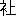

| 行人 | |
| 夏目 漱石 | |
| (2012) | |
行人
夏目漱石
友達
一
梅田
の停車場
を下
りるや否
や自分は母からいいつけられた通り、すぐ俥
を雇
って岡田
の家に馳
けさせた。岡田は母方の遠縁に当る男であった。自分は彼がはたして母の何に当るかを知らずにただ疎
い親類とばかり覚えていた。
大阪へ下りるとすぐ彼を訪
うたのには理由があった。自分はここへ来る一週間前ある友達と約束をして、今から十日以内に阪地
で落ち合おう、そうしていっしょに高野
登りをやろう、もし時日
が許すなら、伊勢から名古屋へ廻
ろう、と取りきめた時、どっちも指定すべき場所をもたないので、自分はつい岡田の氏名と住所を自分の友達に告げたのである。
「じゃ大阪へ着き次第、そこへ電話をかければ君のいるかいないかは、すぐ分るんだね」と友達は別れるとき念を押した。岡田が電話をもっているかどうか、そこは自分にもはなはだ危
しかったので、もし電話がなかったら、電信でも郵便でも好
いから、すぐ出してくれるように頼んでおいた。友達は甲州線
で諏訪
まで行って、それから引返して木曾
を通った後
、大阪へ出る計画であった。自分は東海道を一息
に京都まで来て、そこで四五日用足
かたがた逗留
してから、同じ大阪の地を踏む考えであった。
予定の時日を京都で費
した自分は、友達の消息
を一刻も早く耳にするため停車場を出ると共に、岡田の家を尋ねなければならなかったのである。けれどもそれはただ自分の便宜
になるだけの、いわば私の都合に過ぎないので、先刻
云った母のいいつけとはまるで別物であった。母が自分に向って、あちらへ行ったら何より先に岡田を尋ねるようにと、わざわざ荷になるほど大きい鑵入
の菓子を、御土産
だよと断
って、鞄
の中へ入れてくれたのは、昔気質
の律儀
からではあるが、その奥にもう一つ実際的の用件を控
えているからであった。
自分は母と岡田が彼らの系統上どんな幹の先へ岐
れて出た、どんな枝となって、互に関係しているか知らないくらいな人間である。母から依託された用向についても大した期待も興味もなかった。けれども久しぶりに岡田という人物――落ちついて四角な顔をしている、いくら髭
を欲しがっても髭の容易に生えない、しかも頭の方がそろそろ薄くなって来そうな、――岡田という人物に会う方の好奇心は多少動いた。岡田は今までに所用で時々出京した。ところが自分はいつもかけ違って会う事ができなかった。したがって強く酒精
に染められた彼
の四角な顔も見る機会を奪われていた。自分は俥
の上で指を折って勘定して見た。岡田がいなくなったのは、ついこの間のようでも、もう五六年になる。彼の気にしていた頭も、この頃ではだいぶ危険に逼
っているだろうと思って、その地
の透
いて見えるところを想像したりなどした。
岡田の髪の毛は想像した通り薄くなっていたが、住居
は思ったよりもさっぱりした新しい普請
であった。
「どうも上方流
で余計な所に高塀
なんか築き上
て、陰気
で困っちまいます。そのかわり二階はあります。ちょっと上
って御覧なさい」と彼は云った。自分は何より先に友達の事が気になるので、こうこういう人からまだ何とも通知は来ないかと聞いた。岡田は不思議そうな顔をして、いいえと答えた。
二
自分は岡田に連れられて二階へ上
って見た。当人が自慢するほどあって眺望
はかなり好かったが、縁側
のない座敷の窓へ日が遠慮なく照り返すので、暑さは一通りではなかった。床
の間
にかけてある軸物
も反
っくり返っていた。
「なに日が射すためじゃない。年
が年中
かけ通しだから、糊
の具合でああなるんです」と岡田は真面目
に弁解した。
「なるほど梅
に鶯
だ」と自分も云いたくなった。彼は世帯を持つ時の用意に、この幅
を自分の父から貰
って、大得意で自分の室
へ持って来て見せたのである。その時自分は「岡田君この呉春
は偽物
だよ。それだからあの親父
が君にくれたんだ」と云って調戯
半分岡田を怒らした事を覚えていた。
二人は懸物
を見て、当時を思い出しながら子供らしく笑った。岡田はいつまでも窓に腰をかけて話を続ける風に見えた。自分も襯衣
に洋袴
だけになってそこに寝転
びながら相手になった。そうして彼から天下茶屋
の形勢だの、将来の発展だの、電車の便利だのを聞かされた。自分は自分にそれほど興味のない問題を、ただ素直にはいはいと聴
いていたが、電車の通じる所へわざわざ俥
へ乗って来た事だけは、馬鹿らしいと思った。二人はまた二階を下りた。
やがて細君が帰って来た。細君はお兼
さんと云って、器量
はそれほどでもないが、色の白い、皮膚の滑
らかな、遠見
の大変好い女であった。父が勤めていたある官省の属官の娘で、その頃は時々勝手口から頼まれものの仕立物などを持って出入
をしていた。岡田はまたその時分自分の家の食客
をして、勝手口に近い書生部屋で、勉強もし昼寝
もし、時には焼芋
なども食った。彼らはかようにして互に顔を知り合ったのである。が、顔を知り合ってから、結婚が成立するまでに、どんな径路
を通って来たか自分はよく知らない。岡田は母の遠縁に当る男だけれども、自分の宅
では書生同様にしていたから、下女達は自分や自分の兄には遠慮して云い兼ねる事までも、岡田に対してはつけつけと云って退
けた。「岡田さんお兼さんがよろしく」などという言葉は、自分も時々耳にした。けれども岡田はいっこう気にもとめない様子だったから、おおかたただの徒事
だろうと思っていた。すると岡田は高商を卒業して一人で大阪のある保険会社へ行ってしまった。地位は自分の父が周旋
したのだそうである。それから一年ほどして彼はまた飄然
として上京した。そうして今度はお兼さんの手を引いて大阪へ下
って行った。これも自分の父と母が口を利
いて、話を纏
めてやったのだそうである。自分はその時富士へ登って甲州路を歩く考えで家にはいなかったが、後でその話を聞いてちょっと驚いた。勘定して見ると、自分が御殿場で下りた汽車と擦
れ違って、岡田は新しい細君を迎えるために入京したのである。
お兼さんは格子
の前で畳んだ洋傘
を、小さい包と一緒に、脇
の下に抱
えながら玄関から勝手の方に通り抜ける時、ちょっときまりの悪そうな顔をした。その顔は日盛
の中を歩いた火気
のため、汗を帯びて赤くなっていた。
「おい御客さまだよ」と岡田が遠慮のない大きな声を出した時、お兼さんは「ただいま」と奥の方で優
しく答えた。自分はこの声の持主に、かつて着た久留米絣
やフランネルの襦袢
を縫って貰った事もあるのだなとふと懐
かしい記憶を喚起
した。
三
お兼
さんの態度は明瞭
で落ちついて、どこにも下卑
た家庭に育ったという面影
は見えなかった。「二三日前
からもうおいでだろうと思って、心待
に御待申しておりました」などと云って、眼の縁
に愛嬌
を漂
よわせるところなどは、自分の妹よりも品
の良
いばかりでなく、様子も幾分か立優
って見えた。自分はしばらくお兼さんと話しているうちに、これなら岡田がわざわざ東京まで出て来て連れて行ってもしかるべきだという気になった。
この若い細君がまだ娘盛
の五六年前
に、自分はすでにその声も眼鼻立
も知っていたのではあるが、それほど親しく言葉を換
わす機会もなかったので、こうして岡田夫人として改まって会って見ると、そう馴々
しい応対もできなかった。それで自分は自分と同階級に属する未知の女に対するごとく、畏
まった言語をぽつぽつ使った。岡田はそれがおかしいのか、または嬉
しいのか、時々自分の顔を見て笑った。それだけなら構わないが、折節
はお兼さんの顔を見て笑った。けれどもお兼さんは澄ましていた。お兼さんがちょっと用があって奥へ立った時、岡田はわざと低い声をして、自分の膝
を突っつきながら、「なぜあいつに対して、そう改まってるんです。元から知ってる間柄
じゃありませんか」と冷笑
すような句調
で云った。
「好い奥さんになったね。あれなら僕が貰やよかった」
「冗談
いっちゃいけない」と云って岡田は一層大きな声を出して笑った。やがて少し真面目
になって、「だってあなたはあいつの悪口をお母さんに云ったっていうじゃありませんか」と聞いた。
「なんて」
「岡田も気の毒だ、あんなものを大阪下
りまで引っ張って行くなんて。もう少し待っていればおれが相当なのを見
つけてやるのにって」
「そりゃ君昔の事ですよ」
こうは答えたようなものの、自分は少し恐縮した。かつちょっと狼狽
した。そうして先刻
岡田が変な眼遣
をして、時々細君の方を見た意味をようやく理解した。
「あの時は僕も母から大変叱られてね。おまえのような書生に何が解るものか。岡田さんの事はお父さんと私
とで当人達
に都合の好いようにしたんだから、余計な口を利
かずに黙って見ておいでなさいって。どうも手痛
くやられました」
自分は母から叱られたという事実が、自分の弁解にでもなるような語気で、その時の様子を多少誇張して述べた。岡田はますます笑った。
それでもお兼さんがまた座敷へ顔を出した時、自分は多少きまりの悪い思をしなければならなかった。人の悪い岡田はわざわざ細君に、「今二郎
さんがおまえの事を大変賞
めて下すったぜ。よく御礼を申し上げるが好い」と云った。お兼さんは「あなたがあんまり悪口をおっしゃるからでしょう」と夫
に答えて、眼では自分の方を見て微笑した。
夕飯前
に浴衣
がけで、岡田と二人岡の上を散歩した。まばらに建てられた家屋や、それを取り巻く垣根が東京の山の手を通り越した郊外を思い出させた。自分は突然大阪で会合しようと約束した友達の消息が気になり出した。自分はいきなり岡田に向って、「君の所にゃ電話はないんでしょうね」と聞いた。「あの構
で電話があるように見えますかね」と答えた岡田の顔には、ただ機嫌
の好
い浮き浮きした調子ばかり見えた。
四
それは夕方の比較的長く続く夏の日の事であった。二人の歩いている岡の上はことさら明るく見えた。けれども、遠くにある立樹
の色が空に包まれてだんだん黒ずんで行くにつれて、空の色も時を移さず変って行った。自分は名残
の光で岡田の顔を見た。
「君東京にいた時よりよほど快豁
になったようですね。血色も大変好い。結構だ」
岡田は「ええまあお蔭
さまで」と云ったような瞹眛
な挨拶
をしたが、その挨拶のうちには一種嬉
しそうな調子もあった。
もう晩飯
の用意もできたから帰ろうじゃないかと云って、二人帰路
についた時、自分は突然岡田に、「君とお兼さんとは大変仲が好いようですね」といった。自分は真面目なつもりだったけれども、岡田にはそれが冷笑
のように聞えたと見えて、彼はただ笑うだけで何の答えもしなかった。けれども別に否
みもしなかった。
しばらくしてから彼は今までの快豁
な調子を急に失った。そうして何か秘密でも打ち明けるような具合に声を落した。それでいて、あたかも独言
をいう時のように足元を見つめながら、「これであいつといっしょになってから、かれこれもう五六年近くになるんだが、どうも子供ができないんでね、どういうものか。それが気がかりで......」と云った。
自分は何とも答えなかった。自分は子供を生ますために女房を貰う人は、天下に一人もあるはずがないと、かねてから思っていた。しかし女房を貰ってから後
で、子供が欲しくなるものかどうか、そこになると自分にも判断がつかなかった。
「結婚すると子供が欲しくなるものですかね」と聞いて見た。
「なに子供が可愛
いかどうかまだ僕にも分りませんが、何しろ妻
たるものが子供を生まなくっちゃ、まるで一人前の資格がないような気がして......」
岡田は単にわが女房を世間並
にするために子供を欲するのであった。結婚はしたいが子供ができるのが怖
いから、まあもう少し先へ延
そうという苦しい世の中ですよと自分は彼に云ってやりたかった。すると岡田が「それに二人
ぎりじゃ淋しくってね」とまたつけ加えた。
「二人ぎりだから仲が好いんでしょう」
「子供ができると夫婦の愛は減るもんでしょうか」
岡田と自分は実際二人の経験以外にあることをさも心得たように話し合った。
宅
では食卓の上に刺身だの吸物だのが綺麗
に並んで二人を待っていた。お兼さんは薄化粧
をして二人のお酌をした。時々は団扇
を持って自分を扇
いでくれた。自分はその風が横顔に当るたびに、お兼さんの白粉
の匂
を微
かに感じた。そうしてそれが麦酒
や山葵
の香
よりも人間らしい好い匂のように思われた。
「岡田君はいつもこうやって晩酌
をやるんですか」と自分はお兼さんに聞いた。お兼さんは微笑しながら、「どうも後引上戸
で困ります」と答えてわざと夫の方を見やった。夫は、「なに後
が引けるほど飲ませやしないやね」と云って、傍
にある団扇を取って、急に胸のあたりをはたはたいわせた。自分はまた急にこっちで会うべきはずの友達の事に思い及んだ。
「奥さん、三沢
という男から僕に宛
てて、郵便か電報か何か来ませんでしたか。今散歩に出た後で」
「来やしないよ。大丈夫だよ、君。僕の妻はそう云う事はちゃんと心得てるんだから。ねえお兼。――好いじゃありませんか、三沢の一人や二人来たって来なくたって。二郎さん、そんなに僕の宅が気に入らないんですか。第一
あなたはあの一件からして片づけてしまわなくっちゃならない義務があるでしょう」
岡田はこう云って、自分の洋盃
へ麦酒をゴボゴボと注
いだ。もうよほど酔っていた。
五
その晩はとうとう岡田の家
へ泊った。六畳の二階で一人寝かされた自分は、蚊帳
の中の暑苦しさに堪
えかねて、なるべく夫婦に知れないように、そっと雨戸を開け放った。窓際
を枕に寝ていたので、空は蚊帳越にも見えた。試
に赤い裾
から、頭だけ出して眺
めると星がきらきらと光った。自分はこんな事をする間にも、下にいる岡田夫婦の今昔
は忘れなかった。結婚してからああ親しくできたらさぞ幸福だろうと羨
ましい気もした。三沢から何
の音信
のないのも気がかりであった。しかしこうして幸福な家庭の客となって、彼の消息を待つために四五日ぐずぐずしているのも悪くはないと考えた。一番どうでも好かったのは岡田のいわゆる「例の一件」であった。
翌日
眼が覚
めると、窓の下の狭苦しい庭で、岡田の声がした。
「おいお兼とうとう絞
りのが咲き出したぜ。ちょいと来て御覧」
自分は時計を見て、腹這
になった。そうして燐寸
を擦
って敷島
へ火を点
けながら、暗
にお兼さんの返事を待ち構えた。けれどもお兼さんの声はまるで聞えなかった。岡田は「おい」「おいお兼」をまた二三度繰返した。やがて、「せわしない方ね、あなたは。今朝顔どころじゃないわ、台所が忙
しくって」という言葉が手に取るように聞こえた。お兼さんは勝手から出て来て座敷の縁側
に立っているらしい。
「それでも綺麗
ね。咲いて見ると。――金魚はどうして」
「金魚は泳いでいるがね。どうもこのほうはむずかしいらしい」
自分はお兼さんが、死にかかった金魚の運命について、何かセンチメンタルな事でもいうかと思って、煙草
を吹かしながら聴いていた。けれどもいくら待っていても、お兼さんは何とも云わなかった。岡田の声も聞こえなかった。自分は煙草を捨てて立ち上った。そうしてかなり急な階子段
を一段ずつ音を立てて下へ降りて行った。
三人で飯を済ました後
、岡田は会社へ出勤しなければならないので、緩
り案内をする時間がないのを残念がった。自分はここへ来る前から、そんな事を全く予期していなかったと云って、白い詰襟姿
の彼を坐ったまま眺
めていた。
「お兼、お前暇があるなら二郎さんを案内して上げるが好い」と岡田は急に思いついたような顔つきで云った。お兼さんはいつもの様子に似ず、この時だけは夫にも自分にも何とも答えなかった。自分はすぐ、「なに構わない。君といっしょに君の会社のある方角まで行って、そこいらを逍遥
いて見よう」と云いながら立った。お兼さんは玄関で自分の洋傘
を取って、自分に手渡ししてくれた。それからただ一口「お早く」と云った。
自分は二度電車に乗せられて、二度下ろされた。そうして岡田の通
っている石造の会社の周囲
を好い加減に歩き廻った。同じ流れか、違う流れか、水の面
が二三度目に入
った。そのうち暑さに堪
えられなくなって、また好い加減に岡田の家
へ帰って来た。
二階へ上
って、――自分は昨夜
からこの六畳の二階を、自分の室
と心得るようになった。――休息していると、下から階子段を踏む音がして、お兼さんが上
って来た。自分は驚いて脱
いだ肌
を入れた。昨日廂
に束
ねてあったお兼さんの髪は、いつの間にか大きな丸髷
に変っていた。そうして桃色の手絡
が髷
の間から覗
いていた。
六
お兼さんは黒い盆の上に載
せた平野水
と洋盃
を自分の前に置いて、「いかがでございますか」と聞いた。自分は「ありがとう」と答えて、盆を引き寄せようとした。お兼さんは「いえ私が」と云って急に罎
を取り上げた。自分はこの時黙ってお兼さんの白い手ばかり見ていた。その手には昨夕
気がつかなかった指環
が一つ光っていた。
自分が洋盃
を取上げて咽喉
を潤
した時、お兼さんは帯の間から一枚の葉書を取り出した。
「先ほどお出
かけになった後
で」と云いかけて、にやにや笑っている。自分はその表面に三沢の二字を認めた。
「とうとう参りましたね。御待かねの......」
自分は微笑しながら、すぐ裏を返して見た。
「一両日後
れるかも知れぬ」
葉書に大きく書いた文字はただこれだけであった。
「まるで電報のようでございますね」
「それであなた笑ってたんですか」
「そう云う訳でもございませんけれども、何だかあんまり......」
お兼さんはそこで黙ってしまった。自分はお兼さんをもっと笑わせたかった。
「あんまり、どうしました」
「あんまりもったいないようですから」
お兼さんのお父さんというのは大変緻密
な人で、お兼さんの所へ手紙を寄こすにも、たいていは葉書で用を弁じている代りに蠅
の頭のような字を十五行も並べて来るという話しを、お兼さんは面白そうにした。自分は三沢の事を全く忘れて、ただ前にいるお兼さんを的
に、さまざまの事を尋ねたり聞いたりした。
「奥さん、子供が欲しかありませんか。こうやって、一人で留守
をしていると退屈するでしょう」
「そうでもございませんわ。私
兄弟の多い家
に生れて大変苦労して育ったせいか、子供ほど親を意地見
るものはないと思っておりますから」
「だって一人や二人はいいでしょう。岡田君は子供がないと淋
しくっていけないって云ってましたよ」
お兼さんは何にも答えずに窓の外の方を眺
めていた。顔を元へ戻しても、自分を見ずに、畳の上にある平野水の罎を見ていた。自分は何にも気がつかなかった。それでまた「奥さんはなぜ子供ができないんでしょう」と聞いた。するとお兼さんは急に赤い顔をした。自分はただ心やすだてで云ったことが、はなはだ面白くない結果を引き起したのを後悔した。けれどもどうする訳
にも行かなかった。その時はただお兼さんに気の毒をしたという心だけで、お兼さんの赤くなった意味を知ろうなどとは夢にも思わなかった。
自分はこの居苦
しくまた立苦
しくなったように見える若い細君を、どうともして救わなければならなかった。それには是非共話頭を転ずる必要があった。自分はかねてからさほど重きを置いていなかった岡田のいわゆる「例の一件」をとうとう持ち出した。お兼さんはすぐ元の態度を回復した。けれども夫に責任の過半を譲
るつもりか、けっして多くを語らなかった。自分もそう根掘り葉掘り聞きもしなかった。
七
「例の一件」が本式に岡田の口から持ち出されたのはその晩の事であった。自分は露
に近い縁側
を好んでそこに座を占めていた。岡田はそれまでお兼さんと向き合って座敷の中に坐
っていたが、話が始まるや否や、すぐ立って縁側へ出て来た。
「どうも遠くじゃ話がし悪
くっていけない」と云いながら、模様のついた座蒲団
を自分の前に置いた。お兼さんだけは依然として元の席を動かなかった。
「二郎さん写真は見たでしょう、この間僕が送った」
写真の主
というのは、岡田と同じ会社へ出る若い人であった。この写真が来た時家
のものが代りばんこに見て、さまざまの批評を加えたのを、岡田は知らないのである。
「ええちょっと見ました」
「どうです評判は」
「少し御凸額
だって云ったものもあります」
お兼さんは笑い出した。自分もおかしくなった。と云うのは、その男の写真を見て、お凸額だと云い始めたものは、実のところ自分だからである。
「お重
さんでしょう、そんな悪口をいうのは。あの人の口にかかっちゃ、たいていのものは敵
わないからね」
岡田は自分の妹のお重を大変口の悪い女だと思っている。それも彼がお重から、あなたの顔は将棋
の駒
見たいよと云われてからの事である。
「お重さんに何と云われたって構わないが肝心
の当人はどうなんです」
自分は東京を立つとき、母から、貞
には無論異存これなくという返事を岡田の方へ出しておいたという事を確めて来たのである。だから、当人は母から上げた返事の通りだと答えた。岡田夫婦はまた佐野
という婿
になるべき人の性質や品行や将来の望みや、その他いろいろの条項について一々自分に話して聞かせた。最後に当人がこの縁談の成立を切望している例などを挙げた。
お貞さんは器量から云っても教育から云っても、これという特色のない女である。ただ自分の家の厄介
ものという名があるだけである。
「先方があまり乗気になって何だか剣呑
だから、あっちへ行ったらよく様子を見て来ておくれ」
自分は母からこう頼まれたのである。自分はお貞さんの運命について、それほど多くの興味はもち得なかったけれども、なるほどそう望まれるのは、お貞さんのために結構なようでまた危険な事だろうとも考えていた。それで今まで黙って岡田夫婦の云う事を聞いていた自分は、ふと口を滑
らした。――
「どうしてお貞さんが、そんなに気に入ったものかな。まだ会った事もないのに」
「佐野さんはああいうしっかりした方だから、やっぱり辛抱人
を御貰
いになる御考えなんですよ」
お兼さんは岡田の方を向いて、佐野の態度をこう弁解した。岡田はすぐ、「そうさ」と答えた。そうしてそのほかには何も考えていないらしかった。自分はとにかくその佐野という人に明日
会おうという約束を岡田として、また六畳の二階に上った。頭を枕
に着けながら、自分の結婚する場合にも事がこう簡単に運ぶのだろうかと考えると、少し恐ろしい気がした。
八
翌日
岡田は会社を午
で切上げて帰って来た。洋服を投出すが早いか勝手へ行って水浴をして「さあ行こう」と云い出した。
お兼さんはいつの間にか簞笥
の抽出
を開けて、岡田の着物を取り出した。自分は岡田が何を着るか、さほど気にも留めなかったが、お兼さんの着せ具合や、帯の取ってやり具合には、知らず知らず注意を払っていたものと見えて、「二郎さんあなた仕度
は好いんですか」と聞かれた時、はっと気がついて立ち上った。
「今日はお前も行くんだよ」と岡田はお兼さんに云った。「だって......」とお兼さんは絽
の羽織を両手で持ちながら、夫の顔を見上げた。自分は梯子段
の中途で、「奥さんいらっしゃい」と云った。
洋服を着て下へ降りて見ると、お兼さんはいつの間にかもう着物も帯も取り換えていた。
「早いですね」
「ええ早変り」
「あんまり変り栄
もしない服装
だね」と岡田が云った。
「これでたくさんよあんな所
へ行くのに」とお兼さんが答えた。
三人は暑
を冒
して岡を下
った。そうして停車場からすぐ電車に乗った。自分は向側に並んで腰をかけた岡田とお兼さんを時々見た。その間には三沢の突飛
な葉書を思い出したりした。全体あれはどこで出したものなんだろうと考えても見た。これから会いに行く佐野という男の事も、ちょいちょい頭に浮んだ。しかしそのたんびに「物好
」という言葉がどうしてもいっしょに出て来た。
岡田は突然体を前に曲げて、「どうです」と聞いた。自分はただ「結構です」と答えた。岡田は元のように腰から上を真直
にして、何かお兼さんに云った。その顔には得意の色が見えた。すると今度はお兼さんが顔を前へ出して「御気に入ったら、あなたも大阪
へいらっしゃいませんか」と云った。自分は覚えず「ありがとう」と答えた。さっきどうですと突然聞いた岡田の意味は、この時ようやく解った。
三人は浜寺
で降りた。この地方の様子を知らない自分は、大
な松と砂の間を歩いてさすがに好い所だと思った。しかし岡田はここでは「どうです」を繰返さなかった。お兼さんも洋傘
を開いたままさっさと行った。
「もう来ているだろうか」
「そうね。ことに因
るともう来て待っていらっしゃるかも知れないわ」
自分は二人の後
に跟
いて、こんな会話を聴
きながら、すばらしく大きな料理屋の玄関の前に立った。自分は何よりもまずその大きいのに驚かされたが、上って案内をされた時、さらにその道中の長いのに吃驚
した。三人は段々を下りて細い廊下を通った。
「隧道
ですよ」
お兼さんがこういって自分に教えてくれたとき、自分はそれが冗談
で、本当に地面の下ではないのだと思った。それでただ笑って薄暗いところを通り抜けた。
座敷では佐野が一人敷居際
に洋服の片膝を立てて、煙草
を吹かしながら海の方を見ていた。自分達の足音を聞いた彼はすぐこっちを向いた。その時彼の額の下に、金縁
の眼鏡
が光った。部屋へ這入
るとき第一に彼と顔を見合せたのは実に自分だったのである。
九
佐野は写真で見たよりも一層御凸額
であった。けれども額の広いところへ、夏だから髪を短く刈
っているので、ことにそう見えたのかも知れない。初対面の挨拶
をするとき、彼は「何分
よろしく」と云って頭を丁寧
に下げた。この普通一般の挨拶ぶりが、場合が場合なので、自分には一種変に聞こえた。自分の胸は今までさほど責任を感じていなかったところへ急に重苦しい束縛
ができた。
四人
は膳
に向いながら話をした。お兼さんは佐野とはだいぶ心やすい間柄
と見えて、時々向側から調戯
ったりした。
「佐野さん、あなたの写真の評判が東京
で大変なんですって」
「どう大変なんです。――おおかた好い方へ大変なんでしょうね」
「そりゃもちろんよ。噓
だと覚し召すならお隣りにいらっしゃる方に伺って御覧になれば解るわ」
佐野は笑いながらすぐ自分の方を見た。自分はちょっと何とか云わなければ跋
が悪かった。それで真面目
な顔をして、「どうも写真は大阪の方が東京より発達しているようですね」と云った。すると岡田が「浄瑠璃
じゃあるまいし」と交返
した。
岡田は自分の母の遠縁に当る男だけれども、長く自分の宅
の食客
をしていたせいか、昔から自分や自分の兄に対しては一段低い物の云い方をする習慣をもっていた。久しぶりに会った昨日
一昨日
などはことにそうであった。ところがこうして佐野が一人新しく席に加わって見ると、友達の手前体裁が悪いという訳だか何だか、自分に対する口の利
き方が急に対等になった。ある時は対等以上に横風
になった。
四人のいる座敷の向
には、同じ家のだけれども棟
の違う高い二階が見えた。障子
を取り払ったその広間の中を見上げると、角帯
を締
めた若い人達が大勢
いて、そのうちの一人が手拭
を肩へかけて踊
かなにか躍
っていた。「御店
ものの懇親会というところだろう」と評し合っているうちに、十六七の小僧が手摺
の所へ出て来て、汚ないものを容赦
なく廂
の上へ吐
いた。すると同じくらいな年輩の小僧がまた一人煙草
を吹かしながら出て来て、こらしっかりしろ、おれがついているから、何にも怖
がるには及ばない、という意味を純粋の大阪弁でやり出した。今まで苦々
しい顔をして手摺の方を見ていた四人はとうとう吹き出してしまった。
「どっちも酔ってるんだよ。小僧の癖に」と岡田が云った。
「あなたみたいね」とお兼さんが評した。
「どっちがです」と佐野が聞いた。
「両方ともよ。吐いたり管
を捲
いたり」とお兼さんが答えた。
岡田はむしろ愉快な顔をしていた。自分は黙っていた。佐野は独
り高笑
をした。
四人はまだ日の高い四時頃にそこを出て帰路についた。途中で分れるとき佐野は「いずれそのうちまた」と帽を取って挨拶
した。三人はプラットフォームから外へ出た。
「どうです、二郎さん」と岡田はすぐ自分の方を見た。
「好さそうですね」
自分はこうよりほかに答える言葉を知らなかった。それでいて、こう答えた後
ははなはだ無責任なような気がしてならなかった。同時にこの無責任を余儀なくされるのが、結婚に関係する多くの人の経験なんだろうとも考えた。
十
自分は三沢の消息を待って、なお二三日岡田の厄介になった。実をいうと彼らは自分のよそに行って宿を取る事を許さなかったのである。自分はその間できるだけ一人で大阪を見て歩いた。すると町幅の狭いせいか、人間の運動が東京よりも潑溂
と自分の眼を射るように思われたり、家並
が締りのない東京より整って好ましいように見えたり、河が幾筋もあってその河には静かな水が豊かに流れていたり、眼先の変った興味が日に一つ二つは必ずあった。
佐野には浜寺でいっしょに飯を食った次の晩また会った。今度は彼の方から浴衣
がけで岡田を尋ねて来た。自分はその時もかれこれ二時間余り彼と話した。けれどもそれはただ前日の催しを岡田の家で小規模に繰返したに過ぎなかったので、新しい印象と云っては格別頭に残りようがなかった。だから本当をいうとただ世間並の人というほかに、自分は彼について何も解らなかった。けれどもまた母や岡田に対する義務としては、何も解らないで澄ましている訳にも行かなかった。自分はこの二三日の間に、とうとう東京の母へ向けて佐野と会見を結了
した旨
の報告を書いた。
仕方がないから「佐野さんはあの写真によく似ている」と書いた。「酒は呑
むが、呑んでも赤くならない」と書いた。「御父さんのように謡
をうたう代りに義太夫を勉強しているそうだ」と書いた。最後に岡田夫婦と仲の好さそうな様子を述べて、「あれほど仲の好い岡田さん夫婦の周旋だから間違はないでしょう」と書いた。一番しまいに、「要するに、佐野さんは多数の妻帯者と変ったところも何もないようです。お貞
さんも普通の細君になる資格はあるんだから、承諾したら好いじゃありませんか」と書いた。
自分はこの手紙を封じる時、ようやく義務が済んだような気がした。しかしこの手紙一つでお貞さんの運命が永久に決せられるのかと思うと、多少自分のおっちょこちょいに恥入るところもあった。そこで自分はこの手紙を封筒へ入
たまま、岡田の所へ持って行った。岡田はすうと眼を通しただけで、「結構」と答えた。お兼さんは、てんで巻紙に手を触れなかった。自分は二人の前に坐って、双方を見較
べた。
「これで好いでしょうかね。これさえ出してしまえば、宅
の方はきまるんです。したがって佐野さんもちょっと動けなくなるんですが」
「結構です。それが僕らの最も希望するところです」と岡田は開き直っていった。お兼さんは同じ意味を女の言葉で繰
り返した。二人からこう事もなげに云われた自分は、それで安心するよりもかえって心元なくなった。
「何がそんなに気になるんです」と岡田が微笑しながら煙草
の煙を吹いた。「この事件について一番冷淡だったのは君じゃありませんか」
「冷淡にゃ違ないが、あんまりお手軽過ぎて、少し双方に対して申訳がないようだから」
「お手軽どころじゃございません、それだけ長い手紙を書いていただけば。それでお母さまが御満足なさる、こちらは初
からきまっている。これほどおめでたい事はないじゃございませんか、ねえあなた」
お兼さんはこういって、岡田の方を見た。岡田はそうともと云わぬばかりの顔をした。自分は理窟
をいうのが厭
になって、二人の目の前で、三銭切手を手紙に貼
った。
十一
自分はこの手紙を出しっきりにして大阪を立退
きたかった。岡田も母の返事の来るまで自分にいて貰う必要もなかろうと云った。
「けれどもまあ緩
くりなさい」
これが彼のしばしば繰り返す言葉であった。夫婦の好意は自分によく解っていた。同時に彼らの迷惑もまたよく想像された。夫婦ものに自分のような横着
な泊り客は、こっちにも多少の窮屈
は免
かれなかった。自分は電報のように簡単な端書
を書いたぎり何の音沙汰
もない三沢が悪
らしくなった。もし明日中
に何とか音信
がなければ、一人で高野登りをやろうと決心した。
「じゃ明日は佐野を誘って宝塚
へでも行きましょう」と岡田が云い出した。自分は岡田が自分のために時間の差繰
をしてくれるのが苦
になった。もっと皮肉を云えば、そんな温泉場へ行って、飲んだり食ったりするのが、お兼さんにすまないような気がした。お兼さんはちょっと見ると、派出好
の女らしいが、それはむしろ色白な顔立や様子がそう思わせるので、性質からいうと普通の東京ものよりずっと地味
であった。外へ出る夫の懐中にすら、ある程度の束縛を加えるくらい締っているんじゃないかと思われた。
「御酒
を召上らない方
は一生のお得ですね」
自分の杯
に親しまないのを知ったお兼さんは、ある時こういう述懐
を、さも羨
ましそうに洩
らした事さえある。それでも岡田が顔を赤くして、「二郎さん久しぶりに相撲
でも取りましょうか」と野蛮な声を出すと、お兼さんは眉
をひそめながら、嬉
しそうな眼つきをするのが常であったから、お兼さんは旦那の酔
うのが嫌
いなのではなくって、酒に費用
のかかるのが嫌いなのだろうと、自分は推察していた。
自分はせっかくの好意だけれども宝塚行を断
った。そうして腹の中で、あしたの朝岡田の留守に、ちょっと電車に乗って一人で行って様子を見て来
ようと取りきめた。岡田は「そうですか。文楽
だと好いんだけれどもあいにく暑いんで休んでいるもんだから」と気の毒そうに云った。
翌朝
自分は岡田といっしょに家
を出た。彼は電車の上で突然自分の忘れかけていたお貞さんの結婚問題を持ち出した。
「僕はあなたの親類だと思ってやしません。あなたのお父さんやお母さんに書生として育てられた食客
と心得ているんです。僕の今の地位だって、あのお兼だって、みんなあなたの御両親のお蔭
でできたんです。だから何か御恩返しをしなくっちゃすまないと平生から思ってるんです。お貞さんの問題もつまりそれが動機でしたんですよ。けっして他意はないんですからね」
お貞さんは宅
の厄介ものだから、一日も早くどこかへ嫁に世話をするというのが彼の主意であった。自分は家族の一人として岡田の好意を謝すべき地位にあった。
「お宅
じゃ早くお貞さんを片づけたいんでしょう」
自分の父も母も実際そうなのである。けれどもこの時自分の眼にはお貞さんと佐野という縁故も何もない二人がいっしょにかつ離れ離れに映じた。
「旨
く行くでしょうか」
「そりゃ行くだろうじゃありませんか。僕とお兼を見たって解るでしょう。結婚してからまだ一度も大喧嘩
をした事なんかありゃしませんぜ」
「あなた方
は特別だけれども......」
「なにどこの夫婦だって、大概似たものでさあ」
岡田と自分はそれでこの話を切り上げた。
十二
三沢の便
りははたして次の日の午後になっても来なかった。気の短い自分にはこんなズボラを待ってやるのが腹立
しく感ぜられた、強
いてもこれから一人で立とうと決心した。
「まあもう一日
二日
はよろしいじゃございませんか」とお兼さんは愛嬌
に云ってくれた。自分が鞄
の中へ浴衣
や三尺帯
を詰めに二階へ上
りかける下から、「是非そうなさいましよ」とおっかけるように留めた。それでも気がすまなかったと見えて、自分が鞄の始末をした頃、上
り口
へ顔を出して、「おやもう御荷物の仕度をなすったんですか。じゃ御茶でも入れますから、御緩
くりどうぞ」と降りて行った。
自分は胡坐
のまま旅行案内をひろげた。そうして胸の中
でかれこれと時間の都合を考えた。その都合がなかなか旨
く行かないので、仰向
になってしばらく寝て見た。すると三沢といっしょに歩く時の愉快がいろいろに想像された。富士を須走口
へ降りる時、滑
って転んで、腰にぶら下げた大きな金明水
入の硝子壜
を、壊
したなり帯へ括
りつけて歩いた彼の姿扮
などが眼に浮んだ。ところへまた梯子段
を踏むお兼さんの足音がしたので、自分は急に起き直った。
お兼さんは立ちながら、「まあ好かった」と一息吐
いたように云って、すぐ自分の前に坐
った。そうして三沢から今届いた手紙を自分に渡した。自分はすぐ封を開いて見た。
「とうとう御着
になりましたか」
自分はちょっとお兼さんに答える勇気を失った。三沢は三日前大阪に着いて二日ばかり寝たあげくとうとう病院に入ったのである。自分は病院の名を指
してお兼さんに地理を聞いた。お兼さんは地理だけはよく呑
み込んでいたが、病院の名は知らなかった。自分はとにかく鞄
を提
げて岡田の家を出る事にした。
「どうもとんだ事でございますね」とお兼さんは繰り返し繰り返し気の毒がった。断
るのを無理に、下女が鞄を持って停車場
まで随
いて来た。自分は途中でなおもこの下女を返そうとしたが、何とか云ってなかなか帰らなかった。その言葉は解るには解るが、自分のようにこの土地に親しみのないものにはとても覚えられなかった。別れるとき今まで世話になった礼に一円やったら「さいなら、お機嫌
よう」と云った。
電車を下りて俥
に乗ると、その俥は軌道
を横切って細い通りを真直
に馳
けた。馳け方があまり烈
しいので、向うから来る自転車だの俥だのと幾度
か衝突しそうにした。自分ははらはらしながら病院の前に降
ろされた。
鞄を持ったまま三階に上
った自分は、三沢を探すため方々の室
を覗
いて歩いた。三沢は廊下の突き当りの八畳に、氷囊
を胸の上に載
せて寝ていた。
「どうした」と自分は室に入るや否や聞いた。彼は何も答えずに苦笑している。「また食い過ぎたんだろう」と自分は叱るように云ったなり、枕元に胡坐
をかいて上着
を脱いだ。
「そこに蒲団
がある」と三沢は上眼
を使って、室の隅
を指した。自分はその眼の様子と頰の具合を見て、これはどのくらい重い程度の病気なんだろうと疑った。
「看護婦はついてるのかい」
「うん。今どこかへ出て行った」
十三
三沢は平生から胃腸のよくない男であった。ややともすると吐いたり下したりした。友達はそれを彼の不養生からだと評し合った。当人はまた母の遺伝で体質から来るんだから仕方がないと弁解していた。そうして消化器病の書物などをひっくり返して、アトニーとか下垂性
とかトーヌスとかいう言葉を使った。自分などが時々彼に忠告めいた事をいうと、彼は素人
が何を知るものかと云わぬばかりの顔をした。
「君アルコールは胃で吸収されるものか、腸で吸収されるものか知ってるか」などと澄ましていた。そのくせ病気になると彼はきっと自分を呼んだ。自分もそれ見ろと思いながら必ず見舞に出かけた。彼の病気は短くて二三日長くて一二週間で大抵は癒
った。それで彼は彼の病気を馬鹿にしていた。他人の自分はなおさらであった。
けれどもこの場合自分はまず彼の入院に驚かされていた。その上に胃の上の氷囊
でまた驚かされた。自分はそれまで氷囊は頭か心臓の上でなければ載
せるものでないとばかり信じていたのである。自分はぴくんぴくんと脈を打つ氷囊を見つめて厭
な心持になった。枕元に坐っていればいるほど、付景気
の言葉がだんだん出なくなって来た。
三沢は看護婦に命じて氷菓子
を取らせた。自分がその一杯に手を着けているうちに、彼は残る一杯を食うといい出した。自分は薬と定食以外にそんなものを口にするのは好くなかろうと思ってとめにかかった。すると三沢は怒った。
「君は一杯の氷菓子を消化するのに、どのくらい強壮な胃が必要だと思うのか」と真面目
な顔をして議論を仕かけた。自分は実のところ何にも知らないのである。看護婦は、よかろうけれども念のためだからと云って、わざわざ医局へ聞きに行った。そうして少量なら差支
ないという許可を得て来た。
自分は便所に行くとき三沢に知れないように看護婦を呼んで、あの人の病気は全体何というんだと聞いて見た。看護婦はおおかた胃が悪いんだろうと答えた。それより以上の事を尋ねると、今朝看護婦会から派出されたばかりで、何もまだ分らないんだと云って平気でいた。仕方なしに下へ降りて医員に尋ねたら、その男もまだ三沢の名を知らなかった。けれども患者の病名だの処方だのを書いた紙箋
を繰って、胃が少し糜爛
れたんだという事だけ教えてくれた。
自分はまた三沢の傍
へ行った。彼は氷囊を胃の上に載せたまま、「君その窓から外を見てみろ」、と云った。窓は正面に二つ側面に一つあったけれども、いずれも西洋式で普通より高い上に、病人は日本の蒲団
を敷いて寝ているんだから、彼の眼には強い色の空と、電信線の一部分が筋違
に見えるだけであった。
自分は窓側
に手を突いて、外を見下
した。すると何よりもまず高い煙突から出る遠い煙が眼に入
った。その煙は市全体を掩
うように大きな建物の上を這
い廻っていた。
「河が見えるだろう」と三沢が云った。
大きな河が左手の方に少し見えた。
「山も見えるだろう」と三沢がまた云った。
山は正面にさっきから見えていた。
それが暗
がり峠
で、昔は多分大きな木ばかり生えていたのだろうが、今はあの通り明るい峠に変化したんだとか、もう少しするとあの山の下を突
き貫
いて、奈良へ電車が通うようになるんだとか、三沢は今誰かから聞いたばかりの事を元気よく語った。自分はこれなら大した心配もないだろうと思って病院を出た。
十四
自分は別に行く所もなかったので、三沢の泊った宿の名を聞いて、そこへ俥
で乗りつけた。看護婦はつい近くのように云ったが、始めての自分にはかなりの道程
と思われた。
その宿には玄関も何にもなかった。這入
ってもいらっしゃいと挨拶
に出る下女もなかった。自分は三沢の泊ったという二階の一間
に通された。手摺
の前はすぐ大きな川で、座敷から眺
めていると、大変涼
しそうに水は流れるが、向
のせいか風は少しも入らなかった。夜
に入
って向側に点ぜられる灯火のきらめきも、ただ眼に少しばかりの趣
を添えるだけで、涼味という感じにはまるでならなかった。
自分は給仕の女に三沢の事を聞いて始めて知った。彼は二日
ここに寝たあげく、三日目に入院したように記憶していたが実はもう一日前の午後に着いて、鞄
を投げ込んだまま外出して、その晩の十時過に始めて帰って来たのだそうである。着いた時には五六人の伴侶
がいたが、帰りにはたった一人になっていたと下女は告げた。自分はその五六人の伴侶の何人
であるかについて思い悩んだ。しかし想像さえ浮ばなかった。
「酔ってたかい」と自分は下女に聞いて見た。そこは下女も知らなかった。けれども少し経
って吐
いたから酔っていたんだろうと答えた。
自分はその夜
蚊帳
を釣って貰って早く床
に這入
った。するとその蚊帳に穴があって、蚊
が二三疋
這入って来た。団扇
を動かして、それを払
い退
けながら寝ようとすると、隣の室
の話し声が耳についた。客は下女を相手に酒でも呑んでいるらしかった。そうして警部だとかいう事であった。自分は警部の二字に多少の興味があった。それでその人の話を聞いて見る気になったのである。すると自分の室を受持っている下女が上って来て、病院から電話だと知らせた。自分は驚いて起き上った。
電話の相手は三沢の看護婦であった。病人の模様でも急に変ったのかと思って心配しながら用事を聞いて見ると病人から、明日
はなるべく早く来てくれ、退屈で困るからという伝言に過ぎなかった。自分は彼の病気がはたしてそう重くないんだと断定した。「何だそんな事か、そういうわがままはなるべく取次
がないが好い」と叱りつけるように云ってやったが、後で看護婦に対して気の毒になったので、「しかし行く事は行くよ。君が来てくれというなら」とつけ足
して室へ帰った。
下女はいつ気がついたか、蚊帳の穴を針と糸で塞
いでいた。けれどもすでに這入っている蚊はそのままなので、横になるや否や、時々額や鼻の頭の辺
でぶうんと云う小
い音がした。それでもうとうとと寝た。すると今度は右の方の部屋でする話声で眼が覚
めた。聞いているとやはり男と女の声であった。自分はこっち側
に客は一人もいないつもりでいたので、ちょっと驚かされた。しかし女が繰返
して、「そんならもう帰して貰いますぜ」というような言葉を二三度用いたので、隣の客が女に送られて茶屋からでも帰って来たのだろうと推察してまた眠りに落ちた。
それからもう一度下女が雨戸を引く音に夢を破られて、最後に起き上ったのが、まだ川の面
に白い靄
が薄く見える頃だったから、正味
寝たのは何時間にもならなかった。
十五
三沢の氷囊
は依然としてその日も胃の上に在
った。
「まだ氷で冷やしているのか」
自分はいささか案外な顔をしてこう聞いた。三沢にはそれが友達甲斐
もなく響いたのだろう。
「鼻風邪
じゃあるまいし」と云った。
自分は看護婦の方を向いて、「昨夕
は御苦労さま」と一口礼を述べた。看護婦は色の蒼
い膨
れた女であった。顔つきが絵にかいた座頭に好く似ているせいか、普通彼らの着る白い着物がちっとも似合わなかった。岡山のもので、小さい時膿毒性
とかで右の眼を悪くしたんだと、こっちで尋ねもしない事を話した。なるほどこの女の一方の眼には白い雲がいっぱいにかかっていた。
「看護婦さん、こんな病人に優しくしてやると何を云い出すか分らないから、好加減
にしておくがいいよ」
自分は面白半分わざと軽薄な露骨
を云って、看護婦を苦笑
させた。すると三沢が突然「おい氷だ」と氷囊を持ち上げた。
廊下の先で氷を割る音がした時、三沢はまた「おい」と云って自分を呼んだ。
「君には解るまいが、この病気を押していると、きっと潰瘍
になるんだ。それが危険だから僕はこうじっとして氷囊を載
せているんだ。ここへ入院したのも、医者が勧めたのでも、宿で周旋して貰ったのでもない。ただ僕自身が必要と認めて自分で入ったのだ。酔興じゃないんだ」
自分は三沢の医学上の智識について、それほど信を置き得なかった。けれどもこう真面目
に出られて見ると、もう交
ぜ返
す勇気もなかった。その上彼のいわゆる潰瘍とはどんなものか全く知らなかった。
自分は起
って窓側
へ行った。そうして強い光に反射して、乾いた土の色を見せている暗
がり峠
を望んだ。ふと奈良へでも遊びに行って来
ようかという気になった。
「君その様子じゃ当分約束を履行
する訳にも行かないだろう」
「履行しようと思って、これほどの養生をしているのさ」
三沢はなかなか強情の男であった。彼の強情につき合えば、彼の健康が旅行に堪
え得るまで自分はこの暑い都の中で蒸
されていなければならなかった。
「だって君の氷囊はなかなか取れそうにないじゃないか」
「だから早く癒
るさ」
自分は彼とこういう談話を取り換
わせているうちに、彼の強情のみならず、彼のわがままな点をよく見て取った。同時に一日も早く病人を見捨てて行こうとする自分のわがままもまたよく自分の眼に映った。
「君大阪へ着いたときはたくさん伴侶
があったそうじゃないか」
「うん、あの連中と飲んだのが悪かった」
彼の挙げた姓名のうちには、自分の知っているものも二三あった。三沢は彼らと名古屋からいっしょの汽車に乗ったのだが、いずれも馬関とか門司とか福岡とかまで行く人であるにかかわらず久しぶりだからというので、皆
な大阪で降りて三沢と共に飯を食ったのだそうである。
自分はともかくももう二三日いて病人の経過を見た上、どうとかしようと分別
した。
十六
その間自分は三沢の付添のように、昼も晩も大抵は病院で暮した。孤独な彼は実際毎日自分を待受けているらしかった。それでいて顔を合わすと、けっして礼などは云わなかった。わざわざ草花を買って持って行ってやっても、憤
と膨
れている事さえあった。自分は枕元で書物を読んだり、看護婦を相手にしたり、時間が来ると病人に薬を呑
ませたりした。朝日が強く差し込む室
なので、看護婦を相手に、寝床
を影の方へ移す手伝もさせられた。
自分はこうしているうちに、毎日午前中に回診する院長を知るようになった。院長は大概黒のモーニングを着て医員と看護婦を一人ずつ随えていた。色の浅黒い鼻筋の通った立派な男で、言葉遣
いや態度にも容貌
の示すごとく品格があった。三沢は院長に会うと、医学上の知識をまるでもっていない自分たちと同じような質問をしていた。「まだ容易に旅行などはできないでしょうか」「潰瘍
になると危険でしょうか」「こうやって思い切って入院した方が、今考えて見るとやっぱり得策だったんでしょうか」などと聞くたびに院長は「ええまあそうです」ぐらいな単簡
な返答をした。自分は平生解らない術語を使って、他
を馬鹿にする彼が、院長の前でこう小さくなるのを滑稽
に思った。
彼の病気は軽いような重いような変なものであった。宅
へ知らせる事は当人が絶対に不承知であった。院長に聞いて見ると、嘔気
が来なければ心配するほどの事もあるまいが、それにしてももう少しは食慾が出るはずだと云って、不思議そうに考え込んでいた。自分は去就
に迷った。
自分が始めて彼の膳
を見たときその上には、生豆腐
と海苔
と鰹節
の肉汁
が載
っていた。彼はこれより以上箸
を着ける事を許されなかったのである。自分はこれでは前途遼遠
だと思った。同時にその膳に向って薄い粥
を啜
る彼の姿が変に痛ましく見えた。自分が席を外
して、つい近所の洋食屋へ行って支度
をして帰って来ると、彼はきっと「旨
かったか」と聞いた。自分はその顔を見てますます気の毒になった。
「あの家
はこの間君と喧嘩
した氷菓子
を持って来る家だ」
三沢はこういって笑っていた。自分は彼がもう少し健康を回復するまで彼の傍
にいてやりたい気がした。
しかし宿へ帰ると、暑苦しい蚊帳
の中で、早く涼しい田舎
へ行きたいと思うことが多かった。この間の晩女と話をして人の眠を妨
げた隣の客はまだ泊っていた。そうして自分の寝ようとする頃に必ず酒気
を帯びて帰って来た。ある時は宿で酒を飲んで、芸者を呼べと怒鳴
っていた。それを下女がさまざまにごまかそうとしてしまいには、あの女はあなたの前へ出ればこそ、あんな愛嬌
をいうものの、蔭
ではあなたの悪口ばかり並べるんだから止
めろと忠告していた。すると客は、なにおれの前へ出た時だけ御世辞
を云ってくれりゃそれで嬉
しいんだ、蔭で何と云ったって聞えないから構わないと答えていた。ある時はこれも芸者が何か真面目
な話を持ち込んで来たのを、今度は客の方でごまかそうとして、その芸者から他
の話を「じゃん、じゃか、じゃん」にしてしまうと云って怒られていた。
自分はこんな事で安眠を妨害されて、実際迷惑を感じた。
十七
そんなこんなで好く眠られなかった朝、もう看病は御免蒙
るという気で、病院の方へ橋を渡った。すると病人はまだすやすや眠っていた。
三階の窓から見下
すと、狭い通なので、門前の路
が細く綺麗
に見えた。向側は立派な高塀
つづきで、その一つの潜
りの外へ主人
らしい人が出て、如露
で丹念
に往来を濡
らしていた。塀の内には夏蜜柑
のような深緑の葉が瓦
を隠すほど茂っていた。
院内では小使が丁字形
の棒の先へ雑巾
を括
り付けて廊下をぐんぐん押して歩いた。雑巾をゆすがないので、せっかく拭いた所がかえって白く汚れた。軽い患者はみな洗面所へ出て顔を洗った。看護婦の払塵
の声がここかしこで聞こえた。自分は枕
を借りて、三沢の隣の空室
へ、昨夕
の睡眠不足を補いに入った。
その室
も朝日の強く当る向
にあるので、一寝入するとすぐ眼が覚
めた。額や鼻の頭に汗と油が一面に浮き出しているのも不愉快だった。自分はその時岡田から電話口へ呼ばれた。岡田が病院へ電話をかけたのはこれで三度目である。彼はきまりきって、「御病人の御様子はどうです」と聞く。「二三日中
是非伺います」という。「何でも御用があるなら御遠慮なく」という。最後にきっとお兼さんの事を一口二口つけ加えて、「お兼からもよろしく」とか、「是非お遊びにいらっしゃるように妻
も申しております」とか、「うちの方が忙がしいんで、つい御無沙汰
をしています」とか云う。
その日も岡田の話はいつもの通りであった。けれども一番しまいに、「今から一週間内......と断定する訳には行かないが、とにかくもう少しすると、あなたをちょいと驚かせる事が出て来るかも知れませんよ」と妙な事を仄
めかした。自分は全く想像がつかないので、全体どんな話なんですかと二三度聞き返したが、岡田は笑いながら、「もう少しすれば解ります」というぎりなので、自分もとうとうその意味を聞かないで、三沢の室
へ帰って来た。
「また例の男かい」と三沢が云った。
自分は今の岡田の電話が気になって、すぐ大阪を立つ話を持ち出す心持になれなかった。すると思いがけない三沢の方から「君もう大阪は厭
になったろう。僕のためにいて貰う必要はないから、どこかへ行くなら遠慮なく行ってくれ」と云い出した。彼はたとい病院を出る場合が来ても、むやみな山登りなどは当分慎まなければならないと覚
ったと説明して聞かせた。
「それじゃ僕の都合の好いようにしよう」
自分はこう答えてしばらく黙っていた。看護婦は無言のまま室の外に出て行った。自分はその草履
の音の消えるのを聞いていた。それから小さい声をして三沢に、「金はあるか」と尋ねた。彼は己
れの病気をまだ己れの家に知らせないでいる。それにたった一人の知人たる自分が、彼の傍
を立ち退
いたら、精神上よりも物質的に心細かろうと自分は懸念
した。
「君に才覚ができるのかい」と三沢は聞いた。
「別に目的
もないが」と自分は答えた。
「例の男はどうだい」と三沢が云った。
「岡田か」と自分は少し考え込んだ。
三沢は急に笑い出した。
「何いざとなればどうかなるよ。君に算段して貰わなくっても。金はあるにはあるんだから」と云った。
十八
金の事はついそれなりになった。自分は岡田へ金を借りに行く時の思いを想像すると実際厭
だった。病気に罹
った友達のためだと考えても、少しも進む気はしなかった。その代りこの地を立つとも立たないとも決心し得ないでぐずぐずした。
岡田からの電話はかかって来た時大
に自分の好奇心を動揺させたので、わざわざ彼に会って真相を聞き糺
そうかと思ったけれども、一晩経
つとそれも面倒になって、ついそのままにしておいた。
自分は依然として病院の門を潜
ったり出たりした。朝九時頃玄関にかかると、廊下も控所も外来の患者でいっぱいに埋
っている事があった。そんな時には世間にもこれほど病人があり得るものかとわざと驚いたような顔をして、彼らの様子を一順
見渡してから、梯子段
に足をかけた。自分が偶然あの女を見出だしたのは全くこの一瞬間にあった。あの女というのは三沢があの女あの女と呼ぶから自分もそう呼ぶのである。
あの女はその時廊下の薄暗い腰掛の隅
に丸くなって横顔だけを見せていた。その傍
には洗髪
を櫛巻
にした背の高い中年の女が立っていた。自分の一瞥
はまずその女の後姿
の上に落ちた。そうして何だかそこにぐずぐずしていた。するとその年増
が向うへ動き出した。あの女はその年増の影から現われたのである。その時あの女は忍耐の像のように丸くなってじっとしていた。けれども血色にも表情にも苦悶
の迹
はほとんど見えなかった。自分は最初その横顔を見た時、これが病人の顔だろうかと疑った。ただ胸が腹に着くほど背中を曲げているところに、恐ろしい何物かが潜
んでいるように思われて、それがはなはだ不快であった。自分は階段を上
りつつ、「あの女」の忍耐と、美しい容貌
の下に包んでいる病苦とを想像した。
三沢は看護婦から病院のＡという助手の話を聞かされていた。このＡさんは夜になって閑
になると、好く尺八
を吹く若い男であった。独身
もので病院に寝泊りをして、室
は三沢と同じ三階の折れ曲った隅にあった。この間まで始終
上履
の音をぴしゃぴしゃ云わして歩いていたが、この二三日まるで顔を見せないので、三沢も自分も、どうかしたのかねぐらいは噂
し合っていたのである。
看護婦はＡさんが時々跛
を引いて便所へ行く様子がおかしいと云って笑った。それから病院の看護婦が時々ガーゼと金盥
を持ってＡさんの部屋へ入って行くところを見たとも云った。三沢はそういう話に興味があるでもなく、また無いでもないような無愛嬌
な顔をして、ただ「ふん」とか「うん」とか答えていた。
彼はまた自分にいつまで大阪にいるつもりかと聞いた。彼は旅行を断念してから、自分の顔を見るとよくこう云った。それが自分には遠慮がましくかつ催促がましく聞こえてかえって厭
であった。
「僕の都合で帰ろうと思えばいつでも帰るさ」
「どうかそうしてくれ」
自分は立って窓から真下を見下した。「あの女」はいくら見ていても門の外へ出て来なかった。
「日の当る所へわざわざ出て何をしているんだ」と三沢が聞いた。
「見ているんだ」と自分は答えた。
「何を見ているんだ」と三沢が聞き返した。
十九
自分はそれでも我慢して容易に窓側
を離れなかった。つい向うに見える物干に、松だの石榴
だのの盆栽が五六鉢
並んでいる傍
で、島田に結
った若い女が、しきりに洗濯ものを竿
の先に通していた。自分はちょっとその方を見てはまた下を向いた。けれども待ち設けている当人はいつまで経
っても出て来る気色
はなかった。自分はとうとう暑さに堪
え切れないでまた三沢の寝床の傍へ来て坐
った。彼は自分の顔を見て、「どうも強情な男だな、他
が親切に云ってやればやるほど、わざわざ日の当る所に顔を曝
しているんだから。君の顔は真赤
だよ」と注意した。自分は平生から三沢こそ強情な男だと思っていた。それで「僕の窓から首を出していたのは、君のような無意味な強情とは違う。ちゃんと目的があってわざと首を出したんだ」と少しもったいをつけて説明した。その代り肝心
の「あの女」の事をかえって云い悪
くしてしまった。
ほど経
て三沢はまた「先刻
は本当に何か見ていたのか」と笑いながら聞いた。自分はこの時もう気が変っていた。「あの女」を口にするのが愉快だった。どうせ強情な三沢の事だから、聞けばきっと馬鹿だとか下らないとか云って自分を冷罵するに違ないとは思ったが、それも気にはならなかった。そうしたら実は「あの女」について自分はある原因から特別の興味をもつようになったのだぐらい答えて、三沢を少し焦
らしてやろうという下心さえ手伝った。
ところが三沢は自分の予期とはまるで反対の態度で、自分のいう一句一句をさも感心したらしく聞いていた。自分も乗気になって一二分で済むところを三倍ほどに語り続けた。一番しまいに自分の言葉が途切れた時、三沢は「それは無論素人
なんじゃなかろうな」と聞いた。自分は「あの女」を詳
しく説明したけれども、つい芸者という言葉を使わなかったのである。
「芸者ならことによると僕の知っている女かも知れない」
自分は驚かされた。しかしてっきり冗談
だろうと思った。けれども彼の眼はその反対を語っていた。そのくせ口元は笑っていた。彼は繰り返して「あの女」の眼つきだの鼻つきだのを自分に問うた。自分は梯子段
を上
る時、その横顔を見たぎりなので、そう詳しい事は答えられないほどであった。自分にはただ背中を折って重なり合っているような憐
れな姿勢だけがありありと眼に映った。
「きっとあれだ。今に看護婦に名前を聞かしてやろう」
三沢はこう云って薄笑いをした。けれども自分を担
いでる様子はさらに見えなかった。自分は少し釣り込まれた気味で、彼と「あの女」との関係を聞こうとした。
「今に話すよ。あれだと云う事が確に分ったら」
そこへ病院の看護婦が「回診です」と注意しに来たので、「あの女」の話はそれなり途切
れてしまった。自分は回診の混雑を避けるため、時間が来ると席を外
して廊下へ出たり、貯水桶
のある高いところへ出たりしていたが、その日は手近にある帽を取って、梯子段を下まで降りた。「あの女」がまだどこかにいそうな気がするので、自分は玄関の入口に佇立
んで四方を見廻した。けれども廊下にも控室にも患者の影はなかった。
二十
その夕方の空が風を殺して静まり返った灯
ともし頃、自分はまた曲りくねった段々を急ぎ足に三沢の室
まで上
った。彼は食後と見えて蒲団
の上に胡坐
をかいて大きくなっていた。
「もう便所へも一人で行くんだ。肴
も食っている」
これが彼のその時の自慢であった。
窓は三
つ共
明け放ってあった。室が三階で前に目を遮
ぎるものがないから、空は近くに見えた。その中に燦
めく星も遠慮なく光を増して来た。三沢は団扇
を使いながら、「蝙蝠
が飛んでやしないか」と云った。看護婦の白い服が窓の傍
まで動いて行って、その胴から上がちょっと窓枠
の外へ出た。自分は蝙蝠
よりも「あの女」の事が気にかかった。「おい、あの事は解ったか」と聞いて見た。
「やっぱりあの女だ」
三沢はこう云いながら、ちょっと意味のある眼遣
いをして自分を見た。自分は「そうか」と答えた。その調子が余り高いという訳なんだろう、三沢は団扇でぱっと自分の顔を煽
いだ。そうして急に持ち交
えた柄
の方を前へ出して、自分達のいる室の筋向うを指
した。
「あの室へ這入
ったんだ。君の帰った後
で」
三沢の室は廊下の突き当りで往来の方を向いていた。女の室は同じ廊下の角
で、中庭の方から明りを取るようにできていた。暑いので両方共入り口は明けたまま、障子
は取り払ってあったから、自分のいる所から、団扇の柄で指
し示された部屋の入口は、四半分ほど斜めに見えた。しかしそこには女の寝ている床
の裾
が、画
の模様のように三角に少し出ているだけであった。
自分はその蒲団の端
を見つめてしばらく何も云わなかった。
「潰瘍
の劇
しいんだ。血を吐
くんだ」と三沢がまた小さな声で告げた。自分はこの時彼が無理をやると潰瘍になる危険があるから入院したと説明して聞かせた事を思い出した。潰瘍という言葉はその折自分の頭に何らの印象も与えなかったが、今度は妙に恐ろしい響を伝えた。潰瘍の陰に、死という怖いものが潜
んでいるかのように。
しばらくすると、女の部屋で微
かにげえげえという声がした。
「そら吐いている」と三沢が眉
をひそめた。やがて看護婦が戸口へ現れた。手に小さな金盥
を持ちながら、草履
を突っかけて、ちょっと我々の方を見たまま出て行った。
「癒
りそうなのかな」
自分の眼には、今朝
腮
を胸に押しつけるようにして、じっと腰をかけていた美くしい若い女の顔がありありと見えた。
「どうだかね。ああ嘔
くようじゃ」と三沢は答えた。その表情を見ると気の毒というよりむしろ心配そうなある物に囚
えられていた。
「君は本当にあの女を知っているのか」と自分は三沢に聞いた。
「本当に知っている」と三沢は真面目
に答えた。
「しかし君は大阪へ来たのが今度始めてじゃないか」と自分は三沢を責めた。
「今度来て今度知ったのだ」と三沢は弁解した。「この病院の名も実はあの女に聞いたのだ。僕はここへ這入
る時から、あの女がことによるとやって来やしないかと心配していた。けれども今朝君の話を聞くまではよもやと思っていた。僕はあの女の病気に対しては責任があるんだから......」
二十一
大阪へ着くとそのまま、友達といっしょに飲みに行ったどこかの茶屋で、三沢は「あの女」に会ったのである。
三沢はその時すでに暑さのために胃に変調を感じていた。彼を強
いた五六人の友達は、久しぶりだからという口実のもとに、彼を酔わせる事を御馳走
のように振舞
った。三沢も宿命に従う柔順な人として、いくらでも盃
を重ねた。それでも胸の下の所には絶えず不安な自覚があった。ある時は変な顔をして苦しそうに生唾
を呑
み込んだ。ちょうど彼の前に坐っていた「あの女」は、大阪言葉で彼に薬をやろうかと聞いた。彼はジェムか何かを五六粒手の平
へ載
せて口のなかへ投げ込んだ。すると入物を受取った女も同じように白い掌
の上に小さな粒を並べて口へ入れた。
三沢は先刻
から女の倦怠
そうな立居に気をつけていたので、御前もどこか悪いのかと聞いた。女は淋
しそうな笑いを見せて、暑いせいか食慾がちっとも進まないので困っていると答えた。ことにこの一週間は御飯が厭
で、ただ氷ばかり呑んでいる、それも今呑んだかと思うと、すぐまた食べたくなるんで、どうもしようがないと云った。
三沢は女に、それはおおかた胃が悪いのだろうから、どこかへ行って専門の大家にでも見せたら好かろうと真面目な忠告をした。女も他
に聞くと胃病に違ないというから、好い医者に見せたいのだけれども家業が家業だからと後
は云い渋っていた。彼はその時女から始めてここの病院と院長の名前を聞いた。
「僕もそう云う所へちょっと入ってみようかな。どうも少し変だ」
三沢は冗談
とも本気ともつかない調子でこんな事を云って、女から縁喜
でもないように眉
を寄せられた。
「それじゃまあたんと飲んでから後
の事にしよう」と三沢は彼の前にある盃
をぐっと干して、それを女の前に突き出した。女はおとなしく酌をした。
「君も飲むさ。飯は食えなくっても、酒なら飲めるだろう」
彼は女を前に引きつけてむやみに盃をやった。女も素直
にそれを受けた。しかししまいには堪忍
してくれと云い出した。それでもじっと坐ったまま席を立たなかった。
「酒を呑
んで胃病の虫を殺せば、飯なんかすぐ喰える。呑まなくっちゃ駄目だ」
三沢は自暴
に酔ったあげく、乱暴な言葉まで使って女に酒を強
いた。それでいて、己れの胃の中には、今にも爆発しそうな苦しい塊
が、うねりを打っていた。
＊ ＊ ＊ ＊
自分は三沢の話をここまで聞いて慄
とした。何の必要があって、彼は己
の肉体をそう残酷に取扱ったのだろう。己れは自業自得としても、「あの女」の弱い身体
をなんでそう無益
に苦めたものだろう。
「知らないんだ。向
は僕の身体を知らないし、僕はまたあの女の身体を知らないんだ。周囲
にいるものはまた我々二人の身体を知らないんだ。そればかりじゃない、僕もあの女も自分で自分の身体が分らなかったんだ。その上僕は自分の胃
の腑
が忌々
しくってたまらなかった。それで酒の力で一つ圧倒してやろうと試みたのだ。あの女もことによると、そうかも知れない」
三沢はこう云って暗然としていた。
二十二
「あの女」は室
の前を通っても廊下からは顔の見えない位置に寝ていた。看護婦は入口の柱の傍
へ寄って覗
き込むようにすれば見えると云って自分に教えてくれたけれども自分にはそれをあえてするほどの勇気がなかった。
附添の看護婦は暑いせいか大概はその柱にもたれて外の方ばかり見ていた。それがまた看護婦としては特別器量
が好いので、三沢は時々不平な顔をして人を馬鹿にしているなどと云った。彼の看護婦はまた別の意味からして、この美しい看護婦を好く云わなかった。病人の世話をそっちのけにするとか、不親切だとか、京都に男があって、その男から手紙が来たんで夢中なんだとか、いろいろの事を探って来ては三沢や自分に報告した。ある時は病人の便器を差し込んだなり、引き出すのを忘れてそのまま寝込んでしまった怠慢
さえあったと告げた。
実際この美しい看護婦が器量の優
れている割合に義務を重んじなかった事は自分達の眼にもよく映った。
「ありゃ取り換えてやらなくっちゃ、あの女が可哀
そうだね」と三沢は時々苦
い顔をした。それでもその看護婦が入口の柱にもたれて、うとうとしていると、彼はわが室
の中
からその横顔をじっと見つめている事があった。
「あの女」の病勢もこっちの看護婦の口からよく洩
れた。――牛乳でも肉汁
でも、どんな軽い液体でも狂った胃がけっして受けつけない。肝心
の薬さえ厭
がって飲まない。強いて飲ませると、すぐ戻してしまう。
「血は吐くかい」
三沢はいつでもこう云って看護婦に反問した。自分はその言葉を聞くたびに不愉快な刺戟
を受けた。
「あの女」の見舞客は絶えずあった。けれども外
の室
のように賑
かな話し声はまるで聞こえなかった。自分は三沢の室に寝ころんで、「あの女」の室を出たり入ったりする島田や銀杏返
しの影をいくつとなく見た。中には眼の覚
めるように派出
な模様の着物を着ているものもあったが、大抵は素人
に近い地味
な服装
で、こっそり来てこっそり出て行くのが多かった。入口であら姐
はんという感投詞
を用いたものもあったが、それはただの一遍に過ぎなかった。それも廊下の端
に洋傘
を置いて室の中へ入るや否や急に消えたように静かになった。
「君はあの女を見舞ってやったのか」と自分は三沢に聞いた。
「いいや」と彼は答えた。「しかし見舞ってやる以上の心配をしてやっている」
「じゃ向うでもまだ知らないんだね。君のここにいる事は」
「知らないはずだ、看護婦でも云わない以上は。あの女の入院するとき僕はあの女の顔を見てはっと思ったが、向うでは僕の方を見なかったから、多分知るまい」
三沢は病院の二階に「あの女」の馴染客
があって、それが「お前胃のため、わしゃ腸のため、共に苦しむ酒のため」という都々逸
を紙片
へ書いて、あの女の所へ届けた上、出院のとき袴
羽織
でわざわざ見舞に来た話をして、何という馬鹿だという顔つきをした。
「静かにして、刺戟
のないようにしてやらなくっちゃいけない。室でもそっと入って、そっと出てやるのが当り前だ」と彼は云った。
「ずいぶん静じゃないか」と自分は云った。
「病人が口を利
くのを厭
がるからさ。悪い証拠
だ」と彼がまた云った。
二十三
三沢は「あの女」の事を自分の予想以上に詳
しく知っていた。そうして自分が病院に行くたびに、その話を第一の問題として持ち出した。彼は自分のいない間
に得た「あの女」の内状を、あたかも彼と関係ある婦人の内所話
でも打ち明けるごとくに語った。そうしてそれらの知識を自分に与えるのを誇りとするように見えた。
彼の語るところによると「あの女」はある芸者屋の娘分として大事に取扱かわれる売子
であった。虚弱な当人はまたそれを唯一の満足と心得て商売に勉強していた。ちっとやそっと身体
が悪くてもけっして休むような横着はしなかった。時たま堪
えられないで床に就
く場合でも、早く御座敷に出たい出たいというのを口癖にしていた。......
「今あの女の室
に来ているのは、その芸者屋に古くからいる下女さ。名前は下女だけれど、古くからいるんで、自然権力があるから、下女らしくしちゃいない。まるで叔母さんか何ぞのようだ。あの女も下女のいう事だけは素直によく聞くので、厭
がる薬を呑ませたり、わがままを云い募
らせないためには必要な人間なんだ」
三沢はすべてこういう内幕
の出所
をみんな彼の看護婦に帰して、ことごとく彼女から聞いたように説明した。けれども自分は少しそこに疑わしい点を認めないでもなかった。自分は三沢が便所へ行った留守に、看護婦を捕
まえて、「三沢はああ云ってるが、僕のいないとき、あの女の室へ行って話でもするんじゃないか」と聞いて見た。看護婦は真面目
な顔をして「そんな事ありゃしまへん」というような言葉で、一口に自分の疑いを否定した。彼女はそれからそういうお客が見舞に行ったところで、身上話などができるはずがないと弁解した。そうして「あの女」の病気がだんだん険悪の一方へ落ち込んで行く心細い例を話して聞かせた。
「あの女」は嘔気
が止まないので、上から営養の取りようがなくなって、昨日
とうとう滋養浣腸
を試みた。しかしその結果は思わしくなかった。少量の牛乳と鶏卵
を混和した単純な液体ですら、衰弱を極
めたあの女の腸には荷が重過ぎると見えて予期通り吸収されなかった。
看護婦はこれだけ語って、このくらい重い病人の室へ入って、誰が悠々
と身上話などを聞いていられるものかという顔をした。自分も彼女の云うところが本当だと思った。それで三沢の事は忘れて、ただ綺羅
を着飾った流行の芸者と、恐ろしい病気に罹
った憐
な若い女とを、黙って心のうちに対照した。
「あの女」は器量と芸を売る御蔭
で、何とかいう芸者屋の娘分になって家
のものから大事がられていた。それを売る事ができなくなった今でも、やはり今まで通り宅
のものから大事がられるだろうか。もし彼らの待遇が、あの女の病気と共にだんだん軽薄に変って行くなら、毒悪
な病と苦戦するあの女の心はどのくらい心細いだろう。どうせ芸妓屋
の娘分になるくらいだから、生みの親は身分のあるものでないにきまっている。経済上の余裕がなければ、どう心配したって役には立つまい。
自分はこんな事も考えた。便所から帰った三沢に「あの女の本当の親はあるのか知ってるか」と尋ねて見た。
二十四
「あの女」の本当の母というのを、三沢はたった一遍見た事があると語った。
「それもほんの後姿
だけさ」と彼はわざわざ断
った。
その母というのは自分の想像通
、あまり楽
な身分の人ではなかったらしい。やっとの思いでさっぱりした身装
をして出て来るように見えた。たまに来てもさも気兼
らしくこそこそと来ていつの間
にか、また梯子段
を下りて人に気のつかないように帰って行くのだそうである。
「いくら親でも、ああなると遠慮ができるんだね」と三沢は云っていた。
「あの女」の見舞客はみんな女であった。しかも若い女が多数を占
めていた。それがまた普通の令嬢や細君と違って、色香
を命とする綺麗
な人ばかりなので、その中に交
るこの母は、ただでさえ燻
ぶり過ぎて地味
なのである。自分は年を取った貧しそうなこの母の後姿を想像に描
いて暗に憐
を催した。
「親子の情合からいうと、娘があんな大病に罹
ったら、母たるものは朝晩ともさぞ傍
についていてやりたい気がするだろうね。他人の下女が幅を利
かしていて、実際の親が他人扱いにされるのは、見ていてもあまり好い心持じゃない」
「いくら親でも仕方がないんだよ。だいち傍にいてやるほどの時間もなし、時間があっても入費がないんだから」
自分は情ない気がした。ああ云う浮いた家業をする女の平生は羨
ましいほど派出
でも、いざ病気となると、普通の人よりも悲酸
の程度が一層甚
だしいのではないかと考えた。
「旦那
が付いていそうなものだがな」
三沢の頭もこの点だけは注意が足りなかったと見えて、自分がこう不審を打ったとき、彼は何の答もなく黙っていた。あの女に関していっさいの新智識を供給する看護婦もそこへ行くと何の役にも立たなかった。
「あの女」のか弱い身体
は、その頃の暑さでもどうかこうか持ち応
えていた。三沢と自分はそれをほとんど奇蹟
のごとくに語り合った。そのくせ両人
とも露骨を憚
って、ついぞ柱の影から室
の中を覗
いて見た事がないので、現在の「あの女」がどのくらい窶
れているかは空
しい想像画に過ぎなかった。滋養浣腸
さえ思わしく行かなかったという報知が、自分ら二人の耳に届いた時ですら、三沢の眼には美しく着飾った芸者の姿よりほかに映るものはなかった。自分の頭にも、ただ血色の悪くない入院前の「あの女」の顔が描
かれるだけであった。それで二人共あの女はもうむずかしいだろうと話し合っていた。そうして実際は双方共死ぬとは思わなかったのである。
同時にいろいろな患者が病院を出たり入ったりした。ある晩「あの女」と同じくらいな年輩の二階にいる婦人が担架
で下へ運ばれて行った。聞いて見ると、今日
明日
にも変がありそうな危険なところを、付添の母が田舎
へ連れて帰るのであった。その母は三沢の看護婦に、氷ばかりも二十何円とかつかったと云って、どうしても退院するよりほかに途
がないとわが窮状を仄
かしたそうである。
自分は三階の窓から、田舎へ帰る釣台を見下
した。釣台は暗くて見えなかったが、用意の提灯
の灯
はやがて動き出した。窓が高いのと往来が狭いので、灯は谷の底をひそかに動いて行くように見えた。それが向うの暗い四つ角を曲ってふっと消えた時、三沢は自分を顧
みて「帰り着くまで持てば好いがな」と云った。
二十五
こんな悲酸
な退院を余儀なくされる患者があるかと思うと、毎日子供を負ぶって、廊下だの物見台だの他人
の室
だのを、ぶらぶら廻って歩く呑気
な男もあった。
「まるで病院を娯楽場のように思ってるんだね」
「第一
どっちが病人なんだろう」
自分達はおかしくもありまた不思議でもあった。看護婦に聞くと、負ぶっているのは叔父で、負ぶさっているのは甥
であった。この甥が入院当時骨と皮ばかりに瘠
せていたのを叔父の丹精
一つでこのくらい肥
ったのだそうである。叔父の商売はめりやす屋だとか云った。いずれにしても金に困らない人なのだろう。
三沢の一軒おいて隣にはまた変な患者がいた。手提鞄
などを提
げて、普通の人間の如く平気で出歩いた。時には病院を空
ける事さえあった。帰って来ると素
っ裸体
になって、病院の飯を旨
そうに食った。そうして昨日
はちょっと神戸まで行って来ましたなどと澄ましていた。
岐阜からわざわざ本願寺参りに京都まで出て来たついでに、夫婦共この病院に這入
ったなり動かないのもいた。その夫婦ものの室の床
には後光
の射した阿弥陀様
の軸がかけてあった。二人差向いで気楽そうに碁
を打っている事もあった。それでも細君に聞くと、この春餅
を食った時、血を猪口
に一杯半ほど吐いたから伴
れて来たのだともったいらしく云って聞かせた。
「あの女」の看護婦は依然として入口の柱に靠
れて、わが膝
を両手で抱いている事が多かった。こっちの看護婦はそれをまた器量を鼻へかけて、わざわざあんな人の眼に着く所へ出るのだと評していた。自分は「まさか」と云って弁護する事もあった。けれども「あの女」とその美しい看護婦との関係は、冷淡さ加減の程度において、当初もその時もあまり変りがないように見えた。自分は器量好しが二人寄って、我知らず互に嫉
み合うのだろうと説明した。三沢は、そうじゃない、大阪の看護婦は気位が高いから、芸者などを眼下
に見て、始めから相手にならないんだ、それが冷淡の原因に違ないと主張した。こう主張しながらも彼は別にこの看護婦を悪
む様子はなかった。自分もこの女に対してさほど厭な感じはもっていなかった。醜い三沢の付添いは「本間
に器量の好
いものは徳やな」と云った風の、自分達には変に響く言葉を使って、二人を笑わせた。
こんな周囲に取り囲まれた三沢は、身体の回復するに従って、「あの女」に対する興味を日に増し加えて行くように見えた。自分がやむをえず興味という妙な熟字をここに用いるのは、彼の態度が恋愛でもなければ、また全くの親切でもなく、興味の二字で現すよりほかに、適切な文字がちょっと見当らないからである。
始めて「あの女」を控室で見たときは、自分の興味も三沢に譲らないくらい鋭かった。けれども彼から「あの女」の話を聞かされるや否や、主客
の別はすでについてしまった。それからと云うもの、「あの女」の噂
が出るたびに、彼はいつでも先輩の態度を取って自分に向った。自分も一時は彼に釣り込まれて、当初の興味がだんだん研
ぎ澄
まされて行くような気分になった。けれども客の位置に据
えられた自分はそれほど長く興味の高潮
を保ち得なかった。
二十六
自分の興味が強くなった頃、彼の興味は自分より一層強くなった。自分の興味がやや衰えかけると、彼の興味はますます強くなって来た。彼は元来がぶっきらぼうの男だけれども、胸の奥には人一倍優
しい感情をもっていた。そうして何か事があると急に熱する癖があった。
自分はすでに院内をぶらぶらするほどに回復した彼が、なぜ「あの女」の室
へ入り込まないかを不審に思った。彼はけっして自分のような羞恥家
ではなかった。同情の言葉をかけに、一遍会った「あの女」の病室へ見舞に行くぐらいの事は、彼の性質から見て何でもなかった。自分は「そんなにあの女が気になるなら、直
に行って、会って慰めてやれば好いじゃないか」とまで云った。彼は「うん、実は行きたいのだが......」と渋
っていた。実際これは彼の平生にも似合わない挨拶
であった。そうしてその意味は解らなかった。解らなかったけれども、本当は彼の行かない方が、自分の希望であった。
ある時自分は「あの女」の看護婦から――自分とこの美しい看護婦とはいつの間にか口を利
くようになっていた。もっともそれは彼女が例の柱に倚
りかかって、その前を通る自分の顔を見上げるときに、時候の挨拶を取換
わすぐらいな程度に過ぎなかったけれども、――とにかくこの美しい看護婦から自分は運勢早見
なんとかいう、玩具
の占
いの本みたようなものを借りて、三沢の室でそれをやって遊んだ。
これは赤と黒と両面に塗り分けた碁石
のような丸く平たいものをいくつか持って、それを眼を眠
ったまま畳の上へ並べて置いて、赤がいくつ黒がいくつと後から勘定
するのである。それからその数字を一つは横へ、一つは竪
に繰って、両方が一点に会
したところを本で引いて見ると、辻占
のような文句が出る事になっていた。
自分が眼を閉じて、石を一つ一つ畳の上に置いたとき、看護婦は赤がいくつ黒がいくつと云いながら占
いの文句を繰ってくれた。すると、「この恋もし成就
する時は、大いに恥を搔
く事あるべし」とあったので、彼女は読みながら吹き出した。三沢も笑った。
「おい気をつけなくっちゃいけないぜ」と云った。三沢はその前から「あの女」の看護婦に自分が御辞儀
をするところが変だと云って、始終
自分に調戯
っていたのである。
「君こそ少し気をつけるが好い」と自分は三沢に竹箆返
しを喰わしてやった。すると三沢は真面目
な顔をして「なぜ」と反問して来た。この場合この強情な男にこれ以上いうと、事が面倒になるから自分は黙っていた。
実際自分は三沢が「あの女」の室
へ出入
する気色
のないのを不審に思っていたが一方ではまた彼の熱しやすい性質を考えて、今まではとにかく、これから先彼がいつどう変返
るかも知れないと心配した。彼はすでに下の洗面所まで行って、朝ごとに顔を洗うぐらいの気力を回復していた。
「どうだもう好い加減に退院したら」
自分はこう勧めて見た。そうして万一金銭上の関係で退院を躊躇
するようすが見えたら、彼が自宅から取り寄せる手間
と時間を省
くため、自分が思い切って一つ岡田に相談して見ようとまで思った。三沢は自分の云う事には何の返事も与えなかった。かえって反対に「いったい君はいつ大阪を立つつもりだ」と聞いた。
二十七
自分は二日前に天下茶屋
のお兼さんから不意の訪問を受けた。その結果としてこの間岡田が電話口で自分に話しかけた言葉の意味をようやく知った。だから自分はこの時すでに一週間内に自分を驚かして見せるといった彼の予言のために縛
られていた。三沢の病気、美しい看護婦の顔、声も姿も見えない若い芸者と、その人の一時折合っている蒲団
の上の狭い生活、――自分は単にそれらばかりで大阪にぐずついているのではなかった。詩人の好きな言語を借りて云えば、ある予言の実現を期待しつつ暑い宿屋に泊っていたのである。
「僕にはそういう事情があるんだから、もう少しここに待っていなければならないのだ」と自分はおとなしく三沢に答えた。すると三沢は多少残念そうな顔をした。
「じゃいっしょに海辺
へ行って静養する訳にも行かないな」
三沢は変な男であった。こっちが大事がってやる間は、向うでいつでも跳
ね返すし、こっちが退
こうとすると、急にまた他
の袂
を捕
まえて放さないし、と云った風に気分の出入
が著
るしく眼に立った。彼と自分との交際は従来いつでもこういう消長を繰返しつつ今日
に至ったのである。
「海岸へいっしょに行くつもりででもあったのか」と自分は念を押して見た。
「無いでもなかった」と彼は遠くの海岸を眼の中に思い浮かべるような風をして答えた。この時の彼の眼には、実際「あの女」も「あの女」の看護婦もなく、ただ自分という友達があるだけのように見えた。
自分はその日快よく三沢に別れて宿へ帰った。しかし帰り路に、その快よく別れる前の不愉快さも考えた。自分は彼に病院を出ろと勧めた、彼は自分にいつまで大阪にいるのだと尋ねた。上部
にあらわれた言葉のやりとりはただこれだけに過ぎなかった。しかし三沢も自分もそこに変な苦
い意味を味わった。
自分の「あの女」に対する興味は衰えたけれども自分はどうしても三沢と「あの女」とをそう懇意にしたくなかった。三沢もまた、あの美しい看護婦をどうする了簡
もない癖に、自分だけがだんだん彼女
に近づいて行くのを見て、平気でいる訳には行かなかった。そこに自分達の心づかない暗闘があった。そこに持って生れた人間のわがままと嫉妬
があった。そこに調和にも衝突にも発展し得ない、中心を欠いた興味があった。要するにそこには性
の争いがあったのである。そうして両方共それを露骨に云う事ができなかったのである。
自分は歩きながら自分の卑怯
を恥じた。同時に三沢の卑怯を悪
んだ。けれどもあさましい人間である以上、これから先何年交際
を重ねても、この卑怯を抜く事はとうていできないんだという自覚があった。自分はその時非常に心細くなった。かつ悲しくなった。
自分はその明日
病院へ行って三沢の顔を見るや否や、「もう退院は勧めない」と断った。自分は手を突いて彼の前に自分の罪を詫
びる心持でこう云ったのである。すると三沢は「いや僕もそうぐずぐずしてはいられない。君の忠告に従っていよいよ出る事にした」と答えた。彼は今朝院長から退院の許可を得た旨
を話して、「あまり動くと悪いそうだから寝台で東京まで直行する事にした」と告げた。自分はその突然なのに驚いた。
二十八
「どうしてまたそう急に退院する気になったのか」
自分はこう聞いて見ないではいられなかった。三沢は自分の問に答える前にじっと自分の顔を見た。自分はわが顔を通して、わが心を読まれるような気がした。
「別段これという訳もないが、もう出る方が好かろうと思って......」
三沢はこれぎり何にも云わなかった。自分も黙っているよりほかに仕方がなかった。二人はいつもより沈んで相対していた。看護婦はすでに帰った後
なので、室
の中はことに淋
しかった。今まで蒲団
の上に胡坐
をかいていた彼は急に倒れるように仰向
に寝た。そうして上眼
を使って窓の外を見た。外にはいつものように色の強い青空が、ぎらぎらする太陽の熱を一面に漲
らしていた。
「おい君」と彼はやがて云った。「よく君の話す例の男ね。あの男は金を持っていないかね」
自分は固
より岡田の経済事情を知ろうはずがなかった。あの始末屋
の御兼さんの事を考えると、金という言葉を口から出すのも厭
だった。けれどもいざ三沢の出院となれば、そのくらいな手数
は厭
うまいと、昨日
すでに覚悟をきめたところであった。
「節倹家だから少しは持ってるだろう」
「少しで好いから借りて来てくれ」
自分は彼が退院するについて会計へ払う入院料に困るのだと思った。それでどのくらい不足なのかを確めた。ところが事実は案外であった。
「ここの払と東京へ帰る旅費ぐらいはどうかこうか持っているんだ。それだけなら何も君を煩
わす必要はない」
彼は大した物持
の家に生れた果報者でもなかったけれども、自分が一人息子だけに、こういう点にかけると、自分達よりよほど自由が利
いた。その上母や親類のものから京都で買物を頼まれたのを、新しい道伴
ができたためつい大阪まで乗り越して、いまだに手を着けない金が余っていたのである。
「じゃただ用心のために持って行こうと云うんだね」
「いや」と彼は急に云った。
「じゃどうするんだ」と自分は問いつめた。
「どうしても僕の勝手だ。ただ借りてくれさえすれば好いんだ」
自分はまた腹が立った。彼は自分をまるで他人扱いにしているのである。自分は憤
として黙っていた。
「怒っちゃいけない」と彼が云った。「隠すんじゃない、君に関係のない事を、わざと吹聴
するように見えるのが厭だから、知らせずにおこうと思っただけだから」
自分はまだ黙っていた。彼は寝ながら自分の顔を見上げていた。
「そんなら話すがね」と彼が云い出した。
「僕はまだあの女を見舞ってやらない。向
でもそんな事は待ち受けてやしないだろうし、僕も必ず見舞に行かなければならないほどの義理はない。が、僕は何だかあの女の病気を危険にした本人だという自覚がどうしても退
かない。それでどっちが先へ退院するにしても、その間際
に一度会っておきたいと始終
思っていた。見舞じゃない、詫
まるためにだよ。気の毒な事をしたと一口詫まればそれで好いんだ。けれどもただ詫まる訳にも行かないから、それで君に頼んで見たのだ。しかし君の方の都合が悪ければ強いてそうして貰わないでもどうかなるだろう。宅
へ電報でもかけたら」
二十九
自分は行
がかり上
一応岡田に当って見る必要があった。宅
へ電報を打つという三沢をちょっと待たして、ふらりと病院の門を出た。岡田の勤めている会社は、三沢の室
とは反対の方向にあるので、彼の窓から眺
める訳には行かないけれども、道程
からいうといくらもなかった。それでも暑いので歩いて行くうちに汗が背中を濡
らすほど出た。
彼は自分の顔を見るや否や、さも久しぶりに会った人らしく「やっしばらく」と叫ぶように云った。そうしてこれまでたびたび電話で繰り返した挨拶
をまた新しくまのあたり述べた。
自分と岡田とは今でこそ少し改まった言葉使もするが、昔を云えば、何の遠慮もない間柄であった。その頃は金も少しは彼のために融通してやった覚
がある。自分は勇気を鼓舞
するために、わざとその当時の記憶を呼起してかかった。何にも知らない彼は、立ちながら元気な声を出して、「どうです二郎さん、僕の予言は」と云った。「どうかこうか一週間うちにあなたを驚かす事ができそうじゃありませんか」
自分は思い切って、まず肝心
の用事を話した。彼は案外な顔をして聞いていたが、聞いてしまうとすぐ、「ようがす、そのくらいならどうでもします」と容易に引き受けてくれた。
彼は固
よりその隠袋
の中
に入用
の金を持っていなかった。「明日
でも好いんでしょう」と聞いた。自分はまた思い切って、「できるなら今日中
に欲しいんだ」と強いた。彼はちょっと当惑したように見えた。
「じゃ仕方がない迷惑でしょうけれども、手紙を書きますから、宅
へ持って行ってお兼に渡して下さいませんか」
自分はこの事件についてお兼さんと直接の交渉はなるべく避けたかったけれども、この場合やむをえなかったので、岡田の手紙を懐
へ入れて、天下茶屋へ行った。お兼さんは自分の声を聞くや否や上り口まで馳
け出して来て、「この御暑いのによくまあ」と驚いてくれた。そうして、「さあどうぞ」を二三返繰返したが、自分は立ったまま「少し急ぎますから」と断って、岡田の手紙を渡した。お兼さんは上り口に両膝
を突いたなり封を切った。
「どうもわざわざ恐れ入りましたね。それではすぐ御伴をして参りますから」とすぐ奥へ入った。奥では用簞笥
の環
の鳴る音がした。
自分はお兼さんと電車の終点までいっしょに乗って来てそこで別れた。「では後
ほど」と云いながらお兼さんは洋傘
を開いた。自分はまた俥
を急がして病院へ帰った。顔を洗ったり、身体
を拭いたり、しばらく三沢と話しているうちに、自分は待ち設けた通りお兼さんから病院の玄関まで呼び出された。お兼さんは帯の間にある銀行の帳面を抜いて、そこに挟
んであった札
を自分の手の上に乗せた。
「ではどうぞちょっと御改ためなすって」
自分は形式的にそれを勘定した上、「確
に。――どうもとんだ御手数
をかけました。御暑いところを」と礼を述べた。実際急いだと見えてお兼さんは富士額の両脇を、細かい汗の玉でじっとりと濡
らしていた。
「どうです、ちっと上って涼んでいらしったら」
「いいえ今日
は急ぎますから、これで御免
を蒙
ります。御病人へどうぞよろしく。――でも結構でございましたね、早く御退院になれて。一時は宅でも大層心配致しまして、よく電話で御様子を伺ったとか申しておりましたが」
お兼さんはこんな愛想
を云いながら、また例のクリーム色の洋傘
を開いて帰って行った。
三十
自分は少し急
き込んでいた。紙幣
を握ったまま段々を馳
け上るように三階まで来た。三沢は平生よりは落ちついていなかった。今火を点
けたばかりの巻煙草
をいきなり灰吹
の中に放り込んで、ありがとうともいわずに、自分の手から金を受取った。自分は渡した金の高を注意して、「好いか」と聞いた。それでも彼はただうんと云っただけである。
彼はじっと「あの女」の室
の方を見つめた。時間の具合で、見舞に来たものの草履
は一足も廊下の端
に脱ぎ棄
ててなかった。平生から静過ぎる室の中は、ことに寂寞としていた。例の美くしい看護婦は相変らず角の柱に倚
りかかって、産婆学の本か何か読んでいた。
「あの女は寝ているのかしら」
彼は「あの女」の室
へ入るべき好機会を見出しながら、かえってその眠を妨
げるのを恐れるように見えた。
「寝ているかも知れない」と自分も思った。
しばらくして三沢は小さな声で「あの看護婦に都合を聞いて貰おうか」と云い出した。彼はまだこの看護婦に口を利
いた事がないというので、自分がその役を引受けなければならなかった。
看護婦は驚いたようなまたおかしいような顔をして自分を見た。けれどもすぐ自分の真面目な態度を認めて、室の中へ入って行った。かと思うと、二分と経
たないうちに笑いながらまた出て来た。そうして今ちょうど気分の好いところだからお目にかかれるという患者の承諾をもたらした。三沢は黙って立ち上った。
彼は自分の顔も見ず、また看護婦の顔も見ず、黙って立ったなり、すっと「あの女」の室の中へ姿を隠した。自分は元の座に坐
って、ぼんやりその後影
を見送った。彼の姿が見えなくなってもやはり空
に同じ所を見つめていた。冷淡なのは看護婦であった。ちょっと侮蔑
の微笑
を唇
の上に漂
わせて自分を見たが、それなり元の通り柱に背を倚
せて、黙って読みかけた書物をまた膝
の上にひろげ始めた。
室の中は三沢の入った後も彼の入らない前も同じように静
であった。話し声などは無論聞こえなかった。看護婦は時々不意に眼を上げて室の奥の方を見た。けれども自分には何の相図
もせずに、すぐその眼を頁
の上に落した。
自分はこの三階の宵
の間
に虫の音らしい涼しさを聴
いた例
はあるが、昼のうちにやかましい蟬
の声はついぞ自分の耳に届いた事がない。自分のたった一人で坐っている病室はその時明かな太陽の光を受けながら、真夜中よりもなお静かであった。自分はこの死んだような静かさのために、かえって神経を焦
らつかせて、「あの女」の室から三沢の出るのを待ちかねた。
やがて三沢はのっそりと出て来た。室の敷居を跨
ぐ時、微笑しながら「御邪魔さま。大勉強だね」と看護婦に挨拶
する言葉だけが自分の耳に入った。
彼は上草履
の音をわざとらしく高く鳴らして、自分の室に入るや否や、「やっと済んだ」と云った。自分は「どうだった」と聞いた。
「やっと済んだ。これでもう出ても好い」
三沢は同じ言葉を繰返すだけで、その他には何にも云わなかった。自分もそれ以上は聞き得なかった。ともかくも退院の手続を早くする方が便利だと思って、そこらに散らばっているものを片づけ始めた。三沢も固
よりじっとしてはいなかった。
三十一
二人は俥
を雇
って病院を出た。先へ梶棒
を上げた三沢の車夫が余り威勢よく馳
けるので、自分は大きな声でそれを留めようとした。三沢は後
を振り向いて、手を振った。「大丈夫、大丈夫」と云うらしく聞こえたから、自分もそれなりにして注意はしなかった。宿へ着いたとき、彼は川縁
の欄干
に両手を置いて、眼の下の広い流をじっと眺
めていた。
「どうした。心持でも悪いか」と自分は後から聞いた。彼は後を向かなかった。けれども「いいや」と答えた。「ここへ来てこの河を見るまでこの室
の事をまるで忘れていた」
そういって、彼は依然として流れに向っていた。自分は彼をそのままにして、麻の座蒲団
の上に胡坐
をかいた。それでも待遠しいので、やがて袂
から敷島
の袋を出して、煙草を吸い始めた。その煙草が三分の一煙
になった頃、三沢はようやく手摺
を離れて自分の前へ来て坐
った。
「病院で暮らしたのも、つい昨日今日のようだが、考えて見ると、もうだいぶんになるんだね」と云って指を折りながら、日数
を勘定
し出した。
「三階の光景が当分眼を離れないだろう」と自分は彼の顔を見た。
「思いも寄らない経験をした。これも何かの因縁
だろう」と三沢も自分の顔を見た。
彼は手を叩
いて、下女を呼んで今夜の急行列車の寝台
を注文した。それから時計を出して、食事を済ました後
、時間にどのくらい余裕があるかを見た。窮屈に馴
れない二人はやがて転
りと横になった。
「あの女は癒
りそうなのか」
「そうさな。事によると癒るかも知れないが......」
下女が誂
えた水菓子を鉢
に盛って、梯子段
を上って来たので、「あの女」の話はこれで切れてしまった。自分は寝転
んだまま、水菓子を食った。その間彼はただ自分の口の辺
を見るばかりで、何事も云わなかった。しまいにさも病人らしい調子で、「おれも食いたいな」と一言
云った。先刻
から浮かない様子を見ていた自分は、「構うものか、食うが好い。食え食え」と勧めた。三沢は幸いにして自分が氷菓子
を食わせまいとしたあの日の出来事を忘れていた。彼はただ苦笑いをして横を向いた。
「いくら好
だって、悪いと知りながら、無理に食わせられて、あの女のようになっちゃ大変だからな」
彼は先刻から「あの女」の事を考えているらしかった。彼は今でも「あの女」の事を考えているとしか思われなかった。
「あの女は君を覚えていたかい」
「覚えているさ。この間会って、僕から無理に酒を呑まされたばかりだもの」
「恨
んでいたろう」
今まで横を向いてそっぽへ口を利
いていた三沢は、この時急に顔を向け直してきっと正面から自分を見た。その変化に気のついた自分はすぐ真面目な顔をした。けれども彼があの女の室に入った時、二人の間にどんな談話が交換されたかについて、彼はついに何事をも語らなかった。
「あの女はことによると死ぬかも知れない。死ねばもう会う機会はない。万一
癒
るとしても、やっぱり会う機会はなかろう。妙なものだね。人間の離合というと大袈裟
だが。それに僕から見れば実際離合の感があるんだからな。あの女は今夜僕の東京へ帰る事を知って、笑いながら御機嫌
ようと云った。僕はその淋
しい笑を、今夜何だか汽車の中で夢に見そうだ」
三十二
三沢はただこう云った。そうして夢に見ない先からすでに「あの女」の淋しい笑い顔を眼の前に浮べているように見えた。三沢に感傷的のところがあるのは自分もよく承知していたが、単にあれだけの関係で、これほどあの女に動かされるのは不審であった。自分は三沢と「あの女」が別れる時、どんな話をしたか、詳しく聞いて見ようと思って、少し水を向けかけたが、何の効果もなかった。しかも彼の態度が惜しいものを半分他
に配
けてやると、半分無くなるから厭
だという風に見えたので、自分はますます変な気持がした。
「そろそろ出かけようか。夜の急行は込むから」ととうとう自分の方で三沢を促
がすようになった。
「まだ早い」と三沢は時計を見せた。なるほど汽車の出るまでにはまだ二時間ばかり余っていた。もう「あの女」の事は聞くまいと決心した自分は、なるべく病院の名前を口へ出さずに、寝転
びながら彼と通り一遍の世間話を始めた。彼はその時人並
の受け答をした。けれどもどこか調子に乗らないところがあるので、何となく不愉快そうに見えた。それでも席は動かなかった。そうしてしまいには黙って河の流ればかり眺
めていた。
「まだ考えている」と自分は大きな声を出してわざと叫んだ。三沢は驚いて自分を見た。彼はこういう場合にきっと、御前はヴァルガーだと云う眼つきをして、一瞥
の侮辱を自分に与えなければ承知しなかったが、この時に限ってそんな様子はちっとも見せなかった。
「うん考えている」と軽く云った。「君に打ち明けようか、打ち明けまいかと迷っていたところだ」と云った。
自分はその時彼から妙な話を聞いた。そうしてその話が直接「あの女」と何の関係もなかったのでなおさら意外の感に打たれた。
今から五六年前彼の父がある知人の娘を同じくある知人の家に嫁
らした事があった。不幸にもその娘さんはある纏綿
した事情のために、一年経
つか経たないうちに、夫の家を出る事になった。けれどもそこにもまた複雑な事情があって、すぐわが家に引取られて行く訳に行かなかった。それで三沢の父が仲人
という義理合から当分この娘さんを預かる事になった。――三沢はいったん嫁
いで出て来た女を娘さん娘さんと云った。
「その娘さんは余り心配したためだろう、少し精神に異状を呈していた。それは宅
へ来る前か、あるいは来てからかよく分らないが、とにかく宅のものが気がついたのは来てから少し経ってからだ。固
より精神に異状を呈しているには相違なかろうが、ちょっと見たって少しも分らない。ただ黙って欝
ぎ込んでいるだけなんだから。ところがその娘さんが......」
三沢はここまで来て少し躊躇
した。
「その娘さんがおかしな話をするようだけれども、僕が外出するときっと玄関まで送って出る。いくら隠れて出ようとしてもきっと送って出る。そうして必ず、早く帰って来てちょうだいねと云う。僕がええ早く帰りますからおとなしくして待っていらっしゃいと返事をすれば合点
合点をする。もし黙っていると、早く帰って来てちょうだいね、ね、と何度でも繰返す。僕は宅
のものに対してきまりが悪くってしようがなかった。けれどもまたこの娘さんが不憫
でたまらなかった。だから外出してもなるべく早く帰るように心がけていた。帰るとその人の傍
へ行って、立ったままただいまと一言
必ず云う事にしていた」
三沢はそこへ来てまた時計を見た。
「まだ時間はあるね」と云った。
三十三
その時自分はこれぎりでその娘さんの話を止
められてはと思った。幸いに時間がまだだいぶあったので、自分の方から何とも云わない先に彼はまた語り続けた。
「宅のものがその娘さんの精神に異状があるという事を明かに認め出してからはまだよかったが、知らないうちは今云った通り僕もその娘さんの露骨なのにずいぶん弱らせられた。父や母は苦
い顔をする。台所のものはないしょでくすくす笑う。僕は仕方がないから、その娘さんが僕を送って玄関まで来た時、烈
しく怒りつけてやろうかと思って、二三度後
を振り返って見たが、顔を合
せるや否や、怒るどころか、邪慳
な言葉などは可哀
そうでとても口から出せなくなってしまった。その娘さんは蒼
い色の美人だった。そうして黒い眉毛
と黒い大きな眸
をもっていた。その黒い眸は始終
遠くの方の夢を眺
ているように恍惚
と潤
って、そこに何だか便
のなさそうな憐
を漂
よわせていた。僕が怒ろうと思ってふり向くと、その娘さんは玄関に膝
を突いたなりあたかも自分の孤独を訴
えるように、その黒い眸を僕に向けた。僕はそのたびに娘さんから、こうして活きていてもたった一人で淋
しくってたまらないから、どうぞ助けて下さいと袖
に縋
られるように感じた。――その眼がだよ。その黒い大きな眸が僕にそう訴えるのだよ」
「君に惚
れたのかな」と自分は三沢に聞きたくなった。
「それがさ。病人の事だから恋愛なんだか病気なんだか、誰にも解るはずがないさ」と三沢は答えた。
「色情狂っていうのは、そんなもんじゃないのかな」と自分はまた三沢に聞いた。
三沢は厭
な顔をした。
「色情狂と云うのは、誰にでもしなだれかかるんじゃないか。その娘さんはただ僕を玄関まで送って出て来て、早く帰って来てちょうだいねと云うだけなんだから違うよ」
「そうか」
自分のこの時の返事は全く光沢
がなさ過ぎた。
「僕は病気でも何でも構わないから、その娘さんに思われたいのだ。少くとも僕の方ではそう解釈していたいのだ」と三沢は自分を見つめて云った。彼の顔面の筋肉はむしろ緊張していた。「ところが事実はどうもそうでないらしい。その娘さんの片づいた先の旦那
というのが放蕩家
なのか交際家なのか知らないが、何でも新婚早々たびたび家
を空
けたり、夜遅く帰ったりして、その娘さんの心をさんざん苛
めぬいたらしい。けれどもその娘さんは一口も夫に対して自分の苦みを言わずに我慢していたのだね。その時の事が頭に祟
っているから、離婚になった後
でも旦那に云いたかった事を病気のせいで僕に云ったのだそうだ。――けれども僕はそう信じたくない。強
いてもそうでないと信じていたい」
「それほど君はその娘さんが気に入ってたのか」と自分はまた三沢に聞いた。
「気に入るようになったのさ。病気が悪くなればなるほど」
「それから。――その娘さんは」
「死んだ。病院へ入
って」
自分は黙然
とした。
「君から退院を勧められた晩、僕はその娘さんの三回忌を勘定
して見て、単にそのためだけでも帰りたくなった」と三沢は退院の動機を説明して聞かせた。自分はまだ黙っていた。
「ああ肝心
の事を忘れた」とその時三沢が叫んだ。自分は思わず「何だ」と聞き返した。
「あの女の顔がね、実はその娘さんに好く似ているんだよ」
三沢の口元には解ったろうと云う一種の微笑が見えた。二人はそれからじきに梅田の停車場
へ俥
を急がした。場内は急行を待つ乗客ですでにいっぱいになっていた。二人は橋を向
へ渡って上
り列車を待ち合わせた。列車は十分と立たないうちに地を動かして来た。
「また会おう」
自分は「あの女」のために、また「その娘さん」のために三沢の手を固く握った。彼の姿は列車の音と共にたちまち暗中
に消えた。
兄
一
自分は三沢を送った翌日
また母と兄夫婦とを迎えるため同じ停車場
に出かけなければならなかった。
自分から見るとほとんど想像さえつかなかったこの出来事を、始めから工夫して、とうとうそれを物にするまで漕
ぎつけたものは例の岡田であった。彼は平生からよくこんな技巧を弄
してその成効
に誇るのが好
であった。自分をわざわざ電話口へ呼び出して、そのうちきっと自分を驚かして見せると断ったのは彼である。それからほどなく、お兼さんが宿屋へ尋ねて来て、その訳を話した時には、自分も実際驚かされた。
「どうして来るんです」と自分は聞いた。
自分が東京を立つ前に、母の持っていた、ある場末
の地面が、新たに電車の布設される通
り路
に当るとかでその前側を幾坪か買い上げられると聞いたとき、自分は母に「じゃその金でこの夏みんなを連
て旅行なさい」と勧めて、「また二郎さんのお株が始まった」と笑われた事がある。母はかねてから、もし機会があったら京大阪を見たいと云っていたが、あるいはその金が手に入ったところへ、岡田からの勧誘があったため、こう大袈裟
な計画になったのではなかろうか。それにしても岡田がまた何でそんな勧誘をしたものだろう。
「何という大した考えもないんでございましょう。ただ昔
しお世話になった御礼に御案内でもする気なんでしょう。それにあの事もございますから」
お兼さんの「あの事」というのは例の結婚事件である。自分はいくらお貞
さんが母のお気に入りだって、そのために彼女がわざわざ大阪三界
まで出て来るはずがないと思った。
自分はその時すでに懐
が危
しくなっていた。その上後
から三沢のために岡田に若干の金額を借りた。ほかの意味は別として、母と兄夫婦の来るのはこの不足塡補
の方便として自分には好都合であった。岡田もそれを知って快よくこちらの要
るだけすぐ用立ててくれたに違いなかろうと思った。
自分は岡田夫婦といっしょに停車場
に行った。三人で汽車を待ち合わしている間に岡田は、「どうです。二郎さん喫驚
したでしょう」といった。自分はこれと類似の言葉を、彼から何遍も聞いているので、何とも答えなかった。お兼さんは岡田に向って、「あなたこの間から独
で御得意なのね。二郎さんだって聞き飽
きていらっしゃるわ。そんな事」と云いながら自分を見て「ねえあなた」と詫
まるようにつけ加えた。自分はお兼さんの愛嬌
のうちに、どことなく黒人
らしい媚
を認めて、急に返事の調子を狂わせた。お兼さんは素知
らぬ風をして岡田に話しかけた。――
「奥さまもだいぶ御目にかからないから、ずいぶんお変りになったでしょうね」
「この前会った時はやっぱり元の叔母さんさ」
岡田は自分の母の事を叔母さんと云い、お兼さんは奥様というのが、自分には変に聞こえた。
「始終
傍
にいると、変るんだか変らないんだか分りませんよ」と自分は答えて笑っているうちに汽車が着いた。岡田は彼ら三人のために特別に宿を取っておいたとかいって、直
に俥
を南へ走らした。自分は空
に乗った俥の上で、彼のよく人を驚かせるのに驚いた。そう云えば彼が突然上京してお兼さんを奪うように伴
れて行ったのも自分を驚かした目覚
ましい手柄
の一つに相違なかった。
二
母の宿はさほど大きくはなかったけれども、自分の泊っている所よりはよほど上品な構
であった。室
には扇風器だの、唐机
だの、特別にその唐机の傍
に備えつけた電灯などがあった。兄はすぐそこにある電報紙へ大阪着の旨
を書いて下女に渡していた。岡田はいつの間にか用意して来た三四枚の絵端書
を袂
の中から出して、これは叔父さん、これはお重
さん、これはお貞
さんと一々名宛
を書いて、「さあ一口
ずつ皆
などうぞ」と方々へ配っていた。
自分はお貞さんの絵端書へ「おめでとう」と書いた。すると母がその後
へ「病気を大事になさい」と書いたので吃驚
した。
「お貞さんは病気なんですか」
「実はあの事があるので、ちょうど好い折だから、今度伴
れて来
ようと思って仕度までさせたところが、あいにくお腹
が悪くなってね。残念な事をしましたよ」
「でも大した事じゃないのよ。もうお粥
がそろそろ食べられるんだから」と嫂
が傍
から説明した。その嫂は父に出す絵端書を持ったまま何か考えていた。「叔父さんは風流人だから歌が好いでしょう」と岡田に勧められて、「歌なんぞできるもんですか」と断った。岡田はまたお重へ宛
てたのに、「あなたの口の悪いところを聞けないのが残念だ」と細
かく謹
んで書いたので、兄から「将棋の駒がまだ祟
ってると見えるね」と笑われていた。
絵端書が済んで、しばらく世間話をした後で、岡田とお兼さんはまた来ると云って、母や兄が止
めるのも聞かずに帰って行った。
「お兼さんは本当に奥さんらしくなったね」
「宅
へ仕立物を持って来た時分を考えると、まるで見違えるようだよ」
母が兄とお兼さんを評し合った言葉の裏には、己
れがそれだけ年を取ったという淡い哀愁
を含んでいた。
「お貞さんだって、もう直
ですよお母さん」と自分は横合から口を出した。
「本当にね」と母は答えた。母は腹の中で、まだ片づく当
のないお重の事でも考えているらしかった。兄は自分を顧
みて、「三沢が病気だったので、どこへも行かなかったそうだね」と聞いた。自分は「ええ。とんだところへ引っかかってどこへも行かずじまいでした」と答えた。自分と兄とは常にこのくらい懸隔
のある言葉で応対するのが例になっていた。これは年が少し違うのと、父が昔堅気
で、長男に最上の権力を塗りつけるようにして育て上げた結果である。母もたまには自分をさんづけにして二郎さんと呼んでくれる事もあるが、これは単に兄の一郎
さんのお余りに過ぎないと自分は信じていた。
みんなは話に気を取られて浴衣
を着換えるのを忘れていた。兄は立って、糊
の強いのを肩へ掛けながら、「どうだい」と自分を促
がした。嫂は浴衣を自分に渡して、「全体あなたのお部屋はどこにあるの」と聞いた。手摺
の所へ出て、鼻の先にある高い塗塀
を欝陶
しそうに眺
めていた母は、「いい室
だが少し陰気だね。二郎お前のお室もこんなかい」と聞いた。自分は母のいる傍
へ行って、下を見た。下には張物板
のような細長い庭に、細い竹が疎
に生えて錆
びた鉄灯籠
が石の上に置いてあった。その石も竹も打水
で皆しっとり濡
れていた。
「狭いが凝
ってますね。その代り僕の所のように河がありませんよ、お母さん」
「おやどこに河があるの」と母がいう後
から、兄も嫂
もその河の見える座敷と取換えて貰おうと云い出した。自分は自分の宿のある方角やら地理やらを説明して聞かした。そうしてひとまず帰って荷物を纏
めた上またここへ来る約束をして宿を出た。
三
自分はその夕方宿の払
を済まして母や兄といっしょになった。三人は少し夕飯
が後
れたと見えて、膳
を控えたまま楊枝
を使っていた。自分は彼らを散歩に連れ出そうと試みた。母は疲れたと云って応じなかった。兄は面倒らしかった。嫂だけには行きたい様子が見えた。
「今夜は御止
しよ」と母が留
めた。
兄は寝転
びながら話をした。そうして口では大阪を知ってるような事を云った。けれどもよく聞いて見ると、知っているのは天王寺
だの中の島だの千日前
だのという名前ばかりで地理上の知識になると、まるで夢のように散漫極
まるものであった。
もっとも「大坂城の石垣の石は実に大きかった」とか、「天王寺の塔の上へ登って下を見たら眼が眩
んだ」とか断片的の光景は実際覚えているらしかった。そのうちで一番面白く自分の耳に響いたのは彼の昔泊
ったという宿屋の夜の景色であった。
「細い通りの角で、欄干
の所へ出ると柳が見えた。家が隙間
なく並んでいる割には閑静で、窓から眺
められる長い橋も画
のように趣
があった。その上を通る車の音も愉快に響いた。もっとも宿そのものは不親切で汚なくって困ったが......」
「いったいそれは大阪のどこなの」と嫂が聞いたが、兄は全く知らなかった。方角さえ分らないと答えた。これが兄の特色であった。彼は事件の断面を驚くばかり鮮
かに覚えている代りに、場所の名や年月
を全く忘れてしまう癖があった。それで彼は平気でいた。
「どこだか解らなくっちゃつまらないわね」と嫂がまた云った。兄と嫂とはこんなところでよく喰い違った。兄の機嫌
の悪くない時はそれでも済むが、少しの具合で事が面倒になる例
も稀
ではなかった。こういう消息に通じた母は、「どこでも構わないが、それだけじゃないはずだったのにね。後
を御話しよ」と云った。兄は「御母さんにも直
にもつまらない事ですよ」と断って、「二郎そこの二階に泊ったとき面白いと思ったのはね」と自分に話し掛けた。自分は固
より兄の話を一人で聞くべき責任を引受けた。
「どうしました」
「夜になって一寝入
して眼が醒
めると、明かるい月が出て、その月が青い柳を照していた。それを寝ながら見ているとね、下の方で、急にやっという掛声が聞こえた。あたりは案外静まり返っているので、その掛声がことさら強く聞こえたんだろう、おれはすぐ起きて欄干
の傍
まで出て下を覗
いた。すると向
に見える柳の下で、真裸
な男が三人代る代る大
な沢庵石
の持ち上げ競
をしていた。やっと云うのは両手へ力を入れて差し上げる時の声なんだよ。それを三人とも夢中になって熱心にやっていたが、熱心なせいか、誰も一口も物を云わない。おれは明らかな月影に黙って動く裸体
の人影を見て、妙に不思議な心持がした。するとそのうちの一人が細長い天秤棒
のようなものをぐるりぐるりと廻し始めた......」
「何だか水滸伝
のような趣
じゃありませんか」
「その時からしてがすでに縹緲
たるものさ。今日
になって回顧するとまるで夢のようだ」
兄はこんな事を回想するのが好であった。そうしてそれは母にも嫂
にも通じない、ただ父と自分だけに解る趣であった。
「その時大阪で面白いと思ったのはただそれぎりだが、何だかそんな連想を持って来て見ると、いっこう大阪らしい気がしないね」
自分は三沢のいた病院の三階から見下
される狭い綺麗
な通を思い出した。そうして兄の見た棒使や力持はあんな町内にいる若い衆じゃなかろうかと想像した。
岡田夫婦は約のごとくその晩また尋
ねて来た。
四
岡田はすこぶる念入の遊覧目録といったようなものを、わざわざ宅
から拵
えて来て、母と兄に見せた。それがまた余り綿密過ぎるので、母も兄も「これじゃ」と驚いた。
「まあ幾日
くらい御滞在になれるんですか、それ次第でプログラムの作り方もまたあるんですから。こっちは東京と違ってね、少し市を離れるといくらでも見物する所があるんです」
岡田の言葉のうちには多少の不服が籠
っていたが、同時に得意な調子も見えた。
「まるで大阪を自慢していらっしゃるようよ。あなたの話を傍
で聞いていると」
お兼さんは笑いながらこう云って真面目
な夫に注意した。
「いえ自慢じゃない。自慢じゃないが......」
注意された岡田はますます真面目になった。それが少し滑稽
に見えたので皆
なが笑い出した。
「岡田さんは五六年のうちにすっかり上方風
になってしまったんですね」と母が調戯
った。
「それでもよく東京の言葉だけは忘れずにいるじゃありませんか」と兄がその後
に随
いてまた冷嘲
し始めた。岡田は兄の顔を見て、「久しぶりに会うと、すぐこれだから敵
わない。全く東京ものは口が悪い」と云った。
「それにお重
の兄
だもの、岡田さん」と今度は自分が口を出した。
「お兼
少し助けてくれ」と岡田がしまいに云った。そうして母の前に置いてあった先刻
のプログラムを取って袂
へ入れながら、「馬鹿馬鹿しい、骨を折ったり調戯われたり」とわざわざ怒った風をした。
冗談
がひとしきり済むと、自分の予期していた通り、佐野の話が母の口から持ち出された。母は「このたびはまたいろいろ」と云ったような打って変った几帳面
な言葉で岡田に礼を述べる、岡田はまたしかつめらしく改まった口上で、まことに行き届きませんでなどと挨拶
をする、自分には両方共大袈裟
に見えた。それから岡田はちょうど好い都合だから、是非本人に会ってやってくれと、また会見の打ち合せをし始めた。兄もその話しの中に首を突込まなくっては義理が悪いと見えて、煙草を吹かしながら二人の相手になっていた。自分は病気で寝ているお貞
さんにこの様子を見せて、ありがたいと思うか、余計な御世話だと思うか、本当のところを聞いて見たい気がした。同時に三沢が別れる時、新しく自分の頭に残して行った美しい精神病の「娘さん」の不幸な結婚を聯想
した。
嫂
とお兼さんは親しみの薄い間柄
であったけれども、若い女同志という縁故で先刻
から二人だけで話していた。しかし気心が知れないせいか、両方共遠慮がちでいっこう調子が合いそうになかった。嫂は無口な性質
であった。お兼さんは愛嬌
のある方であった。お兼さんが十口
物をいう間に嫂は一口
しかしゃべれなかった。しかも種が切れると、その都度
きっとお兼さんの方から供給されていた。最後に子供の話が出た。すると嫂の方が急に優勢になった。彼女はその小さい一人娘の平生を、さも興ありげに語った。お兼さんはまた嫂のくだくだしい叙述を、さも感心したように聞いていたが、実際はまるで無頓着
らしくも見えた。ただ一遍「よくまあお一人でお留守居
ができます事」と云ったのは誠らしかった。「お重さんによく馴
づいておりますから」と嫂は答えていた。
五
母と兄夫婦の滞在日数は存外少いものであった。まず市内で二三日市外で二三日しめて一週間足らずで東京へ帰る予定で出て来たらしかった。
「せめてもう少しはいいでしょう。せっかくここまで出ていらしったんだから。また来るたって、そりゃ容易な事じゃありませんよ、億劫
で」
こうは云うものの岡田も、母の滞在中会社の方をまるで休んで、毎日案内ばかりして歩けるほどの余裕は無論なかった。母も東京の宅
の事が気にかかるように見えた。自分に云わせると、母と兄夫婦というからしてがすでに妙な組合せであった。本来なら父と母といっしょに来るとか、兄と嫂
だけが連立
って避暑に出かけるとか、もしまたお貞
さんの結婚問題が目的なら、当人の病気が癒
るのを待って、母なり父なりが連れて来て、早く事を片づけてしまうとか、自然の予定は二通りも三通りもあった。それがこう変な形になって現れたのはどういう訳だか、自分には始めから呑
み込めなかった。母はまたそれを胸の中に畳込
んでいるという風に見えた。母ばかりではない、兄夫婦もそこに気がついているらしいところもあった。
佐野との会見は型
のごとく済んだ。母も兄も岡田に礼を述べていた。岡田の帰った後でも両方共佐野の批評はしなかった。もう事が極って批評をする余地がないというようにも取れた。結婚は年の暮に佐野が東京へ出て来る機会を待って、式を挙げるように相談が調
った。自分は兄に、「おめでた過ぎるくらい事件がどんどん進行して行く癖に、本人がいっこう知らないんだから面白い」と云った。
「当人は無論知ってるんだ」と兄が答えた。
「大喜びだよ」と母が保証した。
自分は一言もなかった。しばらくしてから、「もっともこんな問題になると自分でどんどん進行させる勇気は日本の婦人にあるまいからな」と云った。兄は黙っていた。嫂は変な顔をして自分を見た。
「女だけじゃないよ。男だって自分勝手にむやみと進行されちゃ困りますよ」と母は自分に注意した。すると兄が「いっそその方が好いかも知れないね」と云った。その云い方が少し冷
か過ぎたせいか、母は何だか厭
な顔をした。嫂もまた変な顔をした。けれども二人とも何とも云わなかった。
少し経
ってから母はようやく口を開いた。
「でも貞だけでもきまってくれるとお母さんは大変楽
な心持がするよ。後
は重
ばかりだからね」
「これもお父さんの御蔭
さ」と兄が答えた。その時兄の唇
に薄い皮肉の影が動いたのを、母は気がつかなかった。
「全くお父さんの御蔭に違ないよ。岡田が今ああやってるのと同じ事さ」と母はだいぶ満足な体
に見えた。
憐
れな母は父が今でも社会的に昔通りの勢力をもっているとばかり信じていた。兄は兄だけに、社会から退隠したと同様の今の父に、その半分の影響さえむずかしいと云う事を見破っていた。
兄と同意見の自分は、家族中ぐるになって、佐野を瞞
しているような気がしてならなかった。けれどもまた一方から云えば、佐野は瞞されてもしかるべきだという考えが始めから頭のどこかに引っかかっていた。
とにかく会見は満足のうちに済んだ。兄は暑いので脳に応
えるとか云って、早く大阪を立ち退
く事を主張した。自分は固
より賛成であった。
六
実際その頃の大阪は暑かった。ことに我々の泊っている宿屋は暑かった。庭が狭いのと塀
が高いので、日の射し込む余地もなかったが、その代り風の通る隙間
にも乏しかった。ある時は湿
っぽい茶座敷の中で、四方から焚火
に焙
られているような苦しさがあった。自分は夜通
し扇風器をかけてぶうぶう鳴らしたため、馬鹿な真似をして風邪
でもひいたらどうすると云って母から叱られた事さえあった。
大阪を立とうという兄の意見に賛成した自分は、有馬
なら涼しくって兄の頭によかろうと思った。自分はこの有名な温泉をまだ知らなかった。車夫が梶棒
へ綱を付けて、その綱の先をまた犬に付けて坂路を上
るのだそうだが、暑いので犬がともすると渓河
の清水
を飲もうとするのを、車夫が怒
って竹の棒でむやみに打擲
くから、犬がひんひん苦しがりながら俥
を引くんだという話を、かつて聞いたまましゃべった。
「厭
だねそんな俥に乗るのは、可哀想
で」と母が眉
をひそめた。
「なぜまた水を飲ませないんだろう。俥が遅れるからかね」と兄が聞いた。
「途中で水を飲むと疲れて役に立たないからだそうです」と自分が答えた。
「へえー、なぜ」と今度は嫂
が不思議そうに聞いたが、それには自分も答える事ができなかった。
有馬行
は犬のせいでもなかったろうけれども、とうとう立消
になった。そうして意外にも和歌
の浦
見物が兄の口から発議
された。これは自分もかねてから見たいと思っていた名所であった。母も子供の時からその名に親しみがあるとかで、すぐ同意した。嫂だけはどこでも構わないという風に見えた。
兄は学者であった。また見識家
であった。その上詩人らしい純粋な気質を持って生れた好い男であった。けれども長男だけにどこかわがままなところを具えていた。自分から云うと、普通の長男よりは、だいぶ甘やかされて育ったとしか見えなかった。自分ばかりではない、母や嫂に対しても、機嫌
の好い時は馬鹿に好いが、いったん旋毛
が曲り出すと、幾日
でも苦い顔をして、わざと口を利
かずにいた。それで他人の前へ出ると、また全く人間が変ったように、たいていな事があっても滅多
に紳士の態度を崩
さない、円満な好侶伴
であった。だから彼の朋友はことごとく彼を穏
かな好い人物だと信じていた。父や母はその評判を聞くたびに案外な顔をした。けれどもやっぱり自分の子だと見えて、どこか嬉
しそうな様子が見えた。兄と衝突している時にこんな評判でも耳に入ろうものなら、自分はむやみに腹が立った。一々その人の宅
まで出かけて行って、彼らの誤解を訂正してやりたいような気さえ起った。
和歌の浦行に母がすぐ賛成したのも、実は彼女が兄の気性
をよく呑み込んでいるからだろうと自分は思った。母は長い間わが子の我
を助けて育てるようにした結果として、今では何事によらずその我
の前に跪
く運命を甘んじなければならない位地
にあった。
自分は便所に立った時、手水鉢
の傍
にぼんやり立っていた嫂
を見付
けて、「姉さんどうです近頃は。兄さんの機嫌
は好い方なんですか悪い方なんですか」と聞いた。嫂は「相変らずですわ」とただ一口答えただけであった。嫂はそれでも淋
しい頰に片靨
を寄せて見せた。彼女は淋しい色沢
の頰をもっていた。それからその真中に淋しい片靨をもっていた。
七
自分は立つ前に岡田に借りた金の片
をつけて行きたかった。もっとも彼に話をしさえすれば、東京へ帰ってからでも構わないとは思ったけれども、ああいう人の金はなるべく早く返しておいた方が、こっちの心持がいいという考えがあった。それで誰も傍
にいない折を見計らって、母にどうかしてくれと頼んだ。
母は兄を大事にするだけあって、無論彼を心
から愛していた。けれども長男という訳か、また気むずかしいというせいか、どこかに遠慮があるらしかった。ちょっとの事を注意するにしても、なるべく気に障
らないように、始めから気を置いてかかった。そこへ行くと自分はまるで子供同様の待遇を母から受けていた。「二郎そんな法があるのかい」などと頭ごなしにやっつけられた。その代りまた兄以上に可愛
がられもした。小遣
などは兄にないしょでよく貰った覚
がある。父の着物などもいつの間にか自分のに仕立直してある事は珍らしくなかった。こういう母の仕打が、例の兄にはまたすこぶる気に入らなかった。些細
な事から兄はよく機嫌
を悪くした。そうして明るい家の中
に陰気な空気を漲
ぎらした。母は眉
をひそめて、「また一郎の病気が始まったよ」と自分に時々私語
いた。自分は母から腹心の郎党として取扱われるのが嬉しさに、「癖なんだから、放
っておおきなさい」ぐらい云って澄ましていた時代もあった。兄の性質が気むずかしいばかりでなく、大小となく影でこそこそ何かやられるのを忌
む正義の念から出るのだという事を後
から知って以来、自分は彼に対してこんな軽薄な批評を加えるのを恥
ずるようになった。けれども表向
兄の承諾を求めると、とうてい行われにくい用件が多いので、自分はつい機会
を見ては母の懐
に一人抱
かれようとした。
母は自分が三沢のために岡田から金を借りた顚末
を聞いて驚いた顔をした。
「そんな女のためにお金を使う訳がないじゃないか、三沢さんだって。馬鹿らしい」と云った。
「だけど、そこには三沢も義理があるんだから」と自分は弁解した。
「義理義理って、御母さんには解らないよ、お前のいう事は。気の毒なら、手ぶらで見舞に行くだけの事じゃないか。もし手ぶらできまりが悪ければ、菓子折の一つも持って行きゃあたくさんだね」
自分はしばらく黙っていた。
「よし三沢さんにそれだけの義理があったにしたところでさ。何もお前が岡田なんぞからそれを借りて上げるだけの義理はなかろうじゃないか」
「じゃよござんす」と自分は答えた。そうして立って下へ行こうとした。兄は湯に入っていた。嫂
は小さい下の座敷を借りて髪を結わしていた。座敷には母よりほかにいなかった。
「まあお待ちよ」と母が呼び留めた。「何も出して上げないと云ってやしないじゃないか」
母の言葉には兄一人でさえたくさんなところへ、何の必要があって、自分までこの年寄を苛
めるかと云わぬばかりの心細さが籠
っていた。自分は母のいう通り元の席に着いたが、気の毒でちょっと顔を上げ得なかった。そうしてこの無恰好
な態度で、さも子供らしく母から要
るだけの金子
を受取った。母が一段声を落して、いつものように、「兄さんにはないしょだよ」と云った時、自分は不意に名状しがたい不愉快に襲われた。
八
自分達はその翌日の朝和歌山へ向けて立つはずになっていた。どうせいったんはここへ引返して来なければならないのだから、岡田の金もその時で好いとは思ったが、性急
の自分には紙入をそのまま懐中しているからがすでに厭
だった。岡田はその晩も例の通り宿屋へ話に来るだろうと想像された。だからその折にそっと返しておこうと自分は腹の中
できめた。
兄が湯から上って来た。帯も締
めずに、浴衣
を羽織るようにひっかけたままずっと欄干
の所まで行ってそこへ濡手拭
を懸けた。
「お待遠」
「お母さん、どうです」と自分は母を促
がした。
「まあお這入
りよ、お前から」と云った母は、兄の首や胸の所を眺
めて、「大変好い血色におなりだね。それに少し肉が付いたようじゃないか」と賞
めていた。兄は性来
の瘦
っぽちであった。宅
ではそれをみんな神経のせいにして、もう少し肥
らなくっちゃ駄目
だと云い合っていた。その内でも母は最も気を揉
んだ。当人自身も瘦せているのを何かの刑罰のように忌
み恐れた。それでもちっとも肥れなかった。
自分は母の言葉を聞きながら、この苦しい愛嬌
を、慰藉
の一つとしてわが子の前に捧げなければならない彼女の心事を気の毒に思った。兄に比べると遥
かに頑丈
な体軀
を起しながら、「じゃ御先へ」と母に挨拶
して下へ降りた。風呂場の隣の小さい座敷をちょいと覗
くと、嫂は今髷
ができたところで、合せ鏡をして鬢
だの髱
だのを撫
でていた。
「もう済んだんですか」
「ええ。どこへいらっしゃるの」
「御湯へ這入ろうと思って。お先へ失礼してもよござんすか」
「さあどうぞ」
自分は湯に入
りながら、嫂が今日に限ってなんでまた丸髷
なんて仰山
な頭に結
うのだろうと思った。大きな声を出して、「姉さん、姉さん」と湯壺
の中から呼んで見た。「なによ」という返事が廊下の出口で聞こえた。
「御苦労さま、この暑いのに」と自分が云った。
「なぜ」
「なぜって、兄さんの御好
みなんですか、そのでこでこ頭は」
「知らないわ」
嫂
の廊下伝いに梯子段
を上
る草履
の音がはっきり聞こえた。
廊下の前は中庭で八つ手の株が見えた。自分はその暗い庭を前に眺
めて、番頭に背中を流して貰
っていた。すると入口の方から縁側
を沿って、また活潑
な足音が聞こえた。
そうして詰襟
の白い洋服を着た岡田が自分の前を通った。自分は思わず、「おい君、君」と呼んだ。
「や、今お湯、暗いんでちっとも気がつかなかった」と岡田は一足
後戻りして風呂を覗
き込みながら挨拶
をした。
「あなたに話がある」と自分は突然云った。
「話が？ 何です」
「まあ、お入
んなさい」
岡田は冗談
じゃないと云う顔をした。
「お兼は来ませんか」
自分が「いいえ」と答えると、今度は「皆さんは」と聞いた。自分がまた「みんないますよ」というと、不思議そうに「じゃ今日はどこへも行かなかったんですか」と聞いた。
「行ってもう帰って来たんです」
「実は僕も今会社から帰りがけですがね。どうも暑いじゃあありませんか。――とにかくちょっと伺候
して来ますから。失礼」
岡田はこう云い捨てたなり、とうとう自分の用事を聞かずに二階へ上
って行ってしまった。自分もしばらくして風呂から出た。
九
岡田はその夜
だいぶ酒を呑んだ。彼は是非都合して和歌の浦までいっしょに行くつもりでいたが、あいにく同僚が病気で欠勤しているので、予期の通りにならないのがはなはだ残念だと云ってしきりに母や兄に詫
びていた。
「じゃ今夜が御別れだから、少し御過
ごしなさい」と母が勧めた。
あいにく自分の家族は酒に親しみの薄いものばかりで、誰も彼の相手にはなれなかった。それで皆
な御免蒙
って岡田より先へ食事を済ました。岡田はそれがこっちも勝手だといった風に、独
り膳
を控えて盃
を甜
め続けた。
彼は性来
元気な男であった。その上酒を呑むとますます陽気になる好い癖を持っていた。そうして相手が聞こうが聞くまいが、頓着
なしに好きな事を喋舌
って、時々一人高笑いをした。
彼は大阪の富が過去二十年間にどのくらい殖
えて、これから十年立つとまたその富が今の何十倍になるというような統計を挙
げておおいに満足らしく見えた。
「大阪の富より君自身の富はどうだい」と兄が皮肉を云ったとき、岡田は禿
げかかった頭へ手を載
せて笑い出した。
「しかし僕の今日
あるも――というと、偉過
ぎるが、まあどうかこうかやって行けるのも、全く叔父
さんと叔母さんのお蔭
です。僕はいくらこうして酒を呑
んで太平楽
を並べていたって、それだけはけっして忘れやしません」
岡田はこんな事を云って、傍
にいる母と遠くにいる父に感謝の意を表した。彼は酔うと同じ言葉を何遍も繰返す癖のある男だったが、ことにこの感謝の意は少しずつ違った形式で、幾度
か彼の口から洩
れた。しまいに彼は灘万
のまな鰹
とか何とかいうものを、是非父に喰わせたいと云い募
った。
自分は彼がもと書生であった頃、ある正月の宵
どこかで振舞酒
を浴びて帰って来て、父の前へ長さ三寸ばかりの赤い蟹
の足を置きながら平伏して、謹
んで北海の珍味を献上しますと云ったら、父は「何だそんな朱塗
りの文鎮
見たいなもの。要
らないから早くそっちへ持って行け」と怒った昔を思い出した。
岡田はいつまでも飲んで帰らなかった。始めは興
を添えた彼の座談もだんだん皆
なに飽きられて来た。嫂
は団扇
を顔へ当てて欠
を隠した。自分はとうとう彼を外へ連出さなければならなかった。自分は散歩にかこつけて五六町彼といっしょに歩いた。そうして懐
から例の金を出して彼に返した。金を受取った時の彼は、酔っているにもかかわらず驚ろくべくたしかなものであった。「今でなくってもいいのに。しかしお兼が喜びますよ。ありがとう」と云って、洋服の内隠袋
へ収めた。
通りは静であった。自分はわれ知らず空を仰いだ。空には星の光が存外
濁っていた。自分は心の内に明日
の天気を気遣
った。すると岡田が藪
から棒に「一郎さんは実際むずかしやでしたね」と云い出した。そうして昔
し兄と自分と将棋
を指した時、自分が何か一口
云ったのを癪
に、いきなり将棋の駒を自分の額へぶつけた騒ぎを、新しく自分の記憶から呼び覚
した。
「あの時分からわがままだったからね、どうも。しかしこの頃はだいぶ機嫌
が好いようじゃありませんか」と彼がまた云った。自分は煮え切らない生
返事をしておいた。
「もっとも奥さんができてから、もうよっぽどになりますからね。しかし奥さんの方でもずいぶん気骨
が折れるでしょう。あれじゃ」
自分はそれでも何の答もしなかった。ある四角
へ来て彼と別れるときただ「お兼さんによろしく」と云ったまままた元の路へ引き返した。
十
翌日
朝の汽車で立った自分達は狭い列車のなかの食堂で昼飯
を食った。「給仕がみんな女だから面白い。しかもなかなか別嬪
がいますぜ、白いエプロンを掛けてね。是非中で昼飯をやって御覧なさい」と岡田が自分に注意したから、自分は皿を運んだりサイダーを注
いだりする女をよく心づけて見た。しかし別にこれというほどの器量をもったものもいなかった。
母と嫂
は物珍らしそうに窓の外を眺
めて、田舎
めいた景色を賞し合った。実際窓外
の眺めは大阪を今離れたばかりの自分達には一つの変化であった。ことに汽車が海岸近くを走るときは、松の緑と海の藍
とで、煙に疲れた眼に爽
かな青色を射返
した。木蔭
から出たり隠れたりする屋根瓦の積み方も東京地方のものには珍らしかった。
「あれは妙だね。御寺かと思うと、そうでもないし。二郎、やっぱり百姓家なのかね」と母がわざわざ指をさして、比較的大きな屋根を自分に示した。
自分は汽車の中で兄と隣り合せに坐った。兄は何か考え込んでいた。自分は心の内でまた例のが始まったのじゃないかと思った。少し話でもして機嫌
を直そうか、それとも黙って知らん顔をしていようかと躊躇
した。兄は何か癪
に障
った時でも、むずかしい高尚な問題を考えている時でも同じくこんな様子をするから、自分にはいっこう見分がつかなかった。
自分はしまいにとうとう思い切ってこっちから何か話を切り出そうとした。と云うのは、向側
に腰をかけている母が、嫂と応対の相間
相間に、兄の顔を偸
むように一二度見たからである。
「兄さん、面白い話がありますがね」と自分は兄の方を見た。
「何だ」と兄が云った。兄の調子は自分の予期した通り無愛想
であった。しかしそれは覚悟の前であった。
「ついこの間三沢から聞いたばかりの話ですがね。......」
自分は例の精神病の娘さんがいったん嫁
いだあと不縁になって、三沢の宅
へ引き取られた時、三沢の出る後
を慕
って、早く帰って来てちょうだいと、いつでも云い習わした話をしようと思ってちょっとそこで句を切った。すると兄は急に気乗りのしたような顔をして、「その話ならおれも聞いて知っている。三沢がその女の死んだとき、冷たい額へ接吻
したという話だろう」と云った。
自分は喫驚
した。
「そんな事があるんですか。三沢は接吻の事については一口も云いませんでしたがね。皆
ないる前でですか、三沢が接吻したって云うのは」
「それは知らない。皆
の前でやったのか。またはほかに人のいない時にやったのか」
「だって三沢がたった一人でその娘さんの死骸
の傍
にいるはずがないと思いますがね。もし誰もそばにいない時接吻
したとすると」
「だから知らんと断ってるじゃないか」
自分は黙って考え込んだ。
「いったい兄さんはどうして、そんな話を知ってるんです」
「Ｈから聞いた」
Ｈとは兄の同僚で、三沢を教えた男であった。そのＨは三沢の保証人だったから、少しは関係の深い間柄
なんだろうけれども、どうしてこんな際
どい話を聞き込んで、兄に伝えたものだろうか、それは彼も知らなかった。
「兄さんはなぜまた今日までその話を為
ずに黙っていたんです」と自分は最後に兄に聞いた。兄は苦
い顔をして、「する必要がないからさ」と答えた。自分は様子によったらもっと肉薄して見ようかと思っているうちに汽車が着いた。
十一
停車場
を出るとすぐそこに電車が待っていた。兄と自分は手提鞄
を持ったまま婦人を扶
けて急いでそれに乗り込んだ。
電車は自分達四人が一度に這入
っただけで、なかなか動き出さなかった。
「閑静な電車ですね」と自分が侮
どるように云った。
「これなら妾達
の荷物を乗っけてもよさそうだね」と母は停車場の方を顧
みた。
ところへ書物を持った書生体
の男だの、扇を使う商人風の男だのが二三人前後して車台に上
ってばらばらに腰をかけ始めたので、運転手はついに把手
を動かし出した。
自分達は何だか市の外廓
らしい淋
しい土塀
つづきの狭い町を曲って、二三度停留所を通り越した後
、高い石垣の下にある濠
を見た。濠の中には蓮
が一面に青い葉を浮べていた。その青い葉の中に、点々と咲く紅
の花が、落ちつかない自分達の眼をちらちらさせた。
「へえーこれが昔のお城かね」と母は感心していた。母の叔母というのが、昔し紀州家の奥に勤めていたとか云うので、母は一層感慨の念が深かったのだろう。自分も子供の時、折々耳にした紀州様、紀州様という封建時代の言葉をふと思い出した。
和歌山市を通り越して少し田舎道
を走ると、電車はじき和歌の浦へ着いた。抜目
のない岡田はかねてから注意して土地で一流の宿屋へ室
の注文をしたのだが、あいにく避暑の客が込み合って、眺
めの好い座敷が塞
がっているとかで、自分達は直
に俥
を命じて浜手の角を曲った。そうして海を真前
に控えた高い三階の上層の一室に入った。
そこは南と西の開
いた広い座敷だったが、普請
は気の利
いた東京の下宿屋ぐらいなもので、品位からいうと大阪の旅館とはてんで比べ物にならなかった。時々大一座
でもあった時に使う二階はぶっ通しの大広間で、伽藍堂
のような真中
に立って、波を打った安畳を眺
めると、何となく殺風景な感が起った。
兄はその大広間に仮の仕切として立ててあった六枚折の屛風
を黙って見ていた。彼はこういうものに対して、父の薫陶
から来た一種の鑑賞力をもっていた。その屛風には妙にべろべろした葉の竹が巧
に描
かれていた。兄は突然後
を向いて「おい二郎」と云った。
その時兄と自分は下の風呂に行くつもりで二人ながら手拭
をさげていた。そうして自分は彼の二間ばかり後
に立って、屛風の竹を眺める彼をまた眺めていた。自分は兄がこの屛風の画
について、何かまた批評を加えるに違いないと思った。
「何です」と答えた。
「先刻
汽車の中で話しが出た、あの三沢の事だね。お前はどう思う」
兄の質問は実際自分に取って意外であった。彼はなぜその話しを今まで自分に聞かせなかったと汽車の中で問われた時、すでに苦
い顔をして必要がないからだと答えたばかりであった。
「例の接吻
の話ですか」と自分は聞き返した。
「いえ接吻じゃない。その女が三沢の出る後
を慕って、早く帰って来てちょうだいと必ず云ったという方の話さ」
「僕には両方共面白いが、接吻の方が何だかより多く純粋でかつ美しい気がしますね」
この時自分達は二階の梯子段
を半分ほど降りていた。兄はその中途でぴたりと留
った。
「そりゃ詩的に云うのだろう。詩を見る眼で云ったら、両方共等しく面白いだろう。けれどもおれの云うのはそうじゃない。もっと実際問題にしての話だ」
十二
自分には兄の意味がよく解らなかった。黙って梯子段の下まで降りた。兄も仕方なしに自分の後
に跟
いて来た。風呂場の入口で立ち留った自分は、ふり返って兄に聞いた。
「実際問題と云うと、どういう事になるんですか。ちょっと僕には解らないんですが」
兄は焦急
たそうに説明した。
「つまりその女がさ、三沢の想像する通り本当にあの男を思っていたか、または先の夫に対して云いたかった事を、我慢して云わずにいたので、精神病の結果ふらふらと口にし始めたのか、どっちだと思うと云うんだ」
自分もこの問題は始めその話を聞いた時、少し考えて見た。けれどもどっちがどうだかとうてい分るべきはずの者でないと諦
めて、それなり放ってしまった。それで自分は兄の質問に対してこれというほどの意見も持っていなかった。
「僕には解らんです」
「そうか」
兄はこう云いながら、やっぱり風呂に這入
ろうともせず、そのまま立っていた。自分も仕方なしに裸になるのを控えていた。風呂は思ったより小さくかつ多少古びていた。自分はまず薄暗い風呂を覗
き込んで、また兄に向った。
「兄さんには何か意見が有るんですか」
「おれはどうしてもその女が三沢に気があったのだとしか思われんがね」
「なぜですか」
「なぜでもおれはそう解釈するんだ」
二人はその話の結末をつけずに湯に入った。湯から上って婦人連
と入代った時、室
には西日がいっぱい射
して、海の上は溶けた鉄のように熱く輝いた。二人は日を避けて次の室に這入った。そうしてそこで相対して坐った時、先刻
の問題がまた兄の口から話頭に上
った。
「おれはどうしてもこう思うんだがね......」
「ええ」と自分はただおとなしく聞いていた。
「人間は普通の場合には世間の手前とか義理とかで、いくら云いたくっても云えない事がたくさんあるだろう」
「それはたくさんあります」
「けれどもそれが精神病になると――云うとすべての精神病を含めて云うようで、医者から笑われるかも知れないが、――しかし精神病になったら、大変気が楽
になるだろうじゃないか」
「そう云う種類の患者もあるでしょう」
「ところでさ、もしその女がはたしてそういう種類の精神病患者だとすると、すべて世間並
の責任はその女の頭の中から消えて無くなってしまうに違なかろう。消えて無くなれば、胸に浮かんだ事なら何でも構わず露骨に云えるだろう。そうすると、その女の三沢に云った言葉は、普通我々が口にする好い加減な挨拶
よりも遥
に誠の籠
った純粋のものじゃなかろうか」
自分は兄の解釈にひどく感服してしまった。「それは面白い」と思わず手を拍
った。すると兄は案外不機嫌
な顔をした。
「面白いとか面白くないとか云う浮いた話じゃない。二郎、実際今の解釈が正確だと思うか」と問いつめるように聞いた。
「そうですね」
自分は何となく躊躇
しなければならなかった。
「噫々
女も気狂
にして見なくっちゃ、本体はとうてい解らないのかな」
兄はこう云って苦しい溜息
を洩
らした。
十三
宿の下にはかなり大きな掘割
があった。それがどうして海へつづいているかちょっと解らなかったが、夕方には漁船が一二艘
どこからか漕
ぎ寄せて来て、緩
やかに楼の前を通り過ぎた。
自分達はその掘割に沿うて一二丁右の方へ歩いた後
、また左へ切れて田圃路
を横切り始めた。向うを見ると、田の果
がだらだら坂の上
りになって、それを上り尽した土手の縁
には、松が左右に長く続いていた。自分達の耳には大きな波の石に砕ける音がどどんどどんと聞えた。三階から見るとその砕けた波が忽然
白い煙となって空
に打上げられる様が、明かに見えた。
自分達はついにその土手の上へ出た。波は土手のもう一つ先にある厚く築き上げられた石垣に当って、みごとに粉微塵
となった末、煮え返るような色を起して空
を吹くのが常であったが、たまには崩
れたなり石垣の上を流れ越えて、ざっと内側へ落ち込んだりする大きいのもあった。
自分達はしばらくその壮観に見惚
れていたが、やがて強い浪
の響を耳にしながら歩き出した。その時母と自分は、これが片男波
だろうと好い加減な想像を話の種に二人並んで歩いた。兄夫婦は自分達より少し先へ行った。二人とも浴衣
がけで、兄は細い洋杖
を突いていた。嫂
はまた幅の狭い御殿模様か何かの麻
の帯を締めていた。彼らは自分達よりほとんど二十間ばかり先へ出ていた。そうして二人とも並んで足を運ばして行った。けれども彼らの間にはかれこれ一間の距離があった。母はそれを気にするような、また気にしないような眼遣
で、時々見た。その見方がまた余りに神経的なので、母の心はこの二人について何事かを考えながら歩いているとしか思えなかった。けれども自分は話しの面倒になるのを恐れたから、素知
らぬ顔をしてわざと緩々
歩いた。そうしてなるべく呑
ん気
そうに見せるつもりで母を笑わせるような剽軽
な事ばかり饒舌
った。母はいつもの通り「二郎、御前見たいに暮して行けたら、世間に苦はあるまいね」と云ったりした。
しまいに彼女はとうとう堪
え切れなくなったと見えて、「二郎あれを御覧」と云い出した。
「何ですか」と自分は聞き返した。
「あれだから本当に困るよ」と母が云った。その時母の眼は先へ行く二人の後姿をじっと見つめていた。自分は少くとも彼女の困ると云った意味を表向
承認しない訳に行かなかった。
「また何か兄さんの気に障
る事でもできたんですか」
「そりゃあの人の事だから何とも云えないがね。けれども夫婦となった以上は、お前、いくら旦那
が素
っ気
なくしていたって、こっちは女だもの。直
の方から少しは機嫌
の直るように仕向けてくれなくっちゃ困るじゃないか。あれを御覧な、あれじゃまるであかの他人が同
なじ方角へ歩いて行くのと違やしないやね。なんぼ一郎だって直に傍へ寄ってくれるなと頼みやしまいし」
母は無言のまま離れて歩いている夫婦のうちで、ただ嫂
の方にばかり罪を着せたがった。これには多少自分にも同感なところもあった。そうしてこの同感は平生から兄夫婦の関係を傍
で見ているものの胸にはきっと起る自然のものであった。
「兄さんはまた何か考え込んでいるんですよ。それで姉さんも遠慮してわざと口を利
かずにいるんでしょう」
自分は母のためにわざとこんな気休
めを云ってごまかそうとした。
十四
「たとい何か考えているにしてもだね。直
の方がああ無頓着
じゃ片っ方でも口の利きようがないよ。まるでわざわざ離れて歩いているようだもの」
兄に同情の多い母から見ると、嫂の後姿
は、いかにも冷淡らしく思われたのだろう。が自分はそれに対して何とも答えなかった。ただ歩きながら嫂の性格をもっと一般的に考えるようになった。自分は母の批評が満更
当っていないとも思わなかった。けれども我肉身の子を可愛
がり過ぎるせいで、少し彼女の欠点を苛酷
に見ていはしまいかと疑った。
自分の見た彼女はけっして温
かい女ではなかった。けれども相手から熱を与えると、温め得る女であった。持って生れた天然の愛嬌
のない代りには、こっちの手加減でずいぶん愛嬌を搾
り出す事のできる女であった。自分は腹の立つほどの冷淡さを嫁入後
の彼女に見出した事が時々あった。けれども矯
めがたい不親切や残酷心はまさかにあるまいと信じていた。
不幸にして兄は今自分が嫂について云ったような気質を多量に具えていた。したがって同じ型に出来上ったこの夫婦は、己
れの要するものを、要する事のできないお互に対して、初手
から求め合っていて、いまだにしっくり反
が合わずにいるのではあるまいか。時々兄の機嫌
の好い時だけ、嫂も愉快そうに見えるのは、兄の方が熱しやすい性
だけに、女に働きかける温か味の功力
と見るのが当然だろう。そうでない時は、母が嫂を冷淡過ぎると評するように、嫂もまた兄を冷淡過ぎると腹のうちで評しているかも知れない。
自分は母と並んで歩きながら先へ行く二人をこんなに考えた。けれども母に対してはそんなむずかしい理窟
を云う気にはなれなかった。すると「どうも不思議だよ」と母が云い出した。
「いったい直は愛嬌のある質
じゃないが、御父さんや妾
にはいつだって同
なじ調子だがね。二郎、御前にだってそうだろう」
これは全く母の云う通りであった。自分は元来性急
な性分で、よく大きな声を出したり、怒鳴
りつけたりするが、不思議にまだ嫂
と喧嘩
をした例
はなかったのみならず、場合によると、兄よりもかえって心おきなく話をした。
「僕にもそうですがね。なるほどそう云われれば少々変には違ない」
「だからさ妾
には直が一郎に対してだけ、わざわざ、あんな風をつらあてがましくやっているように思われて仕方がないんだよ」
「まさか」
自白すると自分はこの問題を母ほど細
かく考えていなかった。したがってそんな疑いを挟
さむ余地がなかった。あってもその原因が第一不審であった。
「だって宅中
で兄さんが一番大事な人じゃありませんか、姉さんにとって」
「だからさ。御母さんには訳が解らないと云うのさ」
自分にはせっかくこんな景色の好い所へ来ながら、際限もなく母を相手に、嫂を陰で評しているのが馬鹿らしく感ぜられてきた。
「そのうち機会
があったら、姉さんにまたよく腹の中を僕から聞いて見ましょう。何心配するほどの事はありませんよ」と云い切って、向
の石垣まで突き出している掛茶屋から防波堤
の上に馳
け上った。そうして、精一杯の声を揚
げて、「おーいおーい」と呼んだ。兄夫婦は驚いてふり向いた。その時石の堤に当って砕けた波が、吹き上げる泡
と脚
を洗う流れとで、自分を濡鼠
のごとくにした。
自分は母に叱られながら、ぽたぽた雫
を垂らして、三人と共に宿に帰った。どどんどどんという波の音が、帰り道中
自分の鼓膜
に響いた。
十五
その晩自分は母といっしょに真白な蚊帳
の中に寝た。普通の麻よりは遥
に薄くできているので、風が来て綺麗
なレースを弄
ぶ様
が涼しそうに見えた。
「好い蚊帳ですね。宅
でも一つこんなのを買おうじゃありませんか」と母に勧めた。
「こりゃ見てくれだけは綺麗だが、それほど高いものじゃないよ。かえって宅にあるあの白麻の方が上等なんだよ。ただこっちのほうが軽くって、継
ぎ目
がないだけに華奢
に見えるのさ」
母は昔ものだけあって宅
にある岩国
かどこかでできる麻の蚊帳の方を賞
めていた。
「だいち寝冷
をしないだけでもあっちの方が得じゃないか」と云った。
下女が来て障子
を締め切ってから、蚊帳は少しも動かなくなった。
「急に暑苦しくなりましたね」と自分は嘆息するように云った。
「そうさね」と答えた母の言葉は、まるで暑さが苦にならないほど落ちついていた。それでも団扇遣
の音だけは微
かに聞こえた。
母はそれからふっつり口を利
かなくなった。自分も眼を眠
った。襖
一つ隔てた隣座敷には兄夫婦が寝ていた。これは先刻
から静
であった。自分の話相手がなくなってこっちの室
が急にひっそりして見ると、兄の室はなお森閑と自分の耳を澄ました。
自分は眼を閉じたままじっとしていた。しかしいつまで経
っても寝つかれなかった。しまいには静さに祟
られたようなこの暑い苦しみを痛切に感じ出した。それで母の眠
を妨
げないようにそっと蒲団
の上に起き直った。それから蚊帳
の裾
を捲
って縁側
へ出る気で、なるべく音のしないように障子
をすうと開
けにかかった。すると今まで寝入っていたとばかり思った母が突然「二郎どこへ行くんだい」と聞いた。
「あんまり寝苦しいから、縁側へ出て少し涼もうと思います」
「そうかい」
母の声は明晰
で落ちついていた。自分はその調子で、彼女がまんじりともせずに今まで起きていた事を知った。
「御母さんも、まだ御休みにならないんですか」
「ええ寝床の変ったせいか何だか勝手が違ってね」
自分は貸浴衣
の腰に三尺帯を一重
廻しただけで、懐
へ敷島
の袋と燐寸
を入れて縁側へ出た。縁側には白いカヴァーのかかった椅子が二脚ほど出ていた。自分はその一脚を引き寄せて腰をかけた。
「あまりがたがた云わして、兄さんの邪魔になるといけないよ」
母からこう注意された自分は、煙草
を吹かしながら黙って、夢のような眼前
の景色を眺めていた。景色は夜と共に無論ぼんやりしていた。月のない晩なので、ことさら暗いものが蔓
り過ぎた。そのうちに昼間見た土手の松並木だけが一際
黒ずんで左右に長い帯を引き渡していた。その下に浪
の砕けた白い泡が夜の中に絶間なく動揺するのが、比較的刺戟強
く見えた。
「もう好い加減に御這入
りよ。風邪
でも引くといけないから」
母は障子
の内からこう云って注意した。自分は椅子に倚
りながら、母に夜の景色を見せようと思ってちょっと勧めたが、彼女は応じなかった。自分は素直にまた蚊帳の中に這入って、枕の上に頭を着けた。
自分が蚊帳を出たり這入ったりした間、兄夫婦の室は森
として元のごとく静かであった。自分が再び床に着いた後
も依然として同じ沈黙に鎖
されていた。ただ防波堤に当って砕ける波の音のみが、どどんどどんといつまでも響いた。
十六
朝起きて膳
に向った時見ると、四人
はことごとく寝足らない顔をしていた。そうして四人ともその寝足らない雲を膳の上に打ちひろげてわざと会話を陰気にしているらしかった。自分も変に窮屈だった。
「昨夕
食った鯛
の焙烙蒸
にあてられたらしい」と云って、自分は不味
そうな顔をして席を立った。手摺
の所へ来て、隣に見える東洋第一エレヴェーターと云う看板を眺めていた。この昇降器は普通のように、家の下層から上層に通じているのとは違って、地面から岩山の頂
まで物数奇
な人間を引き上げる仕掛であった。所にも似ず無風流
な装置には違ないが、浅草にもまだない新しさが、昨日
から自分の注意を惹
いていた。
はたして早起の客が二人三人ぽつぽつもう乗り始めた。早く食事を終えた兄はいつの間にか、自分の後
へ来て、小楊枝
を使いながら、上
ったり下
りたりする鉄の箱を自分と同じように眺めていた。
「二郎、今朝
ちょっとあの昇降器へ乗って見ようじゃないか」と兄が突然云った。
自分は兄にしてはちと子供らしい事を云うと思って、ひょっと後
を顧
みた。
「何だか面白そうじゃないか」と兄は柄
にもない稚気
を言葉に現した。自分は昇降器へ乗るのは好いが、ある目的地へ行けるかどうかそれが危
しかった。
「どこへ行けるんでしょう」
「どこだって構わない。さあ行こう」
自分は母と嫂
も無論いっしょに連れて行くつもりで、「さあさあ」と大きな声で呼び掛けた。すると兄は急に自分を留めた。
「二人で行こう。二人ぎりで」と云った。
そこへ母と嫂が「どこへ行くの」と云って顔を出した。
「何ちょっとあのエレヴェーターへ乗って見るんです。二郎といっしょに。女には剣呑
だから、御母さんや直
は止した方が好いでしょう。僕らがまあ乗って、試
して見ますから」
母は虚空
に昇って行く鉄の箱を見ながら気味の悪そうな顔をした。
「直お前どうするい」
母がこう聞いた時、嫂は例の通り淋
しい靨
を寄せて、「妾
はどうでも構いません」と答えた。それがおとなしいとも取れるし、また聴きようでは、冷淡とも無愛想とも取れた。それを自分は兄に対して気の毒と思い嫂に対しては損だと考えた。
二人は浴衣
がけで宿を出ると、すぐ昇降器へ乗った。箱は一間四方くらいのもので、中に五六人這入
ると戸を閉めて、すぐ引き上げられた。兄と自分は顔さえ出す事のできない鉄の棒の間から外を見た。そうして非常に欝陶
しい感じを起した。
「牢屋見たいだな」と兄が低い声で私語
いた。
「そうですね」と自分が答えた。
「人間もこの通りだ」
兄は時々こんな哲学者めいた事をいう癖があった。自分はただ「そうですな」と答えただけであった。けれども兄の言葉は単にその輪廓
ぐらいしか自分には呑み込めなかった。
牢屋に似た箱の上
りつめた頂点は、小さい石山の天辺
であった。そのところどころに背の低い松が嚙
りつくように青味を添えて、単調を破るのが、夏の眼に嬉
しく映った。そうしてわずかな平地
に掛茶屋があって、猿が一匹飼ってあった。兄と自分は猿に芋をやったり、調戯
ったりして、物の十分もその茶屋で費やした。
「どこか二人だけで話す所はないかな」
兄はこう云って四方
を見渡した。その眼は本当に二人だけで話のできる静かな場所を見つけているらしかった。
十七
そこは高い地勢のお蔭で四方ともよく見晴らされた。ことに有名な紀三井寺
を蓊欝
した木立
の中に遠く望む事ができた。その麓
に入江らしく穏かに光る水がまた海浜
とは思われない沢辺
の景色を、複雑な色に描き出していた。自分は傍
にいる人から浄瑠璃
にある下
り松
というのを教えて貰った。その松はなるほど懸崖
を伝うように逆
に枝を伸
していた。
兄は茶店の女に、ここいらで静
な話をするに都合の好い場所はないかと尋ねていたが、茶店の女は兄の問が解らないのか、何を云っても少しも要領を得なかった。そうして地方訛
ののし
とかいう語尾をしきりに繰返した。
しまいに兄は「じゃその権現様
へでも行くかな」と云い出した。
「権現様も名所の一つだから好いでしょう」
二人はすぐ山を下りた。俥
にも乗らず、傘
も差さず、麦藁帽子
だけ被
って暑い砂道を歩いた。こうして兄といっしょに昇降器へ乗ったり、権現へ行ったりするのが、その日は自分に取って、何だか不安に感ぜられた。平生でも兄と差向いになると多少気不精
には違なかったけれども、その日ほど落ちつかない事もまた珍らしかった。自分は兄から「おい二郎二人で行こう、二人ぎりで」と云われた時からすでに変な心持がした。
二人は額から油汗をじりじり湧
かした。その上に自分は実際昨夕
食った鯛
の焙烙蒸
に少しあてられていた。そこへだんだん高くなる太陽が容赦なく具合の悪い頭を照らしたので、自分は仕方なしに黙って歩いていた。兄も無言のまま体を運ばした。宿で借りた粗末な下駄
がさくさく砂に喰い込む音が耳についた。
「二郎どうかしたか」
兄の声は全く藪
から棒が急に出たように自分を驚かした。
「少し心持が変です」
二人はまた無言で歩き出した。
ようやく権現の下へ来た時、細い急な石段を仰ぎ見た自分は、その高いのに辟易
するだけで、容易に登る勇気は出し得なかった。兄はその下に並べてある藁草履
を突掛けて十段ばかり一人で上
って行ったが、後
から続かない自分に気がついて、「おい来ないか」と嶮
しく呼んだ。自分も仕方なしに婆さんから草履を一足借りて、骨を折って石段を上り始めた。それでも中途ぐらいから一歩ごとに膝
の上に両手を置いて、身体
の重みを託さなければならなかった。兄を下から見上げるとさも焦熱
ったそうに頂上の山門の角に立っていた。
「まるで酔っ払いのようじゃないか、段々を筋違
に練って歩くざまは」
自分は何と評されても構わない気で、早速帽子を地
の上に投げると同時に、肌を抜いだ。扇を持たないので、手にした手帛
でしきりに胸の辺りを払った。自分は後
から「おい二郎」ときっと何か云われるだろうと思って、内心穏かでなかったせいか、汗に濡
れた手帛をむやみに振り動かした。そうして「暑い暑い」と続けさまに云った。
兄はやがて自分の傍
へ来てそこにあった石に腰をおろした。その石の後は篠竹
が一面に生えて遥
の下まで石垣の縁
を隠すように茂っていた。その中から大きな椿
が所々に白茶けた幹を現すのがことに目立って見えた。
「なるほどここは静
だ。ここならゆっくり話ができそうだ」と兄は四方
を見廻した。
十八
「二郎少し御前に話があるがね」と兄が云った。
「何です」
兄はしばらく逡巡
して口を開かなかった。自分はまたそれを聞くのが厭
さに、催促もしなかった。
「ここは涼しいですね」と云った。
「ああ涼しい」と兄も答えた。
実際そこは日影に遠いせいか涼しい風の通う高みであった。自分は三四分手帛を動かした後
、急に肌を入れた。山門の裏には物寂
びた小さい拝殿があった。よほど古い建物と見えて、軒に彫つけた獅子の頭などは絵の具が半分剝
げかかっていた。
自分は立って山門を潜
って拝殿の方へ行った。
「兄さんこっちの方がまだ涼しい。こっちへいらっしゃい」
兄は答えもしなかった。自分はそれを機
に拝殿の前面を左右に逍遥
した。そうして暑い日を遮
る高い常磐木
を見ていた。ところへ兄が不平な顔をして自分に近づいて来た。
「おい少し話しがあるんだと云ったじゃないか」
自分は仕方なしに拝殿の段々に腰をかけた。兄も自分に並んで腰をかけた。
「何ですか」
「実は直
の事だがね」と兄ははなはだ云い悪
いところをやっと云い切ったという風に見えた。自分は「直」という言葉を聞くや否や冷
りとした。兄夫婦の間柄は母が自分に訴えた通り、自分にもたいていは呑
み込めていた。そうして母に約束したごとく、自分はいつか折を見て、嫂
に腹の中をとっくり聴糺
した上、こっちからその知識をもって、積極的に兄に向
おうと思っていた。それを自分がやらないうちに、もし兄から先
を越されでもすると困るので、自分はひそかにそこを心配していた。実を云うと、今朝
兄から「二郎、二人で行こう、二人ぎりで」と云われた時、自分はあるいはこの問題が出るのではあるまいかと掛念
して自
と厭
になったのである。
「嫂
さんがどうかしたんですか」と自分はやむを得ず兄に聞き返した。
「直は御前に惚
れてるんじゃないか」
兄の言葉は突然であった。かつ普通兄のもっている品格にあたいしなかった。
「どうして」
「どうしてと聞かれると困る。それから失礼だと怒られてはなお困る。何も文
を拾ったとか、接吻
したところを見たとか云う実証から来た話ではないんだから。本当いうと表向
こんな愚劣な問を、いやしくも夫たるおれが、他人に向ってかけられた訳のものではない。ないが相手が御前だからおれもおれの体面を構わずに、聞き悪いところを我慢して聞くんだ。だから云ってくれ」
「だって嫂さんですぜ相手は。夫のある婦人、ことに現在の嫂ですぜ」
自分はこう答えた。そうしてこう答えるよりほかに何と云う言葉も出なかった。
「それは表面の形式から云えば誰もそう答えなければならない。御前も普通の人間だからそう答えるのが至当だろう。おれもその一言
を聞けばただ恥じ入るよりほかに仕方がない。けれども二郎御前は幸いに正直な御父さんの遺伝を受けている。それに近頃の、何事も隠さないという主義を最高のものとして信じているから聞くのだ。形式上の答えはおれにも聞かない先から解っているが、ただ聞きたいのは、もっと奥の奥の底にある御前の感じだ。その本当のところをどうぞ聞かしてくれ」
十九
「そんな腹の奥の奥底にある感じなんて僕に有るはずがないじゃありませんか」
こう答えた時、自分は兄の顔を見ないで、山門の屋根を眺めていた。兄の言葉はしばらく自分の耳に聞こえなかった。するとそれが一種の癇高
い、さも昂奮
を抑
えたような調子になって響いて来た。
「おい二郎何だってそんな軽薄な挨拶
をする。おれと御前は兄弟じゃないか」
自分は驚いて兄の顔を見た。兄の顔は常磐木
の影で見るせいかやや蒼味
を帯びていた。
「兄弟ですとも。僕はあなたの本当の弟
です。だから本当の事を御答えしたつもりです。今云ったのはけっして空々しい挨拶でも何でもありません。真底そうだからそういうのです」
兄の神経の鋭敏なごとく自分は熱しやすい性急
であった。平生の自分ならあるいはこんな返事は出なかったかも知れない。兄はその時簡単な一句を射た。
「きっと」
「ええきっと」
「だって御前の顔は赤いじゃないか」
実際その時の自分の顔は赤かったかも知れない。兄の面色
の蒼
いのに反して、自分は我知らず、両方の頰の熱
るのを強く感じた。その上自分は何と返事をして好いか分らなかった。
すると兄は何と思ったかたちまち階段から腰を起した。そうして腕組をしながら、自分の席を取っている前を右左に歩き出した。自分は不安な眼をして、彼の姿を見守った。彼は始めから眼を地面の上に落していた。二三度自分の前を横切ったけれどもけっして一遍もその眼を上げて自分を見なかった。三度目に彼は突如として、自分の前に来て立ち留った。
「二郎」
「はい」
「おれは御前の兄だったね。誠に子供らしい事を云って済まなかった」
兄の眼の中には涙がいっぱい溜
っていた。
「なぜです」
「おれはこれでも御前より学問も余計したつもりだ。見識も普通の人間より持っているとばかり今日
まで考えていた。ところがあんな子供らしい事をつい口にしてしまった。まことに面目
ない。どうぞ兄を軽蔑
してくれるな」
「なぜです」
自分は簡単なこの問を再び繰返した。
「なぜですとそう真面目
に聞いてくれるな。ああおれは馬鹿だ」
兄はこう云って手を出した。自分はすぐその手を握った。兄の手は冷たかった。自分の手も冷たかった。
「ただ御前の顔が少しばかり赤くなったからと云って、御前の言葉を疑ぐるなんて、まことに御前の人格に対して済まない事だ。どうぞ堪忍
してくれ」
自分は兄の気質が女に似て陰晴常なき天候のごとく変るのをよく承知していた。しかし一
と見識
ある彼の特長として、自分にはそれが天真爛漫
の子供らしく見えたり、または玉のように玲瓏
な詩人らしく見えたりした。自分は彼を尊敬しつつも、どこか馬鹿にしやすいところのある男のように考えない訳に行かなかった。自分は彼の手を握ったまま「兄さん、今日は頭がどうかしているんですよ。そんな下らない事はもうこれぎりにしてそろそろ帰ろうじゃありませんか」と云った。
二十
兄は突然自分の手を放した。けれどもけっしてそこを動こうとしなかった。元の通り立ったまま何も云わずに自分を見下した。
「御前他
の心が解るかい」と突然聞いた。
今度は自分の方が何も云わずに兄を見上げなければならなかった。
「僕の心が兄さんには分らないんですか」とやや間を置いて云った。自分の答には兄の言葉より一種の根強さが籠
っていた。
「御前の心はおれによく解っている」と兄はすぐ答えた。
「じゃそれで好いじゃありませんか」と自分は云った。
「いや御前の心じゃない。女の心の事を云ってるんだ」
兄の言語のうち、後
一句には火の付いたような鋭さがあった。その鋭さが自分の耳に一種異様の響を伝えた。
「女の心だって男の心だって」と云いかけた自分を彼は急に遮
った。
「御前は幸福な男だ。おそらくそんな事をまだ研究する必要が出て来なかったんだろう」
「そりゃ兄さんのような学者じゃないから......」
「馬鹿云え」と兄は叱りつけるように叫んだ。
「書物の研究とか心理学の説明とか、そんな廻り遠い研究を指すのじゃない。現在自分の眼前にいて、最も親しかるべきはずの人、その人の心を研究しなければ、いても立ってもいられないというような必要に出逢
った事があるかと聞いてるんだ」
最も親しかるべきはずの人と云った兄の意味は自分にすぐ解った。
「兄さんはあんまり考え過ぎるんじゃありませんか、学問をした結果。もう少し馬鹿になったら好いでしょう」
「向うでわざと考えさせるように仕向けて来るんだ。おれの考え慣れた頭を逆に利用して。どうしても馬鹿にさせてくれないんだ」
自分はここにいたって、ほとんど慰藉
の辞
に窮した。自分より幾倍立派な頭をもっているか分らない兄が、こんな妙な問題に対して自分より幾倍頭を悩めているかを考えると、はなはだ気の毒でならなかった。兄が自分より神経質な事は、兄も自分もよく承知していた。けれども今まで兄からこう歇私的里的
に出られた事がないので、自分も実は途方に暮れてしまった。
「御前メレジスという人を知ってるか」と兄が聞いた。
「名前だけは聞いています」
「あの人の書翰集
を読んだ事があるか」
「読むどころか表紙を見た事もありません」
「そうか」
彼はこう云って再び自分の傍
へ腰をかけた。自分はこの時始めて懐中に敷島
の袋と燐寸
のある事に気がついた。それを取り出して、自分からまず火を点
けて兄に渡した。兄は器械的にそれを吸った。
「その人の書翰
の一つのうちに彼はこんな事を云っている。――自分は女の容貌
に満足する人を見ると羨
ましい。女の肉に満足する人を見ても羨ましい。自分はどうあっても女の霊
というか魂
というか、いわゆるスピリットを攫
まなければ満足ができない。それだからどうしても自分には恋愛事件が起らない」
「メレジスって男は生涯
独身で暮したんですかね」
「そんな事は知らない。またそんな事はどうでも構わないじゃないか。しかし二郎、おれが霊も魂もいわゆるスピリットも攫まない女と結婚している事だけはたしかだ」
二十一
兄の顔には苦悶
の表情がありありと見えた。いろいろな点において兄を尊敬する事を忘れなかった自分は、この時胸の奥でほとんど恐怖に近い不安を感ぜずにはいられなかった。
「兄さん」と自分はわざと落ちつき払って云った。
「何だ」
自分はこの答を聞くと同時に立った。そうして、ことさらに兄の腰をかけている前を、先刻
兄がやったと同じように、しかし全く別の意味で、右左へと二三度横切った。兄は自分にはまるで無頓着
に見えた。両手の指を、少し長くなった髪の間に、櫛
の歯のように深く差し込んで下を向いていた。彼は大変色沢
の好い髪の所有者であった。自分は彼の前を横切るたびに、その漆黒
の髪とその間から見える関節の細い、華奢
な指に眼を惹
かれた。その指は平生から自分の眼には彼の神経質を代表するごとく優しくかつ骨張って映った。
「兄さん」と自分が再び呼びかけた時、彼はようやく重そうに頭を上げた。
「兄さんに対して僕がこんな事をいうとはなはだ失礼かも知れませんがね。他
の心なんて、いくら学問をしたって、研究をしたって、解りっこないだろうと僕は思うんです。兄さんは僕よりも偉い学者だから固
よりそこに気がついていらっしゃるでしょうけれども、いくら親しい親子だって兄弟だって、心と心はただ通じているような気持がするだけで、実際向うとこっちとは身体
が離れている通り心も離れているんだからしようがないじゃありませんか」
「他の心は外から研究はできる。けれどもその心になって見る事はできない。そのくらいの事ならおれだって心得ているつもりだ」
兄は吐き出すように、また懶
そうにこう云った。自分はすぐその後
に跟
いた。
「それを超越するのが宗教なんじゃありますまいか。僕なんぞは馬鹿だから仕方がないが、兄さんは何でもよく考える性質
だから......」
「考えるだけで誰が宗教心に近づける。宗教は考えるものじゃない、信じるものだ」
兄はさも忌々
しそうにこう云い放った。そうしておいて、「ああおれはどうしても信じられない。どうしても信じられない。ただ考えて、考えて、考えるだけだ。二郎、どうかおれを信じられるようにしてくれ」と云った。
兄の言葉は立派な教育を受けた人の言葉であった。しかし彼の態度はほとんど十八九の子供に近かった。自分はかかる兄を自分の前に見るのが悲しかった。その時の彼はほとんど砂の中で狂う泥鰌
のようであった。
いずれの点においても自分より立ち勝った兄が、こんな態度を自分に示したのはこの時が始めてであった。自分はそれを悲しく思うと同時に、この傾向で彼がだんだん進んで行ったならあるいは遠からず彼の精神に異状を呈するようになりはしまいかと懸念
して、それが急に恐ろしくなった。
「兄さん、この事については僕も実はとうから考えていたんです......」
「いや御前の考えなんか聞こうと思っていやしない。今日御前をここへ連れて来たのは少し御前に頼みがあるからだ。どうぞ聞いてくれ」
「何ですか」
事はだんだん面倒になって来そうであった。けれども兄は容易にその頼みというのを打ち明けなかった。ところへ我々と同じ遊覧人めいた男女
が三四人石段の下に現れた。彼らはてんでに下駄
を草履
と脱ぎ易
えて、高い石段をこっちへ登って来た。兄はその人影を見るや否や急に立上がった。「二郎帰ろう」と云いながら石段を下
りかけた。自分もすぐその後に随
った。
二十二
兄と自分はまた元の路へ引返した。朝来た時も腹や頭の具合が変であったが、帰りは日盛
になったせいかなお苦しかった。あいにく二人共時計を忘れたので何時
だかちょっと分り兼ねた。
「もう何時だろう」と兄が聞いた。
「そうですね」と自分はぎらぎらする太陽を仰ぎ見た。「まだ午
にはならないでしょう」
二人は元の路を逆に歩いているつもりであったが、どう間違えたものか、変に磯臭
い浜辺
へ出た。そこには漁師
の家が雑貨店と交
って貧しい町をかたち作っていた。古い旗を屋根の上に立てた汽船会社の待合所も見えた。
「何だか路
が違ったようじゃありませんか」
兄は相変らず下を向いて考えながら歩いていた。下には貝殻がそこここに散っていた。それを踏み砕く二人の足音が時々単調な歩行
に一種田舎
びた変化を与えた。兄はちょっと立ち留って左右を見た。
「ここは往
に通らなかったかな」
「ええ通りゃしません」
「そうか」
二人はまた歩き出した。兄は依然として下を向き勝であった。自分は路を迷ったため、存外宿へ帰るのが遅くなりはしまいかと心配した。
「何狭
い所だ。どこをどう間違えたって、帰れるのは同
なじ事だ」
兄はこう云ってすたすた行った。自分は彼の歩き方を後
から見て、足に任せてという故
い言葉を思い出した。そうして彼より五六間後
れた事をこの場合何よりもありがたく感じた。
自分は二人の帰り道に、兄から例の依頼というのをきっと打ち明けられるに違いないと思って暗
にその覚悟をしていた。ところが事実は反対で、彼はできるだけ口数を慎
んで、さっさと歩く方針に出た。それが少しは無気味でもあったがまただいぶ嬉
しくもあった。
宿では母と嫂
が欄干
に縞絽
だか明石
だかよそゆきの着物を掛けて二人とも浴衣
のまま差向いで坐っていた。自分達の姿を見た母は、「まあどこまで行ったの」と驚いた顔をした。
「あなた方はどこへも行かなかったんですか」
欄干に干してある着物を見ながら、自分がこう聞いた時、嫂は「ええ行ったわ」と答えた。
「どこへ」
「あてて御覧なさい」
今の自分は兄のいる前で嫂からこう気易
く話しかけられるのが、兄に対して何とも申し訳がないようであった。のみならず、兄の眼から見れば、彼女が故意
に自分にだけ親しみを表わしているとしか解釈ができまいと考えて誰にも打ち明けられない苦痛を感じた。
嫂はいっこう平気であった。自分にはそれが冷淡から出るのか、無頓着
から来るのか、または常識を無視しているのか、少し解り兼ねた。
彼らの見物して来た所は紀三井寺
であった。玉津島明神
の前を通りへ出て、そこから電車に乗るとすぐ寺の前へ出るのだと母は兄に説明していた。
「高い石段でね。こうして見上げるだけでも眼が眩
いそうなんだよ、お母さんには。これじゃとても上
れっこないと思って、妾
ゃどうしようか知らと考えたけれども、直に手を引っ張って貰
って、ようやくお参りだけは済ませたが、その代り汗で着物がぐっしょりさ......」
兄は「はあ、そうですかそうですか」と時々気のない返事をした。
二十三
その日は何事も起らずに済んだ。夕方は四人
でトランプをした。みんなが四枚ずつのカードを持って、その一枚を順送りに次の者へ伏せ渡しにするうちに数の揃
ったのを出してしまうと、どこかにスペードの一が残る。それを握ったものが負になるという温泉場などでよく流行
る至極
簡単なものであった。
母と自分はよくスペードを握っては妙な顔をしてすぐ勘
づかれた。兄も時々苦笑した。一番冷淡なのは嫂
であった。スペードを握ろうが握るまいがわれにはいっこう関係がないという風をしていた。これは風というよりもむしろ彼女
の性質であった。自分はそれでも兄が先刻
の会談のあと、よくこれほどに昂奮
した神経を治められたものだと思ってひそかに感心した。
晩は寝られなかった。昨夕
よりもなお寝られなかった。自分はどどんどどんと響く浪
の音の間に、兄夫婦の寝ている室
に耳を澄ました。けれども彼らの室は依然として昨夜のごとく静
であった。自分は母に見咎
められるのを恐れて、その夜
はあえて縁側
へ出なかった。
朝になって自分は母と嫂を例の東洋第一エレヴェーターへ案内した。そうして昨日
のように山の上の猿に芋
をやった。今度は猿に馴染
のある宿の女中がいっしょに随
いて来たので、猿を抱いたり鳴かしたり前の日よりはだいぶ賑
やかだった。母は茶店の床几
に腰をかけて、新和歌
の浦
とかいう禿
げて茶色になった山を指
して何だろうと聞いていた。嫂はしきりに遠眼鏡
はないか遠眼鏡はないかと騒いだ。
「姉さん、芝の愛宕様
じゃありませんよ」と自分は云ってやった。
「だって遠眼鏡ぐらいあったって好いじゃありませんか」と嫂はまだ不足を並べていた。
夕方になって自分はとうとう兄に引っ張られて紀三井寺
へ行った。これは婦人連
が昨日すでに参詣
したというのを口実に、我々二人だけが行く事にしたのであるが、その実兄の依頼を聞くために自分が彼から誘い出されたのである。
自分達は母の見ただけで恐れたという高い石段を一直線に上
った。その上は平
たい山の中腹で眺望
の好い所にベンチが一つ据
えてあった。本堂は傍
に五重の塔を控えて、普通ありふれた仏閣よりも寂
があった。廂
の最中
から下
っている白い紐
などはいかにも閑静に見えた。
自分達は何物も眼を遮
らないベンチの上に腰をおろして並び合った。
「好い景色ですね」
眼の下には遥
の海が鰯
の腹のように輝いた。そこへ名残
の太陽が一面に射して、眩
ゆさが赤く頰を染めるごとくに感じた。沢
らしい不規則な水の形もまた海より近くに、平たい面を鏡のように展
べていた。
兄は例の洋杖
を顋
の下に支えて黙っていたが、やがて思い切ったという風に自分の方を向いた。
「二郎実
は頼みがあるんだが」
「ええ、それを伺うつもりでわざわざ来たんだからゆっくり話して下さい。できる事なら何でもしますから」
「二郎実は少し云い悪
い事なんだがな」
「云い悪い事でも僕だから好いでしょう」
「うんおれは御前を信用しているから話すよ。しかし驚いてくれるな」
自分は兄からこう云われた時に、話を聞かない先
にまず驚いた。そうしてどんな注文が兄の口から出るかを恐れた。兄の気分は前云った通り変り易
かった。けれどもいったん何か云い出すと、意地にもそれを通さなければ承知しなかった。
二十四
「二郎驚いちゃいけないぜ」と兄が繰返した。そうして現に驚いている自分を嘲
けるごとく見た。自分は今の兄と権現社頭
の兄とを比較してまるで別人の観
をなした。今の兄は翻
がえしがたい堅い決心をもって自分に向っているとしか自分には見えなかった。
「二郎おれは御前を信用している。御前の潔白な事はすでに御前の言語が証明している。それに間違はないだろう」
「ありません」
「それでは打ち明けるが、実は直
の節操
を御前に試
して貰
いたいのだ」
自分は「節操を試す」という言葉を聞いた時、本当に驚いた。当人から驚くなという注意が二遍あったにかかわらず、非常に驚いた。ただあっけに取られて、呆然
としていた。
「なぜ今になってそんな顔をするんだ」と兄が云った。
自分は兄の眼に映じた自分の顔をいかにも情
なく感ぜざるを得なかった。まるでこの間の会見とは兄弟地を換えて立ったとしか思えなかった。それで急に気を取り直した。
「姉さんの節操を試すなんて、――そんな事は廃
した方が好いでしょう」
「なぜ」
「なぜって、あんまり馬鹿らしいじゃありませんか」
「何が馬鹿らしい」
「馬鹿らしかないかも知れないが、必要がないじゃありませんか」
「必要があるから頼むんだ」
自分はしばらく黙っていた。広い境内
には参詣人
の影も見えないので、四辺
は存外静
であった。自分はそこいらを見廻して、最後に我々二人の淋
しい姿をその一隅に見出した時、薄気味の悪い心持がした。
「試すって、どうすれば試されるんです」
「御前と直が二人で和歌山へ行って一晩泊ってくれれば好いんだ」
「下らない」と自分は一口に退
ぞけた。すると今度は兄が黙った。自分は固
より無言であった。海に射
りつける落日
の光がしだいに薄くなりつつなお名残
の熱を薄赤く遠い彼方
に棚引
かしていた。
「厭
かい」と兄が聞いた。
「ええ、ほかの事ならですが、それだけは御免
です」と自分は判切
り云い切った。
「じゃ頼むまい。その代りおれは生涯
御前を疑ぐるよ」
「そりゃ困る」
「困るならおれの頼む通りやってくれ」
自分はただ俯向
いていた。いつもの兄ならもう疾
に手を出している時分であった。自分は俯向
きながら、今に兄の拳
が帽子の上へ飛んで来るか、または彼の平手
が頰のあたりでピシャリと鳴るかと思って、じっと癇癪玉
の破裂するのを期待していた。そうしてその破裂の後
に多く生ずる反動を機会として、兄の心を落ちつけようとした。自分は人より一倍強い程度で、この反動に罹
り易
い兄の気質をよく呑
み込んでいた。
自分はだいぶ辛抱
して兄の鉄拳
の飛んで来るのを待っていた。けれども自分の期待は全く徒労であった。兄は死んだ人のごとく静であった。ついには自分の方から狐のように変な眼遣
いをして、兄の顔を偸
み見なければならなかった。兄は蒼
い顔をしていた。けれどもけっして衝動的に動いて来る気色
には見えなかった。
二十五
ややあって兄は昂奮
した調子でこう云った。
「二郎おれはお前を信用している。けれども直
を疑ぐっている。しかもその疑ぐられた当人の相手は不幸にしてお前だ。ただし不幸と云うのは、お前に取って不幸というので、おれにはかえって幸
になるかも知れない。と云うのは、おれは今明言した通り、お前の云う事なら何でも信じられるしまた何でも打明けられるから、それでおれには幸いなのだ。だから頼むのだ。おれの云う事に満更
論理のない事もあるまい」
自分はその時兄の言葉の奥に、何か深い意味が籠
っているのではなかろうかと疑い出した。兄は腹の中で、自分と嫂
の間に肉体上の関係を認めたと信じて、わざとこういう難題を持ちかけるのではあるまいか。自分は「兄さん」と呼んだ。兄の耳にはとにかく、自分はよほど力強い声を出したつもりであった。
「兄さん、ほかの事とは違ってこれは倫理上の大問題ですよ......」
「当り前さ」
自分は兄の答えのことのほか冷淡なのを意外に感じた。同時に先の疑いがますます深くなって来た。
「兄さん、いくら兄弟の仲だって僕はそんな残酷な事はしたくないです」
「いや向うの方がおれに対して残酷なんだ」
自分は兄に向って嫂
がなぜ残酷であるかの意味を聞こうともしなかった。
「そりゃ改めてまた伺いますが、何しろ今の御依頼だけは御免蒙
ります。僕には僕の名誉がありますから。いくら兄さんのためだって、名誉まで犠牲にはできません」
「名誉？」
「無論名誉です。人から頼まれて他
を試験するなんて、――ほかの事だって厭
でさあ。ましてそんな......探偵じゃあるまいし......」
「二郎、おれはそんな下等な行為をお前から向うへ仕かけてくれと頼んでいるのじゃない。単に嫂としまた弟として一つ所へ行って一つ宿へ泊ってくれというのだ。不名誉でも何でもないじゃないか」
「兄さんは僕を疑ぐっていらっしゃるんでしょう。そんな無理をおっしゃるのは」
「いや信じているから頼むのだ」
「口で信じていて、腹では疑ぐっていらっしゃる」
「馬鹿な」
兄と自分はこんな会話を何遍も繰返した。そうして繰返すたびに双方共激して来た。するとちょっとした言葉から熱が急に引いたように二人共治まった。
その激したある時に自分は兄を真正の精神病患者だと断定した瞬間さえあった。しかしその発作
が風のように過ぎた後
ではまた通例の人間のようにも感じた。しまいに自分はこう云った。
「実はこの間から僕もその事については少々考えがあって、機会があったら姉さんにとくと腹の中を聞いて見る気でいたんですから、それだけなら受合いましょう。もうじき東京へ帰るでしょうから」
「じゃそれを明日
やってくれ。あした昼いっしょに和歌山へ行って、昼のうちに返って来れば差支
えないだろう」
自分はなぜかそれが厭
だった。東京へ帰ってゆっくり折を見ての事にしたいと思ったが、片方を断った今更一方も否
とは云いかねて、とうとう和歌山見物だけは引き受ける事にした。
二十六
その明くる朝は起きた時からあいにく空に斑
が見えた。しかも風さえ高く吹いて例の防波堤
に崩
ける波の音が凄
じく聞え出した。欄干
に倚
って眺めると、白い煙が濛々
と岸一面を立て籠
めた。午前は四人とも海岸に出る気がしなかった。
午
過ぎになって、空模様は少し穏かになった。雲の重なる間から日脚
さえちょいちょい光を出した。それでも漁船が四五艘
いつもより早く楼前
の掘割
へ漕
ぎ入れて来た。
「気味が悪いね。何だか暴風雨
でもありそうじゃないか」
母はいつもと違う空を仰いで、こう云いながらまた元の座敷へ引返
して来た。兄はすぐ立ってまた欄干へ出た。
「何大丈夫だよ。大した事はないにきまっている。御母さん僕が受け合いますから出かけようじゃありませんか。俥
もすでに誂
えてありますから」
母は何とも云わずに自分の顔を見た。
「そりゃ行っても好いけれど、行くなら皆
なでいっしょに行こうじゃないか」
自分はその方が遥
に楽
であった。でき得るならどうか母の御供をして、和歌山行をやめたいと考えた。
「じゃ僕達もいっしょにその切り開いた山道の方へ行って見ましょうか」と云いながら立ちかけた。すると嶮
しい兄の眼がすぐ自分の上に落ちた。自分はとうていこれでは約束を履行
するよりほかに道がなかろうとまた思い返した。
「そうそう姉さんと約束があったっけ」
自分は兄に対して、つい空惚
けた挨拶
をしなければすまなくなった。すると母が今度は苦
い顔をした。
「和歌山はやめにおしよ」
自分は母と兄の顔を見比べてどうしたものだろうと躊躇
した。嫂
はいつものように冷然としていた。自分が母と兄の間に迷っている間、彼女はほとんど一言
も口にしなかった。
「直
御前二郎に和歌山へ連れて行って貰うはずだったね」と兄が云った時、嫂はただ「ええ」と答えただけであった。母が「今日はお止
しよ」と止
めた時、嫂はまた「ええ」と答えただけであった。自分が「姉さんどうします」と顧
みた時は、また「どうでも好いわ」と答えた。
自分はちょっと用事に下へ降りた。すると母がまた後
から降りて来た。彼女の様子は何だかそわそわしていた。
「御前本当に直と二人で和歌山へ行く気かい」
「ええ、だって兄さんが承知なんですもの」
「いくら承知でも御母さんが困るから御止
しよ」
母の顔のどこかには不安の色が見えた。自分はその不安の出所
が兄にあるのか、または嫂と自分にあるか、ちょっと判断に苦しんだ。
「なぜです」と聞いた。
「なぜですって、御前と直と行くのはいけないよ」
「兄さんに悪いと云うんですか」
自分は露骨にこう聞いて見た。
「兄さんに悪いばかりじゃないが......」
「じゃ姉さんだの僕だのに悪いと云うんですか」
自分の問は前よりなお露骨であった。母は黙ってそこに佇
ずんでいた。自分は母の表情に珍らしく猜疑
の影を見た。
二十七
自分は自分を信じ切り、また愛し切っているとばかり考えていた母の表情を見てたちまち臆した。
「では止します。元々僕の発案
で姉さんを誘い出すんじゃない。兄さんが二人で行って来いと云うから行くだけの事です。御母さんが御不承知ならいつでもやめます。その代り御母さんから兄さんに談判して行かないで好いようにして下さい。僕は兄さんに約束があるんだから」
自分はこう答えて、何だかきまりが悪そうに母の前に立っていた。実は母の前を去る勇気が出なかったのである。母は少し途方に暮れた様子であった。しかししまいに思い切ったと見えて、「じゃ兄さんには妾
から話をするから、その代り御前はここに待ってておくれ、三階へ一緒に来るとまた事が面倒になるかも知れないから」と云った。
自分は母の後影を見送りながら、事がこんな風に引絡
まった日には、とても嫂
を連れて和歌山などへ行く気になれない、行ったところで肝心
の用は弁じない、どうか母の思い通りに事が変じてくれれば好いがと思った。そうして気の落ちつかない胸を抱いて、広い座敷を右左に目的もなく往ったり来たりした。
やがて三階から兄が下りて来た。自分はその顔をちらりと見た時、これはどうしても行かなければ済まないなとすぐ読んだ。
「二郎、今になって違約して貰っちゃおれが困る。貴様だって男だろう」
自分は時々兄から貴様と呼ばれる事があった。そうしてこの貴様が彼の口から出たときはきっと用心して後難を避けた。
「いえ行くんです。行くんですがお母さんが止せとおっしゃるから」
自分がこう云ってるうちに、母がまた心配そうに三階から下りて来た。そうしてすぐ自分の傍
へ寄って、
「二郎お母さんは先刻
ああ云ったけれども、よく一郎に聞いて見ると、何だか紀三井寺
で約束した事があるとか云う話だから、残念だが仕方ない。やっぱりその約束通りになさい」と云った。
「ええ」
自分はこう答えて、あとは何にも云わない事にした。
やがて母と兄は下に待っている俥
に乗って、楼前から右の方へ鉄輪
の音を鳴らして去った。
「じゃ僕らもそろそろ出かけましょうかね」と嫂を顧みた時、自分は実際好い心持ではなかった。
「どうです出かける勇気がありますか」と聞いた。
「あなたは」と向
も聞いた。
「僕はあります」
「あなたにあれば、妾
にだってあるわ」
自分は立って着物を着換え始めた。
嫂
は上着を引掛けてくれながら、「あなた何だか今日は勇気がないようね」と調戯
い半分に云った。自分は全く勇気がなかった。
二人は電車の出る所まで歩いて行った。あいにく近路
を取ったので、嫂の薄い下駄
と白足袋
が一足
ごとに砂の中に潜
った。
「歩き悪
いでしょう」
「ええ」と云って彼女
は傘
を手に持ったまま、後
を向いて自分の後足
を顧みた。自分は赤い靴を砂の中に埋
めながら、今日の使命をどこでどう果したものだろうと考えた。考えながら歩くせいか会話は少しも機
まない心持がした。
「あなた今日は珍らしく黙っていらっしゃるのね」とついに嫂から注意された。
二十八
自分は嫂と並んで電車に腰を掛けた。けれども大事の用を前に控えているという気が胸にあるので、どうしても機嫌
よく話はできなかった。
「なぜそんなに黙っていらっしゃるの」と彼女が聞いた。自分は宿を出てからこう云う意味の質問を彼女からすでに二度まで受けた。それを裏から見ると、二人でもっと面白く話そうじゃありませんかと云う意味も映っていた。
「あなた兄さんにそんな事を云ったことがありますか」
自分の顔はやや真面目
であった。嫂はちょっとそれを見て、すぐ窓の外を眺めた。そうして「好い景色ね」と云った。なるほどその時電車の走っていた所は、悪い景色ではなかったけれども、彼女のことさらにそれを眺めた事は明
かであった。自分はわざと嫂を呼んで再び前の質問を繰返した。
「なぜそんなつまらない事を聞くのよ」と云った彼女は、ほとんど一顧
に価
しない風をした。
電車はまた走った。自分は次の停留所へ来る前また執拗
く同じ問をかけて見た。
「うるさい方ね」と彼女がついに云った。「そんな事聞いて何になさるの。そりゃ夫婦ですもの、そのくらいな事云った覚
はあるでしょうよ。それがどうしたの」
「どうもしやしません。兄さんにもそういう親しい言葉を始終かけて上げて下さいと云うだけです」
彼女は蒼白
い頰へ少し血を寄せた。その量が乏しいせいか、頰の奥の方に灯
を点
けたのが遠くから皮膚をほてらしているようであった。しかし自分はその意味を深くも考えなかった。
和歌山へ着いた時、二人は電車を降りた。降りて始めて自分は和歌山へ始めて来た事を覚
った。実はこの地を見物する口実の下
に、嫂
を連れて来たのだから、形式にもどこか見なければならなかった。
「あらあなたまだ和歌山を知らないの。それでいて妾
を連れて来るなんて、ずいぶん呑気
ね」
嫂は心細そうに四方
を見廻した。自分も何分かきまりが悪かった。
「俥
へでも乗って車夫に好い加減な所へ連れて行って貰いましょうか。それともぶらぶら御城の方へでも歩いて行きますか」
「そうね」
嫂は遠くの空を眺めて、近い自分には眼を注がなかった。空はここも海辺
と同じように曇っていた。不規則に濃淡を乱した雲が幾重
にも二人の頭の上を蔽
って、日を直下
に受けるよりは蒸し熱かった。その上いつ驟雨
が来るか解らないほどに、空の一部分がすでに黒ずんでいた。その黒ずんだ円
の四方が暈
されたように輝いて、ちょうど今我々が見捨
てて来た和歌の浦の見当に、凄
じい空の一角を描き出していた。嫂は今その気味の悪い所を眉
を寄せて眺めているらしかった。
「降るでしょうか」
自分は固
より降るに違ないと思っていた。それでとにかく俥を雇って、見るだけの所を馳
け抜けた方が得策だと考えた。自分は直
に俥を命じて、どこでも構わないからなるべく早く見物のできるように挽
いて廻れと命じた。車夫は要領を得たごとくまた得ないごとく、むやみに駆けた。狭い町へ出たり、例の蓮
の咲いている濠
へ出たりまた狭い町へ出たりしたが、いっこうこれぞという所はなかった。最後に自分は俥の上で、こう駆けてばかりいては肝心
の話ができないと気がついて、車夫にどこかゆっくり坐
って話のできる所へ連れて行けと差図
した。
二十九
車夫は心得て駆け出した。今までと違って威勢があまり好過
ぎると思ううちに、二人の俥は狭い横町を曲って、突然大きな門を潜
った。自分があわてて、車夫を呼び留めようとした時、梶棒
はすでに玄関に横付
になっていた。二人はどうする事もできなかった。その上若い着飾った下女が案内に出たので、二人はついに上
るべく余儀なくされた。
「こんな所へ来るはずじゃなかったんですが」と自分はつい言訳らしい事を云った。
「なぜ。だって立派な御茶屋じゃありませんか。結構だわ」と嫂が答えた。その答えぶりから推
すと、彼女は最初からこういう料理屋めいた所へでも来るのを予期していたらしかった。
実際嫂のいった通りその座敷は物綺麗
にかつ堅牢に出来上っていた。
「東京辺の安料理屋よりかえって好いくらいですね」と自分は柱の木口
や床
の軸などを見廻した。嫂は手摺
の所へ出て、中庭を眺めていた。古い梅の株の下に蘭
の茂りが蒼黒
い影を深く見せていた。梅の幹にも硬
くて細長い苔
らしいものがところどころに喰
ついていた。
下女が浴衣
を持って風呂の案内に来た。自分は風呂に這入
る時間が惜しかった。そうして日が暮れはしまいかと心配した。できるならば一刻も早く用を片づけて、約束通り明るい路を浜辺
まで帰りたいと念じた。
「どうします姉さん、風呂は」と聞いて見た。
嫂
も明るいうちには帰るように兄から兼ねて云いつけられていたので、そこはよく承知していた。彼女は帯の間から時計を出して見た。
「まだ早いのよ、二郎さん。お湯へ這入っても大丈夫だわ」
彼女は時間の遅く見えるのを全く天気のせいにした。もっとも濁った雲が幾重
にも空を鎖
しているので、時計の時間よりは世の中が暗く見えたのはたしかに違いなかった。自分はまた今にも降り出しそうな雨を恐れた。降るならひとしきりざっと来た後
で、帰った方がかえって楽だろうと考えた。
「じゃちょっと汗を流して行きましょうか」
二人はとうとう風呂に入
った。風呂から出ると膳
が運ばれた。時間からいうと飯には早過ぎた。酒は遠慮したかった。かつ飲める口でもなかった。自分はやむをえず、吸物を吸ったり、刺身を突
ついたりした。下女が邪魔になるので、用があれば呼ぶからと云って下げた。
嫂には改まって云い出したものだろうか、またはそれとなく話のついでにそこへ持って行ったものだろうかと思案した。思案し出すとどっちもいいようでまたどっちも悪いようであった。自分は吸物椀
を手にしたままぼんやり庭の方を眺めていた。
「何を考えていらっしゃるの」と嫂が聞いた。
「何、降りゃしまいかと思ってね」と自分はいい加減な答をした。
「そう。そんなに御天気が怖
いの。あなたにも似合わないのね」
「怖かないけど、もし強雨
にでもなっちゃ大変ですからね」
自分がこう云っている内に、雨はぽつりぽつりと落ちて来た。よほど早くからの宴会でもあるのか、向うに見える二階の広間に、二三人紋付
羽織
の人影が見えた。その見当で芸者が三味線の調子を合わせている音が聞え出した。
宿を出るときすでにざわついていた自分の心は、この時一層落ちつきを失いかけて来た。自分は腹の中で、今日はとてもしんみりした話をする気になれないと恐れた。なぜまたその今日に限って、こんな変な事を引受けたのだろうと後悔もした。
三十
嫂はそんな事に気のつくはずがなかった。自分が雨を気にするのを見て、彼女はかえって不思議そうに詰
った。
「何でそんなに雨が気になるの。降れば後が涼しくなって好いじゃありませんか」
「だっていつやむか解らないから困るんです」
「困りゃしないわ。いくら約束があったって、御天気のせいなら仕方がないんだから」
「しかし兄さんに対して僕の責任がありますよ」
「じゃすぐ帰りましょう」
嫂
はこう云って、すぐ立ち上った。その様子には一種の決断があらわれていた。向
の座敷では客の頭が揃
ったのか、三味線の音
が雨を隔てて爽
かに聞え出した。電灯もすでに輝いた。自分も半
ば嫂の決心に促
されて、腰を立てかけたが、考えると受合って来た話はまだ一言
も口へ出していなかった。後
れて帰るのが母や兄にすまないごとく、少しも嫂に肝心
の用談を打ち明けないのがまた自分の心にすまなかった。
「姉さんこの雨は容易にやみそうもありませんよ。それに僕は姉さんに少し用談があって来たんだから」
自分は半分空を眺めてまた嫂をふり返った。自分は固
よりの事、立ち上った彼女も、まだ帰る仕度
は始めなかった。彼女は立ち上ったには、立ち上ったが、自分の様子しだいでその以後の態度を一定しようと、五分の隙間
なく身構えているらしく見えた。自分はまた軒端
へ首を出して上の方を望んだ。室
の位置が中庭を隔てて向うに大きな二階建の広間を控えているため、空はいつものように広くは限界に落ちなかった。したがって雲の往来
や雨の降り按排
も、一般的にはよく分らなかった。けれども凄
まじさが先刻
よりは一層はなはだしく庭木を痛振
っているのは事実であった。自分は雨よりも空よりも、まずこの風に辟易
した。
「あなたも妙な方ね。帰るというからそのつもりで仕度をすれば、また坐
ってしまって」
「仕度ってほどの仕度もしないじゃありませんか。ただ立ったぎりでさあ」
自分がこう云った時、嫂はにっこりと笑った。そうして故意
と己
れの袖
や裾
のあたりをなるほどといったようなまた意外だと驚いたような眼つきで見廻した。それから微笑を含んでその様子を見ていた自分の前に再びぺたりと坐った。
「何よ用談があるって。妾
にそんなむずかしい事が分りゃしないわ。それよりか向うの御座敷の三味線でも聞いてた方が増しよ」
雨は軒に響くというよりもむしろ風に乗せられて、気ままな場所へ叩
きつけられて行くような音を起した。その間に三味線の音が気紛
れものらしく時々二人の耳を掠
め去った。
「用があるなら早くおっしゃいな」と彼女は催促した。
「催促されたってちょっと云える事じゃありません」
自分は実際彼女から促された時、何と切り出して好いか分らなかった。すると彼女はにやにやと笑った。
「あなた取っていくつなの」
「そんなに冷かしちゃいけません。本当に真面目
な事なんだから」
「だから早くおっしゃいな」
自分はいよいよ改まって忠告がましい事を云うのが厭
になった。そうして彼女の前へ出た今の自分が何だか彼女から一段低く見縊
られているような気がしてならなかった。それだのにそこに一種の親しみを感じずにはまたいられなかった。
三十一
「姉さんはいくつでしたっけね」と自分はついに即
かぬ事を聞き出した。
「これでもまだ若いのよ。あなたよりよっぽど下のつもりですわ」
自分は始めから彼女の年と自分の年を比較する気はなかった。
「兄さんとこへ来てからもう何年になりますかね」と聞いた。
嫂
はただ澄まして「そうね」と云った。
「妾
そんな事みんな忘れちまったわ。だいち自分の年さえ忘れるくらいですもの」
嫂のこの恍
け方
はいかにも嫂らしく響いた。そうして自分にはかえって嬌態
とも見えるこの不自然が、真面目
な兄にはなはだしい不愉快を与えるのではなかろうかと考えた。
「姉さんは自分の年にさえ冷淡なんですね」
自分はこんな皮肉を何となく云った。しかし云ったときの浮気
な心にすぐ気がつくと急に兄にすまない恐ろしさに襲われた。
「自分の年なんかに、いくら冷淡でも構わないから、兄さんにだけはもう少し気をつけて親切にして上げて下さい」
「妾そんなに兄さんに不親切に見えて。これでもできるだけの事は兄さんにして上げてるつもりよ。兄さんばかりじゃないわ。あなたにだってそうでしょう。ねえ二郎さん」
自分は、自分にもっと不親切にして構わないから、兄の方には最
少し優しくしてくれろと、頼むつもりで嫂の眼を見た時、また急に自分の甘
いのに気がついた。嫂の前へ出て、こう差し向いに坐
ったが最後、とうてい真底から誠実に兄のために計る事はできないのだとまで思った。自分は言葉には少しも窮しなかった。どんな言語でも兄のために使おうとすれば使われた。けれどもそれを使う自分の心は、兄のためでなくってかえって自分のために使うのと同じ結果になりやすかった。自分はけっしてこんな役割を引き受けべき人格でなかった。自分は今更のように後悔した。
「あなた急に黙っちまったのね」とその時嫂が云った。あたかも自分の急所を突くように。
「兄さんのために、僕が先刻
からあなたに頼んでいる事を、姉さんは真面目に聞いて下さらないから」
自分は恥ずかしい心を抑
えてわざとこう云った。すると嫂は変に淋
しい笑い方をした。
「だってそりゃ無理よ二郎さん。妾馬鹿で気がつかないから、みんなから冷淡と思われているかも知れないけれど、これで全くできるだけの事を兄さんに対してしている気なんですもの。――妾ゃ本当に腑抜
なのよ。ことに近頃は魂
の抜殻
になっちまったんだから」
「そう気を腐
らせないで、もう少し積極的にしたらどうです」
「積極的ってどうするの。御世辞
を使うの。妾御世辞は大嫌
いよ。兄さんも御嫌いよ」
「御世辞なんか嬉
しがるものもないでしょうけれども、もう少しどうかしたら兄さんも幸福でしょうし、姉さんも仕合せだろうから......」
「よござんす。もう伺わないでも」と云った嫂
は、その言葉の終らないうちに涙をぽろぽろと落した。
「妾
のような魂
の抜殻
はさぞ兄さんには御気に入らないでしょう。しかし私はこれで満足です。これでたくさんです。兄さんについて今まで何の不足を誰にも云った事はないつもりです。そのくらいの事は二郎さんもたいてい見ていて解りそうなもんだのに......」
泣きながら云う嫂
の言葉は途切
れ途切れにしか聞こえなかった。しかしその途切れ途切れの言葉が鋭い力をもって自分の頭に応
えた。
三十二
自分は経験のある或る年長者から女の涙に金剛石
はほとんどない、たいていは皆ギヤマン細工
だとかつて教わった事がある。その時自分はなるほどそんなものかと思って感心して聞いていた。けれどもそれは単に言葉の上の智識に過ぎなかった。若輩
な自分は嫂の涙を眼の前に見て、何となく可憐
に堪
えないような気がした。ほかの場合なら彼女の手を取って共に泣いてやりたかった。
「そりゃ兄さんの気むずかしい事は誰にでも解ってます。あなたの辛抱も並大抵
じゃないでしょう。けれども兄さんはあれで潔白すぎるほど潔白で正直すぎるほど正直な高尚な男です。敬愛すべき人物です......」
「二郎さんに何もそんな事を伺わないでも兄さんの性質ぐらい妾だって承知しているつもりです。妻
ですもの」
嫂はこう云ってまたしゃくり上げた。自分はますます可哀
そうになった。見ると彼女の眼を拭
っていた小形の手帛
が、皺
だらけになって濡
れていた。自分は乾いている自分ので彼女の眼や頰を撫
でてやるために、彼女の顔に手を出したくてたまらなかった。けれども、何とも知れない力がまたその手をぐっと抑えて動けないように締めつけている感じが強く働いた。
「正直なところ姉さんは兄さんが好きなんですか、また嫌
なんですか」
自分はこう云ってしまった後
で、この言葉は手を出して嫂の頰を、拭いてやれない代りに自然口の方から出たのだと気がついた。嫂は手帛と涙の間から、自分の顔を覗
くように見た。
「二郎さん」
「ええ」
この簡単な答は、あたかも磁石
に吸われた鉄の屑
のように、自分の口から少しの抵抗もなく、何らの自覚もなく釣り出された。
「あなた何の必要があってそんな事を聞くの。兄さんが好きか嫌いかなんて。妾
が兄さん以外に好いてる男でもあると思っていらっしゃるの」
「そういう訳じゃけっしてないんですが」
「だから先刻
から云ってるじゃありませんか。私が冷淡に見えるのは、全く私が腑抜
のせいだって」
「そう腑抜をことさらに振り舞わされちゃ困るね。誰も宅
のものでそんな悪口を云うものは一人もないんですから」
「云わなくっても腑抜よ。よく知ってるわ、自分だって。けど、これでも時々は他
から親切だって賞
められる事もあってよ。そう馬鹿にしたものでもないわ」
自分はかつて大きなクッションに蜻蛉
だの草花だのをいろいろの糸で、嫂
に縫いつけて貰った御礼に、あなたは親切だと感謝した事があった。
「あれ、まだ有るでしょう綺麗
ね」と彼女が云った。
「ええ。大事にして持っています」と自分は答えた。自分は事実だからこう答えざるを得なかった。こう答える以上、彼女が自分に親切であったという事実を裏から認識しない訳に行かなかった。
ふと耳を欹
てると向うの二階で弾
いていた三味線はいつの間にかやんでいた。残り客らしい人の酔った声が時々風を横切って聞こえた。もうそれほど遅くなったのかと思って、時計を捜
し出しにかかったところへ女中が飛石伝
に縁側
から首を出した。
自分らはこの女中を通じて、和歌の浦が今暴風雨に包まれているという事を知った。電話が切れて話が通じないという事を知った。往来の松が倒れて電車が通じないという事も知った。
三十三
自分はその時急に母や兄の事を思い出した。眉
を焦
す火のごとく思い出した。狂
う風と渦巻
く浪
に弄
ばれつつある彼らの宿が想像の眼にありありと浮んだ。
「姉さん大変な事になりましたね」と自分は嫂を顧みた。嫂はそれほど驚いた様子もなかった。けれども気のせいか、常から蒼
い頰が一層蒼いように感ぜられた。その蒼い頰の一部と眼の縁
に先刻
泣いた痕跡
がまだ残っていた。嫂はそれを下女に悟られるのが厭
なんだろう、電灯に疎
い不自然な方角へ顔を向けて、わざと入口の方を見なかった。
「和歌の浦へはどうしても帰られないんでしょうか」と云った。
見当違いの方から出たこの問は、自分に云うのか、または下女に聞くのか、ちょっと解らなかった。
「俥
でも駄目
だろうね」と自分が同じような問を下女に取次いだ。
下女は駄目という言葉こそ繰返さなかったが、危険な意味を反覆説明して、聞かせた上、是非今夜だけは和歌山
へ泊れと忠告した。彼女の顔はむしろわれわれ二人の利害を標的
にして物を云ってるらしく真面目
に見えた。自分は下女の言葉を信ずれば信ずるほど母の事が気になった。
防波堤と母の宿との間にはかれこれ五六町の道程
があった。波が高くて少し土手を越すくらいなら、容易に三階の座敷まで来る気遣
いはなかろうとも考えた。しかしもし海嘯
が一度に寄せて来るとすると、......
「おい海嘯であすこいらの宿屋がすっかり波に攫
われる事があるかい」
自分は本当に心配の余り下女にこう聞いた。下女はそんな事はないと断言した。しかし波が防波堤を越えて土手下へ落ちてくるため、中が湖水
のようにいっぱいになる事は二三度あったと告げた。
「それにしたって、水に浸
った家
は大変だろう」と自分はまた聞いた。
下女は、高々水の中で家がぐるぐる回
るくらいなもので、海まで持って行かれる心配はまずあるまいと答えた。この呑気
な答えが心配の中にも自分を失笑せしめた。
「ぐるぐる回りゃそれでたくさんだ。その上海まで持ってかれた日にゃ好い災難じゃないか」
下女は何とも云わずに笑っていた。嫂
も暗い方から電灯をまともに見始めた。
「姉さんどうします」
「どうしますって、妾
女だからどうして好いか解らないわ。もしあなたが帰るとおっしゃれば、どんな危険があったって、妾いっしょに行くわ」
「行くのは構わないが、――困ったな。じゃ今夜は仕方がないからここへ泊るとしますか」
「あなたが御泊りになれば妾も泊るよりほかに仕方がないわ。女一人でこの暗いのにとても和歌の浦まで行く訳には行かないから」
下女は今まで勘違
をしていたと云わぬばかりの眼遣
をして二人を見較べた。
「おい電話はどうしても通じないんだね」と自分はまた念のため聞いて見た。
「通じません」
自分は電話口へ出て直接に試みて見る勇気もなかった。
「じゃしようがない泊ることにきめましょう」と今度は嫂に向った。
「ええ」
彼女の返事はいつもの通り簡単でそうして落ちついていた。
「町の中なら俥
が通うんだね」と自分はまた下女に向った。
三十四
二人はこれから料理屋で周旋してくれた宿屋まで行かなければならなかった。仕度
をして玄関を下りた時、そこに輝く電灯と、車夫の提灯
とが、雨の音と風の叫びに冴
えて、あたかも闇
に狂う物凄
さを照らす道具のように思われた。嫂
はまず色の眼につくあでやかな姿を黒い幌
の中へ隠した。自分もつづいて窮屈な深い桐油
の中に身体
を入れた。
幌の中に包まれた自分はほとんど往来の凄
じさを見る遑
がなかった。自分の頭はまだ経験した事のない海嘯
というものに絶えず支配された。でなければ、意地の悪い天候のお蔭で、自分が兄の前で一徹に退
けた事を、どうしても実行しなければならなくなった運命をつらく観
じた。自分の頭は落ちついて想像したり観じたりするほどの余裕を無論もたなかった。ただ乱雑な火事場のように取留めもなくくるくる廻転した。
そのうち俥
の梶棒
が一軒の宿屋のような構
の門口へ横づけになった。自分は何だか暖簾
を潜
って土間へ這入
ったような気がしたがたしかには覚えていない。土間は幅の割に竪
からいってだいぶ長かった。帳場も見えず番頭もいず、ただ一人の下女が取次に出ただけで、宵
の口としては至って淋
しい光景であった。
自分達は黙ってそこに突立っていた。自分はなぜだか嫂に話したくなかった。彼女も澄まして絹張の傘
の先を斜
に土間に突いたなりで立っていた。
下女の案内で二人の通された部屋は、縁側
を前に御簾
のような簀垂
を軒に懸けた古めかしい座敷であった。柱は時代で黒く光っていた。天井
にも煤
の色が一面に見えた。嫂は例の傘を次の間
の衣桁
に懸けて、「ここは向うが高い棟
で、こっちが厚い練塀
らしいから風の音がそんなに聞えないけれど、先刻
俥へ乗った時は大変ね。幌
の上でひゅひゅいうのが気味が悪かったぐらいよ。あなた風の重みが俥の幌に乗
しかかって来るのが乗ってて分ったでしょう。妾
もう少しで俥が引
っ繰返
るかも知れないと思ったわ」と云った。
自分は少し逆上していたので、そんな事はよく注意していられなかった。けれどもその通りを真直
に答えるほどの勇気もなかった。
「ええずいぶんな風でしたね」とごまかした。
「ここでこのくらいじゃ、和歌の浦はさぞ大変でしょうね」と嫂が始めて和歌の浦の事を云い出した。
自分は胸がまたわくわくし出した。「姐
さんここの電話も切れてるのかね」と云って、答えも待たずに風呂場に近い電話口まで行った。そこで帳面を引っ繰返しながら、号鈴
をしきりに鳴らして、母と兄の泊っている和歌の浦の宿へかけて見た。すると不思議に向うで二言三言何か云ったような気がするので、これはありがたいと思いつつなお暴風雨
の模様を聞こうとすると、またさっぱり通じなくなった。それから何遍もしもしと呼んでもいくら号鈴を鳴らしても、呼
び甲斐
も鳴らし甲斐も全く無くなったので、ついに我
を折ってわが部屋へ引き戻して来た。嫂は蒲団
の上に坐
って茶を啜
っていたが、自分の足音を聴きつつふり返って、「電話はどうして？ 通じて？」と聞いた。自分は電話について今の一部始終
を説明した。
「おおかたそんな事だろうと思った。とても駄目よ今夜は。いくらかけたって、風で電話線を吹き切っちまったんだから。あの音を聞いたって解るじゃありませんか」
風はどこからか二筋に綯
れて来たのが、急に擦違
になって唸
るような怪しい音を立てて、また虚空遥
に騰
るごとくに見えた。
三十五
二人が風に耳を峙
だてていると、下女が風呂の案内に来た。それから晩食
を食うかと聞いた。自分は晩食などを欲しいと思う気になれなかった。
「どうします」と嫂
に相談して見た。
「そうね。どうでもいいけども。せっかく泊ったもんだから、御膳
だけでも見た方がいいでしょう」と彼女は答えた。
下女が心得て立って行ったかと思うと、宅中
の電灯がぱたりと消えた。黒い柱と煤
けた天井でたださえ陰気な部屋が、今度は真暗
になった。自分は鼻の先に坐
っている嫂を嗅
げば嗅がれるような気がした。
「姉さん怖
かありませんか」
「怖いわ」という声が想像した通りの見当で聞こえた。けれどもその声のうちには怖らしい何物をも含んでいなかった。またわざと怖がって見せる若々しい蓮葉
の態度もなかった。
二人は暗黒のうちに坐っていた。動かずにまた物を云わずに、黙って坐っていた。眼に色を見ないせいか、外の暴風雨
は今までよりは余計耳についた。雨は風に散らされるのでそれほど恐ろしい音も伝えなかったが、風は屋根も塀
も電柱も、見境
なく吹き捲
って悲鳴を上げさせた。自分達の室
は地面の上の穴倉みたような所で、四方共頑丈
な建物だの厚い塗壁だのに包
まれて、縁の前の小さい中庭さえ比較的安全に見えたけれども、周囲一面から出る一種凄
じい音響は、暗闇
に伴って起る人間の抵抗しがたい不可思議な威嚇
であった。
「姉さんもう少しだから我慢なさい。今に女中が灯
を持って来るでしょうから」
自分はこう云って、例の見当から嫂の声が自分の鼓膜
に響いてくるのを暗に予期していた。すると彼女は何事をも答えなかった。それが漆
に似た暗闇の威力で、細い女の声さえ通らないように思われるのが、自分には多少無気味であった。しまいに自分の傍
にたしかに坐っているべきはずの嫂の存在が気にかかり出した。
「姉さん」
嫂はまだ黙っていた。自分は電気灯の消えない前、自分の向うに坐っていた嫂の姿を、想像で適当の距離に描き出した。そうしてそれを便りにまた「姉さん」と呼んだ。
「何よ」
彼女の答は何だか蒼蠅
そうであった。
「いるんですか」
「いるわあなた。人間ですもの。噓
だと思うならここへ来て手で障
って御覧なさい」
自分は手捜
りに捜り寄って見たい気がした。けれどもそれほどの度胸がなかった。そのうち彼女の坐っている見当で女帯の擦
れる音がした。
「姉さん何かしているんですか」と聞いた。
「ええ」
「何をしているんですか」と再び聞いた。
「先刻
下女が浴衣
を持って来たから、着換えようと思って、今帯を解いているところです」と嫂
が答えた。
自分が暗闇
で帯の音を聞いているうちに、下女は古風な蠟燭
を点
けて縁側伝
いに持って来た。そうしてそれを座敷の床
の横にある机の上に立てた。蠟燭の焰
がちらちら右左へ揺れるので、黒い柱や煤
けた天井はもちろん、灯
の勢の及ぶ限りは、穏かならぬ薄暗い光にどよめいて、自分の心を淋
しく焦立
たせた。ことさら床に掛けた軸と、その前に活けてある花とが、気味の悪いほど目立って蠟燭の灯の影響を受けた。自分は手拭
を持って、また汗を流しに風呂へ行った。風呂は怪しげなカンテラで照らされていた。
三十六
自分は佗
びしい光でやっと見分
のつく小桶
を使ってざあざあ背中を流した。出がけにまた念のためだから電話をちりんちりん鳴らして見たがさらに通じる気色
がないのでやめた。
嫂は自分と入れ代りに風呂へ入ったかと思うとすぐ出て来た。「何だか暗くって気味が悪いのね。それに桶
や湯槽
が古いんでゆっくり洗う気にもなれないわ」
その時自分は畏
まった下女を前に置いて蠟燭の灯を便
に宿帳をつけべく余儀なくされていた。
「姉さん宿帳はどうつけたら好いでしょう」
「どうでも。好い加減に願います」
嫂はこう云って小さい袋から櫛
やなにか這入
っている更紗
の畳紙
を出し始めた。彼女は後向
になって蠟燭を一つ占領して鏡台に向いつつ何かやっていた。自分は仕方なしに東京の番地と嫂の名を書いて、わざと傍
に一郎妻
と認
めた。同様の意味で自分の側
にも一郎弟
とわざわざ断った。
飯の出る前に、何の拍子
か、先に暗くなった電灯がまた一時に明るくなった。その時台所の方でわあと喜びの鬨
の声を挙げたものがあった。暴風雨
で魚がないと下女が言訳を云ったにかかわらず、われわれの膳
の上は明かであった。
「まるで生返ったようね」と嫂が云った。
すると電灯がまたぱっと消えた。自分は急に箸
を消えたところに留めたぎり、しばらく動かさなかった。
「おやおや」
下女は大きな声をして朋輩
の名を呼びながら灯火
を求めた。自分は電気灯がぱっと明るくなった瞬間に嫂
が、いつの間にか薄く化粧
を施したという艶
かしい事実を見て取った。電灯の消えた今、その顔だけが真闇
なうちにもとの通り残っているような気がしてならなかった。
「姉さんいつ御粧
したんです」
「あら厭
だ真闇になってから、そんな事を云いだして。あなたいつ見たの」
下女は暗闇
で笑い出した。そうして自分の眼ざとい事を賞
めた。
「こんな時に白粉
まで持って来るのは実に細かいですね、姉さんは」と自分はまた暗闇の中で嫂に云った。
「白粉なんか持って来やしないわ。持って来たのはクリームよ、あなた」と彼女はまた暗闇の中で弁解した。
自分は暗がりの中で、しかも下女のいる前で、こんな冗談を云うのが常よりは面白かった。そこへ彼女の朋輩がまた別の蠟燭
を二本ばかり点
けて来た。
室
の中は裸蠟燭の灯
で渦
を巻くように動揺した。自分も嫂も眉
を顰
めて燃える焰
の先を見つめていた。そうして落ちつきのない淋
しさとでも形容すべき心持を味わった。
ほどなく自分達は寝た。便所に立った時、自分は窓の間から空を仰ぐように覗
いて見た。今まで多少静まっていた暴風雨
が、この時は夜更
と共に募
ったものか、真黒な空が真黒いなりに活動して、瞬間も休まないように感ぜられた。自分は恐ろしい空の中で、黒い電光が擦
れ合って、互に黒い針に似たものを隙間
なく出しながら、この暗さを大きな音の中
に維持しているのだと想像し、かつその想像の前に畏縮
した。
蚊帳
の外には蠟燭の代りに下女が床を延べた時、行灯
を置いて行った。その行灯がまた古風
な陰気なもので、いっそ吹き消して闇
がりにした方が、微
かな光に照らされる無気味さよりはかえって心持が好いくらいだった。自分は燐寸
を擦
って、薄暗い所で煙草
を呑
み始めた。
三十七
自分は先刻
から少しも寝なかった。小用
に立って、一本の紙巻を吹かす間にもいろいろな事を考えた。それが取りとめもなく雑然と一度に来るので、自分にも何が主要の問題だか捕えられなかった。自分は燐寸を擦って煙草を呑んでいる事さえ時々忘れた。しかもそこに気がついて、再び吸口を唇
に銜
える時の煙の無味
さはまた特別であった。
自分の頭の中には、今見て来た正体
の解らない黒い空が、凄
まじく一様に動いていた。それから母や兄のいる三階の宿が波を幾度となく被
って、くるりくるりと廻り出していた。それが片づかないうちに、この部屋の中に寝ている嫂の事がまた気になり出した。天災とは云え二人でここへ泊った言訳をどうしたものだろうと考えた。弁解してから後
、兄の機嫌
をどうして取り直したものだろうとも考えた。同時に今日嫂といっしょに出て、滅多
にないこんな冒険を共にした嬉
しさがどこからか湧
いて出た。その嬉しさが出た時、自分は風も雨も海嘯
も母も兄もことごとく忘れた。するとその嬉しさがまた俄然
として一種の恐ろしさに変化した。恐ろしさと云うよりも、むしろ恐ろしさの前触
であった。どこかに潜伏しているように思われる不安の徴候であった。そうしてその時は外面
を狂い廻る暴風雨
が、木を根こぎにしたり、塀
を倒したり、屋根瓦を捲
くったりするのみならず、今薄暗い行灯
［＃ルビの「あんどん」は底本では「あんどう」］
の下
で味のない煙草
を吸っているこの自分を、粉微塵
に破壊する予告のごとく思われた。
自分がこんな事をぐるぐる考えているうちに、蚊帳
の中に死人のごとくおとなしくしていた嫂
が、急に寝返
をした。そうして自分に聞えるように長い欠伸
をした。
「姉さんまだ寝ないんですか」と自分は煙草の煙の間から嫂に聞いた。
「ええ、だってこの吹き降りじゃ寝ようにも寝られないじゃありませんか」
「僕もあの風の音が耳についてどうする事もできない。電灯の消えたのは、何でもここいら近所にある柱が一本とか二本とか倒れたためだってね」
「そうよ、そんな事を先刻
下女が云ったわね」
「御母さんと兄さんはどうしたでしょう」
「妾
も先刻からその事ばかり考えているの。しかしまさか浪
は這入
らないでしょう。這入ったって、あの土手の松の近所にある怪しい藁屋
ぐらいなものよ。持ってかれるのは。もし本当の海嘯が来てあすこ界隈
をすっかり攫
って行くんなら、妾本当に惜しい事をしたと思うわ」
「なぜ」
「なぜって、妾そんな物凄
いところが見たいんですもの」
「冗談じゃない」と自分は嫂の言葉をぶった切るつもりで云った。すると嫂は真面目に答えた。
「あら本当よ二郎さん。妾死ぬなら首を縊
ったり咽喉
を突いたり、そんな小刀細工をするのは嫌
よ。大水に攫われるとか、雷火に打たれるとか、猛烈で一息な死に方がしたいんですもの」
自分は小説などをそれほど愛読しない嫂から、始めてこんなロマンチックな言葉を聞いた。そうして心のうちでこれは全く神経の昂奮
から来たに違いないと判じた。
「何かの本にでも出て来そうな死方ですね」
「本に出るか芝居でやるか知らないが、妾ゃ真剣にそう考えてるのよ。噓
だと思うならこれから二人で和歌の浦へ行って浪でも海嘯でも構わない、いっしょに飛び込んで御目にかけましょうか」
「あなた今夜は昂奮している」と自分は慰撫
めるごとく云った。
「妾の方があなたよりどのくらい落ちついているか知れやしない。たいていの男は意気地なしね、いざとなると」と彼女は床の中で答えた。
三十八
自分はこの時始めて女というものをまだ研究していない事に気がついた。嫂
はどこからどう押しても押しようのない女であった。こっちが積極的に進むとまるで暖簾
のように抵抗
がなかった。仕方なしにこっちが引き込むと、突然変なところへ強い力を見せた。その力の中
にはとても寄りつけそうにない恐ろしいものもあった。またはこれなら相手にできるから進もうかと思って、まだ進みかねている中に、ふっと消えてしまうのもあった。自分は彼女と話している間始終
彼女から翻弄
されつつあるような心持がした。不思議な事に、その翻弄される心持が、自分に取って不愉快であるべきはずだのに、かえって愉快でならなかった。
彼女は最後に物凄
い決心を語った。海嘯
に攫
われて行きたいとか、雷火に打たれて死にたいとか、何しろ平凡以上に壮烈な最後を望んでいた。自分は平生から（ことに二人でこの和歌山に来てから）体力や筋力において遥
に優勢な位地に立ちつつも、嫂に対してはどことなく無気味な感じがあった。そうしてその無気味さがはなはだ狎
れやすい感じと妙に相伴っていた。
自分は詩や小説にそれほど親しみのない嫂のくせに、何に昂奮
して海嘯に攫われて死にたいなどと云うのか、そこをもっと突きとめて見たかった。
「姉さんが死ぬなんて事を云い出したのは今夜始めてですね」
「ええ口へ出したのは今夜が始めてかも知れなくってよ。けれども死ぬ事は、死ぬ事だけはどうしたって心の中で忘れた日はありゃしないわ。だから噓
だと思うなら、和歌の浦まで伴
れて行ってちょうだい。きっと浪の中へ飛込んで死んで見せるから」
薄暗い行灯
の下
で、暴風雨
の音の間にこの言葉を聞いた自分は、実際物凄かった。彼女は平生から落ちついた女であった。歇私的里風
なところはほとんどなかった。けれども寡言
な彼女の頰は常に蒼
かった。そうしてどこかの調子で眼の中に意味の強い解すべからざる光が出た。
「姉さんは今夜よっぽどどうかしている。何か昂奮している事でもあるんですか」
自分は彼女の涙を見る事はできなかった。また彼女の泣き声を聞く事もできなかった。けれども今にもそこに至りそうな気がするので、暗い行灯
の光を便
りに、蚊帳
の中を覗
いて見た。彼女は赤い蒲団
を二枚重ねてその上に縁
を取った白麻
の掛蒲団を胸の所まで行儀よく掛けていた。自分が暗い灯
でその姿を覗
き込んだ時、彼女は枕を動かして自分の方を見た。
「あなた昂奮昂奮って、よくおっしゃるけれども妾
ゃあなたよりいくら落ちついてるか解りゃしないわ。いつでも覚悟ができてるんですもの」
自分は何と答うべき言葉も持たなかった。黙って二本目の敷島
を暗い灯影
で吸い出した。自分はわが鼻と口から濛々
と出る煙ばかりを眺めていた。自分はその間に気味のわるい眼を転じて、時々蚊帳の中を窺
った。嫂の姿は死んだように静であった。あるいはすでに寝ついたのではないかとも思われた。すると突然仰向
けになった顔の中から、「二郎さん」と云う声が聞こえた。
「何ですか」と自分は答えた。
「あなたそこで何をしていらっしゃるの」
「煙草を呑
んでるんです。寝られないから」
「早く御休みなさいよ。寝られないと毒だから」
「ええ」
自分は蚊帳の裾
を捲
くって、自分の床の中に這入
った。
三十九
翌日
は昨日
と打って変って美しい空を朝まだきから仰ぐ事を得た。
「好い天気になりましたね」と自分は嫂
に向って云った。
「本当
ね」と彼女も答えた。
二人はよく寝なかったから、夢から覚
めたという心持はしなかった。ただ床を離れるや否や魔から覚めたという感じがしたほど、空は蒼
く染められていた。
自分は朝飯
の膳
に向いながら、廂
を洩
れる明らかな光を見て、急に気分の変化に心づいた。したがって向い合っている嫂の姿が昨夕
の嫂とは全く異なるような心持もした。今朝
見ると彼女の眼にどこといって浪漫的
な光は射していなかった。ただ寝の足りない眶
が急に爽
かな光に照らされて、それに抵抗するのがいかにも慵
いと云ったような一種の倦怠
るさが見えた。頰の蒼白
いのも常に変らなかった。
我々はできるだけ早く朝飯を済まして宿を立った。電車はまだ通じないだろうという宿のものの注意を信用して俥
を雇った。車夫は土間から表に出た我々を一目見て、すぐ夫婦ものと鑑定したらしかった。俥に乗るや否や自分の梶棒
を先へ上げた。自分はそれをとめるように、「後
から後から」と云った。車夫は心得て「奥さんの方が先だ」と相図した。嫂の俥が自分の傍
を擦
り抜ける時、彼女は例の片靨
を見せて「御先へ」と挨拶
した。自分は「さあどうぞ」と云ったようなものの、腹の中では車夫の口にした奥さんという言葉が大いに気になった。嫂はそんな景色
もなく、自分を乗り越すや否や、琥珀
に刺繡
のある日傘
を翳
した。彼女の後姿はいかにも涼しそうに見えた。奥さんと云われても云われないでも全く無関係の態度で、俥の上に澄まして乗っているとしか思われなかった。
自分は嫂の後姿を見つめながら、また彼女の人となりに思い及んだ。自分は平生こそ嫂の性質を幾分かしっかり手に握っているつもりであったが、いざ本式に彼女の口から本当のところを聞いて見ようとすると、まるで八幡
の藪知
らずへ這入
ったように、すべてが解らなくなった。
すべての女は、男から観察しようとすると、みんな正体の知れない嫂のごときものに帰着するのではあるまいか。経験に乏しい自分はこうも考えて見た。またその正体の知れないところがすなわち他の婦人に見出しがたい嫂
だけの特色であるようにも考えて見た。とにかく嫂の正体は全く解らないうちに、空が蒼々
と晴れてしまった。自分は気の抜けた麦酒
のような心持を抱いて、先へ行く彼女の後姿を絶えず眺めていた。
突然自分は宿へ帰ってから嫂について兄に報告をする義務がまだ残っている事に気がついた。自分は何と報告して好いかよく解らなかった。云うべき言葉はたくさんあったけれども、それを一々兄の前に並べるのはとうてい自分の勇気ではできなかった。よし並べたって最後の一句は正体が知れないという簡単な事実に帰するだけであった。あるいは兄自身も自分と同じく、この正体を見届ようと煩悶
し抜いた結果、こんな事になったのではなかろうか。自分は自分がもし兄と同じ運命に遭遇したら、あるいは兄以上に神経を悩ましはしまいかと思って、始めて恐ろしい心持がした。
俥
が宿へ着いたとき、三階の縁側
には母の影も兄の姿も見えなかった。
四十
兄は三階の日に遠い室
で例の黒い光沢
のある頭を枕
に着けて仰向
きになっていた。けれども眠ってはいなかった。むしろ充血した眼を見張るように緊張して天井
を見つめていた。彼は自分達の足音を聞くや否や、いきなりその血走った眼を自分と嫂に注いだ。自分は兼
てからその眼つきを予想し得なかったほど兄を知らない訳でもなかった。けれども室の入口で嫂と相並んで立ちながら、昨夕
まんじりともしなかったと自白しているような彼の赤くて鋭い眼つきを見た時は、少し驚かされた。自分はこういう場合の緩和剤
として例
の通り母を求めた。その母は座敷の中にも縁側にもどこにも見当らなかった。
自分が彼女を探
しているうちに嫂は兄の枕元に坐って挨拶
をした。
「ただいま」
兄は何とも答えなかった。嫂はまた坐ったなりそこを動かなかった。自分は勢いとして口を開くべく余儀なくされた。
「昨夕こっちは大変な暴風雨
でしたってね」
「うんずいぶんひどい風だった」
「波があの石の土手を越して松並木から下へ流れ込んだの」
これは嫂の言葉であった。兄はしばらく彼女の顔を眺めていた。それから徐
ろに答えた。
「いやそうでもない。家に故障はなかったはずだ」
「じゃ。無理に帰れば帰れたのね」
嫂はこう云って自分を顧みた。自分は彼女よりもむしろ兄の方に向いた。
「いやとても帰れなかったんです。電車がだいち通じないんですもの」
「そうかも知れない。昨日
は夕方あたりからあの波が非常に高く見えたから」
「夜中
に宅
が揺れやしなくって」
これも嫂
の兄に聞いた問であった。今度は兄がすぐ答えた。
「揺れた。お母さんは危険だからと云って下へ降りて行かれたくらい揺れた」
自分は兄の眼色の険悪な割合に、それほど殺気を帯びていない彼の言語動作をようよう確め得た時やっと安心した。彼は自分の性急
に比べると約五倍がたの癇癪持
であった。けれども一種天賦
の能力があって、時にその癇癪を巧
に殺す事ができた。
その内に明神様
へ御参りに行った母が帰って来た。彼女は自分の顔を見てようやく安心したというような色をしてくれた。
「よく早く帰れて好かったね。――まあ昨夕
の恐ろしさったら、そりゃ御話にも何にもならないんだよ、二郎。この柱がぎいぎいって鳴るたんびに、座敷が右左に動
くんだろう。そこへ持って来て、あの浪
の音がね。――わたしゃ今聞いても本当にぞっとするよ......」
母は昨夕の暴風雨
をひどく怖
がった。ことにその聯想
から出る、防波堤
を砕きにかかる浪の音を嫌
った。
「もうもう和歌の浦も御免
。海も御免。慾も得も要らないから、早く東京へ帰りたいよ」
母はこう云って眉
をひそめた。兄は肉のない頰へ皺
を寄せて苦笑した。
「二郎達は昨夕どこへ泊ったんだい」と聞いた。
自分は和歌山の宿の名を挙げて答えた。
「好い宿かい」
「何だかかんだか、ただ暗くって陰気なだけです。ねえ姉さん」
その時兄は走るような眼を嫂に転じた。
嫂はただ自分の顔を見て「まるでお化
でも出そうな宅
ね」と云った。
日の夕暮に自分は嫂と階段の下で出逢
った。その時自分は彼女に「どうです、兄さんは怒ってるんでしょうか」と聞いて見た。嫂は「どうだか腹の中はちょっと解らないわ」と淋
しく笑いながら上へ昇って行った。
四十一
母が暴風雨に怖気
がついて、早く立とうと云うのを機
に、みんなここを切上げて一刻も早く帰る事にした。
「いかな名所でも一日二日は好いが、長くなるとつまらないですね」と兄は母に同意していた。
母は自分を小蔭
へ呼んで、「二郎お前どうするつもりだい」と聞いた。自分は自分の留守中に兄が万事を母に打ち明けたのかと思った。しかし兄の平生から察すると、そんな行き抜けの人
となりでもなさそうであった。
「兄さんは昨夕僕らが帰らないんで、機嫌
でも悪くしているんですか」
自分がこう質問をかけた時、母は少しの間黙っていた。
「昨夕
はね、知っての通りの浪
や風だから、そんな話をする閑
も無かったけれども......」
母はどうしてもそこまでしか云わなかった。
「お母さんは何だか僕と嫂
さんの仲を疑ぐっていらっしゃるようだが......」と云いかけると、今まで自分の眼をじっと見ていた母は急に手を振って自分を遮
った。
「そんな事があるものかねお前、お母さんに限って」
母の言葉は実際判然
した言葉に違なかった。顔つきも眼つきもきびきびしていた。けれども彼女の腹の中はとても読めなかった。自分は親身
の子として、時たま本当の父や母に向いながら噓
と知りつつ真顔で何か云い聞かされる事を覚えて以来、世の中で本式の本当を云い続けに云うものは一人もないと諦
めていた。
「兄さんには僕から万事話す事になっています。そう云う約束になってるんだから、お母さんが心配なさる必要はありません。安心していらっしゃい」
「じゃなるべく早く片づけた方が好いよ二郎」
自分達はその明くる宵
の急行で東京へ帰る事にきめていた。実はまだ大阪を中心として、見物かたがた歩くべき場所はたくさんあったけれども、母の気が進まず、兄の興味が乗らず、大阪で中継
をする時間さえ惜んで、すぐ東京まで寝台で通そうと云うのが母と兄の主張であった。
自分達は是非共翌日
の朝の汽車で和歌山から大阪へ向けて立たなければならなかった。自分は母の命令で岡田の宅
まで電報を打った。
「佐野さんへはかける必要もないでしょう」と云いながら自分は母と兄の顔を眺めた。
「あるまい」と兄が答えた。
「岡田へさえ打っておけば、佐野さんはうっちゃっておいてもきっと送りに来てくれるよ」
自分は電報紙を持ちながら、是非共お貞
さんを貰いたいという佐野のお凸額
とその金縁眼鏡
を思い出した。
「ではあのお凸額さんは止
めておこう」
自分はこう云って、みんなを笑わせた。自分がとうから佐野の御凸額を気にしていたごとく、ほかのものも同じ人の同じ特色を注意していたらしかった。
「写真で見たより御凸額ね」と嫂
は真面目
な顔で云った。
自分は冗談のうちに自分を紛
しつつ、どんな折を利用して嫂の事を兄に復命したものだろうかと考えていた。それで時々偸
むようにまた先方の気のつかないように兄の様子を見た。ところが兄は自分の予期に反して、全くそれには無頓着
のように思われた。
四十二
自分が兄から別室に呼出されたのはそれが済んでしばらくしてであった。その時兄は常に変らない様子をして、（嫂に評させると常に変らない様子を装
って、）「二郎ちょっと話がある。あっちの室
へ来てくれ」と穏かに云った。自分はおとなしく「はい」と答えて立った。しかしどうした機
か立つときに嫂
の顔をちょっと見た。その時は何の気もつかなかったが、この平凡な所作がその後自分の胸には絶えず驕慢
の発現として響いた。嫂は自分と顔を合せた時、いつもの通り片靨
を見せて笑った。自分と嫂の眼を他
から見たら、どこかに得意の光を帯びていたのではあるまいか。自分は立ちながら、次の室
で浴衣
を畳んでいた母の方をちょっと顧て、思わず立竦
んだ。母の眼つきは先刻
からたった一人でそっと我々を観察していたとしか見えなかった。自分は母から疑惑の矢を胸に射つけられたような気分で兄のいる室へ這入
った。
その頃はちょうど旧暦の盆で、いわゆる盆波
の荒いためか、泊り客は無論、日返りの遊び客さえいつもほどは影を見せなかった。広い三階建てはしたがって空
いている室の方が多かった。少しの間融通しようと思えば、いつでも自分の自由になった。
兄は兼
てから下女に命じておいたものと見えて、室には麻の蒲団
が差し向いに二枚、華奢
な煙草盆
を間に、団扇
さえ添えて据
えられてあった。自分は兄の前に坐った。けれども何と云い出して然
るべきだか、その手加減がちょっと解らないので、ただ黙っていた。兄も容易に口を開かなかった。しかしこんな場合になると性質上きっと兄の方から積極的に出るに違いないと踏んだ自分は、わざと巻莨
を吹かしつづけた。
自分はこの時の自分の心理状態を解剖して、今から顧みると、兄に調戯
うというほどでもないが、多少彼を焦
らす気味でいたのはたしかであると自白せざるを得ない。もっとも自分がなぜそれほど兄に対して大胆になり得たかは、我ながら解らない。恐らく嫂の態度が知らぬ間に自分に乗り移っていたものだろう。自分は今になって、取り返す事も償
う事もできないこの態度を深く懺悔
したいと思う。
自分が巻莨を吹かして黙っていると兄ははたして「二郎」と呼びかけた。
「お前直
の性質が解ったかい」
「解りません」
自分は兄の問の余りに厳格なため、ついこう簡単に答えてしまった。そうしてそのあまりに形式的なのに後から気がついて、悪かったと思い返したが、もう及ばなかった。
兄はその後
一口も聞きもせず、また答えもしなかった。二人こうして黙っている間が、自分には非常な苦痛であった。今考えると兄には、なおさらの苦痛であったに違ない。
「二郎、おれはお前の兄として、ただ解りませんという冷淡な挨拶
を受けようとは思わなかった」
兄はこう云った。そうしてその声は低くかつ顫
えていた。彼は母の手前、宿の手前、また自分の手前と問題の手前とを兼ねて、高くなるべきはずの咽喉
を、やっとの思いで抑えているように見えた。
「お前そんな冷淡な挨拶を一口したぎりで済むものと、高
を括
ってるのか、子供じゃあるまいし」
「いえけっしてそんなわけじゃありません」
これだけの返事をした時の自分は真に純良なる弟であった。
四十三
「そう云うつもりでなければ、つもりでないようにもっと詳
く話したら好いじゃないか」
兄は苦
り切って団扇
の絵を見つめていた。自分は兄に顔を見られないのを幸いに、暗に彼の様子を窺
った。自分からこういうと兄を軽蔑
するようではなはだすまないが、彼の表情のどこかには、というよりも、彼の態度のどこかには、少し大人気
を欠いた稚気
さえ現われていた。今の自分はこの純粋な一本調子に対して、相応の尊敬を払う見地
を具
えているつもりである。けれども人格のできていなかった当時の自分には、ただ向
の隙
を見て事をするのが賢いのだという利害の念が、こんな問題にまでつけ纏
わっていた。
自分はしばらく兄の様子を見ていた。そうしてこれは与
しやすいという心が起った。彼は癇癪
を起している。彼は焦
れ切っている。彼はわざとそれを抑えようとしている。全く余裕のないほど緊張している。しかし風船球のように軽く緊張している。もう少し待っていれば自分の力で破裂するか、または自分の力でどこかへ飛んで行くに相違ない。――自分はこう観察した。
嫂
が兄の手に合わないのも全くここに根ざしているのだと自分はこの時ようやく勘づいた。また嫂として存在するには、彼女の遣口
が一番巧妙なんだろうとも考えた。自分は今日
までただ兄の正面ばかり見て、遠慮したり気兼
したり、時によっては恐れ入ったりしていた。しかし昨日
一日一晩嫂と暮した経験は図
らずもこの苦々
しい兄を裏から甘く見る結果になって眼前に現われて来た。自分はいつ嫂から兄をこう見ろと教わった覚はなかった。けれども兄の前へ出て、これほど度胸の据
った事もまたなかった。自分は比較的すまして、団扇を見つめている兄の額のあたりをこっちでも見つめていた。
すると兄が急に首を上げた。
「二郎何とか云わないか」と励
しい言葉を自分の鼓膜
に射込んだ。自分はその声でまたはっと平生の自分に返った。
「今云おうと思ってるところです。しかし事が複雑なだけに、何から話して好いか解らないんでちょっと困ってるんです。兄さんもほかの事たあ違うんだから、もう少し打ち解けてゆっくり聞いて下さらなくっちゃ。そう裁判所みたように生真面目
に叱りつけられちゃ、せっかく咽喉
まで出かかったものも、辟易
して引込んじまいますから」
自分がこう云うと、兄はさすがに一見識
ある人だけあって、「ああそうかおれが悪かった。お前が性急
の上へ持って来て、おれが癇癪持と来ているから、つい変にもなるんだろう。二郎、それじゃいつゆっくり話される。ゆっくり聞く事なら今でもおれにはできるつもりだが」と云った。
「まあ東京へ帰るまで待って下さい。東京へ帰るたって、あすの晩の急行だから、もう直
です。その上で落ちついて僕の考えも申し上げたいと思ってますから」
「それでも好
い」
兄は落ちついて答えた。今までの彼の癇癪
を自分の信用で吹き払い得たごとくに。
「ではどうか、そう願います」と云って自分が立ちかけた時、兄は「ああ」と肯
ずいて見せたが、自分が敷居を跨
ぐ拍子
に「おい二郎」とまた呼び戻した。
「詳
い事は追って東京で聞くとして、ただ一言
だけ要領を聞いておこうか」
「姉さんについて......」
「無論」
「姉さんの人格について、御疑いになるところはまるでありません」
自分がこう云った時、兄は急に色を変えた。けれども何にも云わなかった。自分はそれぎり席を立ってしまった。
四十四
自分はその時場合によれば、兄から拳骨
を食うか、または後
から熱罵を浴
せかけられる事と予期していた。色を変えた彼を後に見捨てて、自分の席を立ったくらいだから、自分は普通よりよほど彼を見縊
っていたに違なかった。その上自分はいざとなれば腕力に訴えてでも嫂
を弁護する気概を十分具
えていた。これは嫂が潔白だからというよりも嫂に新たなる同情が加わったからと云う方が適切かも知れなかった。云い換えると、自分は兄をそれだけ軽蔑
し始めたのである。席を立つ時などは多少彼に対する敵愾心
さえ起った。
自分が室
へ帰って来た時、母はもう浴衣
を畳んではいなかった。けれども小さい行李
の始末に余念なく手を動かしていた。それでも心は手許
になかったと見えて、自分の足音を聞くや否や、すぐこっちを向いた。
「兄さんは」
「今来るでしょう」
「もう話は済んだの」
「済むの済まないのって、始めからそんな大した話じゃないんです」
自分は母の気を休めるため、わざと蒼蠅
そうにこう云った。母はまた行李の中へ、こまごましたものを出したり入れたりし始めた。自分は今度は彼
の女
に恥じて、けっして傍
に手伝っている嫂の顔をあえて見なかった。それでも彼女の若くて淋
しい唇
には冷かな笑の影が、自分の眼を掠
めるように過ぎた。
「今から荷造りですか。ちっと早過ぎるな」と自分はわざと年を取った母を嘲
けるごとく注意した。
「だって立つとなれば、なるたけ早く用意しておいた方が都合が好いからね」
「そうですとも」
嫂のこの返事は、自分が何か云おうとする先
を越して声に応ずる響のごとく出た。
「じゃ縄
でも絡
げましょう。男の役だから」
自分は兄と反対に車夫や職人のするような荒仕事に妙を得ていた。ことに行李
を括
るのは得意であった。自分が縄を十文字に掛け始めると、嫂
はすぐ立って兄のいる室
の方に行った。自分は思わずその後姿を見送った。
「二郎兄さんの機嫌
はどうだったい」と母がわざわざ小さな声で自分に聞いた。
「別にこれと云う事もありません。なあに心配なさる事があるもんですか。大丈夫です」と自分はことさらに荒っぽく云って、右足で行李の蓋
をぎいぎい締めた。
「実はお前にも話したい事があるんだが。東京へでも帰ったらいずれまたゆっくりね」
「ええゆっくり伺いましょう」
自分はこう無造作
に答えながら、腹の中では母のいわゆる話なるものの内容を朧気
ながら髣髴
した。
しばらくすると、兄と嫂が別席から出て来た。自分は平気を粧
いながら母と話している間にも、両人の会見とその会見の結果について多少気がかりなところがあった。母は二人の並んで来る様子を見て、やっと安心した風を見せた。自分にもどこかにそんなところがあった。
自分は行李を絡
げる努力で、顔やら背中やらから汗がたくさん出た。腕捲
りをした上、浴衣
の袖
で汗を容赦なく拭いた。
「おい暑そうだ。少し扇
いでやるが好い」
兄はこう云って嫂を顧みた。嫂は静に立って自分を扇いでくれた。
「何よござんす。もう直
ですから」
自分がこう断っているうちに、やがて明日
の荷造りは出来上った。
帰ってから
一
自分は兄夫婦の仲がどうなる事かと思って和歌山から帰って来た。自分の予想ははたして外
れなかった。自分は自然の暴風雨
に次
で、兄の頭に一種の旋風が起る徴候を十分認めて彼の前を引き下った。けれどもその徴候は嫂
が行って十分か十五分話しているうちに、ほとんど警戒を要しないほど穏かになった。
自分は心のうちでこの変化に驚いた。針鼠
のように尖
ってるあの兄を、わずかの間に丸め込んだ嫂の手腕にはなおさら敬服した。自分はようやく安心したような顔を、晴々と輝かせた母を見るだけでも満足であった。
兄の機嫌
は和歌の浦を立つ時も変らなかった。汽車の内でも同じ事であった。大阪へ来てもなお続いていた。彼は見送りに出た岡田夫婦を捕
まえて戯談
さえ云った。
「岡田君お重
に何か言伝
はないかね」
岡田は要領を得ない顔をして、「お重さんにだけですか」と聞き返していた。
「そうさ君の仇敵
のお重にさ」
兄がこう答えた時、岡田はやっと気のついたという風に笑い出した。同じ意味で謎
の解けたお兼
さんも笑い出した。母の予言通り見送りに来ていた佐野も、ようやく笑う機会が来たように、憚
りなく口を開いて周囲の人を驚かした。
自分はその時まで嫂
にどうして兄の機嫌
を直したかを聞いて見なかった。その後もついぞ聞く機会をもたなかった。けれどもこういう霊妙な手腕をもっている彼女であればこそ、あの兄に対して始終
ああ高
を括
っていられるのだと思った。そうしてその手腕を彼女はわざと出したり引込ましたりする、単に時と場合ばかりでなく、全く己れの気まま次第で出したり引込ましたりするのではあるまいかと疑ぐった。
汽車は例のごとく込み合っていた。自分達は仕切りの付いている寝台
をやっとの思いで四つ買った。四つで一室になっているので都合は大変好かった。兄と自分は体力の優秀な男子と云う訳で、婦人方
二人に、下のベッドを当
がって、上へ寝た。自分の下には嫂が横になっていた。自分は暗い中を走る汽車の響のうちに自分の下にいる嫂をどうしても忘れる事ができなかった。彼女の事を考えると愉快であった。同時に不愉快であった。何だか柔かい青大将
に身体
を絡
まれるような心持もした。
兄は谷一つ隔てて向うに寝ていた。これは身体が寝ているよりも本当に精神が寝ているように思われた。そうしてその寝ている精神を、ぐにゃぐにゃした例の青大将が筋違
に頭から足の先まで巻き詰めているごとく感じた。自分の想像にはその青大将が時々熱くなったり冷たくなったりした。それからその巻きようが緩
くなったり、緊
くなったりした。兄の顔色は青大将の熱度の変ずるたびに、それからその絡みつく強さの変ずるたびに、変った。
自分は自分の寝台
の上で、半
は想像のごとく半は夢のごとくにこの青大将と嫂とを連想してやまなかった。自分はこの詩に似たような眠
が、駅夫の呼ぶ名古屋名古屋と云う声で、急に破られたのを今でも記憶している。その時汽車の音がはたりと留
ると同時に、さあという雨の音が聞こえた。自分は靴足袋
の裏に湿気
を感じて起き上ると、足の方に当る窓が塵除
の紗
で張ってあった。自分はいそいで窓を閉
て換えた。ほかの人のはどうかと思って、聞いて見たが、答がなかった。ただ嫂だけが雨が降り込むようだというので、やむをえず上から飛び下りてまた窓を閉て換えてやった。
二
「雨のようね」と嫂が聞いた。
「ええ」
自分は半
ば風に吹き寄せられた厚い窓掛の、じとじとに湿
ったのを片方へがらりと引いた。途端
に母の寝返りを打つ音が聞こえた。
「二郎、ここはどこだい」
「名古屋です」
自分は吹き込む紗
の窓を通して、ほとんど人影の射さない停車場
の光景を、雨のうちに眺めた。名古屋名古屋と呼ぶ声がまだ遠くの方で聞こえた。それからこつりこつりという足音がたった一人で活きて来るように響いた。
「二郎ついでに妾
の足の方も締
めておくれな」
「御母さんの所も硝子
が閉
っていないんですか。先刻
呼んだらよく寝ていらっしゃるようでしたから......」
自分は嫂
の方を片づけて、すぐ母の方に行った。厚い窓掛を片寄せて、手探
りに探って見ると、案外にも立派に硝子戸
が締
まっていた。
「御母さんこっちは雨なんか這入
りゃしませんよ。大丈夫です、この通りだから」
自分はこう云いながら、母の足の方に当る硝子を、とんとんと手で叩
いて見せた。
「おや雨は這入らないのかい」
「這入るものですか」
母は微笑した。
「いつ頃
から雨が降り出したか御母さんはちっとも知らなかったよ」
母はさも愛想
らしくまた弁疏
らしく口を利
いて、「二郎、御苦労だったね、早く御休み。もうよっぽど遅いんだろう」と云った。
時計は十二時過であった。自分はまたそっと上の寝台に登った。車室は元の通り静かになった。嫂は母が口を利き出してから、何も云わなくなった。母は自分が自分の寝台に上
ってから、また何も云わなくなった。ただ兄だけは始めからしまいまで一言
も物を云わなかった。彼は聖者
のごとくただすやすやと眠っていた。この眠方
が自分には今でも不審の一つになっている。
彼は自分で時々公言するごとく多少の神経衰弱に陥っていた。そうして時々
不眠のために苦しめられた。また正直にそれを家族の誰彼に訴えた。けれども眠くて困ると云った事はいまだかつてなかった。
富士が見え出して雨上りの雲が列車に逆
らって飛ぶ景色を、みんなが起きて珍らしそうに眺める時すら、彼は前後に関係なく心持よさそうに寝ていた。
食堂が開
いて乗客の多数が朝飯
を済ました後
、自分は母を連れて昨夜以来の空腹を充
たすべく細い廊下を伝わって後部の方へ行った。その時母は嫂に向って、「もう好い加減に一郎を起して、いっしょにあっちへ御出
で。妾達
は向
へ行って待っているから」と云った。嫂はいつもの通り淋
しい笑い方をして、「ええ直
御後
から参ります」と答えた。
自分達は室内の掃除に取りかかろうとする給仕
を後
にして食堂へ這入
った。食堂はまだだいぶ込んでいた。出たり這入ったりするものが絶えず狭い通り路をざわつかせた。自分が母に紅茶と果物を勧めている時分に、兄と嫂の姿がようやく入口に現れた。不幸にして彼らの席は自分達の傍
に見出せるほど、食卓は空
いていなかった。彼らは入口の所に差し向いで座を占めた。そうして普通の夫婦のように笑いながら話したり、窓の外を眺めたりした。自分を相手に茶を啜
っていた母は、時々その様子を満足らしく見た。
自分達はかくして東京へ帰ったのである。
三
繰返していうが、我々はこうして東京へ帰ったのである。
東京の宅は平生の通り別にこれと云って変った様子もなかった。お貞
さんは襷
を掛けて別条なく働いていた。彼女が手拭
を被
って洗濯をしている後姿を見て、一段落置いた昔のお貞さんを思いだしたのは、帰って二日目の朝であった。
芳江
というのは兄夫婦の間にできた一人っ子であった。留守
のうちはお重
が引受けて万事世話をしていた。芳江は元来母や嫂
に馴
ついていたが、いざとなると、お重だけでも不自由を感じないほど世話の焼けない子であった。自分はそれを嫂の気性
を受けて生れたためか、そうでなければお重の愛嬌
のあるためだと解釈していた。
「お重お前のようなものがよくあの芳江を預かる事ができるね。さすがにやっぱり女だなあ」と父が云ったら、お重は膨
れた顔をして、「御父さんもずいぶんな方
ね」と母にわざわざ訴えに来た話を、汽車の中で聞いた。
自分は帰ってから一両日して、彼女に、「お重お前を御父さんがやっぱり女だなとおっしゃったって怒ってるそうだね」と聞いた。彼女は「怒ったわ」と答えたなり、父の書斎の花瓶
の水を易
えながら、乾いた布巾
で水を切っていた。
「まだ怒ってるのかい」
「まだってもう忘れちまったわ。――綺麗
ねこの花は何というんでしょう」
「お重しかし、女だなあというのは、そりゃ賞
めた言葉だよ。女らしい親切な子だというんだ。怒る奴
があるもんか」
「どうでもよくってよ」
お重は帯で隠した尻の辺
を左右に振って、両手で花瓶を持ちながら父の居間の方へ行った。それが自分にはあたかも彼女が尻で怒
を見せているようでおかしかった。
芳江は我々が帰るや否や、すぐお重の手から母と嫂に引渡された。二人は彼女を奪い合うように抱いたり下
したりした。自分の平生から不思議に思っていたのは、この外見上冷静な嫂に、頑是
ない芳江がよくあれほどに馴つきえたものだという眼前の事実であった。この眸
の黒い髪のたくさんある、そうして母の血を受けて人並よりも蒼白
い頰をした少女は、馴れやすからざる彼女の母の後
を、奇蹟
のごとく追って歩いた。それを嫂は日本一の誇として、宅中
の誰彼に見せびらかした。ことに己
の夫に対しては見せびらかすという意味を通り越して、むしろ残酷な敵打
をする風にも取れた。兄は思索に遠ざかる事のできない読書家として、たいていは書斎裡
の人であったので、いくら腹のうちでこの少女を鍾愛
しても、鍾愛の報酬たる親しみの程度ははなはだ稀薄
なものであった。感情的な兄がそれを物足らず思うのも無理はなかった。食卓の上などでそれが色に出る時さえ兄の性質としてはたまにはあった。そうなるとほかのものよりお重が承知しなかった。
「芳江さんは御母さん子ね。なぜ御父さんの側
に行かないの」などと故意
とらしく聞いた。
「だって......」と芳江は云った。
「だってどうしたの」とお重がまた聞いた。
「だって怖
いから」と芳江はわざと小さな声で答えた。それがお重にはなおさら忌々
しく聞こえるのであった。
「なに？ 怖いって？ 誰が怖いの？」
こんな問答がよく繰り返えされて、時には五分も十分も続いた。嫂
はこう云う場合に、けっして眉目
を動さなかった。いつでも蒼
い頰に微笑を見せながらどこまでも尋常な応対をした。しまいには父や母が双方を宥
めるために、兄から果物を貰わしたり、菓子を受け取らしたりさせて、「さあそれで好い。御父さんから旨
いものをちょうだいして」とやっと御茶を濁す事もあった。お重はそれでも腹が癒
えなそうに膨
れた頰をみんなに見せた。兄は黙って独
り書斎へ退
くのが常であった。
四
父はその年始めて誰かから朝貌
を作る事を教わって、しきりに変った花や葉を愛玩
していた。変ったと云っても普通のものがただ縮れて見立
がなくなるだけだから、宅中
でそれを顧みるものは一人もなかった。ただ父の熱心と彼の早起と、いくつも並んでいる鉢
と、綺麗
な砂と、それから最後に、厭
に拗
ねた花の様
や葉の形に感心するだけに過ぎなかった。
父はそれらを縁側
へ並べて誰を捉
まえても説明を怠
らなかった。
「なるほど面白いですなあ」と正直な兄までさも感心したらしく御世辞
を余儀なくされていた。
父は常に我々とはかけ隔
った奥の二間
を専領
していた。簀垂
のかかったその縁側に、朝貌はいつでも並べられた。したがって我々は「おい一郎」とか「おいお重」とか云って、わざわざそこへ呼び出されたものであった。自分は兄よりも遥
に父の気に入るような賛辞を呈して引き退
がった。そうして父の聞えない所で、「どうもあんな朝貌を賞
めなけりゃならないなんて、実際恐れ入るね。親父
の酔興にも困っちまう」などと悪口を云った。
いったい父は講釈好
の説明好であった。その上時間に暇があるから、誰でも構わず、号鈴
を鳴らして呼寄せてはいろいろな話をした。お重などは呼ばれるたびに、「兄さん今日は御願だから代りに行ってちょうだい」と云う事がよくあった。そのお重に父はまた解り悪
い事を話すのが大好だった。
自分達が大阪から帰ったとき朝貌
はまだ咲いていた。しかし父の興味はもう朝貌を離れていた。
「どうしました。例の変り種は」と自分が聞いて見ると、父は苦笑いをして「実は朝貌もあまり思わしくないから、来年からはもう止
めだ」と答えた。自分はおおかた父の誇りとして我々に見せた妙な花や葉が、おそらくその道の人から鑑定すると、成っていなかったんだろうと判断して、茶の間で大きな声を立てて笑った。すると例のお重とお貞さんが父を弁護した。
「そうじゃ無いのよ。あんまり手数
がかかるんで、御父さんも根気が尽きちまったのよ。それでも御父さんだからあれだけにできたんですって、皆
な賞
めていらしったわ」
母と嫂
は自分の顔を見て、さも自分の無識を嘲
けるように笑い出した。すると傍
にいた小さな芳江までが嫂と同じように意味のある笑い方をした。
こんな瑣事
で日を暮しているうちに兄と嫂の間柄は自然自分達の胸を離れるようになった。自分はかねて約束した通り、兄の前へ出て嫂の事を説明する必要がなくなったような気がした。母が東京へ帰ってからゆっくり話そうと云ったむずかしそうな事件も母の口から容易に出ようとも思えなかった。最後にあれほど嫂について智識を得たがっていた兄が、だんだん冷静に傾いて来た。その代り父母や自分に対しても前ほどは口を利
かなくなった。暑い時でもたいていは書斎へ引籠
って何か熱心にやっていた。自分は時々嫂に向って、「兄さんは勉強ですか」と聞いた。嫂は「ええおおかた来学年の講義でも作ってるんでしょう」と答えた。自分はなるほどと思って、その忙しさが永く続くため、彼の心を全然そっちの方へ転換させる事ができはしまいかと念じた。嫂は平生の通り淋
しい秋草のようにそこらを動いていた。そうして時々片靨
を見せて笑った。
五
そのうち夏もしだいに過ぎた。宵々
に見る星の光が夜ごとに深くなって来た。梧桐
の葉の朝夕風に揺ぐのが、肌に応
えるように眼をひやひやと揺振
った。自分は秋に入ると生れ変ったように愉快な気分を時々感じ得た。自分より詩的な兄はかつて透
き通る秋の空を眺めてああ生き甲斐
のある天だと云って嬉
しそうに真蒼
な頭の上を眺めた事があった。
「兄さんいよいよ生き甲斐のある時候が来ましたね」と自分は兄の書斎のヴェランダに立って彼を顧みた。彼はそこにある籐椅子
の上に寝ていた。
「まだ本当の秋の気分にゃなれない。もう少し経
たなくっちゃ駄目だね」と答えて彼は膝
の上に伏せた厚い書物を取り上げた。時は食事前の夕方であった。自分はそれなり書斎を出て下へ行こうとした。すると兄が急に自分を呼び止めた。
「芳江は下にいるかい」
「いるでしょう。先刻
裏庭で見たようでした」
自分は北の方の窓を開けて下を覗
いて見た。下には特に彼女のために植木屋が拵
えたブランコがあった。しかし先刻いた芳江の姿は見えなかった。「おやどこへか行ったかな」と自分が独言
を云ってると、彼女の鋭い笑い声が風呂場の中で聞えた。
「ああ湯に這入
っています」
「直
といっしょかい。御母さんとかい」
芳江の笑い声の間にはたしかに、女として深さのあり過ぎる嫂
の声が聞えた。
「姉さんです」と自分は答えた。
「だいぶ機嫌
が好さそうじゃないか」
自分は思わずこう云った兄の顔を見た。彼は手に持っていた大きな書物で頭まで隠していたからこの言葉を発した時の表情は少しも見る事ができなかった。けれども、彼の意味はその調子で自分によく呑
み込めた。自分は少し逡巡
した後
で、「兄さんは子供をあやす事を知らないから」と云った。兄の顔はそれでも書物の後
に隠れていた。それを急に取るや否や彼は「おれの綾成
す事のできないのは子供ばかりじゃないよ」と云った。自分は黙って彼の顔を打ち守った。
「おれは自分の子供を綾成す事ができないばかりじゃない。自分の父や母でさえ綾成す技巧を持っていない。それどころか肝心
のわが妻
さえどうしたら綾成せるかいまだに分別がつかないんだ。この年になるまで学問をした御蔭
で、そんな技巧は覚える余暇
がなかった。二郎、ある技巧は、人生を幸福にするために、どうしても必要と見えるね」
「でも立派な講義さえできりゃ、それですべてを償
って余
あるから好いでさあ」
自分はこう云って、様子次第、退却しようとした。ところが兄は中止する気色
を見せなかった。
「おれは講義を作るためばかりに生れた人間じゃない。しかし講義を作ったり書物を読んだりする必要があるために肝心
の人間らしい心持を人間らしく満足させる事ができなくなってしまったのだ。でなければ先方
で満足させてくれる事ができなくなったのだ」
自分は兄の言葉の裏に、彼の周囲を呪
うように苦々
しいある物を発見した。自分は何とか答えなければならなかった。しかし何と答えて好いか見当
がつかなかった。ただ問題が例の嫂事件を再発
させては大変だと考えた。それで卑怯
のようではあるが、問答がそこへ流れ入る事を故意に防いだ。
「兄さんが考え過ぎるから、自分でそう思うんですよ。それよりかこの好天気を利用して、今度の日曜ぐらいに、どこかへ遠足でもしようじゃありませんか」
兄はかすかに「うん」と云って慵
げに承諾の意を示した。
六
兄の顔には孤独の淋
しみが広い額を伝わって瘠
けた頰に漲
っていた。
「二郎おれは昔から自然が好きだが、つまり人間と合わないので、やむをえず自然の方に心を移す訳になるんだろうかな」
自分は兄が気の毒になった。「そんな事はないでしょう」と一口に打ち消して見た。けれどもそれで兄の満足を買う訳には行かなかった。自分はすかさずまたこう云った。
「やっぱり家
の血統にそう云う傾きがあるんですよ。御父さんは無論、僕でも兄さんの知っていらっしゃる通りですし、それにね、あのお重がまた不思議と、花や木が好きで、今じゃ山水画などを見ると感に堪
えたような顔をして時々眺めている事がありますよ」
自分はなるべく兄を慰めようとして、いろいろな話をしていた。そこへお貞さんが下から夕食の報知
に来た。自分は彼女に、「お貞さんは近頃嬉
しいと見えて妙ににこにこしていますね」と云った。自分が大阪から帰るや否や、お貞さんは暑い下女室
の隅
に引込んで容易に顔を出さなかった。それが大阪から出したみんなの合併
絵葉書
の中
へ、自分がお貞さん宛
に「おめでとう」と書いた五字から起ったのだと知れて家内中大笑いをした。そのためか一つ家にいながらお貞さんは変に自分を回避した。したがって顔を合わせると自分はことさらに何か云いたくなった。
「お貞さん何が嬉
しいんですか」と自分は面白半分追窮するように聞いた。お貞さんは手を突いたなり耳まで赤くなった。兄は籐椅子
の上からお貞さんを見て、「お貞さん、結婚の話で顔を赤くするうちが女の花だよ。行って見るとね、結婚は顔を赤くするほど嬉しいものでもなければ、恥ずかしいものでもないよ。それどころか、結婚をして一人の人間が二人になると、一人でいた時よりも人間の品格が堕落する場合が多い。恐ろしい目に会う事さえある。まあ用心が肝心
だ」と云った。
お貞さんには兄の意味が全く通じなかったらしい。何と答えて好いか解らないので、むしろ途方
に暮れた顔をしながら涙を眼にいっぱい溜
めていた。兄はそれを見て、「お貞さん余計な事を話して御気の毒だったね。今のは冗談だよ。二郎のような向う見ずに云って聞かせる事を、ついお貞さん見たいな優
しい娘さんに云っちまったんだ。全くの間違だ。勘弁
してくれたまえ。今夜は御馳走
があるかね。二郎それじゃ御膳
を食べに行こう」と云った。
お貞さんは兄が籐椅子から立ち上るのを見るや否や、すぐ腰を立てて一足先へ階子段
をとんとんと下りて行った。自分は兄と肩を比
べて室
を出にかかった。その時兄は自分を顧みて「二郎、この間の問題もそれぎりになっていたね。つい書物や講義の事が忙
しいものだから、聞こう聞こうと思いながら、ついそのままにしておいてすまない。そのうちゆっくり聴
くつもりだから、どうか話してくれ」と云った。自分は「この間の問題とは何ですか」と空惚
けたかった。けれどもそんな勇気はこの際出る余裕がなかったから、まず体裁の好い挨拶
だけをしておいた。
「こう時間が経
つと、何だか気の抜けた麦酒
見たようで、僕には話し悪
くなってしまいましたよ。しかしせっかくのお約束だから聴
くとおっしゃればやらん事もありませんがね。しかし兄さんのいわゆる生き甲斐
のある秋にもなったものだから、そんなつまらない事より、まず第一に遠足でもしようじゃありませんか」
「うん遠足も好かろうが......」
二人はこんな話を交換しながら、食卓の据
えてある下の室
に入った。そうしてそこに芳江を傍
に引きつけている嫂
を見出した。
七
食卓の上で父と母は偶然またお貞さんの結婚問題を話頭に上
せた。母は兼
て白縮緬
を織屋から買っておいたから、それを紋付
に染めようと思っているなどと云った。お貞さんはその時みんなの後
に坐
って給仕をしていたが、急に黒塗の盆をおはち
の上へ置いたなり席を立ってしまった。
自分は彼女の後姿
を見て笑い出した。兄は反対に苦
い顔をした。
「二郎お前がむやみに調戯
うからいけない。ああ云う乙女
にはもう少しデリカシーの籠
った言葉を使ってやらなくっては」
「二郎はまるで堂摺連
と同じ事だ」と父が笑うようなまた窘
なめるような句調で云った。母だけは一人不思議な顔をしていた。
「なに二郎がね。お貞さんの顔さえ見ればおめでとうだの嬉しい事がありそうだのって、いろいろの事を云うから、向うでも恥かしがるんです。今も二階で顔を赤くさせたばかりのところだもんだから、すぐ逃げ出したんです。お貞さんは生れつきからして直
とはまるで違ってるんだから、こっちでもそのつもりで注意して取り扱ってやらないといけません......」
兄の説明を聞いた母は始めてなるほどと云ったように苦笑した。もう食事を済ましていた嫂は、わざと自分の顔を見て変な眼遣
をした。それが自分には一種の相図のごとく見えた。自分は父から評された通りだいぶ堂摺連の傾きを持っていたが、この時は父や母に憚
って、嫂の相図を返す気は毫
も起らなかった。
嫂は無言のまますっと立った、室
の出口でちょっと振り返って芳江を手招きした。芳江もすぐ立った。
「おや今日はお菓子を頂かないで行くの」とお重が聞いた。芳江はそこに立ったまま、どうしたものだろうかと思案する様子に見えた。嫂は「おや芳江さん来ないの」とさもおとなしやかに云って廊下の外へ出た。今まで躊躇
していた芳江は、嫂の姿が見えなくなるや否や急に意を決したもののごとく、ばたばたとその後
を追駈
けた。
お重は彼女の後姿
をさも忌々
しそうに見送った。父と母は厳格な顔をして己
れの皿の中を見つめていた。お重は兄を筋違
いに見た。けれども兄は遠くの方をぼんやり眺めていた。もっとも彼の眉根
には薄く八の字が描かれていた。
「兄さん、そのプッジングを妾
にちょうだい。ね、好いでしょう」とお重が兄に云った。兄は無言のまま皿をお重の方に押
やった。お重も無言のままそれを匙
で突
ついたが、自分から見ると、食べたくない物を業腹
で食べているとしか思われなかった。
兄が席を立って書斎に入
ったのはそれからしてしばらく後
の事であった。自分は耳を峙
てて彼の上靴
が静
に階段を上
って行く音を聞いた。やがて上の方で書斎の戸
がどたんと閉まる声がして、後は静になった。
東京へ帰ってから自分はこんな光景をしばしば目撃した。父もそこには気がついているらしかった。けれども一番心配そうなのは母であった。彼女は嫂
の態度を見破って、かつ容赦の色を見せないお重を、一日も早く片づけて若い女同士の葛藤
を避けたい気色
を色にも顔にも挙動にも現した。次にはなるべく早く嫁を持たして、兄夫婦の間から自分という厄介
ものを抜き去りたかった。けれども複雑な世の中は、そう母の思うように旨
く回転してくれなかった。自分は相変らず、のらくらしていた。お重はますます嫂を敵
のように振舞った。不思議に彼女は芳江を愛した。けれどもそれは嫂のいない留守に限られていた。芳江も嫂のいない時ばかりお重に縋
りついた。兄の額には学者らしい皺
がだんだん深く刻
まれて来た。彼はますます書物と思索の中に沈んで行った。
八
こんな訳で、母の一番軽く見ていたお貞さんの結婚が最初にきまったのは、彼女の思わくとはまるで反対であった。けれども早晩
片づけなければならないお貞さんの運命に一段落をつけるのも、やはり父や母の義務なんだから、彼らは岡田の好意を喜びこそすれ、けっしてそれを悪く思うはずはなかった。彼女の結婚が家中
の問題になったのもつまりはそのためであった。お重はこの問題についてよくお貞さんを捕
まえて離さなかった。お貞さんはまたお重には赤い顔も見せずに、いろいろの相談をしたり己
れの将来をも語り合ったらしい。
ある日自分が外から帰って来て、風呂から上ったところへ、お重が、「兄さん佐野さんていったいどんな人なの」と例の前後を顧慮しない調子で聞いた。これは自分が大阪から帰ってから、もう二度目もしくは三度目の質問であった。
「何だそんな藪
から棒に。御前はいったい軽卒でいけないよ」
怒りやすいお重は黙って自分の顔を見ていた。自分は胡坐
をかきながら、三沢へやる端書
を書いていたが、この様子を見て、ちょっと筆を留めた。
「お重また怒ったな。――佐野さんはね、この間云った通り金縁眼鏡
をかけたお凸額
さんだよ。それで好いじゃないか。何遍聞いたって同
じ事だ」
「お凸額
や眼鏡は写真で充分だわ。何も兄さんから聞かないだって妾
知っててよ。眼があるじゃありませんか」
彼女はまだ打ち解けそうな口の利
き方をしなかった。自分は静かに端書
と筆を机の上へ置いた。
「全体何を聞こうと云うのだい」
「全体あなたは何を研究していらしったんです。佐野さんについて」
お重という女は議論でもやり出すとまるで自分を同輩のように見る、癖
だか、親しみだか、猛烈な気性
だか、稚気
だかがあった。
「佐野さんについてって......」と自分は聞いた。
「佐野さんの人
となりについてです」
自分は固
よりお重を馬鹿にしていたが、こういう真面目
な質問になると、腹の中でどっしりした何物も貯えていなかった。自分はすまして巻煙草
を吹かし出した。お重は口惜
しそうな顔をした。
「だって余
まりじゃありませんか、お貞さんがあんなに心配しているのに」
「だって岡田がたしかだって保証するんだから、好いじゃないか」
「兄さんは岡田さんをどのくらい信用していらっしゃるんです。岡田さんはたかが将棋の駒じゃありませんか」
「顔は将棋の駒だって何だって......」
「顔じゃありません。心が浮いてるんです」
自分は面倒と癇癪
でお重を相手にするのが厭
になった。
「お重御前そんなにお貞さんの事を心配するより、自分が早く嫁にでも行く工夫をした方がよっぽど利口だよ。お父さんやお母さんは、お前が片づいてくれる方をお貞さんの結婚よりどのくらい助かると思っているか解りゃしない。お貞さんの事なんかどうでもいいから、早く自分の身体
の落ちつくようにして、少し親孝行でも心がけるが好い」
お重ははたして泣き出した。自分はお重と喧嘩
をするたびに向うが泣いてくれないと手応
がないようで、何だか物足らなかった。自分は平気で莨
を吹かした。
「じゃ兄さんも早くお嫁を貰
って独立したら好いでしょう。その方が妾が結婚するよりいくら親孝行になるか知れやしない。厭に嫂
さんの肩ばかり持って......」
「お前は嫂さんに抵抗し過ぎるよ」
「当前
ですわ。大兄
さんの妹ですもの」
九
自分は三沢へ端書
を書いた後
で、風呂から出立
の頰に髪剃
をあてようと思っていた。お重を相手にぐずぐずいうのが面倒になったのを好い幸いに、「お重気の毒だが風呂場から熱い湯をうがい茶碗にいっぱい持って来てくれないか」と頼んだ。お重は嗽茶碗
どころの騒ぎではないらしかった。それよりまだ十倍も厳粛な人生問題を考えているもののごとく澄まして膨
れていた。自分はお重に構わず、手を鳴らして下女から必要な湯を貰った。それから机の上へ旅行用の鏡を立てて、象牙
の柄
のついた髪剃
を並べて、熱湯で濡
らした頰をわざと滑稽
に膨
らませた。
自分が物新しそうにシェーヴィング・ブラッシを振り廻して、石鹼
の泡で顔中を真白にしていると、先刻
から傍
に坐ってこの様子を見ていたお重は、ワッと云う悲劇的な声をふり上げて泣き出した。自分はお重の性質として、早晩ここに来るだろうと思って、暗
にこの悲鳴を予期していたのである。そこでますます頰
ぺたに空気をいっぱい入れて、白い石鹼をすうすうと髪剃の刃で心持よさそうに落し始めた。お重はそれを見て業腹
だか何だかますます騒々しい声を立てた。しまいに「兄さん」と鋭どく自分を呼んだ。自分はお重を馬鹿にしていたには違ないが、この鋭い声には少し驚かされた。
「何だ」
「何だって、そんなに人を馬鹿にするんです。これでも私はあなたの妹です。嫂
さんはいくらあなたが贔屓
にしたって、もともと他人じゃありませんか」
自分は髪剃を下へ置いて、石鹼だらけの頰をお重の方に向けた。
「お重お前は逆
せているよ。お前がおれの妹で、嫂さんが他家
から嫁に来た女だぐらいは、お前に教わらないでも知ってるさ」
「だから私に早く嫁に行けなんて余計な事を云わないで、あなたこそ早くあなたの好きな嫂さんみたような方
をお貰
いなすったら好いじゃありませんか」
自分は平手
でお重の頭を一つ張りつけてやりたかった。けれども家中騒ぎ廻られるのが怖
いんで、容易に手は出せなかった。
「じゃお前も早く兄さんみたような学者を探
して嫁に行ったら好かろう」
お重はこの言葉を聞くや否や、急に摑
みかかりかねまじき凄
じい勢いを示した。そうして涙の途切
れ目途切れ目に、彼女の結婚がお貞さんより後
れたので、それでこんなに愚弄
されるのだと言明した末、自分を兄妹に同情のない野蛮人だと評した。自分も固
より彼女の相手になり得るほどの悪口家
であった。けれども最後にとうとう根気負
がして黙ってしまった。それでも彼女は自分の傍
を去らなかった。そうして事実は無論の事、事実が生んだ飛んでもない想像まで縦横に喋舌
り廻してやまなかった。その中
で彼女の最も得意とする主題は、何でもかでも自分と嫂
とを結びつけて当て擦
るという悪い意地であった。自分はそれが何より厭
であった。自分はその時心の中
で、どんなお多福でも構わないから、お重より早く結婚して、この夫婦関係がどうだの、男女
の愛がどうだのと囀
る女を、たった一人後
に取り残してやりたい気がした。それからその方がまた実際母の心配する通り、兄夫婦にも都合が好かろうと真面目
に考えても見た。
自分は今でも雨に叩
かれたようなお重の仏頂面
を覚えている。お重はまた石鹼を溶いた金盥
の中に顔を突込んだとしか思われない自分の異
な顔を、どうしても忘れ得ないそうである。
十
お重は明らかに嫂
を嫌っていた。これは学究的に孤独な兄に同情が強いためと誰にも肯
ずかれた。
「御母さんでもいなくなったらどうなさるでしょう。本当に御気の毒ね」
すべてを隠す事を知らない彼女はかつて自分にこう云った。これは固
より頰
ぺたを真白にして自分が彼女と喧嘩
をしない遠い前の事であった。自分はその時彼女を相手にしなかった。ただ「兄さん見たいに訳の解った人が、家庭間の関係で、御前などに心配して貰う必要が出て来るものか、黙って見ていらっしゃい。御父さんも御母さんもついていらっしゃるんだから」と訓戒でも与えるように云って聞かせた。
自分はその時分からお重と嫂とは火と水のような個性の差異から、とうてい円熟に同棲
する事は困難だろうとすでに観察していた。
「御母さんお重も早く片づけてしまわないといけませんね」と自分は母に忠告がましい差出口を利
いた事さえあった。その折母はなぜとも何とも聞き返さなかったが、さも自分の意味を呑み込んだらしい眼つきをして、「お前が云ってくれないでも、御父さんだって妾
だって心配し抜いているところだよ。お重ばかりじゃないやね。御前のお嫁だって、蔭じゃどのくらいみんなに手数
をかけて探して貰ってるか分りゃしない。けれどもこればかりは縁だからね......」と云って自分の顔をしけじけと見た。自分は母の意味も何も解らずに、ただ「はあ」と子供らしく引き下がった。
お重は何でも直
むき
になる代りに裏表のない正直な美質を持っていたので、母よりはむしろ父に愛されていた。兄には無論可愛がられていた。お貞さんの結婚談が出た時にも「まずお重から片づけるのが順だろう」と云うのが父の意見であった。兄も多少はそれに同意であった。けれどもせっかく名ざしで申し込まれたお貞さんのために、沢山
ない機会を逃すのはつまり両損になるという母の意見が実際上にもっともなので、理に明るい兄はすぐ折れてしまった。兄の見地
に多少譲歩している父も無事に納得した。
けれども黙っていたお重には、それがはなはだしい不愉快を与えたらしかった。しかし彼女が今度の結婚問題について万事快くお貞さんの相談に乗るのを見ても、彼女が機先を制せられたお貞さんに悪感情を抱いていないのはたしかな事実であった。
彼女はただ嫂の傍
にいるのが厭
らしく見えた。いくら父母のいる家であっても、いくら思い通りの子供らしさを精一杯に振り舞わす事ができても、この冷かな嫂からふんという顔つきで眺められるのが何より辛
かったらしい。
こういう気分に神経を焦
つかせている時、彼女はふと女の雑誌か何かを借りるために嫂の室
へ這入
った。そうしてそこで嫂がお貞さんのために縫っていた嫁入仕度
の着物を見た。
「お重さんこれお貞さんのよ。好いでしょう。あなたも早く佐野さんみたような方の所へいらっしゃいよ」と嫂は縫っていた着物を裏表引繰返
して見せた。その態度がお重には見せびらかしの面当
のように聞えた。早く嫁に行く先をきめて、こんなものでも縫う覚悟でもしろという謎
にも取れた。いつまで小姑
の地位を利用して人を苛虐
めるんだという諷刺
とも解釈された。最後に佐野さんのような人の所へ嫁に行けと云われたのがもっとも神経に障
った。
彼女は泣きながら父の室
に訴えに行った。父は面倒だと思ったのだろう、嫂
には一言
も聞糺
さずに、翌日お重を連れて三越へ出かけた。
十一
それから二三日して、父の所へ二人ほど客が来た。父は生来
交際好
の上に、職業上の必要から、だいぶ手広く諸方へ出入していた。公
の務
を退いた今日
でもその惰性だか影響だかで、知合間
の往来
は絶える間もなかった。もっとも始終
顔を出す人に、それほど有名な人も勢力家も見えなかった。その時の客は貴族院の議員が一人と、ある会社の監査役が一人とであった。
父はこの二人と謡
の方の仲善
と見えて、彼らが来るたびに謡をうたって楽
んだ。お重は父の命令で、少しの間鼓
の稽古
をした覚
があるので、そう云う時にはよく客の前へ呼び出されて鼓を打った。自分はその高慢ちきな顔をまだ忘れずにいる。
「お重お前の鼓は好いが、お前の顔はすこぶる不味
いね。悪い事は云わないから、嫁に行った当座はけっして鼓を御打ちでないよ。いくら御亭主が謡気狂
でもああ澄まされた日にゃ、愛想を尽かされるだけだから」とわざわざ罵
しった事がある。すると傍
に聞いていたお貞さんが眼を丸くして、「まあひどい事をおっしゃる事、ずいぶんね」と云ったので、自分も少し言い過ぎたかと思った。けれども烈
しいお重は平生に似ず全く自分の言葉を気にかけないらしかった。「兄さんあれでも顔の方はまだ上等なのよ。鼓と来たらそれこそ大変なの。妾
謡の御客があるほど厭
な事はないわ」とわざわざ自分に説明して聞かせた。お重の顔ばかりに注意していた自分は、彼女の鼓がそれほど不味いとはそれまで気がつかなかった。
その日も客が来てから一時間半ほどすると予定の通り謡が始まった。自分はやがてまたお重が呼び出される事と思って、調戯
半分茶の間の方に出て行った。お重は一生懸命に会席膳
を拭いていた。
「今日はポンポン鳴らさないのか」と自分がことさらに聞くと、お重は妙にとぼけた顔をして、立っている自分を見上げた。
「だって今御膳が出るんですもの。忙しいからって、断ったのよ」
自分は台所や茶の間のごたごたした中で、ふざけ過ぎて母に叱られるのも面白くないと思って、また室
へ取って返した。
夕食後ちょっと散歩に出て帰って来ると、まだ自分の室
に這入
らない先から母に捉
まった。
「二郎ちょうど好いところへ帰って来ておくれだ。奥へ行って御父さんの謡
を聞いていらっしゃい」
自分は父の謡を聞き慣れているので、一番ぐらい聴くのはさほど厭とも思わなかった。
「何をやるんです」と母に質問した。母は自分とは正反対に謡がまた大嫌
いだった。「何だか知らないがね。早くいらっしゃいよ。皆さんが待っていらっしゃるんだから」と云った。
自分は委細承知して奥へ通ろうとした。すると暗い縁側
の所にお重がそっと立っていた。自分は思わず「おい......」と大きな声を出しかけた。お重は急に手を振って相図のように自分の口を塞
いでしまった。
「なぜそんな暗い所に一人で立っているんだい」と自分は彼女の耳へ口を付けて聞いた。彼女はすぐ「なぜでも」と答えた。しかし自分がその返事に満足しないでやはり元の所に立っているのを見て、「先刻
から、何遍も出て来い出て来いって催促するのよ。だから御母さんに断って、少し加減が悪い事にしてあるのよ」
「なぜまた今日に限って、そんなに遠慮するんだい」
「だって妾
鼓
なんか打つのはもう厭
になっちまったんですもの、馬鹿らしくって。それにこれからやるのなんかむずかしくってとてもできないんですもの」
「感心にお前みたような女でも謙遜
の道は少々心得ているから偉いね」と云い放ったまま、自分は奥へ通った。
十二
奥には例の客が二人床
の前に坐
っていた。二人とも品の好い容貌
の人で、その薄く禿げかかった頭が後
にかかっている探幽
の三幅対
とよく調和した。
彼らは二人とも袴
のまま、羽織を脱ぎ放しにしていた。三人のうちで袴を着けていなかったのは父ばかりであったが、その父でさえ羽織だけは遠慮していた。
自分は見知り合だから正面の客に挨拶
かたがた、「どうか拝聴を......」と頭を下げた。客はちょっと恐縮の体
を装
って、「いやどうも......」と頭を搔
く真似をした。父は自分にまたお重の事を尋ねたので、「先刻
から少し頭痛がするそうで、御挨拶
に出られないのを残念がっていました」と答えた。父は客の方を見ながら、「お重が心持が悪いなんて、まるで鬼の霍乱
だな」と云って、今度は自分に、「先刻綱
（母の名）の話では腹が痛いように聞いたがそうじゃない頭痛なのかい」と聞き直した。自分はしまったと思ったが「多分両方なんでしょう。胃腸の熱で頭が痛む事もあるようだから。しかし心配するほどの病気じゃないようです。じき癒
るでしょう」と答えた。客は蒼蠅
いほどお重に同情の言葉を注射した後
、「じゃ残念だが始めましょうか」と云い出した。
聴手
には、自分より前に兄夫婦が横向になって、行儀よく併
んで坐
っていたので、自分は鹿爪
らしく嫂
の次に席を取った。「何をやるんです」と坐りながら聞いたら、この道について何の素養も趣味もない嫂は、「何でも景清
だそうです」と答えて、それぎり何とも云わなかった。
客のうちで赭顔
の恰腹
の好い男が仕手
をやる事になって、その隣の貴族院議員が脇
、父は主人役で「娘」と「男」を端役
だと云う訳か二つ引き受けた。多少謡を聞分ける耳を持っていた自分は、最初からどんな景清ができるかと心配した。兄は何を考えているのか、はなはだ要領を得ない顔をして、凋落
しかかった前世紀の肉声を夢のように聞いていた。嫂の鼓膜
には肝腎
の「松門
」さえ人間としてよりもむしろ獣類の吠
として不快に響いたらしい。自分はかねてからこの「景清」という謡
に興味を持っていた。何だか勇ましいような惨
ましいような一種の気分が、盲目
の景清の強い言葉遣
から、また遥々
父を尋ねに日向
まで下
る娘の態度から、涙に化して自分の眼を輝かせた場合が、一二度あった。
しかしそれは歴乎
とした謡手が本気に各自の役を引き受けた場合で、今聞かせられているような胡麻節
を辿
ってようやく出来上る景清に対してはほとんど同情が起らなかった。
やがて景清の戦物語
も済んで一番の謡も滞
りなく結末まで来た。自分はその成蹟
を何と評して好いか解らないので、少し不安になった。嫂は平生の寡言
にも似ず「勇しいものですね」と云った。自分も「そうですね」と答えておいた。すると多分一口も開くまいと思った兄が、急に赭顔の客に向って、「さすがに我も平家なり物語り申してとか、始めてとかいう句がありましたが、あのさすがに我も平家なりという言葉が大変面白うございました」と云った。
兄は元来正直な男で、かつ己
れの教育上噓
を吐
かないのを、品性の一部分と心得ているくらいの男だから、この批評に疑う余地は少しもなかった。けれども不幸にして彼の批評は謡の上手下手でなくって、文章の巧拙に属する話だから、相手にはほとんど手応
がなかった。
こう云う場合に馴
れた父は「いやあすこは非常に面白く拝聴した」と客の謡
いぶりを一応賞
めた後
で、「実はあれについて思い出したが、大変興味のある話がある。ちょうどあの文句を世話に崩
して、景清を女にしたようなものだから、謡よりはよほど艶
である。しかも事実でね」と云い出した。
十三
父は交際家だけあって、こういう妙な話をたくさん頭の中にしまっていた。そうして客でもあると、献酬
の間によくそれを臨機応変に運用した。多年父の傍
に寝起
している自分にもこの女景清
の逸話は始めてであった。自分は思わず耳を傾けて父の顔を見た。
「ついこの間の事で、また実際あった事なんだから御話をするが、その発端
はずっと古い。古いたって何も源平時代から説き出すんじゃないからそこは御安心だが、何しろ今から二十五六年前、ちょうど私の腰弁時代とでも云いましょうかね......」
父はこういう前置をして皆
なを笑わせた後
で本題に這入
った。それは彼の友達と云うよりもむしろずっと後輩に当る男の艶聞
見たようなものであった。もっとも彼は遠慮して名前を云わなかった。自分は家
へ出入
る人の数々について、たいていは名前も顔も覚えていたが、この逸話をもった男だけはいくら考えてもどんな想像も浮かばなかった。自分は心のうちで父は今表向
多分この人と交際しているのではなかろうと疑ぐった。
何しろ事はその人の二十
前後に起ったので、その時当人は高等学校へ這入り立てだとか、這入ってから二年目になるとか、父ははなはだ瞹眛
な説明をしていたが、それはどっちにしたって、我々の気にかかるところではなかった。
「その人は好い人間だ。好い人間にもいろいろあるが、まあ好い人間だ。今でもそうだから、廿歳
ぐらいの時分は定めて可愛らしい坊ちゃんだったろう」
父はその男をこう荒っぽく叙述
しておいて、その男とその家の召使とがある関係に陥入
った因果
をごく単簡
に物語った。
「元来そいつはね本当の坊ちゃんだから、情事なんて洒落
た経験はまるでそれまで知らなかったのだそうだ。当人もまた婦人に慕
われるなんて粋事
は自分のようなものにとうてい有り得べからざる奇蹟
と思っていたのだそうだ。ところがその奇蹟が突然天から降って来たので大変驚ろいたんですね」
話しかけられた客はむしろ真面目
な顔をして、「なるほど」と受けていたが、自分はおかしくてたまらなかった。淋
しそうな兄の頰
にも笑の渦
が漂
よった。
「しかもそれが男の方が消極的で、女の方が積極的なんだからいよいよ妙ですよ。私がそいつに、その女が君に覚召
があると悟ったのはどういう機
だと聞いたらね。真面目
な顔をして、いろいろ云いましたが、そのうちで一番面白いと思ったせいか、いまだに覚えているのは、そいつが瓦煎餅
か何か食ってるところへ女が来て、私にもその御煎餅
をちょうだいなと云うや否や、そいつの食い欠いた残りの半分を引
っ手繰
って口へ入れたという時なんです」
父の話方は無論滑稽
を主にして、大事の真面目な方を背景に引き込ましてしまうので、聞いている客を始め我々三人もただ笑うだけ笑えばそれで後
には何も残らないような気がした。その上客は笑う術をどこかで練修
して来たように旨
く笑った。一座のうちで比較的真面目だったのはただ兄一人であった。
「とにかくその結果はどうなりました。めでたく結婚したんですか」と冗談とも思われない調子で聞いていた。
「いやそこをこれから話そうというのだ。先刻
も云った通り『景清』の趣
の出てくるところはこれからさ。今言ってるところはほんの冒頭
だて」と父は得意らしく答えた。
十四
父の話すところによると、その男とその女の関係は、夏の夜の夢のようにはかないものであった。しかし契
りを結んだ時、男は女を未来の細君にすると言明したそうである。もっともこれは女から申し出した条件でも何でもなかったので、ただ男の口から勢いに駆
られて、おのずと迸
しった、誠ではあるが実行しにくい感情的の言葉に過ぎなかったと父はわざわざ説明した。
「と云うのはね、両方共おない年でしょう。しかも一方は親の脛
を嚙
ってる前途遼遠
の書生だし、一方は下女奉公でもして暮そうという貧しい召使いなんだから、どんな堅い約束をしたって、その約束の実行ができる長い年月の間には、どんな故障が起らないとも限らない。で、女が聞いたそうですよ。あなたが学校を卒業なさると、二十五六に御成
んなさる。すると私も同じぐらいに老
けてしまう。それでも御承知ですかってね」
父はそこへ来て、急に話を途切
らして、膝の下にあった銀煙管
へ煙草
を詰めた。彼が薄青い煙を一時に鼻の穴から出した時、自分はもどかしさの余り「その人は何て答えました」と聞いた。
父は吸殻
を手で叩
きながら「二郎がきっと何とか聞くだろうと思った。二郎面白いだろう。世間にはずいぶんいろいろな人があるもんだよ」と云って自分を見た。自分はただ「へえ」と答えた。
「実はわしも聞いて見た、その男に。君何て答えたかって。すると坊ちゃんだね、こう云うんだ。僕は自分の年も先の年も知っていた。けれども僕が卒業したら女がいくつになるか、そこまでは考えていられなかった。いわんや僕が五十になれば先も五十になるなんて遠い未来は全く頭の中に浮かんで来なかったって」
「無邪気なものですね」と兄はむしろ賛嘆
の口
ぶりを見せた。今まで黙っていた客が急に兄に賛成して、「全くのところ無邪気だ」とか「なるほど若いものになるといかにも一図
ですな」とか云った。
「ところが一週間経
つか経たないうちにそいつが後悔し始めてね、なに女は平気なんだが、そいつが自分で恐縮してしまったのさ。坊ちゃんだけに意気地のない事ったら。しかし正直ものだからとうとう女に対してまともに結婚破約を申し込んで、しかもきまりの悪そうな顔をして、御免
よとか何とか云って謝罪
まったんだってね。そこへ行くとおない年だって先は女だもの、『御免よ』なんて子供らしい言葉を聞けば可愛
いくもなるだろうが、また馬鹿馬鹿しくもなるだろうよ」
父は大きな声を出して笑った。御客もその反響のごとくに笑った。兄だけはおかしいのだか、苦々
しいのだか変な顔をしていた。彼の心にはすべてこう云う物語が厳粛な人生問題として映るらしかった。彼の人生観から云ったら父の話しぶりさえあるいは軽薄に響いたかもしれない。
父の語るところを聞くと、その女はしばらくしてすぐ暇を貰ってそこを出てしまったぎり再び顔を見せなかったけれども、その男はそれ以来二三カ月の間何か考え込んだなり魂が一つ所にこびりついたように動かなかったそうである。一遍その女が近所へ来たと云って寄った時などでも、ほかの人の手前だか何だかほとんど一口も物を云わなかった。しかもその時はちょうど午飯
の時で、その女が昔の通り御給仕をしたのだが、男はまるで初対面の者にでも逢
ったように口数
を利
かなかった。
女もそれ以来けっして男の家の敷居を跨
がなかった。男はまるでその女の存在を忘れてしまったように、学校を出て家庭を作って、二十何年というつい近頃まで女とは何らの交渉もなく打過ぎた。
十五
「それだけで済めばまあただの逸話さ。けれども運命というものは恐しいもので......」と父がまた語り続けた。
自分は父が何を云い出すかと思って、彼の顔から自分の眼を離し得なかった。父の物語りの概要を摘
んで見ると、ざっとこうであった。
その男がその女をまるで忘れた二十何年の後
、二人が偶然運命の手引で不意に会った。会ったのは東京の真中であった。しかも有楽座で名人会とか美音会
とかのあった薄ら寒い宵
の事だそうである。
その時男は細君と女の子を連れて、土間
の何列目か知らないが、かねて注文しておいた席に並んでいた。すると彼らが入場して五分経
つか立たないのに、今云った女が他の若い女に手を引かれながら這入
って来た。彼らも電話か何かで席を予約しておいたと見えて、男の隣にあるエンゲージドと紙札を張った所へ案内されたままおとなしく腰をかけた。二人はこういう奇妙な所で、奇妙に隣合わせに坐った。なおさら奇妙に思われたのは、女の方が昔と違った表情のない盲目
になってしまって、ほかにどんな人がいるか全く知らずに、ただ舞台から出る音楽の響にばかり耳を傾けているという、男に取ってはまるで想像すらし得なかった事実であった。
男は始め自分の傍
に坐る女の顔を見て過去二十年の記憶を逆
さに振られたごとく驚ろいた。次に黒い眸
をじっと据
えて自分を見た昔の面影
が、いつの間にか消えていた女の面影に気がついて、また愕然
として心細い感に打たれた。
十時過まで一つの席にほとんど身動きもせずに坐っていた男は、舞台で何をやろうが、ほとんど耳へは這入らなかった。ただ女に別れてから今日
に至る運命の暗い糸を、いろいろに想像するだけであった。女はまたわが隣にいる昔の人を、見もせず、知りもせず、全く意識に上
す暇
もなく、ただ自然に凋落
しかかった過去の音楽に、やっとの思いで若い昔を偲
ぶ気色
を濃い眉
の間に示すに過ぎなかった。
二人は突然として邂逅
し、突然として別れた。男は別れた後
もしばしば女の事を思い出した。ことに彼女の盲目が気にかかった。それでどうかして女のいる所を突きとめようとした。
「馬鹿正直なだけに熱心な男だもんだから、とうとう成功した。その筋道も聞くには聞いたが、くだくだしくって忘れちまったよ。何でも彼がその次に有楽座へ行った時、案内者を捕
まえて、何とかかんとかした上に、だいぶ込み入った手数
をかけたんだそうだ」
「どこにいたんですその女は」と自分は是非確めたくなった。
「それは秘密だ。名前や所はいっさい云われない事になっている。約束だからね。それは好いが、そいつが私
にその盲目の女のいる所を訪問してくれと頼むんだね。何という主意か解らないが、つまりは無沙汰見舞
のようなものさ。当人に云わせると、学問しただけに、鹿爪
らしい理窟
を何
が条
も並べるけれども。つまり過去と現在の中間を結びつけて安心したいのさ。それにどうして盲目になったか、それが大変当人の神経を悩ましていたと見えてね。と云っていまさらその女と新しい関係をつける気はなし、かつは女房子
の手前もあるから、自分はわざわざ出かけたくないのさ。のみならず彼がまた昔その女と別れる時余計な事を饒舌
っているんです。僕は少し学問するつもりだから三十五六にならなければ妻帯しない。でやむをえずこの間の約束は取消にして貰うんだってね。ところが奴
学校を出るとすぐ結婚しているんだから良心の方から云っちゃあまり心持はよくないのだろう。それでとうとう私
が行く事になった」
「まあ馬鹿らしい」と嫂
が云った。
「馬鹿らしかったけれどもとうとう行ったよ」と父が答えた。客も自分も興味ありげに笑い出した。
十六
父には人に見られない一種剽軽
なところがあった。ある者は直
な方
だとも云い、ある者は気のおけない男だとも評した。
「親爺
は全くあれで自分の地位を拵
え上げたんだね。実際のところそれが世の中なんだろう。本式に学問をしたり真面目に考えを纏
めたりしたって、社会ではちっとも重宝がらない。ただ軽蔑
されるだけだ」
兄はこんな愚痴とも厭味
とも、また諷刺
とも事実とも、片のつかない感慨を、蔭
ながらかつて自分に洩
らした事があった。自分は性質から云うと兄よりもむしろ父に似ていた。その上年が若いので、彼のいう意味が今ほど明瞭
に解らなかった。
何しろ父がその男に頼まれて、快よく訪問を引受けたのも、多分持って生れた物数奇
から来たのだろうと自分は解釈している。
父はやがてその盲目
の家を音信
れた。行く時に男は土産
のしるしだと云って、百円札を一枚紙に包んで水引をかけたのに、大きな菓子折を一つ添えて父に渡した。父はそれを受取って、俥
をその女の家に駆
った。
女の家は狭かったけれども小綺麗
にかつ住心地よくできていた。縁の隅
に丸く彫り抜いた御影
の手水鉢
が据
えてあって、手拭掛
には小新らしい三越の手拭さえ揺
めいていた。家内も小人数らしく寂然
として音もしなかった。
父はこの日当りの好いしかし茶がかった小座敷で、初めてその盲人
に会った時、ちょっと何と云って好いか分らなかったそうである。
「おれのようなものが言句に窮するなんて馬鹿げた恥を話すようだが実際困ったね。何しろ相手が盲目なんだからね」
父はわざとこう云って皆
なを興
がらせた。
彼はその場でとうとう男の名を打ち明けて、例の土産ものを取り出しつつ女の前に置いた。女は眼が悪いので菓子折を撫
でたり擦
ったりして見た上、「どうも御親切に......」と恭
しく礼を述べたが、その上にある紙包を手で取上げるや否や、少し変な顔をして「これは？」と念を押すように聞いた。父は例の気性
だから、呵々
と笑いながら、「それも御土産
の一部分です、どうか一緒に受取っておいて下さい」と云った。すると女が水引の結び目を持ったまま、「もしや金子
ではございませんか」と問い返した。
「いえ何はなはだ軽少で、――しかし○○さんの寸志ですからどうぞ御納め下さい」
父がこう云った時、女はぱたりとこの紙包を畳の上に落した。そうして閉じた眸
をきっと父の方へ向けて、「私は今寡婦
でございますが、この間まで歴乎
とした夫がございました。子供は今でも丈夫でございます。たといどんな関係があったにせよ、他人さまから金子を頂いては、楽
に今日
を過すようにしておいてくれた夫の位牌
に対してすみませんから御返し致します」と判切
云って涙を落した。
「これには実に閉口したね」と父は皆
なの顔を一順
見渡したが、その時に限って、誰も笑うものはなかった。自分も腹の中で、いかな父でもさすがに弱ったろうと思った。
「その時わしは閉口しながらも、ああ景清
を女にしたらやっぱりこんなものじゃなかろうかと思ってね。本当は感心しましたよ。どういう訳で景清を思い出したかと云うとね。ただ双方とも盲目
だからと云うばかりじゃない。どうもその女の態度がね......」
父は考えていた。父の筋向うに坐
っていた赭顔
の客が、「全く気込
が似ているからですね」とさもむずかしい謎
でも解くように云った。
「全く気込です」と父はすぐ承服した。自分はこれで父の話が結末に来たのかと思って、「なるほどそれは面白い御話です」と全体を批評するような調子で云った。すると父は「まだ後
があるんだ。後の方がまだ面白い。ことに二郎のような若い者が聞くと」とつけ加えた。
十七
父は意外な女の見識に、話の腰を折られて、やむをえず席を立とうとした。すると女は始めて女らしい表情を面
に湛
えて、縋
りつくように父をとめた。そうしていつ何日
どこで○○が自分を見たのかと聞いた。父は例の有楽座の事を包み蔵
さず盲人
に話して聞かせた。
「ちょうどあなたの隣に腰をかけていたんだそうです。あなたの方ではまるで知らなかったでしょうが、○○は最初から気がついていたのです。しかし細君や娘の手前、口を利
く事もでき悪
かったんでしょう。それなり宅
へ帰ったと云っていました」
父はその時始めて盲目
の涙腺
から流れ出る涙を見た。
「失礼ながら眼を御煩
いになったのはよほど以前の事なんですか」と聞いた。
「こういう不自由な身体
になってから、もう六年ほどにもなりましょうか。夫が亡
くなって一年経
つか経たないうちの事でございます。生
れつきの盲目と違って、当座は大変不自由を致しました」
父は慰めようもなかった。彼女のいわゆる夫というのは何でも、請負師
か何かで、存生中
にだいぶ金を使った代りに、相応の資産も残して行ったらしかった。彼女はその御蔭
で眼を煩った今日
でも、立派に独立して暮して行けるのだろうと父は説明した。
彼女は人に誇ってしかるべき倅
と娘を持っていた。その倅には高等の教育こそ施してないようだったけれども、何でも銀座辺のある商会へ這入
って独立し得るだけの収入を得ているらしかった。娘の方は下町風の育て方で、唄
や三味線の稽古
を専一と心得させるように見えた。すべてを通じて○○とは遠い過去に焼きつけられた一点の記憶以外に何ものをも共通にもっているとは思えなかった。
父が有楽座の話をした時に、女は両方の眼をうるませて、「本当に盲目ほど気の毒なものはございませんね」と云ったのが、痛く父の胸には応
えたそうである。
「○○さんは今何をしておいででございますか」と女はまた空中に何物をか想像するがごとき眼遣
をして父に聞いた。父は残りなく○○が学校を出てから以後の経歴を話して聞かせた後、「今じゃなかなか偉くなっていますよ。私見たいな老朽とは違ってね」と答えた。
女は父の返事には耳も借さずに、「定めてお立派な奥さんをお貰いになったでございましょうね」とおとなしやかに聞いた。
「ええもう子供が四人
あります」
「一番お上のはいくつにお成りで」
「さようさもう十二三にも成りましょうか。可愛
らしい女の子ですよ」
女は黙ったなりしきりに指を折って何か勘定
し始めた。その指を眺めていた父は、急に恐ろしくなった。そうして腹の中で余計な事を云って、もう取り返しがつかないと思った。
女はしばらく間をおいて、ただ「結構でございます」と一口云って後は淋
しく笑った。しかしその笑い方が、父には泣かれるよりも怒られるよりも変な感じを与えたと云った。
父は○○の宿所を明らさまに告げて、「ちと暇な時に遊びがてら御嬢さんでも連れて行って御覧なさい。ちょっと好い家
ですよ。○○も夜ならたいてい御目にかかれると云っていましたから」と云った。すると女はたちまち眉
を曇らして、「そんな立派な御屋敷へ我々風情
がとても御出入
はできませんが」と云ったまましばらく考えていたが、たちまち抑え切れないように真剣な声を出して、「御出入は致しません。先様
で来いとおっしゃってもこっちで御遠慮しなければなりません。しかしただ一つ一生の御願に伺っておきたい事がございます。こうして御目にかかれるのももう二度とない御縁だろうと思いますから、どうぞそれだけ聞かして頂いた上心持よく御別れが致したいと存じます」と云った。
十八
父は年の割に度胸の悪い男なので、女からこう云われた時は、どんな凄
まじい文句を並べられるかと思って、少からず心配したそうである。
「幸い相手の眼が見えないので、自分の周章
さ加減を覚
られずにすんだ」と彼はことさらにつけ加えた。その時女はこう云ったそうである。
「私は御覧の通り眼を煩
って以来、色という色は皆目
見えません。世の中で一番明るい御天道様
さえもう拝む事はできなくなりました。ちょっと表へ出るにも娘の厄介
にならなければ用事は足せません。いくら年を取っても一人で不自由なく歩く事のできる人間が幾人
あるかと思うと、何の因果
でこんな業病
に罹
ったのかと、つくづく辛い心持が致します。けれどもこの眼は潰
れてもさほど苦しいとは存じません。ただ両方の眼が満足に開いている癖に、他
の料簡方
が解らないのが一番苦しゅうございます」
父は「なるほど」と答えた。「ごもっとも」とも答えた。けれども女のいう意味はいっこう通じなかった。彼にはそういう経験がまるでなかったと彼は明言した。女は瞹眛
な父の言葉を聞いて、「ねえあなたそうではございませんか」と念を押した。
「そりゃそんな場合は無論有るでしょう」と父が云った。
「有るでしょうでは、あなたもわざわざ○○さんに御頼まれになって、ここまでいらしって下すった甲斐
がないではございませんか」と女が云った。父はますます窮した。
自分はこの時偶然兄の顔を見た。そうして彼の神経的に緊張した眼の色と、少し冷笑を洩
らしているような嫂
の唇
との対照を比較して、突然彼らの間にこの間から蟠
まっている妙な関係に気がついた。その蟠まりの中に、自分も引きずり込まれているという、一種厭
うべき空気の匂
いも容赦なく自分の鼻を衝
いた。自分は父がなぜ座興とは云いながら、択
りに択って、こんな話をするのだろうと、ようやく不安の念が起った。けれども万事はすでに遅かった。父は知らぬ顔をして勝手次第に話頭を進めて行った。
「おれはそれでも解らないから、淡泊
にその女に聞いて見た。せっかく○○に頼まれてわざわざここまで来て、肝心
な要領を伺わないで引き取っては、あなたに対してはもちろん○○から云っても定めし不本意だろうから、どうかあなたの胸を存分私に打明けて下さいませんか。それでないと私も帰ってから○○に話がし悪
いからって」
その時女は始めて思い切った決断の色を面
に見せて、「では申し上げます。あなたも○○さんの代理にわざわざ尋ねて来て下さるくらいでいらっしゃるから、定めし関係の深い御方には違いございませんでしょう」という冒頭
をおいて、彼女の腹を父に打明けた。
○○が結婚の約束をしながら一週間経
つか経たないのに、それを取り消す気になったのは、周囲の事情から圧迫を受けてやむをえず断ったのか、あるいは別に何か気に入らないところでもできて、その気に入らないところを、結婚の約束後急に見つけたため断ったのか、その有体
の本当が聞きたいのだと云うのが、女の何より知りたいところであった。
女は二十年以上○○の胸の底に隠れているこの秘密を掘り出したくってたまらなかったのである。彼女には天下の人がことごとく持っている二つの眼を失って、ほとんど他
から片輪
扱いにされるよりも、いったん契
った人の心を確実に手に握れない方が遥
かに苦痛なのであった。
「御父さんはどういう返事をしておやりでしたか」とその時兄が突然聞いた。その顔には普通の興味というよりも、異状の同情が籠
っているらしかった。
「おれも仕方がないから、そりゃ大丈夫、僕が受け合う。本人に軽薄なところはちっともないと答えた」と父は好い加減な答えをかえって自慢らしく兄に話した。
十九
「女はそんな事で満足したんですか」と兄が聞いた。自分から見ると、兄のこの問には冒
すべからざる強味が籠
っていた。それが一種の念力
のように自分には響いた。
父は気がついたのか、気がつかなかったのか、平気でこんな答をした。
「始
は満足しかねた様子だった。もちろんこっちの云う事がそらそれほど根のある訳でもないんだからね。本当を云えば、先刻
お前達に話した通り男の方はまるで坊ちゃんなんで、前後の分別も何もないんだから、真面目
な挨拶
はとてもできないのさ。けれどもそいつがいったん女と関係した後で止せば好かったと後悔したのは、どうも事実に違なかろうよ」
兄は苦々しい顔をして父を見ていた。父は何という意味か、両手で長い頰を二度ほど撫
でた。
「この席でこんな御話をするのは少し憚
りがあるが」と兄が云った。自分はどんな議論が彼の口から出るか、次第によっては途中からその鉾先
を、一座の迷惑にならない方角へ向易
えようと思って聞いていた。すると彼はこう続けた。
「男は情慾を満足させるまでは、女よりも烈
しい愛を相手に捧
げるが、いったん事が成就
するとその愛がだんだん下り坂になるに反して、女の方は関係がつくとそれからその男をますます慕
うようになる。これが進化論から見ても、世間の事実から見ても、実際じゃなかろうかと思うのです。それでその男もこの原則に支配されて後から女に気がなくなった結果結婚を断ったんじゃないでしょうか」
「妙な御話ね。妾
女だからそんなむずかしい理窟
は知らないけれども、始めて伺ったわ。ずいぶん面白い事があるのね」
嫂
がこう云った時、自分は客に見せたくないような厭
な表情を兄の顔に見出したので、すぐそれをごまかすため何か云って見ようとした。すると父が自分より早く口を開いた。
「そりゃ学理から云えばいろいろ解釈がつくかも知れないけれども、まあ何だね、実際はその女が厭になったに相違ないとしたところで、当人面喰
らったんだね、まず第一に。その上小胆
で無分別で正直と来ているから、それほど厭でなくっても断りかねないのさ」
父はそう云ったなり洒然
としていた。
床
の前に謡本を置いていた一人の客が、その時父の方を向いてこう云った。
「しかし女というものはとにかく執念深
いものですね。二十何年もその事を胸の中に畳込んでおくんですからね。全くのところあなたは好い功徳
をなすった。そう云って安心させてやればその眼の見えない女のためにどのくらい嬉
しかったか解りゃしません」
「そこがすべての懸合事
の気転ですな。万事そうやれば双方のためにどのくらい都合が好いか知れんです」
他の客が続いてこう云った時、父は「いやどうも」と頭を搔
いて「実は今云った通り最初はね、そのくらいな事じゃなかなか疑
りが解けないんで、私も少々弱らせられました。それをいろいろに光沢
をつけたり、出鱈目
を拵
えたりして、とうとう女を納得させちまったんですが、ずいぶん骨が折れましたよ」と少し得意気であった。
やがて客は謡本を風呂敷に包んで露
に濡
れた門を潜
って出た。皆
な後
で世間話をしているなかに、兄だけはむずかしい顔をして一人書斎に入った。自分は例のごとく冷
かに重い音をさせる上草履
の音を一つずつ聞いて、最後にどんと締まる扉
の響に耳を傾けた。
二十
二三週間はそれなり過ぎた。そのうち秋がだんだん深くなった。葉鶏頭
の濃い色が庭を覗
くたびに自分の眼に映った。
兄は俥
で学校へ出た。学校から帰るとたいていは書斎へ這入
って何かしていた。家族のものでも滅多
に顔を合わす機会はなかった。用があるとこっちから二階に上
って、わざわざ扉を開けるのが常になっていた。兄はいつでも大きな書物の上に眼を向けていた。それでなければ何か万年筆で細かい字を書いていた。一番我々の眼についたのは、彼の茫然
として洋机
の上に頰杖
を突いている時であった。
彼は一心に何か考えているらしかった。彼は学者でかつ思索家であるから、黙って考えるのは当然の事のようにも思われたが、扉を開けてその様子を見た者は、いかにも寒い気がすると云って、用を済ますのを待ち兼ねて外へ出た。最も関係の深い母ですら、書斎へ行くのをあまりありがたいとは思っていなかったらしい。
「二郎、学者ってものは皆
なあんな偏屈
なものかね」
この問を聞いた時、自分は学者でないのを不思議な幸福のように感じた。それでただえへへと笑っていた。すると母は真面目
な顔をして、「二郎、御前がいなくなると、宅
は淋
しい上にも淋しくなるが、早く好い御嫁さんでも貰って別になる工面
を御為
よ」と云った。自分には母の言葉の裏に、自分さえ新しい家庭を作って独立すれば、兄の機嫌
が少しはよくなるだろうという意味が明らさまに読まれた。自分は今でも兄がそんな妙な事を考えているのだろうかと疑
っても見た。しかし自分もすでに一家を成してしかるべき年輩だし、また小さい一軒の竈
ぐらいは、現在の収入でどうかこうか維持して行かれる地位なのだから、かねてから、そういう考えはちらちらと無頓着
な自分の頭をさえ横切ったのである。
自分は母に対して、「ええ外へ出る事なんか訳はありません。明日
からでも出ろとおっしゃれば出ます。しかし嫁の方はそうちんころ
のように、何でも構わないから、ただ路に落ちてさえいれば拾って来るというような遣口
じゃ僕には不向
ですから」と云った。その時母は、「そりゃ無論......」と答えようとするのを自分はわざと遮
った。
「御母さんの前ですが、兄さんと姉さんの間ですね。あれにはいろいろ複雑な事情もあり、また僕が固
から少し姉さんと知り合だったので、御母さんにも御心配をかけてすまないようですけれども、大根
をいうとね。兄さんが学問以外の事に時間を費
すのが惜
いんで、万事人任
せにしておいて、何事にも手を出さずに華族然と澄ましていたのが悪いんですよ。いくら研究の時間が大切だって、学校の講義が大事だって、一生同じ所で同じ生活をしなくっちゃならない吾
が妻じゃありませんか。兄さんに云わしたらまた学者相応の意見もありましょうけれども学者以下の我々にはとてもあんな真似はできませんからね」
自分がこんな下らない理窟
を云い募
っているうちに、母の眼にはいつの間にか涙らしい光の影が、だんだん溜
って来たので、自分は驚いてやめてしまった。
自分は面
の皮が厚いというのか、遠慮がなさ過ぎると云うのか、それほど宅
のものが気兼
をして、云わば敬して遠ざけているような兄の書斎の扉
を他
よりもしばしば叩
いて話をした。中へ這入
った当分の感じは、さすがの自分にも少し応
えた。けれども十分ぐらい経
つと彼はまるで別人のように快活になった。自分は苦
い兄の心機をこう一転させる自分の手際
に重きをおいて、あたかも己
れの虚栄心を満足させるための手段らしい態度をもって、わざわざ彼の書斎へ出入
した事さえあった。自白すると、突然兄から捕
まって危く死地に陥
れられそうになったのも、実はこういう得意の瞬間であった。
二十一
その折自分は何を話ていたか今たしかに覚えていない。何でも兄から玉突
の歴史を聞いた上、ルイ十四世頃の銅版の玉突台をわざわざ見せられたような気がする。
兄の室
へ這入っては、こんな問題を種に、彼の新しく得た知識を、はいはい聞いているのが一番安全であった。もっとも自分も御饒舌
だから、兄と違った方面で、ルネサンスとかゴシックとかいう言葉を心得顔にふり廻す事も多かった。しかしたいていは世間離れのしたこう云う談話だけで書斎を出るのが例であったが、その折は何かの拍子
で兄の得意とする遺伝とか進化とかについての学説が、銅版の後で出て来た。自分は多分云う事がないため、黙って聞いていたものと見える。その時兄が「二郎お前はお父さんの子だね」と突然云った。自分はそれがどうしたと云わぬばかりの顔をして、「そうです」と答えた。
「おれはお前だから話すが、実はうちのお父さんには、一種妙におっちょこちょい
のところがあるじゃないか」
兄から父を評すれば正にそうであるという事を自分は以前から呑込
んでいた。けれども兄に対してこの場合何と挨拶
すべきものか自分には解らなかった。
「そりゃあなたのいう遺伝とか性質とかいうものじゃおそらくないでしょう。今の日本の社会があれでなくっちゃ、通させないから、やむをえないのじゃないですか。世の中にゃお父さんどころかまだまだたまらないおっちょこ
がありますよ。兄さんは書斎と学校で高尚に日を暮しているから解らないかも知れないけれども」
「そりゃおれも知ってる。お前の云う通りだ。今の日本の社会は――ことによったら西洋もそうかも知れないけれども――皆
な上滑
りの御上手ものだけが存在し得るように出来上がっているんだから仕方がない」
兄はこう云ってしばらく沈黙の裡
に頭を埋
めていた。それから怠
そうな眼を上げた。
「しかし二郎、お父さんのは、お気の毒だけれども、持って生れた性質なんだよ。どんな社会に生きていても、ああよりほかに存在の仕方はお父さんに取ってむずかしいんだね」
自分はこの学問をして、高尚になり、かつ迂濶
になり過ぎた兄が、家中
から変人扱いにされるのみならず、親身の親からさえも、日に日に離れて行くのを眼前に見て、思わず顔を下げて自分の膝頭
を見つめた。
「二郎お前もやっぱりお父さん流だよ。少しも摯実
の気質がない」と兄が云った。
自分は癇癪
の不意に起る野蛮な気質を兄と同様に持っていたが、この場合兄の言葉を聞いたとき、毫
も憤怒の念が萌
さなかった。
「そりゃひどい。僕はとにかく、お父さんまで世間の軽薄ものといっしょに見做
すのは。兄さんは独
りぼっちで書斎にばかり籠
っているから、それでそういう僻
んだ観察ばかりなさるんですよ」
「じゃ例を挙
げて見せようか」
兄の眼は急に光を放った。自分は思わず口を閉じた。
「この間謡
の客のあった時に、盲女
の話をお父さんがしたろう。あのときお父さんは何とかいう人を立派に代表して行きながら、その女が二十何年も解らずに煩悶
していた事を、ただ一口にごまかしている。おれはあの時、その女のために腹の中で泣いた。女は知らない女だからそれほど同情は起らなかったけれども、実をいうとお父さんの軽薄なのに泣いたのだ。本当に情ないと思った。......」
「そう女みたように解釈すれば、何だって軽薄に見えるでしょうけれども......」
「そんな事を云うところが、つまりお父さんの悪いところを受け継
いでいる証拠
になるだけさ。おれは直
の事をお前に頼んで、その報告をいつまでも待っていた。ところがお前はいつまでも言葉を左右に託して、空恍
けている......」
二十二
「空恍けてると云われちゃちっと可哀
そうですね。話す機会もなし、また話す必要がないんですもの」
「機会は毎日ある。必要はお前になくてもおれの方にあるから、わざわざ頼んだのだ」
自分はその時ぐっと行きつまった。実はあの事件以後、嫂
について兄の前へ一人出て、真面目に彼女を論ずるのがいかにも苦痛だったのである。自分は話頭を無理に横へ向けようとした。
「兄さんはすでにお父さんを信用なさらず。僕もそのお父さんの子だという訳で、信用なさらないようだが、和歌の浦でおっしゃった事とはまるで矛盾していますね」
「何が」と兄は少し怒気を帯びて反問した。
「何がって、あの時、あなたはおっしゃったじゃありませんか。お前は正直なお父さんの血を受けているから、信用ができる、だからこんな事を打ち明けて頼むんだって」
自分がこう云うと、今度は兄の方がぐっと行きつまったような形迹
を見せた。自分はここだと思って、わざと普通以上の力を、言葉の裡
へ籠
めながらこう云った。
「そりゃ御約束した事ですから、嫂
さんについて、あの時の一部始終
を今ここで御話してもいっこう差支
えありません。固
より僕はあまり下らない事だから、機会が来なければ口を開く考えもなし、また口を開いたって、ただ一言
で済んでしまう事だから、兄さんが気にかけない以上、何も云う必要を認めないので、今日
まで控えていたんですから。――しかし是非何とか報告をしろと、官命で出張した属官流に逼
られれば、仕方がない。今即刻
でも僕の見た通りをお話します。けれどもあらかじめ断っておきますが、僕の報告から、あなたの予期しているような変な幻
はけっして出て来ませんよ。元々あなたの頭にある幻なんで、客観的にはどこにも存在していないんだから」
兄は自分の言葉を聞いた時、平生と違って、顔の筋肉をほとんど一つも動かさなかった。ただ洋卓
の前に肱
を突いたなり、じっとしていた。眼さえ伏せていたから、自分には彼の表情がちっとも解らなかった。兄は理に明らかなようで、またその理にころりと抛
げられる癖があった。自分はただ彼の顔色が少し蒼
くなったのを見て、これは必竟
彼が自分の強い言語に叩
かれたのだと判断した。
自分はそこにあった巻莨入
から煙草
を一本取り出して燐寸
の火を擦
った。そうして自分の鼻から出る青い煙と兄の顔とを等分に眺めていた。
「二郎」と兄がようやく云った。その声には力も張
もなかった。
「何です」と自分は答えた。自分の声はむしろ驕
っていた。
「もうおれはお前に直
の事について何も聞かないよ」
「そうですか。その方が兄さんのためにも嫂さんのためにも、また御父さんのためにも好いでしょう。善良な夫になって御上げなさい。そうすれば嫂さんだって善良な夫人でさあ」と自分は嫂
を弁護するように、また兄を戒めるように云った。
「この馬鹿野郎」と兄は突然大きな声を出した。その声はおそらく下まで聞えたろうが、すぐ傍
に坐っている自分には、ほとんど予想外の驚きを心臓に打ち込んだ。
「お前はお父さんの子だけあって、世渡りはおれより旨
いかも知れないが、士人の交わりはできない男だ。なんで今になって直の事をお前の口などから聞こうとするものか。軽薄児
め」
自分の腰は思わず坐っている椅子
からふらりと離れた。自分はそのまま扉
の方へ歩いて行った。
「お父さんのような虚偽な自白を聞いた後
、何で貴様の報告なんか宛
にするものか」
自分はこういう烈
しい言葉を背中に受けつつ扉
を閉めて、暗い階段の上に出た。
二十三
自分はそれから約一週間ほどというもの、夕食以外には兄と顔を合した事がなかった。平生食卓を賑
やかにする義務をもっているとまで、皆
なから思われていた自分が、急に黙ってしまったので、テーブルは変に淋
しくなった。どこかで鳴く蛼
の音
さえ、併
んでいる人の耳に肌寒
の象徴
のごとく響いた。
こういう寂寞
たる団欒
の中に、お貞さんは日ごとに近づいて来る我結婚の日限
を考えるよりほかに、何の天地もないごとくに、盆を膝
の上へ載
せて御給仕をしていた。陽気な父は周囲に頓着
なく、己
れに特有な勝手な話ばかりした。しかしその反響はいつものようにどこからも起らなかった。父の方でもまるでそれを予期する気色
は見えなかった。
時々席に列
ったものが、一度に声を出して笑う種になったのはただ芳江ばかりであった。母などは話が途切
れておのずと不安になるたびに、「芳江お前は......」とか何とか無理に問題を拵
えて、一時を糊塗
するのを例にした。するとそのわざとらしさが、すぐ兄の神経に触った。
自分は食卓を退
いて自分の室
に帰るたびに、ほっと一息吐
くように煙草
を呑んだ。
「つまらない。一面識
のないものが寄って会食するよりなおつまらない。他
の家庭もみんなこんな不愉快なものかしら」
自分は時々こう考えて、早く家
を出てしまおうと決心した事もあった。あまり食卓の空気が冷やかな折は、お重が自分の後を恋
って、追いかけるように、自分の室へ這入
って来た。彼女は何にも云わずにそこで泣き出したりした。ある時はなぜ兄さんに早く詫
まらないのだと詰問するように自分を悪
らしそうに睨
めたりした。
自分は宅
にいるのがいよいよ厭
になった。元来性急
のくせに決断に乏しい自分だけれども、今度こそは下宿なり間借りなりして、当分気を抜こうと思い定
めた。自分は三沢の所へ相談に行った。その時自分は彼に、「君が大阪などで、ああ長く煩
うから悪いんだ」と云った。彼は「君がお直
さんなどの傍
に長くくっついているから悪いんだ」と答えた。
自分は上方
から帰って以来、彼に会う機会は何度となくあったが、嫂
については、いまだかつて一言も彼に告げた例
がなかった。彼もまた自分の嫂に関しては、いっさい口を閉じて何事をも云わなかった。
自分は始めて彼の咽喉
を洩
れる嫂の名を聞いた。またその嫂と自分との間に横
わる、深くも浅くも取れる相互関係をあらわした彼の言葉を聞いた。そうして驚きと疑
の眼を三沢の上に注
いだ。その中に怒
を含んでいると解釈した彼は、「怒
るなよ」と云った。その後
で「気狂
になった女に、しかも死んだ女に惚
れられたと思って、己惚
れているおれの方が、まあ安全だろう。その代り心細いには違ない。しかし面倒は起らないから、いくら惚れても、惚れられてもいっこう差支
えない」と云った。自分は黙っていた。彼は笑いながら「どうだ」と自分の肩を捕
まえて小突いた。自分には彼の態度が真面目
なのか、また冗談なのか、少しも解らなかった。真面目にせよ、冗談にせよ、自分は彼に向って何事をも説明したり、弁明したりする気は起らなかった。
自分はそれでも三沢に適当な宿を一二軒教わって、帰りがけに、自分の室
まで見て帰った。家
へ戻るや否や誰より先に、まずお重を呼んで、「兄さんもお前の忠告してくれた通り、いよいよ家を出る事にした」と告げた。お重は案外なようなまた予期していたような表情を眉間
にあつめて、じっと自分の顔を眺めた。
二十四
兄妹
として云えば、自分とお重とは余り仲の善
い方ではなかった。自分が外へ出る事を、まず第一に彼女に話したのは、愛情のためというよりは、むしろ面当
の気分に打勝たれていた。すると見る見るうちにお重の両方の眼に涙がいっぱい溜
って来た。
「早く出て上げて下さい。その代り妾
もどんな所でも構わない、一日も早くお嫁に行きますから」と云った。
自分は黙っていた。
「兄さんはいったん外へ出たら、それなり家へ帰らずに、すぐ奥さんを貰って独立なさるつもりでしょう」と彼女がまた聞いた。
自分は彼女の手前「もちろんさ」と答えた。その時お重は今まで持ち応
えていた涙をぽろりぽろりと膝の上に落した。
「何だって、そんなに泣くんだ」と自分は急に優しい声を出して聞いた。実際自分はこの事件についてお重の眼から一滴の涙さえ予期していなかったのである。
「だって妾ばかり後
へ残って......」
自分に判切
聞こえたのはただこれだけであった。その他は彼女のむやみに引泣上
げる声が邪魔をしてほとんど崩
れたまま自分の鼓膜
を打った。
自分は例のごとく煙草を呑
み始めた。そうしておとなしく彼女の泣き止むのを待っていた。彼女はやがて袖
で眼を拭いて立ち上った。自分はその後姿を見たとき、急に可哀
そうになった。
「お重、お前とは好く喧嘩
ばかりしたが、もう今まで通り啀
み合う機会も滅多
にあるまい。さあ仲直りだ。握手しよう」
自分はこう云って手を出した。お重はかえってきまり悪気
に躊躇
した。
自分はこれからだんだんに父や母に自分の外へ出る決心を打ち明けて、彼らの許諾を一々求めなければならないと思った。ただ最後に兄の所へ行って、同じ決心を是非共繰返す必要があるので、それだけが苦
になった。
母に打ち明けたのはたしかその明くる日であった。母はこの唐突
な自分の決心に驚いたように、「どうせ出るならお嫁でもきまってからと思っていたのだが。――まあ仕方があるまいよ」と云った後
、憮然
として自分の顔を見た。自分はすぐその足で、父の居間へ行こうとした。母は急に後から呼び留めた。
「二郎たとい、お前が家
を出たってね......」
母の言葉はそれだけで支
えてしまった。自分は「何ですか」と聞き返したため、元の場所に立っていなければならなかった。
「兄さんにはもう御話しかい」と母は急に即
かぬ事を云い出した。
「いいえ」と自分は答えた。
「兄さんにはかえってお前から直下
に話した方が好いかも知れないよ。なまじ、御父さんや御母さんから取次ぐと、かえって感情を害するかも知れないからね」
「ええ僕もそう思っています。なるたけ綺麗
にして出るつもりですから」
自分はこう断って、すぐ父の居間に這入
った。父は長い手紙を書いていた。
「大阪の岡田からお貞の結婚について、この間また問い合せが来たので、その返事を書こう書こうと思いながら、とうとう今日まで放っておいたから、今日は是非一つその義務を果そうと思って、今書いているところだ。ついでだからそう云っとくが、御前の書く拝啓の啓の字は間違っている。崩
すならそこにあるように崩すものだ」
長い手紙の一端がちょうど自分の坐った膝
の前に出ていた。自分は啓の字を横に見たが、どこが間違っているのかまるで解らなかった。自分は父が筆を動かす間、床
に活けた黄菊だのその後
にある懸物
だのを心のうちで品評していた。
二十五
父は長い手紙を裾
の方から巻き返しながら、「何か用かね、また金じゃないか。金ならないよ」と云って、封筒に上書
を認
めた。
自分はきわめて簡略に自分の決意を述べた上、「永々御厄介になりましたが......」というような形式の言葉をちょっと後
へ付け加えた。父はただ「うんそうか」と答えた。やがて切手を状袋の角
へ貼
り付けて、「ちょっとそのベルを押してくれ」と自分に頼んだ。自分は「僕が出させましょう」と云って手紙を受け取った。父は「お前の下宿の番地を書いて、御母さんに渡しておきな」と注意した。それから床の幅
についていろいろな説明をした。
自分はそれだけ聞いて父の室
を出た。これで挨拶
の残っているものはいよいよ兄と嫂
だけになった。兄にはこの間の事件以来ほとんど親しい言葉を換
わさなかった。自分は彼に対して怒
り得るほどの勇気を持っていなかった。怒り得るならば、この間罵
しられて彼の書斎を出るとき、すでに激昂
していなければならなかった。自分は後
から小さな石膏像
の飛んでくるぐらいに恐れを抱く人間ではなかった。けれどもあの時に限って、怒るべき勇気の源がすでに枯れていたような気がする。自分は室に入
った幽霊が、ふうとまた室を出るごとくに力なく退却した。その後も彼の書斎の扉
を叩
いて、快く詫
まるだけの度胸は、どこからも出て来なかった。かくして自分は毎日苦
い顔をしている彼の顔を、晩餐
の食卓に見るだけであった。
嫂
とも自分は近頃滅多
に口を利
かなかった。近頃というよりもむしろ大阪から帰って後
という方が適当かも知れない。彼女は単独に自分の簞笥
などを置いた小
さい部屋の所有主であった。しかしながら彼女と芳江が二人ぎりそこに遊んでいる事は、一日中で時間につもるといくらもなかった。彼女はたいてい母と共に裁縫その他の手伝をして日を暮していた。
父や母に自分の未来を打ち明けた明
る朝、便所から風呂場へ通う縁側
で、自分はこの嫂にぱたりと出会った。
「二郎さん、あなた下宿なさるんですってね。宅
が厭
なの」と彼女は突然聞いた。彼女は自分の云った通りを、いつの間にか母から伝えられたらしい言葉遣
をした。自分は何気なく「ええしばらく出る事にしました」と答えた。
「その方が面倒でなくって好いでしょう」
彼女は自分が何か云うかと思って、じっと自分の顔を見ていた。しかし自分は何とも云わなかった。
「そうして早く奥さんをお貰いなさい」と彼女の方からまた云った。自分はそれでも黙っていた。
「早い方が好いわよあなた。妾
探して上げましょうか」とまた聞いた。
「どうぞ願います」と自分は始めて口を開いた。
嫂は自分を見下
げたようなまた自分を調戯
うような薄笑いを薄い唇
の両端に見せつつ、わざと足音を高くして、茶の間の方へ去った。
自分は黙って、風呂場と便所の境にある三和土
の隅
に寄せ掛けられた大きな銅の金盥
を見つめた。この金盥は直径二尺以上もあって自分の力で持上げるのも困難なくらい、重くてかつ大きなものであった。自分は子供の時分からこの金盥を見て、きっと大人
の行水
を使うものだとばかり想像して、一人嬉
しがっていた。金盥は今塵
で佗
しく汚れていた。低い硝子戸越
しには、これも自分の子供時代から忘れ得ない秋海棠
が、変らぬ年ごとの色を淋
しく見せていた。自分はこれらの前に立って、よく秋先
に玄関前の棗
を、兄と共に叩
き落して食った事を思い出した。自分はまだ青年だけれども、自分の背後にはすでにこれだけ無邪気な過去がずっと続いている事を発見した時、今昔の比較が自
から胸に溢
れた。そうしてこれからこの餓鬼大将
であった兄と不愉快な言葉を交換して、わが家を出なければならないという変化に想
い及んだ。
二十六
その日自分が事務所から帰ってお重に「兄さんは」と聞くと、「まだよ」という返事を得た。
「今日はどこかへ廻る日なのかね」と重
ねて尋ねた時、お重は「どうだか知らないわ。書斎へ行って壁に貼
りつけてある時間表を見て来て上げましょうか」と云った。
自分はただ兄が帰ったら教えてくれるように頼んで、誰にも会わずに室
へ這入
った。洋服を脱
ぎ替えるのも面倒なので、そのまま横になって寝ているうち、いつの間にか本当の眠りに落ちた。そうして他人に説明も何もできないような複雑に変化する不安な夢に襲われていると、急にお重から起された。
「大兄
さんがお帰りよ」
こういう彼女の言葉が耳に這入った時、自分はすぐ起ち上がった。けれども意識は朦朧
として、夢のつづきを歩いていた。お重は後
から「まあ顔でも洗っていらっしゃい」と注意した。判然
しない自分の意識は、それすらあえてする勇気を必要と感ぜしめなかった。
自分はそのまま兄の書斎に這入った。兄もまだ洋服のままであった。彼は扉
の音を聞いて、急に入口に眼を転じた。その光のうちにはある予期を明かに示していた。彼が外出して帰ると、嫂
が芳江を連れて、不断の和服を持って上がって来るのが、その頃の習慣であった。自分は母が嫂に「こういう風におしよ」と云いつけたのを傍
にいて聞いていた事がある。自分はぼんやりしながらも、兄のこの眼附によって、和服の不断着より、嫂と芳江とを彼は待ち設けていたのだと覚
った。
自分は寝惚
けた心持が有ったればこそ、平気で彼の室を突然開けたのだが、彼は自分の姿を敷居の前に見て、少しも怒
りの影を現さなかった。しかしただ黙って自分の背広姿
を打ち守るだけで、急に言葉を出す気色
はなかった。
「兄さん、ちょっと御話がありますが......」
と、自分はついにこっちから切り出した。
「こっちへ御這入り」
彼の言語は落ちついていた。かつこの間の事について何の介意
をも含んでいないらしく自分の耳に響いた。彼は自分のために、わざわざ一脚の椅子を己れの前へ据
えて、自分を麾
ねいた。
自分はわざと腰をかけずに、椅子の背に手を載せたまま、父や母に云ったとほぼ同様の挨拶
を述べた。兄は尊敬すべき学者の態度で、それを静かに聞いていた。自分の単簡
の説明が終ると、彼は嬉
しくも悲しくもない常の来客に応接するような態度で「まあそこへおかけ」と云った。
彼は黒いモーニングを着て、あまり好い香
のしない葉巻を燻
らしていた。
「出るなら出るさ。お前ももう一人前
の人間だから」と云ってしばらく煙ばかり吐いていた。それから「しかしおれがお前を出したように皆
なから思われては迷惑だよ」と続けた。「そんな事はありません。ただ自分の都合で出るんですから」と自分は答えた。
自分の寝惚
けた頭はこの時しだいに冴
えて来た。できるだけ早く兄の前から退
きたくなった結果、ふり返って室の入口を見た。
「直
も芳江も今湯に這入っているようだから、誰も上がって来やしない。そんなにそわそわしないでゆっくり話すが好い、電灯でも点
けて」
自分は立ち上がって、室
の内を明るくした。それから、兄の吹かしている葉巻を一本取って火を点
けた。
「一本八銭だ。ずいぶん悪い煙草だろう」と彼が云った。
二十七
「いつ出るつもりかね」と兄がまた聞いた。
「今度の土曜あたりにしようかと思ってます」と自分は答えた。
「一人出るのかい」と兄がまた聞いた。
この奇異な質問を受けた時、自分はしばらく茫然
として兄の顔を打ち守っていた。彼がわざとこう云う失礼な皮肉を云うのか、そうでなければ彼の頭に少し変調を来
したのか、どっちだか解らないうちは、自分にもどの見当
へ打って出て好いものか、料簡
が定まらなかった。
彼の言葉は平生から皮肉
たくさんに自分の耳を襲った。しかしそれは彼の智力が我々よりも鋭敏に働き過ぎる結果で、その他に悪気のない事は、自分によく呑み込めていた。ただこの一言
だけは鼓膜
に響いたなり、いつまでもそこでじんじん熱く鳴っていた。
兄は自分の顔を見て、えへへと笑った。自分はその笑いの影にさえ歇斯的里性
の稲妻
を認めた。
「無論一人で出る気だろう。誰も連れて行く必要はないんだから」
「もちろんです。ただ一人になって、少し新しい空気を吸いたいだけです」
「新しい空気はおれも吸いたい。しかし新しい空気を吸わしてくれる所は、この広い東京に一カ所もない」
自分は半
ばこの好んで孤立している兄を憐
れんだ。そうして半ば彼の過敏な神経を悲しんだ。
「ちっと旅行でもなすったらどうです。少しは晴々
するかも知れません」
自分がこう云った時、兄はチョッキの隠袋
から時計を出した。
「まだ食事の時間には少し間があるね」と云いながら、彼は再び椅子
に腰を落ちつけた。そうして「おい二郎もうそうたびたび話す機会もなくなるから、飯ができるまでここで話そうじゃないか」と自分の顔を見た。
自分は「ええ」と答えたが、少しも尻
は坐
らなかった。その上何も話す種がなかった。すると兄が突然「お前パオロとフランチェスカの恋を知ってるだろう」と聞いた。自分は聞いたような、聞かないような気がするので、すぐとは返事もできなかった。
兄の説明によると、パオロと云うのはフランチェスカの夫の弟で、その二人が夫の眼を忍んで、互に慕
い合った結果、とうとう夫に見つかって殺されるという悲しい物語りで、ダンテの神曲の中とかに書いてあるそうであった。自分はその憐れな物語に対する同情よりも、こんな話をことさらにする兄の心持について、一種厭
な疑念を挟
さんだ。兄は臭
い煙草の煙の間から、始終
自分の顔を見つめつつ、十三世紀だか十四世紀だか解らない遠い昔の以太利
の物語をした。自分はその間やっとの事で、不愉快の念を抑えていた。ところが物語が一応済むと、彼は急に思いも寄らない質問を自分に掛けた。
「二郎、なぜ肝心
な夫の名を世間が忘れてパオロとフランチェスカだけ覚えているのか。その訳を知ってるか」
自分は仕方がないから「やっぱり三勝半七
見たようなものでしょう」と答えた。兄は意外な返事にちょっと驚いたようであったが、「おれはこう解釈する」としまいに云い出した。
「おれはこう解釈する。人間の作った夫婦という関係よりも、自然が醸
した恋愛の方が、実際神聖だから、それで時を経
るに従がって、狭い社会の作った窮屈な道徳を脱ぎ棄
てて、大きな自然の法則を嘆美する声だけが、我々の耳を刺戟
するように残るのではなかろうか。もっともその当時はみんな道徳に加勢する。二人のような関係を不義だと云って咎
める。しかしそれはその事情の起った瞬間を治めるための道義に駆
られた云わば通り雨のようなもので、あとへ残るのはどうしても青天と白日、すなわちパオロとフランチェスカさ。どうだそうは思わんかね」
二十八
自分は年輩から云っても性格から云っても、平生なら兄の説に手を挙
げて賛成するはずであった。けれどもこの場合、彼がなぜわざわざパオロとフランチェスカを問題にするのか、またなぜ彼ら二人が永久に残る理由
を、物々しく解説するのか、その主意が分らなかったので、自然の興味は全く不快と不安の念に打ち消されてしまった。自分は奥歯に物の挟
まったような兄の説明を聞いて、必竟
それがどうしたのだという気を起した。
「二郎、だから道徳に加勢するものは一時の勝利者には違ないが、永久の敗北者だ。自然に従うものは、一時の敗北者だけれども永久の勝利者だ......」
自分は何とも云わなかった。
「ところがおれは一時の勝利者にさえなれない。永久には無論敗北者だ」
自分はそれでも返事をしなかった。
「相撲
の手を習っても、実際力のないものは駄目だろう。そんな形式に拘泥
しないでも、実力さえたしかに持っていればその方がきっと勝つ。勝つのは当り前さ。四十八手は人間の小刀細工だ。膂力
は自然の賜物
だ。......」
兄はこういう風に、影を踏んで力
んでいるような哲学をしきりに論じた。そうして彼の前に坐
っている自分を、気味の悪い霧で、一面に鎖
してしまった。自分にはこの朦朧
たるものを払い退
けるのが、太い麻縄
を嚙
み切るよりも苦しかった。
「二郎、お前は現在も未来も永久に、勝利者として存在しようとするつもりだろう」と彼は最後に云った。
自分は癇癪持
だけれども兄ほど露骨に突進はしない性質であった。ことさらこの時は、相手が全然正気なのか、または少し昂奮
し過ぎた結果、精神に尋常でない一種の状態を引き起したのか、第一その方を懸念
しなければならなかった。その上兄の精神状態をそこに導いた原因として、どうしても自分が責任者と目指されているという事実を、なおさら苛
く感じなければならなかった。
自分はとうとうしまいまで一言
も云わずに兄の言葉を聞くだけ聞いていた。そうしてそれほど疑ぐるならいっそ嫂
を離別したら、晴々
して好かろうにと考えたりした。
ところへその嫂が兄の平生着
を持って、芳江の手を引いて、例のごとく階段を上
って来た。
扉
の敷居に姿を現した彼女は、風呂から上りたてと見えて、蒼味
の注
した常の頰に、心持の好いほど、薄赤い血を引き寄せて、肌理
の細かい皮膚に手触
を挑
むような柔らかさを見せていた。
彼女は自分の顔を見た。けれども一言
も自分には云わなかった。
「大変遅くなりました。さぞ御窮屈でしたろう。あいにく御湯へ這入
っていたものだから、すぐ御召
を持って来る事ができなくって」
嫂はこう云いながら兄に挨拶
した。そうして傍
に立っていた芳江に、「さあお父さんに御帰り遊ばせとおっしゃい」と注意した。芳江は母の命令
通り「御帰り」と頭を下げた。
自分は永らくの間、嫂が兄に対してこれほど家庭の夫人らしい愛嬌
を見せた例
を知らなかった。自分はまたこの愛嬌に対して柔
げられた兄の気分が、彼の眼に強く集まった例も知らなかった。兄は人の手前極
めて自尊心の強い男であった。けれども、子供のうちから兄といっしょに育った自分には、彼の脳天を動きつつある雲の往来
がよく解った。
自分は助け船が不意に来た嬉
しさを胸に蔵
して兄の室
を出た。出る時嫂は一面識もない眼下のものに挨拶でもするように、ちょっと頭を下げて自分に黙礼をした。自分が彼女からこんな冷淡な挨拶を受けたのもまた珍らしい例であった。
二十九
二三日してから自分はとうとう家を出た。父や母や兄弟の住む、古い歴史をもった家を出た。出る時はほとんど何事をも感じなかった。母とお重が別れを惜
むように浮かない顔をするのが、かえって厭
であった。彼らは自分の自由行動をわざと妨げるように感ぜられた。
嫂
だけは淋
しいながら笑ってくれた。
「もう御出掛。では御機嫌
よう。またちょくちょく遊びにいらっしゃい」
自分は母やお重の曇った顔を見た後
で、この一口の愛嬌を聞いた時、多少の愉快を覚えた。
自分は下宿へ移ってからも有楽町の事務所へ例の通り毎日通
っていた。自分をそこへ周旋してくれたものは、例の三沢であった。事務所の持主は、昔三沢の保証人をしていた（兄の同僚の）Ｈの叔父に当
る人であった。この人は永らく外国にいて、内地でも相応に経験を積んだ大家であった。胡麻塩頭
の中へ指を突っ込んで、むやみに頭垢
を搔き落す癖があるので、差
し向
の間に火鉢
でも置くと、時々火の中から妙な臭
を立てさせて、ひどく相手を弱らせる事があった。
「君の兄さんは近来何を研究しているか」などとたびたび自分に聞いた。自分は仕方なしに、「何だか一人で書斎に籠
ってやってるようです」と極
めて大体な答えをするのを例のようにしていた。
梧桐
が坊主になったある朝、彼は突然自分を捕
えて、「君の兄さんは近頃どうだね」とまた聞いた。こう云う彼の質問に慣れ切っていた自分も、その時ばかりは余りの不意打にちょっと返事を忘れた。
「健康はどうだね」と彼はまた聞いた。
「健康はあまり好い方じゃないです」と自分は答えた。
「少し気をつけないといけないよ。あまり勉強ばかりしていると」と彼は云った。
自分は彼の顔を打ち守って、そこに一種の真面目
な眉
と眼の光とを認めた。
自分は家を出てから、まだ一遍しか家
へ行かなかった。その折そっと母を小蔭
に呼んで、兄の様子を聞いて見たら「近頃は少し好いようだよ。時々裏へ出て芳江をブランコに載せて、押してやったりしているからね。......」
自分はそれで少しは安心した。それぎり宅
の誰とも顔を合わせる機会を拵
えずに今日
まで過ぎたのである。
昼の時間に一品料理を取寄せて食っていると、Ｂ先生（事務所の持主）がまた突然「君はたしか下宿したんだったね」と聞いた。自分はただ簡単に「ええ」と答えておいた。
「なぜ。家の方が広くって便利だろうじゃないか。それとも何か面倒な事でもあるのかい」
自分はぐずついてすこぶる曖昧
な挨拶
をした。その時呑
み込んだ麵麭
の一片
が、いかにも水気がないように、ぱさぱさと感ぜられた。
「しかし一人の方がかえって気楽かも知れないね。大勢ごたごたしているよりも。――時に君はまだ独身だろう、どうだ早く細君でももっちゃ」
自分はＢ先生のこの言葉に対しても、平生の通り気楽な答ができなかった。先生は「今日は君いやに意気銷沈
しているね」と云ったぎり話頭を転じて、他
のものと愚にもつかない馬鹿話を始め出した。自分は自分の前にある茶碗の中に立っている茶柱を、何かの前徴のごとく見つめたぎり、左右に起る笑い声を聞くともなく、また聞かぬでもなく、黙然
と腰をかけていた。そうして心の裡
で、自分こそ近頃神経過敏症に罹
っているのではなかろうかと不愉快な心配をした。自分は下宿にいてあまり孤独なため、こう頭に変調を起したのだと思いついて、帰ったら久しぶりに三沢の所へでも話に行こうと決心した。
三十
その晩三沢の二階に案内された自分は、気楽そうに胡坐
をかいた彼の姿を見て羨
ましい心持がした。彼の室
は明るい電灯と、暖かい火鉢
で、初冬
の寒さから全然隔離されているように見えた。自分は彼の痼疾
が秋風の吹き募
るに従って、漸々
好い方へ向いて来た事を、かねてから彼の色にも姿にも知った。けれども今の自分と比較して、彼がこうゆったり構えていようとは思えなかった。高くて暑い空を、恐る恐る仰いで暮らした大阪の病院を憶
い起すと、当時の彼と今の自分とは、ほとんど地を換えたと一般であった。
彼はつい近頃父を失った結果として、当然一家の主人に成り済ましていた。Ｈさんを通してＢ先生から彼を使いたいと申し込まれた時も、彼はまず己
れを後
にするという好意からか、もしくは贅沢
な択好
みからか、せっかくの位置を自分に譲ってくれた。
自分は電灯で照された彼の室を見廻して、その壁を隙間
なく飾っている風雅なエッチングや水彩画などについて、しばらく彼と話し合った。けれどもどういうものか、芸術上の議論は十分経
つか経たないうちに自然と消えてしまった。すると三沢は突然自分に向って、「時に君の兄さんだがね」と云い出した。自分はここでもまた兄さんかと驚いた。
「兄がどうしたって？」
「いや別にどうしたって事もないが......」
彼はこれだけ云ってただ自分の顔を眺めていた。自分は勢い彼の言葉とＢ先生の今朝の言葉とを胸の中
で結びつけなければならなかった。
「そう半分でなく、話すなら皆
な話してくれないか。兄がいったいどうしたと云うんだ。今朝もＢ先生から同じような事を聞かれて、妙な気がしているところだ」
三沢は焦烈
ったそうな自分の顔をなお懇気
に見つめていたが、やがて「じゃ話そう」と云った。
「Ｂ先生の話も僕のもやっぱり同じＨさんから出たのだろうと思うがね。Ｈさんのはまた学生から出たのだって云ったよ。何でもね、君の兄さんの講義は、平生から明瞭
で新しくって、大変学生に気受
が好いんだそうだが、その明瞭な講義中に、やはり明瞭ではあるが、前後とどうしても辻褄
の合わない所が一二箇所出て来るんだってね。そうしてそれを学生が質問すると、君の兄さんは元来正直な人だから、何遍も何遍も繰返して、そこを説明しようとするが、どうしても解らないんだそうだ。しまいに手を額へ当てて、どうも近来頭が少し悪いもんだから......とぼんやり硝子窓
の外を眺めながら、いつまでも立っているんで、学生も、そんならまたこの次にしましょうと、自分の方で引き下がった事が、何でも幾遍もあったと云う話さ。Ｈさんは僕に今度長野（自分の姓）に逢
ったら、少し注意して見るが好い。ことによると烈
しい神経衰弱なのかも知れないからって云ったが、僕もとうとうそれなり忘れてしまって、今君の顔を見るまで実は思い出せなかったのだ」
「そりゃいつ頃の事だ」と自分はせわしなく聞いた。
「ちょうど君の下宿する前後の事だと思っているが、判然
した事は覚えていない」
「今でもそうなのか」
三沢は自分の思い逼
った顔を見て、慰めるように「いやいや」と云った。
「いやいやそれはほんに一時的の事であったらしい。この頃では全然平生と変らなくなったようだと、Ｈさんが二三日
前僕に話したから、もう安心だろう。しかし......」
自分は家
を出た時に自分の胸に刻み込んだ兄との会見を思わず憶
い出した。そうしてその折の自分の疑いが、あるいは学校で証明されたのではなかろうかと考えて、非常に心細くかつ恐ろしく感じた。
三十一
自分は力
めて兄の事を忘れようとした。するとふと大阪の病院で三沢から聞いた精神病の「娘さん」を聯想
し始めた。
「あのお嬢さんの法事には間に合ったのかね」と聞いて見た。
「間に合った。間に合ったが、実にあの娘さんの親達は失敬な厭
な奴
だ」と彼は拳骨
でも振り廻しそうな勢いで云った。自分は驚いてその理由を聞いた。
彼はその日三沢家を代表して、築地の本願寺の境内
とかにある菩提所
に参詣
した。薄暗い本堂で長い読経
があった後、彼も列席者の一人として、一抹
の香を白い位牌
の前に焚
いた。彼の言葉によると、彼ほどの誠をもって、その若く美しい女の霊前に額
ずいたものは、彼以外にほとんどあるまいという話であった。
「あいつらはいくら親だって親類だって、ただ静かなお祭りでもしている気になって、平気でいやがる。本当に涙を落したのは他人のおれだけだ」
自分は三沢のこういう憤慨を聞いて、少し滑稽
を感じたが、表ではただ「なるほど」と肯
がった。すると三沢は「いやそれだけなら何も怒りゃしない。しかし癪
に障
ったのはその後
だ」
彼は一般の例に従って、法要の済んだ後
、寺の近くにある或る料理屋へ招待された。その食事中に、彼女の父に当る人や、母に当る女が、彼に対して談
をするうちに妙に引っ掛って来た。何の悪意もない彼には、最初いっこうその当こすりが通じなかったが、だんだん時間の進むに従って、彼らの本旨
がようやく分って来た。
「馬鹿にもほどがあるね。露骨にいえばさ、あの娘さんを不幸にした原因は僕にある。精神病にしたのも僕だ、とこうなるんだね。そうして離別になった先の亭主は、まるで責任のないように思ってるらしいんだから失敬じゃないか」
「どうしてまたそう思うんだろう。そんなはずはないがね。君の誤解じゃないか」と自分が云った。
「誤解？」と彼は大きな声を出した。自分は仕方なしに黙った。彼はしきりにその親達の愚劣な点を述べたててやまなかった。その女の夫となった男の軽薄を罵
しって措
かなかった。しまいにこう云った。
「なぜそんなら始めから僕にやろうと云わないんだ。資産や社会的の地位ばかり目当
にして......」
「いったい君は貰
いたいと申し込んだ事でもあるのか」と自分は途中で遮
った。
「ないさ」と彼は答えた。
「僕がその娘さんに――その娘さんの大きな潤
った眼が、僕の胸を絶えず往来
するようになったのは、すでに精神病に罹
ってからの事だもの。僕に早く帰って来てくれと頼み始めてからだもの」
彼はこう云って、依然としてその女の美しい大
な眸
を眼の前に描くように見えた。もしその女が今でも生きていたならどんな困難を冒
しても、愚劣な親達の手から、もしくは軽薄な夫の手から、永久に彼女を奪い取って、己
れの懐
で暖めて見せるという強い決心が、同時に彼の固く結んだ口の辺
に現れた。
自分の想像は、この時その美しい眼の女よりも、かえって自分の忘れようとしていた兄の上に逆戻りをした。そうしてその女の精神に祟
った恐ろしい狂いが耳に響けば響くほど、兄の頭が気にかかって来た。兄は和歌山行の汽車の中で、その女はたしかに三沢を思っているに違ないと断言した。精神病で心の憚
が解けたからだとその理由までも説明した。兄はことによると、嫂
をそういう精神病に罹
らして見たい、本音を吐かせて見たい、と思ってるかも知れない。そう思っている兄の方が、傍
から見ると、もうそろそろ神経衰弱の結果、多少精神に狂いを生じかけて、自分の方から恐ろしい言葉を家中に響かせて狂い廻らないとも限らない。
自分は三沢の顔などを見ている暇をもたなかった。
三十二
自分はかねて母から頼まれて、この次もし三沢の所へ行ったら、彼にお重を貰う気があるか、ないか、それとなく彼の様子を探って来るという約束をした。しかしその晩はどうしてもそういう元気が出なかった。自分の心持を了解しない彼は、かえって自分に結婚を勧めてやまなかった。自分の頭はまたそれに対して気乗
のした返事をするほど、穏かに澄んでいなかった。彼は折を見て、ある候補者を自分に紹介すると云った。自分は生返事をして彼の家を出た。外は十文字に風が吹いていた。仰ぐ空には星が粉
のごとくささやかな力を集めて、この風に抵抗しつつ輝いた。自分は佗
しい胸の上に両手を当てて下宿へ帰った。そうして冷たい蒲団
の中にすぐ潜
り込んだ。
それから二三日
しても兄の事がまだ気にかかったなり、頭がどうしても自分と調和してくれなかった。自分はとうとう番町へ出かけて行った。直接兄に会うのが厭
なので、二階へはとうとう上
らなかったが、母を始め他
の者には無沙汰見舞
の格で、何気なく例の通りの世間話をした。兄を交えない一家の団欒
はかえって寛
いだ暖かい感じを自分に与えた。
自分は帰り際
に、母をちょっと次の間へ呼んで、兄の近況を聞いて見た。母はこの頃兄の神経がだいぶ落ちついたと云って喜んでいた。自分は母の一言
でやっと安心したようなものの、母には気のつかない特殊の点に、何だか変調がありそうで、かえってそれが気がかりになった。さればと云って、兄に会って自分から彼を試験しようという勇気は無論起し得なかった。三沢から聞いた兄の講義が一時変になった話も母には告げ得なかった。
自分は何も云う事のないのに、ぼんやり暗い部屋の襖
の蔭
に寒そうに立っていた。母も自分に対してそこを動かなかった。その上彼女の方から自分に何かいう必要を認めるように見えた。
「もっともこの間少し風邪
を引いた時、妙な囈語
を云ったがね」と云った。
「どんな事を云いました」と自分は聞いた。
母はそれには答えないで、「なに熱のせいだから、心配する事はないんだよ」と自分の問を打ち消した。
「熱がそんなに有ったんですか」と自分はさらに別の事を尋ねた。
「それがね、熱は三十八度か八度五分ぐらいなんだから、そんなはずはないと思って、お医者に聞いて見ると、神経衰弱のものは少しの熱でも頭が変になるんだってね」
医学の初歩さえ心得ない自分は始めてこの知識に接して、思わず眉
をひそめた。けれども室
が暗いので、母には自分の顔が見えなかった。
「でも氷で頭を冷したら、そのお蔭で熱がすぐ引いたんで安心したけれど......」
自分は熱の引かない時の兄が、どんな囈語を云ったか、それがまだ知りたいので、薄ら寒い襖の蔭に依然として立っていた。
次の間
は電灯で明るく照されていた。父が芳江に何か云って調戯
うたびに、みんなの笑う声が陽気に聞こえた。すると突然その笑い声の間から、「おい二郎」と父が自分を呼んだ。
「おい二郎、また御母さんに小遣
でも強請
ってるんだろう。お綱、お前みたように、そうむやみに二郎の口車に乗っちゃいけないよ」と大きな声で云った。
「いいえそんな事じゃありません」と自分も大きな声で負けずに答えた。
「じゃ何だい、そんな暗い所で、こそこそ御母さんを取
っ捉
まえて話しているのは。おい早く光
るい所へ面
を出せ」
父がこう云った時、明るい室
の方に集まったものは一度にどっと笑った。自分は母から聞きたい事も聞かずに、父の命令通り、はいと云って、皆
なの前へ姿をあらわした。
三十三
それからしばらくの間は、Ｂ先生の顔を見ても、三沢の所へ遊びに行っても、兄の話はいっこう話題に上
らなかった。自分は少し安心した。そうしてなるべく家
の事を忘れようと試みた。しかし下宿の徒然
に打ち勝たれるのが何より苦しいので、よく三沢の時間を潰
しにこっちから押し寄せたり、また引っ張り出したりした。
三沢は厭
きずにいつまでも例の精神病の娘さんの話をした。自分はこの異様なおのろけを聞くたびに、きっと兄と嫂
の事を連想して自
から不快になった。それで、時々またかという様子を色にも言葉にも表わした。三沢も負けてはいなかった。
「君も君のおのろけを云えば、それで差引損得なしじゃないか」などと自分を冷かした。自分はもうちっとで彼と往来で喧嘩
をするところであった。
彼にはこういう風に、精神病の娘さんが、影身
に添って離れないので、自分はかねて母から頼まれたお重の事を彼に話す余地がなかった。お重の顔は誰が見ても、まあ十人並以上だろうと、仲の善
くない自分にも思えたが、惜
い事に、この大切な娘さんとは、まるで顔の型が違っていた。
自分の遠慮に引き換えて、彼は平気で自分に嫁の候補者を推挙した。「今度
どこかでちょっと見て見ないか」と勧めた事もあった。自分は始めこそ生
返事ばかりしていたが、しまいは本気にその女に会おうと思い出した。すると三沢は、まだ機会が来ないから、もう少し、もう少し、と会見の日を順繰
に先へ送って行くので、自分はまた気を腐らした末、ついにその女の幻
を離れてしまった。
反対に、お貞さんの方の結婚はいよいよ事実となって現
るべく、目前に近
いて来た。お貞さんは相応の年をしている癖に、宅中
で一番初心
な女であった。これという特色はないが、何を云っても、じき顔を赤くするところに変な愛嬌
があった。
自分は三沢と夜更
に寒い町を帰って来て、下宿の冷たい夜具に潜
り込みながら、時々お貞さんの事を思い出した。そうして彼女もこんな冷たい夜具を引き担
ぎながら、今頃は近い未来に逼
る暖かい夢を見て、誰も気のつかない笑い顔を、半
ば天鵞絨
の襟
の裡
に埋
めているだろうなどと想像した。
彼女の結婚する二三日前に、岡田と佐野は、氷を裂くような汽車の中から身を顫
わして新橋の停車場
に下りた。彼は迎えに出た自分の顔を見て、いようという掛声
をした。それから「相変らず二郎さんは呑気
だね」と云った。岡田は己
れの呑気さ加減を自覚しない男のようにも思われた。
翌日番町へ行ったら、岡田一人のために宅中
騒々しく賑
っていた。兄もほかの事と違うという意味か、別に苦
い顔もせずに、その渦中
に捲込
まれて黙っていた。
「二郎さん、今になって下宿するなんて、そんな馬鹿がありますか、家
が淋
しくなるだけじゃありませんか。ねえお直
さん」と彼は嫂
に話しかけた。この時だけは嫂もさすが変な顔をして黙っていた。自分も何とも云いようがなかった。兄はかえって冷然とすべてに取り合わない気色
を見せた。岡田はすでに酔って何事にも拘泥
せずへらへら口を動かした。
「もっとも一郎さんも善くないと僕は思いますよ。そうあなた、書斎にばかり引っ込んで勉強していたって、つまらないじゃありませんか。もうあなたぐらい学問をすれば、どこへ出たって引けを取るんじゃないんだからね。しかし二郎さん始め、お直さんや叔母さんも好くないようですね。一郎は書斎よりほかは嫌いだ嫌いだって云っときながら、僕が来てこう引っ張り出せば、訳なく二階から下りて来て、僕と面白そうに話してくれるじゃありませんか。そうでしょう一郎さん」
彼はこう云って兄の方を見た。兄は黙って苦笑
いをした。
「ねえ叔母さん」
母も黙っていた。
「ねえお重さん」
彼は返事を受けるまで順々に聞いて廻るらしかった。お重はすぐ「岡田さん、あなたいくら年を取っても饒舌
る病気が癒
らないのね。騒々しいわよ」と云った。それで皆
なが笑い出したので、自分はほっと一
と息
吐
いた。
三十四
芳江が「叔父さんちょっといらっしゃい」と次の間から小さな手を出して自分を招いた。「何だい」と立って行くと彼女はどこからか、大きな信玄袋
を引摺
り出して、「これお貞さんのよ、見せたげましょうか」と自慢らしく自分を見た。
彼女は信玄袋の中から天鵞絨
で張った四角な箱を出した。自分はその中にある真珠の指環を手に取って、ふんと云いながら眺めた。芳江は「これもよ」と云って、今度は海老茶色
のを出したが、これは自分が洗濯その他
の世話になった礼に買ってやった宝石なしの単純な金の指環であった。彼女はまた「これもよ」と云って、繻珍
の紙入を出した。その紙入には模様風に描いた菊の花が金で一面に織り出されていた。彼女はその次に比較的大きくて細長い桐
の箱を出した。これは金と赤銅
と銀とで、蔦
の葉を綴
った金具の付いている帯留
であった。最後に彼女は櫛
と笄
を示して、「これ卵甲
よ。本当の鼈甲
じゃないんだって。本当の鼈甲は高過ぎるからおやめにしたんですって」と説明した。自分には卵甲という言葉が解らなかった。芳江には無論解らなかった。けれども女の子だけあって、「これ一番安いのよ。四方張
よか安いのよ。玉子の白味で貼
り付けるんだから」と云った。「玉子の白味でどこをどう貼り付けるんだい」と聞くと、彼女は、「そんな事知らないわ」と取り済ました口の利
き方
をして、さっさと信玄袋を引き摺
って次の間へ行ってしまった。
自分は母からお貞さんの当日着る着物を見せて貰った。薄紫がかった御納戸
の縮緬
で、紋
は蔦、裾
の模様は竹であった。
「これじゃあまり閑静
過ぎやしませんか、年に合わして」と自分は母に聞いて見た。母は「でもねあんまり高くなるから」と答えた。そうして「これでも御前二十五円かかったんだよ」とつけ加えて、無知識な自分を驚かした。地
は去年の春京都の織屋が背負
って来た時、白のまま三反ばかり用意に買っておいて、この間まで簞笥
の抽出
にしまったなり放
ってあったのだそうである。
お貞さんは一座の席へ先刻
から少しも顔を出さなかった。自分はおおかたきまりが悪いのだろうと想像して、そのきまりの悪いところを、ここで一目見たいと思った。
「お貞さんはどこにいるんです」と母に聞いた。すると兄が「ああ忘れた。行く前にちょっとお貞さんに話があるんだった」と云った。
みんな変な顔をしたうちに、嫂
の唇
には著るしい冷笑の影が閃
めいた。兄は誰にも取合う気色
もなく、「ちょっと失敬」と岡田に挨拶
して、二階へ上がった。その足音が消えると間もなく、お貞さんは自分達のいる室
の敷居際
まで来て、岡田に叮嚀
な挨拶をした。
彼女は「さあどうぞ」と会釈
する岡田に、「今ちょっと御書斎まで参らなければなりませんから、いずれのちほど」と答えて立ち上がった。彼女の上気したようにほっと赤くなった顔を見た一座のものは、気の毒なためか何だか、強
いて引きとめようともしなかった。
兄の二階へ上がる足音はそれほど強くはなかったが、いつでも上履
を引掛けているため、ぴしゃぴしゃする響が、下からよく聞こえた。お貞さんのは素足の上に、女のつつましやかな気性
をあらわすせいか、まるで聴
き取れなかった。戸を開けて戸を閉じる音さえ、自分の耳には全く這入
らなかった。
彼ら二人はそこで約三十分ばかり何か話していた。その間嫂は平生の冷淡さに引き換えて、尋常
のものより機嫌
よく話したり笑ったりした。けれどもその裏に不機嫌を蔵
そうとする不自然の努力が強く潜在している事が自分によく解った。岡田は平気でいた。
自分は彼女が兄と会見を終って、自分達の室
の横を通る時、その足音を聞きつけて、用あり気に不意と廊下へ出た。ばったり出逢
った彼女の顔は依然として恥ずかしそうに赤く染
っていた。彼女は眼を俯
せて、自分の傍
を擦
り抜けた。その時自分は彼女の瞼
に涙の宿った痕迹
をたしかに認めたような気がした。けれども書斎に入
った彼女が兄と差向いでどんな談話をしたか、それはいまだに知る事を得ない。自分だけではない、その委細を知っているものは、彼ら二人より以外に、おそらく天下に一人もあるまいと思う。
三十五
自分は親戚の片割
として、お貞さんの結婚式に列席するよう、父母から命ぜられていた。その日はちょうど雨がしょぼしょぼ降って、婚礼には似合しからぬ佗
びしい天気であった。いつもより早く起きて番町へ行って見ると、お貞さんの衣裳
が八畳の間に取り散らしてあった。
便所へ行った帰りに風呂場の口を覗
いて見たら、硝子戸
が半分開
いて、その中にお貞さんのお化粧をしている姿がちらりと見えた。それから「あらそこへ障
っちゃ厭
ですよ」という彼女の声が聞こえた。芳江は面白半分何か悪戯
をすると見えた。自分も芳江の真似
をやろうと思ったが、場合が場合なのでつい遠慮して茶の間へ戻った。
しばらくしてから、また八畳へ出て見ると、みんながお召換
をやっていた。芳江が「あのお貞さんは手へも白粉
を塗
けたのよ」と大勢に吹聴
していた。実を云うと、お貞さんは顔よりも手足の方が赤黒かったのである。
「大変真白になったな。亭主を欺瞞
すんだから善
くない」と父が調戯
っていた。
「あしたになったら旦那様
がさぞ驚くでしょう」と母が笑った。お貞さんも下を向いて苦笑した。彼女は初めて島田に結った。それが予期できなかった斬新
の感じを自分に与えた。
「この髷
でそんな重いものを差したらさぞ苦しいでしょうね」と自分が聞くと、母は「いくら重くっても、生涯
に一度はね......」と云って、己
れの黒紋付
と白襟
との合い具合をしきりに気にしていた。お貞さんの帯は嫂
が後へ廻って、ぐっと締めてやった。
兄は例の臭
い巻煙草
を吹かしながら広い縁側
をあちらこちらと逍遥
していた。彼はこの結婚に、まるで興味をもたないような、また彼一流の批評を心の中に加えているような、判断のでき悪
い態度をあらわして、時々我々のいる座敷を覗
いた。けれどもちょっと敷居際
にとまるだけでけっして中へは這入
らなかった。「仕度
はまだか」とも催促しなかった。彼はフロックに絹帽
を被
っていた。
いよいよ出る時に、父は一番綺麗な俥
を択
って、お貞さんを乗せてやった。十一時に式があるはずのところを少し時間が後
れたため岡田は太神宮の式台へ出て、わざわざ我々を待っていた。皆
ながどやどやと一度に控所に這入ると、そこにはお婿
さんがただ一人質に取られた置物のように椅子
へ腰をかけていた。やがて立ち上がって、一人一人に挨拶
をするうちに、自分は控所にある洋卓
やら、絨氈
やら、白木
の格天井
やらを眺めた。突き当りには御簾
が下りていて、中には何か在
るらしい気色
だけれども、奥の全く暗いため何物をも髣髴
する事ができなかった。その前には鶴と浪
を一面に描いためでたい一双の金屛風
が立て廻してあった。
縁女
と仲人
の奥さんが先、それから婿と仲人の夫、その次へ親類がつづくという順を、袴
羽織
の男が出て来て教えてくれたが、肝腎
の仲人たるべき岡田はお兼さんを連れて来なかったので、「じゃはなはだ御迷惑だけど、一郎さんとお直
さんに引き受けていただきましょうか、この場限
り」と岡田が父に相談した。父は簡単に「好かろうよ」と答えた。嫂
は例のごとく「どうでも」と云った。兄も「どうでも」と云ったが、後
から、「しかし僕らのような夫婦が媒妁人
になっちゃ、少し御両人のために悪いだろう」と付け足した。
「悪いなんて――僕がするより名誉でさあね。ねえ二郎さん」と岡田が例のごとく軽い調子で云った。兄は何やらその理由を述べたいらしい気色
を見せたが、すぐ考え直したと見えて、「じゃ生れて初めての大役を引き受けて見るかな。しかし何にも知らないんだから」と云うと、「何向うで何もかも教えてくれるから世話はない。お前達は何もしないで済むようにちゃんと拵
えてあるんだ」と父が説明した。
三十六
反橋
を渡る所で、先の人が何かに支
えて一同ちょっととまった機会を利用して、自分はそっと岡田のフロックの尻を引張った。
「岡田さんは実に呑気
だね」と云った。
「なぜです」
彼は自ら媒妁人
をもって任じながら、その細君を連れて来ない不注意に少しも気がついていないらしかった。自分から呑気の訳を聞いた時、彼は苦笑して頭を搔
きながら、「実は伴
れて来
ようと思ったんですがね、まあどうかなるだろうと思って......」と答えた。
反橋を降りて奥へ這入
ろうという入口の所で、花嫁は一面に張り詰められた鏡の前へ坐
って、黒塗の盥
の中で手を洗っていた。自分は後
から背延
をして、お貞さんの姿を見た時、なるほどこれで列が後
れるんだなと思うと同時に吹き出したくなった。せっかく丹精して塗り立てた彼女の手も、この神聖な一杓
の水で、無残
に元のごとく赤黒くされてしまったのである。
神殿の左右には別室があった。その右の方へ兄が佐野さんを伴れて這入った。その左の方へ嫂
がお貞さんを伴れて這入った。それが左右から出て来て着座するのを見ると、兄夫婦は真面目な顔をして向い合せに坐っていた。花嫁花婿も無論の事、謹
んだ姿で相対していた。
式壇を正面に、後
の方にずらりと並んだ父だの母だの自分達は、この二様の意味をもった夫婦と、絵の具で塗り潰
した綺麗
な太鼓と、何物を中に蔵
しているか分らない、御簾
を静粛に眺めた。
兄は腹のなかで何を考えているか、よそ目から見ると、尋常と変るところは少しもなかった。嫂
は元より取
り繕
った様子もなく、自然そのままに取り済ましていた。
彼らはすでに過去何年かの間に、夫婦という社会的に大切な経験を彼らなりに甞
めて来た、古い夫婦であった。そうして彼らの甞めた経験は、人生の歴史の一部分として、彼らに取っては再びしがたい貴
いものであったかも知れない。けれどもどっちから云っても、蜜
に似た甘いものではなかったらしい。この苦
い経験を有する古夫婦が、己
れ達のあまり幸福でなかった運命の割前を、若い男と若い女の頭の上に割りつけて、また新しい不仕合な夫婦を作るつもりなのかしらん。
兄は学者であった。かつ感情家であった。その蒼白
い額の中にあるいはこのくらいな事を考えていたかも知れない。あるいはそれ以上に深い事を考えていたかも知れない。あるいはすべての結婚なるものを自
ら呪詛
しながら、新郎と新婦の手を握らせなければならない仲人
の喜劇と悲劇とを同時に感じつつ坐
っていたかも知れない。
とにかく兄は真面目
に坐っていた。嫂も、佐野さんも、お貞さんも、真面目に坐っていた。そのうち式が始まった。巫女
の一人が、途中から腹痛で引き返したというので介添
がその代りを勤めた。
自分の隣に坐っていたお重が「大兄さんの時より淋しいのね」と私語
いた。その時は簫
や太鼓を入れて、巫女の左右に入れ交
う姿も蝶
のように翩々
と華麗
に見えた。
「御前の嫁に行く時は、あの時ぐらい賑
かにしてやるよ」と自分はお重に云った。お重は笑っていた。
式が済んでみんなが控所へ帰った時、お貞さんは我々が立っているのに、わざわざ絨氈
の上に手を突いて、今まで厄介になった礼を丁寧
に述べた。彼女の眼には淋
しそうな涙がいっぱい溜
っていた。
新夫婦と岡田は昼の汽車で、すぐ大阪へ向けて立った。自分は雨のプラットフォームの上で、二三日箱根あたりで逗留
するはずのお貞さんを見送った後
、父や兄に別れて独
り自分の下宿へ帰った。そうして途々
自分にも当然番の廻ってくるべき結婚問題を人生における不幸の謎
のごとく考えた。
三十七
お貞さんが攫
われて行くように消えてしまった後の宅
は、相変らずの空気で包まれていた。自分の見たところでは、お貞さんが宅中
で一番の呑気
ものらしかった。彼女は永年世話になった自分の家に、朝夕
箒
を執
ったり、洗
い洒
ぎをしたりして、下女だか仲働だか分らない地位に甘んじた十年の後
、別に不平な顔もせず佐野といっしょに雨の汽車で東京を離れてしまった。彼女の腹の中も日常彼女の繰り返しつつ慣れ抜いた仕事のごとく明瞭
でかつ器械的なものであったらしい。一家団欒
の時季とも見るべき例の晩餐
の食卓が、一時重苦しい灰色の空気で鎖
された折でさえ、お貞さんだけはその中に坐って、平生と何の変りもなく、給仕の盆を膝
の上に載せたまま平気で控えていた。結婚当日の少し前、兄から書斎へ呼ばれて出て来た時、彼女の顔を染めた色と、彼女の瞼
に充
ちた涙が、彼女の未来のために、何を語っていたか知らないが、彼女の気質から云えば、それがために長い影響を受けようとも思えなかった。
お貞さんが去ると共に冬も去った。去ったと云うよりも、まず大した事件も起らずに済んだと評する方が適当かも知れない。斑
らな雪、枯枝を揺
ぶる風、手水鉢
を鎖
ざす氷、いずれも例年の面影
を規則正しく自分の眼に映した後、消えては去り消えては去った。自然の寒い課程がこう繰返されている間、番町の家はじっとして動かずにいた。その家の中にいる人と人との関係もどうかこうか今まで通り持ち応
えた。
自分の地位にも無論変化はなかった。ただお重が遊び半分時々苦情を訴えに来た。彼女は来るたびに「お貞さんはどうしているでしょうね」と聞いた。
「どうしているでしょうって、――お前の所へ何とも云って来ないのか」
「来る事は来るわ」
聞いて見ると、結婚後のお貞さんについて、彼女は自分より遥
に豊富な知識をもっていた。
自分はまた彼女が来るたびに、兄の事を聞くのを忘れなかった。
「兄さんはどうだい」
「どうだいって、あなたこそ悪いわ。家
へ来ても兄さんに逢
わずに帰るんだから」
「わざわざ避けるんじゃない。行ってもいつでも留守なんだから仕方がない」
「噓
をおっしゃい。この間来た時も書斎へ這入
らずに逃げた癖に」
お重は自分より正直なだけに真赤
になった。自分はあの事件以後どうかして兄と故
の通り親しい関係になりたいと心では希望していたが、実際はそれと反対で、何だか近寄り悪
い気がするので、全くお重の云うごとく、宅
へ行って彼に挨拶
する機会があっても、なるべく会わずに帰る事が多かった。
お重にやり込められると、自分は無言の降意を表するごとくにあははと笑ったり、わざと短い口髭
を撫
でたり、時によると例の通り煙草に火を点
けて瞹眛
な煙を吐いたりした。
そうかと思うとかえってお重の方から突然「大兄さんもずいぶん変人ね。あたし今になって全くあなたが喧嘩
して出たのも無理はないと思うわ」などと云った。お重から藪
から棒にこう驚かされると、自分は腹の底で自分の味方が一人殖
えたような気がして嬉
しかった。けれども表向彼女の意見に相槌
を打つほどの稚気
もなかった。叱りつけるほどの衒気
もなかった。ただ彼女が帰った後で、たちまち今までの考えが逆
まになって、兄の精神状態が周囲に及ぼす影響などがしきりに苦になった。だんだん生物から孤立して、書物の中に引き摺
り込まれて行くように見える彼を平生よりも一倍気の毒に思う事もあった。
三十八
母も一二遍来た。最初来た時は大変機嫌
が好かった。隣の座敷にいる法学士はどこへ出て何を勤めているのだなどと、自分にも判然
解らないような事を、さも大事らしく聞いたりした。その時彼女は宅
の近況について何にも語らずに、「この頃は方々で風邪
が流行
るから気をおつけ。お父さんも二三日
前から咽喉
が痛いって、湿布
をしてお出でだよ」と注意して去った。自分は彼女の去った後
、兄夫婦の事を思い出す暇さえなかった。彼らの存在を忘れた自分は、快よい風呂に入って、旨
い夕飯
を食った。
次に訪
ねてくれた時の母の調子は、前に較
べると少し変っていた。彼女は大阪以後、ことに自分が下宿して以後、自分の前でわざと嫂
の批評を回避するような風を見せた。自分も母の前では気が咎
めるというのか、必要のない限り、嫂の名を憚
って、なるべく口へ出さなかった。ところがこの注意深い母がその折卒然
と自分に向って、「二郎、ここだけの話だが、いったいお直
の気立は好いのかね悪いのかね」と聞いた。はたして何か始まったのだと心得た自分は冷りとした。
下宿後の自分は、兄についても嫂についても不謹慎な言葉を無責任に放つ勇気は全くなかったので、母は自分から何一つ満足な材料を得ずして去った。自分の方でも、なぜ彼女がこの気味の悪い質問を自分に突然とかけたかついに要領を得ずに母を逸した。「何かまた心配になるような事でもできたのですか」と聞いても、彼女は「なに別にこれと云って変った事はないんだがね......」と答えるだけで、後は自分の顔を打守るに過ぎなかった。
自分は彼女が帰った後
、しきりにこの質問に拘泥
し始めた。けれども前後の事情だの母の態度だのを綜合
して考えて見て、どうしても新しい事件が、わが家庭のうちに起ったとは受取れないと判断した。
母もあまり心配し過ぎて、とうとう嫂
が解らなくなったのだ。
自分は最後にこう解釈して、恐ろしい夢に捉
えられたような気持を抱いた。
お重も来
、母も来る中に、嫂だけは、ついに一度も自分の室
の火鉢
に手を翳
さなかった。彼女がわざと遠慮して自分を尋ねない主意は、自分にも好く呑
み込めていた。自分が番町へ行ったとき、彼女は「二郎さんの下宿は高等下宿なんですってね。お室に立派な床
があって、庭に好い梅が植えてあるって云う話じゃありませんか」と聞いた。しかし「今度拝見に行きますよ」とは云わなかった。自分も「見にいらっしゃい」とは云いかねた。もっとも彼女の口に上った梅は、どこかの畠
から引っこ抜いて来て、そのままそこへ植えたとしか思われない無意味なものであった。
嫂が来ないのとは異様の意味で、また同様の意味で、兄の顔はけっして自分の室の裡
に見出されなかった。
父も来なかった。
三沢は時々来た。自分はある機会を利用して、それとなく彼にお重を貰う意があるかないかを探って見た。
「そうだね。あのお嬢さんももう年頃だから、そろそろどこかへ片づける必要が逼
って来るだろうね。早く好い所を見つけて嬉
しがらせてやりたまえ」
彼はただこう云っただけで、取り合う気色
もなかった。自分はそれぎり断念してしまった。
永いようで短い冬は、事の起りそうで事の起らない自分の前に、時雨
、霜解
、空
っ風
......と既定の日程を平凡に繰り返して、かように去ったのである。
塵労
一
陰刻
な冬が彼岸
の風に吹き払われた時自分は寒い窖
から顔を出した人のように明るい世界を眺めた。自分の心のどこかにはこの明るい世界もまた今やり過ごした冬と同様に平凡だという感じがあった。けれども呼息
をするたびに春の匂
が脈
の中に流れ込む快よさを忘れるほど自分は老いていなかった。
自分は天気の好い折々室
の障子
を明け放って往来を眺めた。また廂
の先に横
わる蒼空
を下から透
すように望んだ。そうしてどこか遠くへ行きたいと願った。学校にいた時分ならもう春休みを利用して旅へ出る支度
をするはずなのだけれども、事務所へ通うようになった今の自分には、そんな自由はとても望めなかった。偶
の日曜ですら寝起
の悪い顔を一日下宿に持ち扱って、散歩にさえ出ない事があった。
自分は半ば春を迎えながら半ば春を呪
う気になっていた。下宿へ帰って夕飯
を済ますと、火鉢
の前へ坐
って煙草
を吹かしながら茫然
自分の未来を想像したりした。その未来を織る糸のうちには、自分に媚
びる花やかな色が、新しく活けた佐倉炭
の焰
と共にちらちらと燃え上るのが常であったけれども、時には一面に変色してどこまで行っても灰のように光沢
を失っていた。自分はこういう想像の夢から突然何かの拍子
で現在の我に立ち返る事があった。そうしてこの現在の自分と未来の自分とを運命がどういう手段で結びつけて行くだろうと考えた。
自分が不意に下宿の下女から驚かされたのは、ちょうどこんな風に現実と空想の間に迷ってじっと火鉢に手を翳
していた、ある宵
の口
の出来事であった。自分は自分の注意を己
れ一人に集めていたというものか、実際下女の廊下を踏んで来る足音に気がつかなかった。彼女が思いがけなくすうと襖
を開けた時自分は始めて偶然のように眼を上げて彼女と顔を見合せた。
「風呂かい」
自分はすぐこう聞いた。これよりほかに下女が今頃自分の室
の襖を開けるはずがないと思ったからである。すると下女は立ちながら「いいえ」と答えたなり黙っていた。自分は下女の眼元に一種の笑いを見た。その笑いの中
には相手を翻弄
し得た瞬間の愉快を女性的
に貪
りつつある妙な閃
があった。自分は鋭く下女に向って、「何だい、突立
ったまま」と云った。下女はすぐ敷居際
に膝
を突いた。そうして「御客様です」とやや真面目
に答えた。
「三沢だろう」と自分が云った。自分はある事で三沢の訪問を予期していたのである。
「いいえ女の方です」
「女の人？」
自分は不審の眉
を寄せて下女に見せた。下女はかえって澄ましていた。
「こちらへ御通し申しますか」
「何という人だい」
「知りません」
「知りませんって、名前を聞かないでむやみに人の室へ客を案内する奴
があるかい」
「だって聞いてもおっしゃらないんですもの」
下女はこう云って、また先刻
のような意地の悪い笑を目元で笑った。自分はいきなり火鉢から手を放して立ち上った。敷居際に膝を突いている下女を追い退
けるようにして上
り口
まで出た。そうして土間の片隅にコートを着たまま寒そうに立っていた嫂
の姿を見出した。
二
その日は朝から曇っていた。しかも打ち続いた好天気を一度に追い払うように寒い風が吹いた。自分は事務所から帰りがけに、外套
の襟
を立てて歩きながら道々雨になるのを気遣
った。その雨が先刻
夕飯
の膳
に向う時分からしとしとと降り出した。
「好くこんな寒い晩に御出かけでした」
嫂は軽く「ええ」と答えたぎりであった。自分は今まで坐
っていた蒲団
の裏を返して、それを三尺の床の前に直して、「さあこっちへいらっしゃい」と勧めた。彼女はコートの片袖
をするすると脱ぎながら「そうお客扱いにしちゃ厭
よ」と云った。自分は茶器を洒
がせるために電鈴
を押した手を放して、彼女の顔を見た。寒い戸外の空気に冷えたその頰
はいつもより蒼白
く自分の眸子
を射た。不断から淋
しい片靨
さえ平生
とは違った意味の淋しさを消える瞬間にちらちらと動かした。
「まあ好いからそこへ坐って下さい」
彼女は自分の云う通りに蒲団の上に坐った。そうして白い指を火鉢
の上に翳
した。彼女はその姿から想像される通り手爪先
の尋常
な女であった。彼女の持って生れた道具のうちで、初
から自分の注意を惹
いたものは、華奢
に出来上ったその手と足とであった。
「二郎さん、あなたも手を出して御あたりなさいな」
自分はなぜか躊躇
して手を出しかねた。その時雨の音が窓の外で蕭々
とした。昼間吹募
った西北
の風は雨と共にぱったりと落ちたため世間は案外静かになっていた。ただ時を区切
って樋
を叩
く雨滴
の音だけがぽたりぽたりと響いた。嫂
は平生
の通り落ちついた態度で、室
の中を見廻しながら「なるほど好い御室ね、そうして静
だ事」と云った。
「夜だから好く見えるんです。昼間来て御覧なさい、ずいぶん汚ならしい室ですよ」
自分はしばらく嫂と応対していた。けれども今自白すると腹の中は話の調子で示されるほど穏かなものではけっしてなかった。自分は嫂がこの下宿へ訪ねて来
ようとはその時までけっして予期していなかったのである。空想にすら描いていなかったのである。彼女の姿を上
り口
の土間に見出した時自分ははっと驚いた。そうしてその驚きは喜びの驚きよりもむしろ不安の驚きであった。
「何で来たのだろう。何でこの寒いのにわざわざ来たのだろう。何でわざわざ晩になって灯
が点
いてから来たのだろう」
これが彼女を見た瞬間の疑惑であった。この疑惑に初手
からこだわった自分の胸には、火鉢を隔てて彼女と相対している日常の態度の中
に絶えざる圧迫があった。それが自分の談話や調子に不愉快なそらぞらしさを与えた。自分はそれを明かに自覚した。それからその空々
しさがよく相手の頭に映っているという事も自覚した。けれどもどうする訳にも行かなかった。自分は嫂に「冴
え返って寒くなりましたね」と云った。「雨の降るのに好く御出かけですね」と云った。「どうして今頃御出かけです」と聞いた。対話がそこまで行っても自分の胸に少しの光明を投げなかった時、自分は硬
くなった、そうしてジョコンダに似た怪しい微笑の前に立ち竦
まざるを得なかった。
「二郎さんはしばらく会わないうちに、急に改まっちまったのね」と嫂が云い出した。
「そんな事はありません」と自分は答えた。
「いいえそうよ」と彼女が押し返した。
三
自分はつと立って嫂の後
へ廻った。彼女は半間
の床
を背にして坐っていた。室が狭いので彼女の帯のあたりはほとんど杉の床柱とすれすれであった。自分がその間へ一足割り込んだ時、彼女は窮屈そうに体軀
を前の方へ屈
めて「何をなさるの」と聞いた。自分は片足を宙
に浮かしたまま、床の奥から黒塗の重箱を取り出して、それを彼女の前へ置いた。
「一つどうです」
こう云いながら蓋
を取ろうとすると、彼女は微
かに苦笑を洩
らした。重箱の中には白砂糖をふりかけた牡丹餅
が行儀よく並べてあった。昨日
が彼岸
の中日
である事を自分はこの牡丹餅によって始めて知ったのである。自分は嫂
の顔を見て真面目に「食べませんか」と尋ねた。彼女はたちまち吹き出した。
「あなたもずいぶんね、その御萩
は昨日
宅
から持たせて上げたんじゃありませんか」
自分はやむをえず苦笑しながら一つ頰張
った。彼女は自分のために湯呑
へ茶を注
いでくれた。
自分はこの牡丹餅から彼女が今日墓詣
りのため里
へ行ってその帰りがけにここへ寄ったのだと云う事をようやく確めた。
「大変御無沙汰
をしていますが、あちらでも別にお変りはありませんか」
「ええありがとう、別に......」
言葉寡
な彼女はただ簡単にこう答えただけであったが、その後へ、「御無沙汰って云えば、あなた番町へもずいぶん御無沙汰ね」と付け加えて、ことさらに自分の顔を見た。
自分は全く番町へは遠ざかっていた。始めは宅
の事が苦
になって一週に一度か二度行かないと気が済まないくらいだったが、いつか中心を離れてよそからそっと眺める癖を養い出した。そうしてその眺めている間少くとも事が起らずに済んだという自覚が、無沙汰を無事の原因のように思わせていた。
「なぜ元のようにちょくちょくいらっしゃらないの」
「少し仕事の方が忙
しいもんですから」
「そう？ 本当に？ そうじゃないでしょう」
自分は嫂からこう追窮されるのに堪
えなかった。その上自分には彼女の心理が解らなかった。他
の人はどうあろうとも、嫂だけはこの点において自分を追窮する勇気のないものと今まで固く信じていたからである。自分は思い切って「あなたは大胆過ぎる」と云おうかと思った。けれども疾
に相手から小胆と見縊
られている自分はついに卑怯
であった。
「本当に忙がしいのです。実はこの間から少し勉強しようと思って、そろそろその準備に取りかかったもんですから、つい近頃はどこへも出る気にならないんです。僕はいつまでこんな事をしてぐずぐずしていたってつまらないから、今のうち少し本でも読んでおいて、もう少ししたら外国へでも行って見たいと思ってるんだから」
この答えの後半は本当に自分の希望であった。自分は何でもいいからただ遠くへ行きたい行きたいと願っていた。
「外国って、洋行？」と嫂が聞いた。
「まあそうです」
「結構ね。御父さんに願って早くやって御頂きなさい。妾
話して上げましょうか」
自分も無駄と知りながらそんな事を幻
のように考えていたのだが、彼女の言葉を聞いた時急に、「お父さんは駄目ですよ」と首を振って見せた。彼女はしばらく黙っていた。やがて物憂
そうな調子で「男は気楽なものね」と云った。
「ちっとも気楽じゃありません」
「だって厭
になればどこへでも勝手に飛んで歩けるじゃありませんか」
四
自分はいつか手を出して火鉢
へあたっていた。その火鉢は幾分か背を高くかつ分厚
に拵
えたものであったけれども、大きさから云うと、普通
の箱火鉢と同じ事なので二人向い合せに手を翳
すと、顔と顔との距離があまり近過ぎるくらいの位地にあった。嫂
は席に着いた初から寒いといって、猫背
の人のように、心持胸から上を前の方に屈
めて坐っていた。彼女のこの姿勢のうちには女らしいという以外に何の非難も加えようがなかった。けれどもその結果として自分は勢い後
へ反
り返る気味で座を構えなければならなくなった。それですら自分は彼女の富士額
をこれほど近くかつ長く見つめた事はなかった。自分は彼女の蒼白
い頰の色を燄
のごとく眩
しく思った。
自分はこういう比較的窮屈な態度の下
に、彼女から突如として彼女と兄の関係が、自分が宅
を出た後
もただ好くない一方に進んで行くだけであるという厭
な事実を聞かされた。彼女はこれまでこちらから問いかけなければ、けっして兄の事について口を開かない主義を取っていた。たといこちらから問いかけても「相変らずですわ」とか、「何心配するほどの事じゃなくってよ」とか答えてただ微笑するのが常であった。それをまるで逆
さまにして、自分の最も心苦しく思っている問題の真相を、向うから積極的にこちらへ吐きかけたのだから、卑怯
な自分は不意に硫酸を浴
せられたようにひりひりとした。
しかしいったん緒
を見出した時、自分はできるだけ根掘り葉掘り聞こうとした。けれども言葉の浪費を忌
む彼女は、そうこちらの思い通りにはさせなかった。彼女の口にするところは重
に彼ら夫婦間に横たわる気不味
さの閃電
に過ぎなかった。そうして気不味さの近因についてはついに一言
も口にしなかった。それを聞くと、彼女はただ「なぜだか分らないのよ」というだけであった。実際彼女にはそれが分らないのかも知れなかった。また分っている癖にわざと話さないのかも知れなかった。
「どうせ妾
がこんな馬鹿に生れたんだから仕方がないわ。いくらどうしたってなるようになるよりほかに道はないんだから。そう思って諦
らめていればそれまでよ」
彼女は初めから運命なら畏
れないという宗教心を、自分一人で持って生れた女らしかった。その代り他
の運命も畏れないという性質
にも見えた。
「男は厭
になりさえすれば二郎さん見たいにどこへでも飛んで行けるけれども、女はそうは行きませんから。妾なんかちょうど親の手で植付けられた鉢植
のようなもので一遍植えられたが最後、誰か来て動かしてくれない以上、とても動けやしません。じっとしているだけです。立枯
になるまでじっとしているよりほかに仕方がないんですもの」
自分は気の毒そうに見えるこの訴えの裏面に、測
るべからざる女性
の強さを電気のように感じた。そうしてこの強さが兄に対してどう働くかに思い及んだ時、思わずひやりとした。
「兄さんはただ機嫌
が悪いだけなんでしょうね。ほかにどこも変ったところはありませんか」
「そうね。そりゃ何とも云えないわ。人間だからいつどんな病気に罹
らないとも限らないから」
彼女はやがて帯の間から小さい女持の時計を出してそれを眺
めた。室
が静かなのでその蓋
を締める音が意外に強く耳に鳴った。あたかも穏かな皮膚の面
に鋭い針の先が触れたようであった。
「もう帰りましょう。――二郎さん御迷惑でしたろうこんな厭
な話を聞かせて。妾
今まで誰にもした事はないのよ、こんな事。今日自分の宅
へ行ってさえ黙ってるくらいですもの」
上
り口に待っていた車夫の提灯
には彼女の里方
の定紋
が付いていた。
五
その晩は静かな雨が夜通し降った。枕を叩
くような雨滴
の音の中に、自分はいつまでも嫂
の幻影
を描いた。濃
い眉
とそれから濃い眸子
、それが眼に浮ぶと、蒼白
い額や頰は、磁石
に吸いつけられる鉄片
の速度で、すぐその周囲
に反映した。彼女の幻影は何遍も打ち崩
された。打ち崩されるたびに復
同じ順序がすぐ繰返された。自分はついに彼女の唇
の色まで鮮かに見た。その唇の両端
にあたる筋肉が声に出ない言葉の符号
のごとく微
かに顫動
するのを見た。それから、肉眼の注意を逃れようとする微細の渦
が、靨
に寄ろうか崩れようかと迷う姿で、間断なく波を打つ彼女の頰をありありと見た。
自分はそれくらい活
きた彼女をそれくらい劇
しく想像した。そうして雨滴
の音のぽたりぽたりと響く中に、取り留めもないいろいろな事を考えて、火照
った頭を悩まし始めた。
彼女と兄との関係が悪く変る以上、自分の身体
がどこにどう飛んで行こうとも、自分の心はけっして安穏
であり得なかった。自分はこの点について彼女にもっと具体的な説明を求めたけれども、普通の女のように零砕
な事実を訴えの材料にしない彼女は、ほとんど自分の要求を無視したように取り合わなかった。自分は結果からいうと、焦慮
されるために彼女の訪問を受けたと同じ事であった。
彼女の言葉はすべて影のように暗かった。それでいて、稲妻
のように簡潔な閃
を自分の胸に投げ込んだ。自分はこの影と稲妻とを綴
り合せて、もしや兄がこの間中
癇癖
の嵩
じたあげく、嫂に対して今までにない手荒な事でもしたのではなかろうかと考えた。打擲
という字は折檻
とか虐待
とかいう字と並べて見ると、忌
わしい残酷な響を持っている。嫂は今の女だから兄の行為を全くこの意味に解しているかも知れない。自分が彼女に兄の健康状態を聞いた時、彼女は人間だからいつどんな病気に罹るかも知れないと冷
かに云って退
けた。自分が兄の精神作用に掛念
があってこの問を出したのは彼女にも通じているはずである。したがって平生よりもなお冷淡な彼女の答は、美しい己
れの肉に加えられた鞭
の音を、夫の未来に反響させる復讐
の声とも取れた。――自分は怖
かった。
自分は明日
にも番町へ行って、母からでもそっと彼ら二人の近況を聞かなければならないと思った。けれども嫂
はすでに明言した。彼ら夫婦関係の変化については何人
もまだ知らない、また何人
にも告げた事がないと明言した。影のような稲妻
のような言葉のうちからその消息をぼんやりと焼きつけられたのは、天下に自分の胸がたった一つあるばかりであった。
なぜあれほど言葉の寡
ない嫂が自分にだけそれを話し出したのだろうか。彼女は平生から落ちついている。今夜も平生の通り落ちついていた。彼女は昂奮
の極
訴える所がないので、わざわざ自分を訪
うたものとは思えなかった。だいち訴えという言葉からしてが彼女の態度には不似合であった。結果から云えば、自分は先刻
云った通りむしろ彼女から焦慮
されたのであるから。
彼女は火鉢にあたる自分の顔を見て、「なぜそう堅苦
しくしていらっしゃるの」と聞いた。自分が「別段堅苦しくはしていません」と答えた時、彼女は「だって反
っ繰
り返
ってるじゃありませんか」と笑った。その時の彼女の態度は、細い人指
ゆびで火鉢の向側から自分の頰
ぺたでも突っつきそうに狎
れ狎れしかった。彼女はまた自分の名を呼んで、「吃驚
したでしょう」と云った。突然雨の降る寒い晩に来て、自分を驚かしてやったのが、さも愉快な悪戯
ででもあるかのごとくに云った。......
自分の想像と記憶は、ぽたりぽたりと垂れる雨滴
の拍子
のうちに、それからそれからととめどもなく深更まで廻転した。
六
それから三四日
の間というもの自分の頭は絶えず嫂の幽霊に追い廻された。事務所の机の前に立って肝心
の図を引く時ですら、自分はこの祟
を払い退
ける手段を知らなかった。ある日には始終
他人の手を借りて仕事を運んで行くようなはがゆい思さえ加わった。こうして自分で自分を離れた気分を持ちながら、上部
だけを人並にやって行くのに傍
の者はなぜ不審がらないのだろうと疑ぐって見たりした。自分はよほど前から事務所ではもう快活な男として通用しないようになっていた。ことに近来は口数さえ碌
に利
かなかった。それでこの三四日間に起った変化もまた他
の注意に上
らずに済んでいるのだろうと考えた。そうして自己と周囲と全く遮断
された人の淋
しさを独
り感じた。
自分はこの間に一人の嫂をいろいろに視た。――彼女は男子さえ超越する事のできないあるものを嫁に来たその日からすでに超越していた。あるいは彼女には始めから超越すべき牆
も壁もなかった。始めから囚
われない自由な女であった。彼女の今までの行動は何物にも拘泥
しない天真の発現に過ぎなかった。
ある時はまた彼女がすべてを胸のうちに畳み込んで、容易に己を露出しないいわゆるしっかりもののごとく自分の眼に映じた。そうした意味から見ると、彼女はありふれたしっかりものの域
を遥
に通り越していた。あの落ちつき、あの品位、あの寡黙
、誰が評しても彼女はしっかりし過ぎたものに違いなかった。驚くべく図々
しいものでもあった。
ある刹那
には彼女は忍耐の権化
のごとく、自分の前に立った。そうしてその忍耐には苦痛の痕迹
さえ認められない気高
さが潜
んでいた。彼女は眉
をひそめる代りに微笑した。泣き伏す代りに端然
と坐った。あたかもその坐っている席の下からわが足の腐れるのを待つかのごとくに。要するに彼女の忍耐は、忍耐という意味を通り越して、ほとんど彼女の自然に近いある物であった。
一人の嫂
が自分にはこういろいろに見えた。事務所の机の前、昼餐
の卓
の上、帰
り途
の電車の中、下宿の火鉢の周囲
、さまざまの所でさまざまに変って見えた。自分は他
の知らない苦しみを他に言わずに苦しんだ。その間思い切って番町へ出かけて行って、大体の様子を探るのがともかくも順序だとはしばしば胸に浮かんだ。けれども卑怯
な自分はそれをあえてする勇気をもたなかった。眼の前に怖
い物のあるのを知りながら、わざと見ないために瞼
を閉じていた。
すると五日目の土曜の午後に突然父から事務所の電話口まで呼び出された。
「御前は二郎かい」
「そうです」
「明日
の朝ちょっと行くが好いかい」
「へえ」
「差支
えがあるかい」
「いえ別に......」
「じゃ待っててくれ、好
いだろうね。さようなら」
父はそれで電話を切ってしまった。自分は少からず狼狽
した。何の用事であるかをさえ確める余裕をもたなかった自分は、電話口を離れてから後悔した。もし用事があるなら呼びつけられそうなものだのにとすぐ変に思っても見た。父が向うから来るという違例な事が、この間の嫂の訪問に何か関係があるような気がして、自分の胸は一層不安になった。
下宿に帰ったら、大阪の岡田から来た一枚の絵端書
が机の上に載せてあった。それは彼ら夫婦が佐野とお貞さんを誘って、楽しい半日を郊外に暮らした記念であった。自分は机に向って長い間その絵端書を見つめていた。
七
日曜には思い切って寝坊をする癖のついていた自分も、次の朝だけは割合に早く起きた。飯を済まして新聞を読むと、その新聞が汽車を待ち合せる間に買って、せわしなく眼を通す時のように、何の見るところもないほど、つまらなく感ぜられた。自分はすぐ新聞を棄
てた。しかし五六分経
たないうちにまたそれを取り上げた。自分は煙草を吸ったり、眼鏡
の曇
を丁寧
に拭
ったり、いろいろな所作
をして、父の来るのを待ち受けた。
父は容易に来なかった。自分は父の早起をよく承知していた。彼の性急
にも子供のうちから善
く馴
らされていた。落ちつかない自分は、電話でもかけて、どうしたのかこっちから父の都合を聞いて見ようかと思った。
母に狎
れ抜いた自分は、常から父を憚
っていた。けれども、本当の底を割って見ると、柔和
しい母の方が、苛酷
しい父よりはかえって怖
かった。自分は父に怒られたり小言を云われたりする時に、恐縮はしながらも、やっぱり男は男だと腹の中で思う事がたびたびあった。けれどもこの場合はいつもと違っていた。いくら父でもそう容易
く高を括
る訳に行かなかった。電話をかけようとした自分はまたかけ得ずにしまった。
父はとうとう十時頃になってやって来た。羽織
袴
で少しきまり過ぎた服装
はしていたが、顔つきは存外穏かであった。小さい時から彼の手元で育った自分は、事のあるかないかを彼の顔色からすぐ判断する功を積んでいた。
「もっと早くおいでだろうと思って先刻
から待っていました」
「おおかた床の中で待ってたんだろう。早いのはいくら早くっても驚かないが、御前に気の毒だからわざと遅く出かけたのさ」
父は自分の汲
んで出した茶を、飲むように甞
めるように、口の所へ持って行って、室
の中をじろじろ見廻した。室には机と本箱と火鉢があるだけであった。
「好い室だね」
父は自分達に対してもよくこんな愛嬌
を云う男であった。彼が長年社交のために用い慣れた言葉は、遠慮のない家庭にまで、いつか這入り込んで来た。それほど枯れた御世辞
だから、それが自分には他
の「御早う」ぐらいにしか響かなかった。
彼は三尺の床
を覗
いてそこに掛けた幅物
を眺め出した。
「ちょうど好いね」
その軸は特にここの床
の間
を飾るために自分が父から借りて来た小形の半切
であった。彼が「これなら持って行っても好い」と投げ出してくれただけあって、自分にはちょうど好くも何ともない変なものであった。自分は苦笑してそれを眺めていた。
そこには薄墨で棒が一本筋違
に書いてあった。その上に「この棒ひとり動かず、さわれば動く」と賛
がしてあった。要するに絵とも字とも片
のつかないつまらないものであった。
「御前は笑うがね。これでも渋いものだよ。立派な茶懸
になるんだから」
「誰でしたっけね書き手は」
「それは分らないが、いずれ大徳寺か何か......」
「そうそう」
父はそれで懸物
の講釈を切り上げようとはしなかった。大徳寺がどうの、黄檗
がどうのと、自分にはまるで興味のない事を説明して聞かせた。しまいに「この棒の意味が解るか」などと云って自分を悩ませた。
八
その日自分は父に伴
れられて上野の表慶館を見た。今まで彼に随
いてそういう所へ行った事は幾度となくあったが、まさかそのために彼がわざわざ下宿へ誘いに来
ようとは思えなかった。自分は父と共に下宿の門
を出て上野へ向う途々
も、今に彼の口から何か本当の用事が出るに違
ないと予期していた。しかしそれをこっちから聞く勇気はとても起らなかった。兄の名も嫂
の名も彼の前には封じられた言葉のごとく、自分の声帯を固く括
りつけた。
表慶館で彼は利休の手紙の前へ立って、何々せしめ候
......かね、といった風に、解らない字を無理にぽつぽつ読んでいた。御物
の王羲之
の書を見た時、彼は「ふうんなるほど」と感心していた。その書がまた自分には至ってつまらなく見えるので、「大いに人意を強うするに足るものだ」と云ったら、「なぜ」と彼は反問した。
二人は二階の広間へ入った。するとそこに応挙
の絵がずらりと十幅ばかりかけてあった。それが不思議にも続きもので、右の端
の巌
の上に立っている三羽の鶴と、左の隅
に翼をひろげて飛んでいる一羽のほかは、距離にしたら約二三間の間ことごとく波で埋
っていた。
「唐紙
に貼
ってあったのを、剝
がして懸物
にしたのだね」
一幅ごとに残っている開閉
の手摺
の痕
と、引手
の取れた部分の白い型を、父は自分に指し示した。自分は広間の真中に立ってこの雄大な画
を描いた昔の日本人を尊敬する事を、父の御蔭
でようやく知った。
二階から下りた時、父は玉
だの高麗焼
だのの講釈をした。柿右衛門
と云う名前も聞かされた。一番下らないのはのんこうの茶碗であった。疲れた二人はついに表慶館を出た。館の前を掩
うように聳
えている蒼黒
い一本の松の木を右に見て、綺麗
な小路
をのそのそ歩いた。それでも肝心
の用事について、父は一言
も云わなかった。
「もうじき花が咲くね」
「咲きますね」
二人はまたのそのそ東照宮の前まで来た。
「精養軒で飯でも食うか」
時計はもう一時半であった。小さい時分から父に伴
れられて外出
するたびに、きっとどこかで物を食う癖のついた自分は、成人の後
も御供と御馳走
を引き離しては考えていなかった。けれどもその日はなぜだか早く父に別れたかった。
行きがけに気のつかなかったその精養軒の入口は、五色の旗で隙間
なく飾られた綱を、いつの間にか縦横に渡して、絹帽
の客を華
やかに迎えていた。
「何かあるんですよ今日は。おおかた貸し切りなんでしょう」
「なるほど」
父は立ち留って木
の間
にちらちらする旗の色を眺めていたが、やがて気のついた風で、「今日は二十三日だったね」と聞いた。その日は二十三日であった。そうしてＫという兄の知人の結婚披露の当日であった。
「つい忘れていた。一週間ばかり前に招待状が来ていたっけ。一郎と直
と二人の名宛
で」
「Ｋさんはまだ結婚しなかったのですかね」
「そうさ。善
く知らないが、まさか二度目じゃなかろうよ」
二人は山を下りてとうとうその左側にある洋食屋に這入
った。
「ここは往来がよく見える。ことに寄ると一郎が、絹帽を被
って通るかも知れないよ」
「嫂
さんもいっしょなんですか」
「さあ。どうかね」
二階の窓際近くに席を占めた自分達は、花で飾られた低い瓶
を前に、広々した三橋
の通りを見下した。
九
食事中父は機嫌
よく話した。しかし用談らしい改まったものは、珈琲
を飲むまでついに彼の口に上
らなかった。表へ出た時、彼は始めて気のついたらしい顔をして、向う側の白い大きな建物を眺めた。
「やあいつの間にか勧工場
が活動に変化しているね。ちっとも知らなかった。いつ変ったんだろう」
白い洋館の正面に金字で書いてある看板の周囲は、無数の旗の影で安価に彩
られていた。自分は職業柄、さも仰山
らしく東京の真中に立っているこの粗末な建築を、情ない眼つきで見た。
「どうも驚くね世の中の早く変るには。そう思うとおれなぞもいつ死ぬか分らない」
好い日曜なのと時刻が時刻なので、往来は今が人の出盛りであった。華
やかな色と、陽気な肉と、浮いた足並の簇
がるなかでこう云った父の言葉は、妙に周囲と調和を欠いていた。
自分は番町と下宿と方角の岐
れる所で、父に別れようとした。
「用があるのかい」
「ええ少し......」
「まあ好いから宅
までおいで」
自分は帽子の鍔
へ手をかけたまま躊躇
した。
「いいからおいでよ。自分の宅じゃないか。たまには来るものだ」
自分はきまりの悪い顔をして父の後
に随
がった。父はすぐ後
をふり向いた。
「宅じゃ近頃御前が来ないので、みんな不思議がってるんだぜ。二郎はどうしたんだろうって。遠慮が無沙汰
というが、御前のは無遠慮が無沙汰になるんだからなお悪い」
「そう云う訳でもありませんが。......」
「何しろ来るが好い。言訳は宅へ行って、御母さんにたんとするさ。おれはただ引っ張って行く役なんだから」
父はずんずん歩いた。自分は腹の中であたかも丁年
未満の若者のような自分の態度を苦笑しながら、黙って父と歩調を共にした。その日はこの間とは打って変って、青春の第一日ともいうべき暖かい光を、南へ廻った太陽が自分達の上へ投げかけていた。獺
の襟
をつけた重いとんびを纏
った父も、少し厚手の外套
を着た自分も、先刻
からの運動で、少し温気
に蒸
される気味であった。その春の半日を自分は父の御蔭
で、珍らしく方々引っ張り廻された。この老いた父と、こう肩を並べて歩いた例
は近頃とんとなかった。この老いた父とこれから先もう何度こうして歩けるものかそれも分らなかった。
自分は鈍い不安のうちに、微
かな嬉
しさと、その嬉しさに伴う一種のはかなさとを感じた。そうして不意に自分の胸を襲ったこの感傷的な気分に、なるべく己
れを任せるような心持で足を運ばせた。
「御母さんは驚いているよ。御彼岸
に御萩
を持たせてやっても、返事も寄こさなければ、重箱を返しもしないって。ちょっとでも好いから来ればいいのさ。来られない訳が急にできた訳でもあるまいし」
自分は何とも返事をしなかった。
「今日は久しぶりに御前を伴
れて行って皆
なに会わせようと思って。――御前一郎に近頃会った事はあるまい」
「ええ実は下宿をする時挨拶
をしたぎりです」
「それ見ろ。ところが今日はあいにく一郎が留守
だがね。御父さんが上野の披露会の事を忘れていたのが悪かったけれども」
自分は父に伴
れられて、とうとう番町の門を潜
った。
十
座敷に這入
った時、母は自分の顔を見て、「おや珍らしいね」と云っただけであった。自分はほとんど権柄
ずくでここへ引っ張られて来ながらも、途々
父の情
をありがたく感じていた。そうして暗に家に帰ってから母に会う瞬間の光景を予想していた。その予想がこの一言
で打ち崩
されたのは案外であった。父は家内の誰にも打ち合せをせずに、全く自分一人の考えで、この不心得な息子に親切を尽してくれたのである。お重は逃げた飼犬を見るような眼つきで自分を見た。「そら迷子
が帰って来た」と云った。嫂
はただ「いらっしゃい」と平生の通り言葉寡
な挨拶をした。この間の晩一人で尋ねて来た事は、まるで忘れてしまったという風に見えた。自分も人前を憚
って一口もそれに触れなかった。比較的陽気なのは父であった。彼は多少の諧謔
と誇張とを交ぜて、今日どうして自分をおびき出したかを得意らしく母やお重に話した。おびき出すという彼の言葉が自分には仰山
でかつ滑稽
に聞えた。
「春になったから、皆
なもちっと陽気にしなくっちゃいけない。この頃のように黙ってばかりいちゃ、まるで幽霊屋敷のようで、くさくさするだけだあね。桐畠
でさえ立派な家
が建つ時節じゃないか」
桐畠というのは家のつい近所にある角地面
の名であった。そこへ住まうと何か祟
があるという昔からの言い伝えで、この間まで空地
になっていたのを、この頃になってようやく或る人が買い取って、大きな普請
を始めたのである。父は自分の家が第二の桐畠になるのを恐れでもするように、活々
と傍
のものに話し掛けた。平生彼の居馴染
んだ室
は、奥の二間
続きで、何か用があると、母でも兄でも、そこへ呼び出されるのが例になっていたが、その日はいつもと違って、彼は初めから居間へは這入らなかった。ただ袴
と羽織を脱
ぎ棄
てたなり、そこへ坐
ったまま、長く自分達を相手に喋舌
っていた。
久しく住み馴
れた自分の家も、こうしてたまに来て見ると、多少忘れ物でも思い出すような趣
があった。出る時はまだ寒かった。座敷の硝子戸
はたいてい二重に鎖
されて、庭の苔
を残酷に地面から引き剝
す霜
が一面に降っていた。今はその外側の仕切
がことごとく戸袋の中
に収
められてしまった。内側も左右に開かれていた。許す限り家の中と大空と続くようにしてあった。樹
も苔
も石も自然から直接に眼の中へ飛び込んで来た。すべてが出る時と趣を異
にしていた。すべてが下宿とも趣を異にしていた。
自分はこういう過去の記念のなかに坐って、久しぶりに父母
や妹や嫂といっしょに話をした。家族のうちでそこにいないものはただ兄だけであった。その兄の名は先刻
からまだ一度も誰の会話にも上
らなかった。自分はその日彼がＫさんの披露会に呼ばれたという事を聞いた。自分は彼がその招待に応じたか、上野へ出かけたか、はたして留守であるかさえ知らなかった。自分は自分の前にいる嫂
を見て、彼女が披露の席に臨まないという事だけを確めた。
自分は兄の名が話頭に上らないのを苦にした。同時に彼の名が出て来るのを憚
った。そうした心持でみんなの顔を見ると、無邪気な顔は一つもないように思えた。
自分はしばらくしてお重に「お重お前の室
をちょっと御見せ。綺麗
になったって威張ってたから見てやろう」と云った。彼女は「当り前よ、威張るだけの事はあるんだから行って御覧なさい」と答えた。自分は下宿をするまで朝夕
寝起きをした、家中
で一番馴染
の深い、故
のわが室を覗
きに立った。お重は果して後
から随
いて来た。
十一
彼女の室は自慢するほど綺麗にはなっていなかったけれども、自分の住み荒した昔に比べると、どこかになまめいた匂
いが漂よっていた。自分は机の前に敷いてある派出
な模様の座蒲団
の上に胡坐
をかいて、「なるほど」と云いながらそこいらを見廻した。
机の上には和製のマジョリカ皿があった。薔薇
の造り花がセゼッション式の一輪瓶
に挿
してあった。白い大きな百合
を刺繡
にした壁飾りが横手にかけてあった。
「ハイカラじゃないか」
「ハイカラよ」
お重の澄ました顔には得意の色が見えた。
自分はしばらくそこでお重に調戯
っていた。五六分してから彼女に「近頃兄さんはどうだい」とさも偶然らしく問いかけて見た。すると彼女は急に声を潜
めて、「そりゃ変なのよ」と答えた。彼女の性質は嫂とは全く反対なので、こう云う場合には大変都合が好かった。いったん緒口
さえ見出せば、あとはこっちで水を向ける必要も何もなかった。隠す事を知らない彼女は腹にある事をことごとく話した。黙って聞いていた自分にもしまいには蒼蠅
いほどであった。
「つまり兄さんが家
のものとあんまり口を利
かないと云うんだろう」
「ええそうよ」
「じゃ僕の家を出た時と同じ事じゃないか」
「まあそうよ」
自分は失望した。考えながら、煙草
の灰をマジョリカ皿の中へ遠慮なくはたき落した。お重は厭
な顔をした。
「それペン皿よ。灰皿じゃないわよ」
自分は嫂
ほどに頭のできていないお重から、何も得るところのないのを覚
って、また父や母のいる座敷へ帰ろうとした時、突然妙な話を彼女から聞いた。
その話によると、兄はこの頃テレパシーか何かを真面目
に研究しているらしかった。彼はお重を書斎の外に立たしておいて、自分で自分の腕を抓
った後
「お重、今兄さんはここを抓ったが、お前の腕もそこが痛かったろう」と尋ねたり、または室
の中で茶碗の茶を自分一人で飲んでおきながら、「お重お前の咽喉
は今何か飲む時のようにぐびぐび鳴りやしないか」と聞いたりしたそうである。
「妾
説明を聞くまでは、きっと気が変になったんだと思って吃驚
りしたわ。兄さんは後で仏蘭西
の何とかいう人のやった実験だって教えてくれたのよ。そうしてお前は感受性が鈍いから罹
らないんだって云うのよ。妾
嬉
しかったわ」
「なぜ」
「だってそんなものに罹るのはコレラに罹るより厭だわ妾」
「そんなに厭かい」
「きまってるじゃありませんか。だけど、気味が悪いわね、いくら学問だってそんな事をしちゃ」
自分もおかしいうちに何だか気味の悪い心持がした。座敷へ帰って来ると、嫂の姿はもうそこに見えなかった。父と母は差し向いになって小さな声で何か話し合っていた。その様子が今しがた自分一人で家中を陽気にした賑
やかな人の様子とも見えなかった。「ああ育てるつもりじゃなかったんだがね」という声が聞えた。
「あれじゃ困りますよ」という声も聞えた。
十二
自分はその席で父と母から兄に関する近況の一般を聞いた。彼らの挙
げた事実は、お重を通して得た自分の知識に裏書をする以外、別に新しい何物をも付け加えなかったけれども、その様子といい言葉といい、いかにも兄の存在を苦
にしているらしく見えて、はなはだ痛々しかった。彼ら（ことに母）は兄一人のために宅中
の空気が湿
っぽくなるのを辛
いと云った。尋常の父母以上にわが子を愛して来たという自信が、彼らの不平を一層濃く染めつけた。彼らはわが子からこれほど不愉快にされる因縁
がないと暗に主張しているらしく思われた。したがって自分が彼らの前に坐
っている間、彼らは兄を云々するほか、何人
の上にも非難を加えなかった。平生から兄に対する嫂の仕打に飽
き足らない顔を見せていた母でさえ、この時は彼女についてついに一口も訴えがましい言葉を洩
らさなかった。
彼らの不平のうちには、同情から出る心配も多量に籠
っていた。彼らは兄の健康について少からぬ掛念
をもっていた。その健康に多少支配されなければならない彼の精神状態にも冷淡ではあり得なかった。要するに兄の未来は彼らにとって、恐ろしいＸ
であった。
「どうしたものだろう」
これが相談の時必ず繰り返されべき言葉であった。実を云えば、一人一人離れている折ですら、胸の中
でぼんやり繰り返して見るべき二人の言葉であった。
「変人
なんだから、今までもよくこんな事があったには有ったんだが、変人だけにすぐ癒
ったもんだがね。不思議だよ今度
は」
兄の機嫌買
を子供のうちから知り抜いている彼らにも、近頃の兄は不思議だったのである。陰欝
な彼の調子は、自分が下宿する前後から今日
まで少しの晴間なく続いたのである。そうしてそれがだんだん険悪の一方に向って真直
に進んで行くのである。
「本当に困っちまうよ妾
だって。腹も立つが気の毒でもあるしね」
母は訴えるように自分を見た。
自分は父や母と相談のあげく、兄に旅行でも勧めて見る事にした。彼らが自分達の手際
ではとても駄目だからというので、自分は兄と一番親密なＨさんにそれを頼むが好かろうと発議
して二人の賛成を得た。しかしその頼み役には是非共自分が立たなければ済まなかった。春休みにはまだ一週間あった。けれども学校の講義はもうそろそろしまいになる日取であった。頼んで見るとすれば、早くしなければ都合が悪かった。
「じゃ二三日
うちに三沢の所へ行って三沢からでも話して貰うかまた様子によったら僕がじかに行って話すか、どっちかにしましょう」
Ｈさんとそれほど懇意でない自分は、どうしても途中に三沢を置く必要があった。三沢は在学中Ｈさんを保証人にしていた。学校を出てからもほとんど家族の一人のごとく始終
そこへ出入していた。
帰りがけに挨拶
をしようと思って、ちょっと嫂
の室
を覗
いたら、嫂は芳江を前に置いて裸人形に美しい着物を着せてやっていた。
「芳江大変大きくなったね」
自分は芳江の頭へ立ちながら手をかけた。芳江はしばらく顔を見なかった叔父に突然綾
されたので、少しはにかんだように唇
を曲げて笑っていた。門を出る時はかれこれ五時に近かったが、兄はまだ上野から帰らなかった。父は久しぶりだから飯
でも食って彼に会って行けと云ったが、自分はとうとうそれまで腰を据
えていられなかった。
十三
翌日
自分は事務所の帰りがけに三沢を尋ねた。ちょうど髪を刈りに今しがた出かけたところだというので、自分は遠慮なく上り込んで彼を待つ事にした。
「この両三日
はめっきりお暖かになりました。もうそろそろ花も咲くでございましょう」
主人の帰る間座敷へ出た彼の母は、いつもの通り丁寧
な言葉で自分に話し掛けた。
彼の室
は例のごとく絵だのスケッチだので鼻を突きそうであった。中には額縁
も何
にもない裸のままを、ピンで壁の上へじかに貼
り付けたのもあった。
「何だか存じませんが、好
だものでございますから、むやみと貼散らかしまして」と彼の母は弁解がましく云った。自分は横手の本棚
の上に、丸い壺
と並べて置いてあった一枚の油絵に眼を着けた。
それには女の首が描
いてあった。その女は黒い大きな眼をもっていた。そうしてその黒い眼の柔
かに湿
ったぼんやりしさ加減が、夢のような匂
を画幅全体に漂わしていた。自分はじっとそれを眺めていた。彼の母は苦笑して自分を顧みた。
「あれもこの間いたずらに描きましたので」
三沢は画
の上手な男であった。職業柄自分も画の具を使う道ぐらいは心得ていたが、芸術的の素質を饒
かにもっている点において、自分はとうてい彼の敵ではなかった。自分はこの画を見ると共に可憐なオフィリヤを連想した。
「面白いです」と云った。
「写真を台にして描いたんだから気分がよく出ない、いっそ生きてるうちに描かして貰
えば好かったなんて申しておりました。不幸な方で、二三年前に亡くなりました。せっかく御世話をして上げた御嫁入先も不縁でね、あなた」
油絵のモデルは三沢のいわゆる出戻
りの御嬢さんであった。彼の母は自分の聞かない先きに、彼女についていろいろと語った。けれども女と三沢との関係は一言
も口にしなかった。女の精神病に罹
った事にもまるで触れなかった。自分もそれを聞く気は起らなかった。かえって話頭をこっちで切り上げるようにした。
問題は彼女を離れるとすぐ三沢の結婚談に移って行った。彼の母は嬉
しそうであった。
「あれもいろいろ御心配をかけましたが、今度ようやくきまりまして......」
この間三沢から受取った手紙に、少し一身上
の事について、君に話があるからそのうち是非行くと書いてあったのが、この話でやっと悟れた。自分は彼の母に対して、ただ人並の祝意を表しておいたが、心のうちではその嫁になる人は、はたしてこの油絵に描いてある女のように、黒い大きな滴
るほどに潤
った眼をもっているだろうか、それが何より先に確めて見たかった。
三沢は思ったほど早く帰らなかった。彼の母はおおかた帰りがけに湯にでも行ったのだろうと云って、何なら見せにやろうかと聞いたが、自分はそれを断った。しかし彼女に対する自分の話は、気の毒なほど実
が入らなかった。
三沢にどうだろうと云った自分の妹
のお重は、まだどこへ行くともきまらずにぐずぐずしている。そういう自分もお重と同じ事である。せっかく身の堅まった兄と嫂
は折り合わずにいる。――こんな事を対照して考えると、自分はどうしても快活になれなかった。
十四
そのうち三沢が帰って来た。近頃は身体
の具合が好いと見えて、髪を刈って湯に入った後の彼の血色は、ことにつやつやしかった。健康と幸福、自分の前に胡坐
をかいた彼の顔はたしかにこの二つのものを物語っていた。彼の言語態度もまたそれに匹敵
して陽気であった。自分の持って来た不愉快な話を、突然と切り出すには余りに快活すぎた。
「君どうかしたか」
彼の母が席を立って二人差向いになった時、彼はこう問いかけた。自分は渋りながら、兄の近況を彼に訴えなければならなかった。その兄を勧めて旅行させるように、彼からＨさんに頼んでくれと云わなければならなかった。
「父や母が心配するのをただ黙って見ているのも気の毒だから」
この最後の言葉を聞くまで、彼はもっともらしく腕組をして自分の膝頭
を眺めていた。
「じゃ君といっしょに行こうじゃないか。いっしょの方が僕一人より好かろう、精
しい話ができて」
三沢にそれだけの好意があれば、自分に取っても、それに越した都合はなかった。彼は着物を着換ると云ってすぐ座を起
ったが、しばらくするとまた襖
の陰
から顔を出して、「君、母が久しぶりだから君に飯を食わせたいって今支度
をしているところなんだがね」と云った。自分は落ちついて馳走
を受ける気分をもっていなかった。しかしそれを断ったにしたところで、飯はどこかで食わなければならなかった。自分は瞹眛
な返事をして、早く立ちたいような気のする尻を元の席に据
えていた。そうして本棚
の上に載せてある女の首をちょいちょい眺めた。
「どうも何にもございませんのに、御引留め申しましてさぞ御迷惑でございましたろう。ほんの有合せで」
三沢の母は召使に膳
を運ばせながらまた座敷へ顔を出した。膳の端
には古そうに見える九谷焼の猪口
が載せてあった。
それでも三沢といっしょに出たのは思ったより早かった。電車を降りて五六丁歩
るいて、Ｈさんの応接間に通った時、時計を見たらまだ八時であった。
Ｈさんは銘仙
の着物に白い縮緬
の兵児帯
をぐるぐる巻きつけたまま、椅子
の上に胡坐をかいて、「珍らしいお客さんを連れて来たね」と三沢に云った。丸い顔と丸い五分刈
の頭をもった彼は、支那人のようにでくでく肥
っていた。話しぶりも支那人が慣れない日本語を操
つる時のように、鈍
かった。そうして口を開くたびに、肉の多い頰が動くので、始終
にこにこしているように見えた。
彼の性質は彼の態度の示す通り鷹揚
なものであった。彼は比較的堅固でない椅子の上に、わざわざ両足を載せて胡坐をかいたなり、傍
から見るとさも窮屈そうな姿勢の下
に、夷然
として落ちついていた。兄とはほとんど正反対なこの様子なり気風なりが、かえって兄と彼とを結びつける一種の力になっていた。何にも逆
らわない彼の前には、兄も逆らう気が出なかったのだろう。自分はＨさんの悪口を云う兄の言葉を、今までついぞ一度も聞いた事がなかった。
「兄さんは相変らず勉強ですか。ああ勉強してはいけないね」
悠長
な彼はこう云って自分の吐いた煙草
の煙を眺めていた。
十五
やがて用事が三沢の口から切り出された。自分はすぐその後
に随
いて主要な点を説明した。Ｈさんは首を捻
った。
「そりゃ少し妙ですね、そんなはずはなさそうだがね」
彼の不審はけっして偽
とは見えなかった。彼は昨日
Ｋの結婚披露に兄と精養軒で会った。そこを出る時にもいっしょに出た。話が途切
れないので、浮か浮かと二人連立って歩いた。しまいに兄が疲れたといった。Ｈさんは自分の家に兄を引張って行った。
「兄さんはここで晩飯を食ったくらいなんだからね。どうも少しも不断と違ったところはないようでしたよ」
わがままに育った兄は、平生から家
で気むずかしい癖に、外では至極
穏かであった。しかしそれは昔の兄であった。今の彼を、ただ我儘
の二字で説明するのは余りに単純過ぎた。自分はやむをえずその時兄がＨさんに向って重
にどんな話をしたか、差支
えない限りそれを聞こうと試みた。
「なに別に家庭の事なんか一口も云やしませんよ」
これも噓
ではなかった。記憶の好いＨさんは、その時の話題を明瞭
に覚えていて、それを最も淡泊
な態度で話してくれた。
兄はその時しきりに死というものについて云々したそうである。彼は英吉利
や亜米利加
で流行
る死後の研究という題目に興味をもって、だいぶその方面を調べたそうである。けれども、どれもこれも彼には不満足だと云ったそうである。彼はメーテルリンクの論文も読んで見たが、やはり普通のスピリチュアリズムと同じようにつまらんものだと嘆息したそうである。
兄に関するＨさんの話は、すべて学問とか研究とかいう側
ばかりに限られていた。Ｈさんは兄の本領としてそれを当然のごとくに思っているらしかった。けれども聞いている自分は、どうしてもこの兄と家庭の兄とを二つに切り離して考える訳には行かなかった。むしろ家庭の兄がこういう研究的な兄を生み出したのだとしか理解できなかった。
「そりゃ動揺はしていますね。御宅の方の関係があるかないか、そこは僕にも解らないが、何しろ思想の上で動揺して落ちつかないで弱っている事はたしかなようです」
Ｈさんはしまいにこう云った。彼はその上に兄の神経衰弱も肯
がった。しかしそれは兄の隠している事でも何でもなかった。兄はＨさんに会うたんびに、ほとんどきまり文句のように、それを訴えてやまなかったそうである。
「だからこの際旅行は至極
好いでしょうよ。そう云う訳なら一つ勧めて見ましょう。しかしうんと云ってすぐ承知するかね。なかなか動かない人だから、ことによるとむずかしいね」
Ｈさんの言葉には自信がなかった。
「あなたのおっしゃる事なら素直
に聞くだろうと思うんですが」
「そうも行かんさ」
Ｈさんは苦笑していた。
表へ出た時はかれこれ十時に近かった。それでも閑静な屋敷町にちらほら人の影が見えた。それが皆
なそぞろ歩きでもするように、長閑
かに履物
の音を響かして行った。空には星の光が鈍
かった。あたかも眠たい眼をしばたたいているような鈍さであった。自分は不透明な何物かに包まれた気分を抱いた。そうして薄明るい往来を三沢と二人肩を並べて帰った。
十六
自分は首を長くしてＨさんの消息を待った。花のたよりが都下の新聞を賑
し始めた一週間の後
になっても、Ｈさんからは何の通知もなかった。自分は失望した。電話を番町へかけて聞き合せるのも厭
になった。どうでもするが好いという気分でじっとしていた。そこへ三沢が来た。
「どうも旨
く行かないそうだ」
事実ははたして自分の想像した通りであった。兄はＨさんの勧誘を断然断ってしまった。Ｈさんはやむをえず三沢を呼んで、その結果を自分に伝えるように頼んだ。
「それでわざわざ来てくれたのかい」
「まあそうだ」
「どうも御苦労さま、すまない」
自分はこれ以上何を云う気も起らなかった。
「Ｈさんはああ云う人だから、自分の責任のように気の毒がっている。今度は事があまり突然なので旨く行かなかったが、この次の夏休みには是非どこかへ連れ出すつもりだと云っていた」
自分はこういう慰藉
をもたらしてくれた三沢の顔を見て苦笑した。Ｈさんのような大悠
な人から見たら、春休みも夏休みも同じ事なんだろうけれども、内側で働いている自分達の眼には、夏休みといえば遠い未来であった。その遠い未来と現在の間には大きな不安が潜
んでいた。
「しかしまあ仕方がない。元々こっちで勝手なプログラムを拵
えておいて、それに当てはまるように兄を自由に動かそうというんだから」
自分はとうとう諦
めた。三沢は何にも批評せずに、机の角に肱
を突き立てて、その上に顋
を載せたなり自分の顔を眺めていた。彼はしばらくしてから、「だから僕のいう通りにすれば好いんだ」と云った。
この間Ｈさんに兄の事を依頼しに行った帰
り途
に、無言な彼は突然往来の真中で自分を驚かしたのである。今まで兄の事について一言
も発しなかった彼は、その時不意に自分の肩を突いて、「君兄さんを旅行させるの、快活にするのって心配するより、自分で早く結婚した方が好かないか。その方がつまり君の得だぜ」と云った。
彼が自分に結婚を勧めたのは、その晩が始めてではなかった。自分はいつも相手がないとばかり彼に答えていた。彼はしまいに相手を拵えてやると云い出した。そうして一時はそれがほとんど事実になりかけた事もあった。
自分はその晩の彼に向ってもやはり同じような挨拶
をした。彼はそれをいつもより冷淡なものとして記憶していたのである。
「じゃ君のいう通りにするから、本当に相手を出してくれるかい」
「本当に僕のいう通りにすれば、本当に好いのを出す」
彼は実際心当りがあるような口を利
いた。近いうち彼の娶
るべき女からでも聞いたのだろう。
彼はもう大きな黒い眼をもった精神病の御嬢さんについては多くを語らなかった。
「君の未来の細君はやっぱりああいう顔立なんだろう」
「さあどうかな。いずれそのうち引き合わせるから見てくれたまえ」
「結婚式はいつだい」
「ことによると向うの都合で秋まで延ばすかも知れない」
彼は愉快らしかった。彼は来るべき彼の生活に、彼のもっている過去の詩を投げかけていた。
十七
四月はいつの間にか過ぎた。花は上野から向島、それから荒川という順序で、だんだん咲いていってだんだん散ってしまった。自分は一年のうちで人の最も嬉
しがるこの花の時節を無為
に送った。しかし月が替
って世の中が青葉で包まれ出してから、ふり返ってやり過ごした春を眺めるとはなはだ物足りなかった。それでも無為に送れただけがありがたかった。
家
へはその後
一回も足を向けなかった。家からも誰一人尋ねて来なかった。電話は母とお重から一二度かかったが、それは自分の着る着物についての用事に過ぎなかった。三沢には全く会わなかった。大阪の岡田からは花の盛りに絵端書
がまた一枚来た。前と同じようにお貞さんやお兼
さんの署名があった。
自分は事務所へ通う動物のごとく暮していた。すると五月の末になって突然三沢から大きな招待状を送って来た。自分は結婚の通知と早合点して封を裂いた。ところが案外にもそれは富士見町の雅楽稽古所からの案内状であった。「六月二日音楽演習相催し候間
同日午後一時より御来聴被下度候
此段御案内申進候也
」と書いてあった。今までこういう方面に関係があるとは思わなかった三沢が、どうしてこんな案内状を自分に送ったのか、まるで解らなかった。半日の後自分はまた彼の手紙を受け取った。その手紙には、六月二日には、是非来いという文句が添えてあった。是非来いというくらいだから彼自身は無論行くにきまっている。自分はせっかくだからまず行って見ようと思い定めた。けれども、雅楽そのものについては大した期待も何もなかった。それよりも自分の気分に転化の刺戟
を与えたのは、三沢が余事のごとく名宛
のあとへ付け足した、短い報知であった。
「Ｈさんは噓
を吐
かない人だ。Ｈさんはとうとう君の兄さんを説き伏せた。この六月学校の講義を切り上げ次第、二人はどこかへ旅をする事に約束ができたそうだ」
自分は父のため母のためかつ兄自身のため喜んだ。あの兄がＨさんに対して旅行しようと約束する気分になったとすれば、単にそれだけでも彼には大きい変化であった。偽りの嫌
いな彼は必ずそれを実行するつもりでいるに違いなかった。
自分は父にも母にも実否を問い合わせなかった。Ｈさんに向ってもその消息を確める手段を取らなかった。ただ三沢の口からもう少し精
しいところを聞かせて貰いたかった。それも今度会った時で構わないという気があるので、彼の是非来いという六月二日が暗
に待ち受けられた。
六月二日はあいにく雨であった。十一時頃には少し歇
んだが、季節が季節なのでからりとは晴れなかった。往来を行く人は傘をさしたり畳んだりした。見附外
の柳は煙のように長い枝を垂れていた。その下を通ると、青白い粉
か黴
が着物にくっついていつまでも落ちないように感ぜられた。
雅楽所の門内には俥
がたくさん並んでいた。馬車も一二台いた。しかし自動車は一つも見えなかった。自分は玄関先で帽子を人に渡した。その人は金の釦鈕
のついた制服のようなものを着ていた。もう一人の人が自分を観覧席へ連れて行ってくれた。
「そこいらへおかけなすって」
彼はそう云ってまた玄関の方へ帰って行った。椅子はまだ疎
らに占領されているだけであった。自分はなるべく人の眼に着かないように後列の一脚に腰を下
した。
十八
自分は心のうちで三沢を予期しながら四方を見渡したが彼の姿はどこにも見えなかった。もっとも見所
は正面のほか左右両側面
にもあった。自分は玄関から左へ突き当って右へ折れて金屛風
の立ててある前を通って正面席に案内されたのである。自分の前には紋付
の女が二三人いた。後
にはカーキー色の軍服を着けた士官が二人いた。そのほか六七人そこここに散点していた。
自分から一席置いて隣の二人連
は、舞台の正面にかかっている幕の話をしていた。それには雅楽に何の縁故
もなさそうに見える変な紋
が、竪
に何行も染め出されていた。
「あれが織田信長
の紋ですよ。信長が王室の式微
を慨
いて、あの幕を献上したというのが始まりで、それから以後は必ずあの木瓜
の紋の付いた幕を張る事になってるんだそうです」
幕の上下は紫地
に金
の唐草
の模様を置いた縁
で包んであった。
幕の前を見ると、真中に太鼓
が据
えてあった。その太鼓には緑や金や赤の美しい彩色
が施
されてあった。そうして薄くて丸い枠
の中に入れてあった。左の端には火熨斗
ぐらいの大きさの鐘がやはり枠の中に釣るしてあった。そのほかには琴
が二面あった。琵琶
も二面あった。
楽器の前は青い毛氈
で敷きつめられた舞をまう所になっていた。構造は能のそれのように、三方の見所からは全く切り離されていた。そうしてその途切
れた四五尺の空間からは日も射し風も通うようにできていた。
自分が物珍らしそうにこの様子を見ているうちに、観客
は一人二人と絶えず集まって来た。その中には自分がある音楽会で顔だけ覚えたＮという侯爵もいた。「今日は教育会があるので来られない」と細君の事か何かを、傍
にいた坊主頭の丸々と肥えた小さい人に話していた。この丸い小さな人がＫという公爵である事を、自分は後
で三沢から教
わった。
その三沢は舞楽の始まるやっと五六分前にフロックコートでやって来て、入口の金屛風の所でしばらく観覧席を見渡しながら躊躇
していたが、自分の顔を見つけるや否や、すぐ傍へ来て腰をかけた。
彼と前後して一人の背の高い若い男が、年頃の女を二人連れて、やはり正面席へ這入
って来た。男はフロックコートを着ていた。女は無論紋付であった。その男と伴
の女の一人が顔立から云ってよく似ているので、自分はすぐ彼らの兄妹である事を覚
った。彼らは人の頭を五六列越して、三沢と挨拶
を交換した。男の顔にはできるだけの愛嬌
が湛
えられた。女は心持顔を赤くした。三沢はわざわざ腰を浮かして起立した。婦人はたいてい前の方に席を占めるので、彼らはついに自分達の傍
へは来なかった。
「あれが僕の妻
になるべき人だ」と三沢は小声で自分に告げた。自分は腹の中で、あの夢のような大きな黒い眼の所有者であった精神病のお嬢さんと、自分の二三間前に今席を取った色沢
の好いお嬢さんとを比較した。彼女は自分にただ黒い髪と白い襟足
とを見せて坐っていた。それも人の影に遮
られて自由には見られなかった。
「もう一人の女ね」と三沢がまた小声で云いかけた。それから彼は突然ポッケットへ手を入れて、白い紙片
と万年筆を取り出した。彼はすぐそれへ何か書き始めた。正面の舞台にはもう楽人
が現われた。
十九
彼らは帽子とも頭巾
とも名の付けようのない奇抜なものを被
っていた。謡曲の富士太鼓を知っていた自分は、おおかたこれが鳥兜
というものだろうと推察した。首から下も被りものと同じく現代を超越していた。彼らは錦で作った
 のようなものを着ていた。その
には骨がないので肩のあたりは柔
かな線でぴたりと身体
に付いていた。袖
には白の先へ幅三寸ぐらいの赤い絹が縫足
してあった。彼らはみな白の括
り袴
を穿
いていた。そうして一様
に胡坐
をかいた。
のようなものを着ていた。その
には骨がないので肩のあたりは柔
かな線でぴたりと身体
に付いていた。袖
には白の先へ幅三寸ぐらいの赤い絹が縫足
してあった。彼らはみな白の括
り袴
を穿
いていた。そうして一様
に胡坐
をかいた。
三沢は膝
の上で何か書きかけた白い紙をくちゃくちゃにした。自分はそのくちゃくちゃになった紙の塊
りを横から眺めた。彼は一言
の説明も与えずに正面を見た。青い毛氈
の上に左の帳
の影から現われたものは鉾
をもっていた。これも管絃
を奏する人と同じく錦の袖無
を着ていた。
三沢はいつまで経
っても「もう一人の女はね」の続きを云わなかった。観覧席にいるものはことごとく静粛であった。隣同志で話をするのさえ憚
かられた。自分は仕方なしに催促を我慢した。三沢も空とぼけて澄ましていた。彼は自分と同じようにここへは始めて顔を出したので、少し硬くなっているらしかった。
舞は謹慎な見物の前に、既定のプログラム通り、単調で上品な手足の運動を飽
きもせずに進行させて行った。けれども彼らの服装は、題の改
まるごとに、閑雅な上代の色彩を、代る代る自分達の眼に映しつつ過ぎた。あるものは冠に桜の花を挿
していた。紗
の大きな袖
の下から燃えるような五色の紋を透
かせていた。黄金作
の太刀
も佩
いていた。あるものは袖口
を括
った朱色の着物の上に、唐錦
のちゃんちゃんを膝
のあたりまで垂らして、まるで錦に包まれた猟人
のように見えた。あるものは簑
に似た青い衣
をばらばらに着て、同じ青い色の笠
を腰に下げていた。――すべてが夢のようであった。われわれの祖先が残して行った遠い記念
の匂
いがした。みんなありがたそうな顔をしてそれを観
ていた。三沢も自分も狐に撮
ままれた気味で坐っていた。
舞楽が一段落ついた時に、御茶を上げますと誰かが云ったので周囲の人は席を立って別室に動き始めた。そこへ先刻
三沢と約束の整ったという女の兄
さんが来て、物馴
れた口調で彼と話した。彼はこういう方面に関係のある男と見えて、当日案内を受けた誰彼をよく知っていた。三沢と自分はこの人から今までそこいらにいた華族や高官や名士の名を教えて貰った。
別室には珈琲
とカステラとチョコレートとサンドイッチがあった。普通の会の時のように、無作法
なふるまいは見受けられなかったけれども、それでも多少込み合うので、女は坐
ったなり席を立たないのがあった。三沢と彼の知人は、菓子と珈琲を盆の上に載せて、わざわざ二人の御嬢さんの所へ持って行った。自分はチョコレートの銀紙を剝
しながら、敷居の上に立って、遠くからその様子を偸
むように眺めていた。
三沢の細君になるべき人は御辞義
をして、珈琲茶碗
だけを取ったが、菓子には手を触れなかった。いわゆる「もう一人の女」はその珈琲茶碗にさえ容易
く手を出さなかった。三沢は盆を持ったまま、引く事もできず進む事もできない態度で立っていた。女の顔が先刻
見た時よりも子供子供した苦痛の表情に充
ちていた。
二十
自分は先刻から「もう一人の女」に特別の注意を払っていた。それには三沢の様子や態度が有力な原因となって働いていたに違ないが、単独に云っても、彼女は自分の視線を引着けるに足るほどな好い器量
をもっていたのである。自分は彼女と三沢の細君になるべき人との後姿
を、舞楽
の相間相間に絶えず眺めた。彼らは自分の坐っている所から、ことさらな方向に眸子
を転ずる事なしに、自然と見られるように都合の好い地位に坐っていた。
こうして首筋ばかり眺めていた自分は今比較的自由な場所に立って、彼らの顔立を筋違
に見始めた。あるいは正面に動く機会が来るかも知れないと思った時、自分はチョコレートを頰張
りながら、暗
にその瞬間を捉
える注意を怠
らなかった。けれどもその女も三沢の意中の人も、ついにこっちを向かなかった。自分はただ彼らの容貌
を三分の二だけ側面から遠くに望んだ。
そのうち三沢はまた盆を持ってこっちへ帰って来た。自分の傍
を通る時、彼は微笑しながら、「どうだい」と云った。自分はただ「御苦労さま」と挨拶
した。後
から例の背の高い兄さんがやって来た。
「どうです、あちらへいらしって煙草でも御呑
みになっちゃ。喫煙室はあすこの突き当りです」
自分は三沢との間に緒口
のつきかけた談話はこれでまた流れてしまった。二人は彼に導かれて喫煙室に這入
った。煙と男子に占領された比較的狭いその室
は思ったより賑
かであった。
自分はその一隅
にただ一人の知った顔を見出した。それは伶人
の姓をもった眼の大きい男であった。ある協会の主要な一員として、舞台の上で巧
にその大きな眼を利用する男であった。彼は台詞
を使う時のような深い声で、誰かと話していたが、ほとんど自分達と入れ代りぐらいに、喫煙室を出て行った。
「とうとう役者になったんだそうだ」
「儲
かるのかね」
「ええ儲かるんだろう」
「この間何とかをやるという事が新聞に出ていたが、あの人なんですか」
「ええそうだそうです」
彼の去った後
で、室の中央にいた三人の男はこんな話をしていた。三沢の知人は自分達にその三人の名を教えてくれた。そのうちの二人は公爵で、一人は伯爵であった。そうして三人が三人とも公卿出
の華族であった。彼らの会話から察すると、三人ながらほとんど劇という芸術に対して何の知識も興味ももっていないようであった。
我々はまた元の席に帰って二三番の欧洲楽
を聞いた後、ようやく五時頃になって雅楽所を出た。周囲に人がいなくなった時、三沢はようやく「もう一人の女」の事について語り始めた。彼の考えは自分が最初から推察した通りであった。
「どうだい、気に入らないかね」
「顔は好いね」
「顔だけかい」
「あとは分らないが、しかし少し旧式じゃないか。何でも遠慮さえすればそれが礼儀だと思ってるようだね」
「家庭が家庭だからな。しかしああいうのが間違がないんだよ」
二人は土手に沿うて歩いた。土手の上の松が雨を含んで蒼黒
く空に映った。
二十一
自分は三沢と飽
かず女の話をした。彼の娶
るべき人は宮内省に関係のある役人の娘であった。その伴侶
は彼女と仲の好い友達であった。三沢は彼女と打ち合せをして、とくに自分のためにその人を誘い出したのであった。自分はその人の家族やら地位やら教育やらについて得らるる限りの知識を彼から供給して貰った。
自分は本末
を顚倒
した。雅楽所で三沢に会うまでは、Ｈさんと兄とがこの夏いっしょにするという旅行の件を、その日の問題として暗
に胸の中
に畳み込んでいた。雅楽所を出る時は、それがほんのつけたりになってしまった。自分はいよいよ彼に別れる間際
になって、始めて四
つ角
の隅
に立った。
「兄の事も今日君に会ったらよく聞こうと思っていたんだが、いよいよＨさんの云う通りになったんだね」
「Ｈさんはわざわざ僕を呼び寄せてそう云ったくらいなんだから間違はないさ。大丈夫だよ」
「どこへ行くんだろう」
「そりゃ知らない。――どこだって好いじゃないか、行きさいすりゃあ」
遠くから見ている三沢の眼には、兄の運命が最初からそれほどの問題になっていなかった。
「それより片っ方のほうを積極的にどしどし進行させようじゃないか」
自分は一人下宿へ帰る途々
、やはり兄と嫂
の事を考えない訳に行かなかった。しかしその日会った女の事もあるいは彼ら以上に考えたかも知れない。自分は彼女と一言
も口を交えなかった。自分はついに彼女の声を聞き得なかった。三沢は自然が二人を視線の通う一室に会合させたという事実以外に、わざとらしい痕迹
を見せるのは厭
だと云って、紹介も何もしなかった。彼はそう云って後
から自分に断った。彼の遣口
は、彼女に取っても自分に取っても、面倒や迷惑の起り得ないほど単簡
で淡泊
なものであった。しかしそれだから物足りなかった。自分はもう少し何とかして貰いたかった。「しかし君の意志が解らなかったから」と三沢は弁解した。そう云われて見ると、そうでもあった。自分はあれ以上、女をめがけて進んで行く考えはなかったのだから。
それから二三日は女の顔を時々頭の中で見た。しかしそれがために、また会いたいの焦慮
るのという熱は起らなかった。その当日のぱっとした色彩が剝
げて行くに連れて、番町の方が依然として重要な問題になって来た。自分はなまじい遠くから女の匂
いを嗅
いだ反動として、かえってじじむさくなった。事務所の往復に、ざらざらした頰を撫
でて見て、手もなく電車に乗った貉
のようなものだと悲観したりした。
一週間ほど経
って母から電話がかかった。彼女は電話口へ出て、昨日
Ｈさんが遊びに来た事を告げた。嫂
が風邪気
なので、彼女が代理として饗応
の席に出たら、Ｈさんが兄といっしょに旅行する話を始めたと告げた。彼女は喜ばしそうな調子で、自分に礼を述べた。父からも宜
しくとの事であった。自分は「いい案排
でした」と答えた。
自分はその晩いろいろ考えた。自分は旅行が兄のために有利であると認めたから、Ｈさんを煩
わして、これだけの手続を運んだのであるが、真底
を自白すると、自分の最も苦
に病
んでいるのは、兄の自分に対する思わくであった。彼は自分をどう見ているだろうか。どのくらいの程度に自分を憎んでいるだろう、また疑
っているだろう。そこが一番知りたかった。したがって自分の気になるのは未来の兄であると同時に現在の兄であった。久しく彼と会見の路
を絶たれた自分は、その現在の兄に関する直接の知識をほとんどもたなかった。
二十二
自分は旅行に出る前のＨさんに一応会っておく必要を感じた。こっちで頼んだ事を順に運んでくれた好意に対して、礼を云わなければすまない義理も控えていた。
自分は事務所の帰りがけにまた彼の玄関に立って名刺を出した。取次が奥へ這入
ったかと思うと、彼は例のむくむくした丸い体軀
を、自分の前に運んで来た。
「実は今あしたの講義で苦しんでいるところなんですがね。もし急用でなければ、今日は御免
を蒙
りたい」
学者の生活に気のつかなかった自分は、Ｈさんのこの言葉で、急に兄の日常を想
い起した。彼らの書斎に立籠
るのは、必ずしも家庭や社会に対する謀反
とも限らなかった。自分はＨさんに都合の好い日を聞いて、また出直す事にした。
「じゃ御気の毒だが、そうして下さい。なるべく早く講義を切り上げて、兄さんといっしょに旅行しようと云う訳なんだからね」
自分はＨさんの前に丁寧
な頭を下げなければならなかった。
彼の家を再度訪問
れたのは、それからまた二三日経った梅雨晴
の夕方であった。肥
った彼は暑いと云って浴衣
の胸を胃の上部まで開け放って坐
っていた。
「さあどこへ行くかね。まだ海とも山ともきめていないんだが」
Ｈさんだけあって行く先などはとんと苦
にしていないらしかった。自分もそれには無頓着
であった。けれども......。
「少しそれについて御願があるんですが」
家庭の事情の一般は、この間三沢と来た時、すでにＨさんの耳に入れてしまった。しかし兄と自分との間に横たわる一種特別な関係については、まだ一言
も彼に告げていなかった。しかしそれはいつまで経ってもＨさんの前で自分から打ち明
るべき性質のものでないと自分は考えていた。親しい三沢の知識ですら、そこになるとほとんど臆測
に過ぎなかった。Ｈさんは三沢からその臆測の知識を間接に受けているかも知れなかったけれども、こっちから露骨に切り出さない以上、その信偽
も程度も、まるで確める訳に行かなかった。
自分は兄から今どう見られているか、どう思われているか、それが知りたくって仕方がなかった。それを知るために、この際Ｈさんの助
を借りようとすれば、勢い万事を彼の前に投げ出して見せなければならなかった。自分が三沢に何事も云わずに、あたかも彼を出し抜いたような態度で、たった一人こうしてＨさんを訪問するのも、実はその用事の真相をなるべく他
に知らせたくないからであった。しかし三沢に対してさえ、良心に気兼
をするような用事の真相なら、それをＨさんの前で云われるはずがなかった。
自分はやむをえず特殊
な問題を一般的
に崩
してしまった。
「はなはだ御迷惑かも知れませんが、兄といっしょに旅行される間、兄の挙動なり言語なり、思想なり感情なりについて、あなたの御観察になったところを、できるだけ詳
しく書いて報知していただく訳には行きますまいか。その辺が明瞭
になると、宅
でも兄の取扱上大変便宜
を得るだろうと思うんですが」
「そうさね。絶対にできない事もないが、ちっとむずかしそうですね。だいち時間がないじゃないか、君、そんな事をする。よし時間があっても、必要がないだろう。それより僕らが旅行から帰ったらゆっくり聞きに来たら好いじゃありませんか」
二十三
Ｈさんの云うところはもっともであった。自分は下を向いてしばらく黙っていたが、とうとう噓
を吐
いた。
「実は父や母が心配して、できるなら旅行中の模様を、経過の一段落ごとに承知したいと云うんですが......」
自分は困った顔をした。Ｈさんは笑い出した。
「君そんなに心配する事はありませんよ。大丈夫だよ、僕が受け合うよ」
「しかし年寄ですから......」
「困るね、それじゃ。だから年寄は嫌
いなんだ。宅
へ行ってそう云いたまえな、大丈夫だって」
「何とか好い工夫はないもんでしょうか。あなたの御迷惑にならないで、そうして、父や母を満足させるような」
Ｈさんはまたにやにや笑っていた。
「そんな重宝な工夫があるものかね、君。――しかしせっかくの御依頼だからこうしよう。もし旅先で報道するに足るような事が起ったら、君の所へ手紙を上げると。もし手紙が行かなかったら、平生の通りだと思って安心していると。それでよかろう」
自分はこれより以上Ｈさんに望む事はできなかった。
「それで結構です。しかし出来事という意味を俗にいう不慮の出来事と取らずに、あなたが御観察になる兄の感情なり思想のうちで、これは尋常でないと御気づきになったものに応用していただけましょうか」
「なかなか面倒だね、事が。しかしまあいいや、そうしてもいい」
「それからことによると、僕の事だの母の事だの、家庭の事などが兄の口に上
るかも知れませんが、それを御遠慮なく一々聞かしていただきたいと思いますが」
「うん、そりゃ差支
えない限り知らせて上げましょう」
「差支えがあっても構わないから聞かしていただきたい。それでないと宅
のものが困りますから」
Ｈさんは黙って煙草
を吹かし出した。自分は弱輩
の癖に多少云い過ぎた事に気がついた。手持無沙汰
の感じが強く頭に上った。Ｈさんは庭の方を見ていた。その隅
に秋田から家主が持って来て植えたという大きな蕗
が五六本あった。雨上りの初夏の空がいつまでも明るい光を地の上に投げているので、その太い蕗の茎
がすいすいと薄暗い中に青く描かれていた。
「あすこへ大きな蟇
が出るんですよ」とＨさんが云った。
しばらく世間話をした後で、自分は暗くならないうちに席を立とうとした。
「君の縁談はどうなりました。この間三沢が来て、好いのを見つけてやったって得意になっていましたよ」
「ええ三沢もずいぶん世話好
ですから」
「ところが万更
世話好ばかりでやってるんでもないようですよ。だから君も好い加減に貰っちまったら好いじゃありませんか。器量は悪かないって話じゃないか。君には気に入らんのかね」
「気に入らんのじゃありません」
Ｈさんは「はあやっぱり気に入ったのかい」と云って笑い出した。自分はＨさんの門を出て、あの事も早くどうかしなければ、三沢に対して義理が悪いと考えた。しかし兄の問題が一段落でも片づいてくれない以上、とうていそっちへ向ける心の余裕は出なかった。いっそ一思いにあの女の方から惚
れ込んでくれたならなどと思っても見た。
二十四
自分はまた三沢を尋ねた。けれども腹をきめてから尋ねた訳でないから、実際上どんな歩調も前に動かす気にはなれなかった。自分の態度はどこまでもぐずぐずであった。そうしてただ漫然とその女の話をした。
「どうするね」
こう聞かれると、結局要領を得た何の挨拶
もできなかった。
「僕は職業の上ではふわふわして浪人のように暮しているが、家庭の人としてなら、これでも一定の方針に支配されて、着々固まって行きつつあるつもりだ。ところが君はまるで反対だね。一家の主人となるとか、他
の夫になるとかいう方面には、故意に意志の働きを鈍らせる癖に、職業の問題になると、手っ取早く片づけて、ちゃんと落ちついているんだから」
「あんまり落ちついてもいないさ」
自分は大阪の岡田から受取った手紙の中に、相応な位地
があちらにあるから来ないかという勧誘があったので、ことによったら今の事務所を飛び出そうかと考えていた。
「ついこの間までは洋行するってしきりに騒いでいたじゃないか」
三沢は自分の矛盾を追窮した。自分には西洋も大阪も変化としてこの際大した相違もなかった。
「そう万事的
にならなくっちゃ駄目だ。僕だけ君の結婚問題を真面目
に考えるのは馬鹿馬鹿しい訳だ。断っちまおう」
三沢はだいぶ癪
に障
ったらしく見えた。自分はまた自分が癪に障ってならなかった。
「いったい先方ではどういうんだ。君は僕ばかり責めるがね、僕には向うの意志が少しも解らないじゃないか」
「解るはずがないよ。まだ何にも話してないんだもの」
三沢は少し激していた。そうして激するのがもっともであった。彼は女の父兄にも女自身にも、自分の事をまだ一口も告げていなかった。どう間違っても彼らの体面に障
りようのない事情の下
に、女と自分を御互の視線の通う範囲内に置いただけであった。彼の処置には少しも人工的な痕迹
を留
めない、ほとんど自然そのままの利用に過ぎないというのが彼の大いなる誇りであった。
「君の考えが纏
まらない以上はどうする事もできないよ」
「じゃもう少し考えて見よう」
三沢は焦慮
たそうであった。自分も自分が不愉快であった。
Ｈさんと兄がいっしょの汽車で東京を去ったのは、自分が三沢の所へ出かけてから、一週間と経
たないうちであった。自分は彼らの立つ時刻も日限も知らずにいた。三沢からもＨさんからも何の通知を受取らなかった自分は、家
からの電話で始めてそれを聞いた。その時電話口へは思いがけなく嫂
が出て来た。
「兄さんは今朝お立ちよ。お父さんがあなたへ知らせておけとおっしゃるから、ちょっと御呼び申しました」
嫂の言葉は少し改まっていた。
「Ｈさんといっしょなんでしょうね」
「ええ」
「どこへ行ったんですか」
「何でも伊豆
の海岸を廻るとかいう御話しでした」
「じゃ船ですか」
「いいえやっぱり新橋から......」
二十五
その日自分は下宿へ帰らずに、事務所からすぐ番町へ廻った。昨日
まで恐れて近寄らなかったのに、兄の出立と聞くや否や、すぐそちらへ足を向けるのだから、自分の行為はあまりに現金過ぎた。けれども自分はそれを隠す気もなかった。隠さなければすまない人は、宅
に一人もいないように思われた。
茶の間には嫂
が雑誌の口絵を見ていた。
「今朝ほどは失礼」
「おや吃驚
したわ、誰かと思ったら、二郎さん。今京橋から御帰り？」
「ええ、暑くなりましたね」
自分は手帛
を出して顔を拭
いた。それから上着を脱
いで畳の上へ放
り出した。嫂は団扇
を取ってくれた。
「御父さんは？」
「御父さんは御留守よ。今日は築地
で何かあるんですって」
「精養軒？」
「じゃないでしょう。多分ほかの御茶屋だと思うんだけれども」
「お母さんは？」
「お母さんは今御風呂」
「お重は？」
「お重さんも......」
嫂はとうとう笑いかけた。
「風呂ですか」
「いいえ、いないの」
下女が来て氷の中へ莓
を入れるかレモンを入れるかと尋ねた。
「宅じゃもう氷を取るんですか」
「ええ二三日
前から冷蔵庫を使っているのよ」
気のせいか嫂はこの前見た時よりも少し窶
れていた。頰の肉が心持減ったらしかった。それが夕方の光線の具合で、顔を動かす時に、ちらりちらりと自分の眼を掠
めた。彼女は左の頰を縁側
に向けて坐っていたのである。
「兄さんはそれでもよく思い切って旅に出かけましたね。僕はことによると今度
もまた延ばすかも知れないと思ってたんだが」
「延ばしゃなさらないわよ」
嫂
はこういう時に下を向いた。そうしていつもよりも一層落ちついた沈んだ低い声を出した。
「そりゃ兄さんは義理堅いから、Ｈさんと約束した以上、それを実行するつもりだったには違ないけれども......」
「そんな意味じゃないのよ。そんな意味じゃなくって、そうして延ばさないのよ」
自分はぽかんとして彼女の顔を見た。
「じゃどんな意味で延ばさないんです」
「どんな意味って、――解ってるじゃありませんか」
自分には解らなかった。
「僕には解らない」
「兄さんは妾
に愛想を尽かしているのよ」
「愛想づかしに旅行したというんですか」
「いいえ、愛想を尽かしてしまったから、それで旅行に出かけたというのよ。つまり妾を妻と思っていらっしゃらないのよ」
「だから......」
「だから妾の事なんかどうでも構わないのよ。だから旅に出かけたのよ」
嫂はこれで黙ってしまった。自分も何とも云わなかった。そこへ母が風呂から上
って来た。
「おやいつ来たの」
母は二人坐っているところを見て厭
な顔をした。
二十六
「もう好い加減に芳江を起さないとまた晩に寝ないで困るよ」
嫂は黙って起
った。
「起きたらすぐ湯に入れておやんなさいよ」
「ええ」
彼女の後姿
は廊下を曲
って消えた。
「芳江は昼寝
ですか、どうれで静
だと思った」
「先刻
何だか拗
ねて泣いてたら、それっきり寝ちまったんだよ。何ぼなんでも、もう五時だから、好い加減に起してやらなくっちゃ......」
母は不平らしい顔をしていた。
自分はその日珍しく宅
の食卓に向って、晩餐
の箸
を取った。築地の料理屋か待合へ呼ばれたという父は、無論帰らなかったけれども、お重は予定通り戻って来た。
「おい早く来て坐らないか。みんな御前の湯から上
るのを待ってたんだ」
お重は縁側へぺたりと尻
を着けて団扇
で浴衣
の胸へ風を入れていた。
「そんなに急
き立てなくったってよかないの。たまに来たお客さまの癖に」
お重はつんとしてわざと鼻の先の八つ手の方を向いていた。母はまた始まったという笑の裡
に自分を見た。自分はまた調戯
たくなった。
「御客さまだと思うなら、そんな大きなお尻を向けないで、早くここへ来てお坐りよ」
「蒼蠅
いわよ」
「いったいこの暑いのに、一人でどこをほっつき歩いてたんだい」
「どこでも余計な御世話よ。ほっつき歩くだなんて、第一
言葉使からしてあなたは下品よ。――好いわ、今日坂田さんの所へ行って、兄さんの秘密をすっかり聞いて来たから」
お重は兄の事を大兄さん、自分の事をただ兄さんと呼んでいた。始めはちい
兄さんと云ったのだが、そのちい
を聞くたびに妙な不快を感ずるので、自分はとうとうちい
だけを取らしてしまった。
「好くってみんなに話しても」
お重は湯で火照
った顔をぐるりと自分の方に向けた。自分は瞬
きを二つ続けざまにした。
「だって御前は今兄さんの秘密だと明言したじゃないか」
「ええ秘密よ」
「秘密なら話してよくないにきまってるじゃないか」
「それを話すから面白いのよ」
自分はお重の無鉄砲が、何を云い出すか分らないと思って腹の中では辟易
した。
「お重御前は論理学でいうコントラジクション・イン・タームス、という事を知らないだろう」
「よくってよ。そんな高慢ちきな英語なんか使って、他
が知らないと思って」
「もう二人とも止
しにおしよ。何だね面白くもない、十五六の子供じゃあるまいし」
母はとうとう二人を窘
なめた。自分もそれを好い機
にすぐ舌戦を切り上げた。お重も団扇を縁側へ投げ出しておとなしく食卓に着いた。
局面が一転した後
なので、秘密らしい秘密は、食事中ついにお重の口から洩
れる機会がなかった。母も嫂
もまるでそれには取り合う気色
も見せなかった。平吉という男が裏から出て来て、庭に水を打った。「まだそう燥
いていないんだから、好い加減にしておおき」と母が云っていた。
二十七
その晩番町を出たのは灯火
が点
いてまだ間もない宵
の口であった。それでも飯を済ましてから約一時間半ほどは、そこへ坐
り込んだまま、みんなを相手に喋舌
っていた。
自分はその一時間半の間に、とうとうお重から例の秘密をあばかれる羽目に陥
った。しかしそれが自分に取っては、秘密でも何でもない例の結婚問題だったので、自分はかえって安心した。
「御母さん、兄さんは妾達
に隠れてこの間見合をなすったんですって」
「隠れて見合なんかするものか」
自分は母がまだ何とも云わないうちにお重の言葉を遮
った。
「いいえたしかな筋からちゃんと聞いて来たんだから、いくら白ばっくれてももう駄目よ」
たしかな筋というような一種の言葉が、お重の口から出るのを聞いたとき、自分は思わず苦笑した。
「馬鹿だなお前は」
「馬鹿でもいいわよ」
お重は六月二日の出来事を母や嫂
に向ってべらべら喋舌
り出した。それがなかなか精
しいので自分は少し驚いた。どこからその知識を得て来たのだろうという好奇心が強く自分の反問を促
した。けれどもお重はただ意地の悪い微笑を洩
らすのみで、けっして出所
を告げなかった。
「兄さんが妾達に黙っているのは、きっと打ち明けて云い悪
い訳があるからなのよ。ね、そうでしょう、兄さん」
お重は自分の好奇心を満足させないのみか、かえって向うからこっちを嬲
りにかかった。自分は「どうでも好いや」と云った。母から真面目
に事の顚末
を聞かれた時、自分は簡単にありのままを答えた。
「ただそれだけの事なんです。しかも向
じゃ全く知らないんだからそのつもりでいて下さい。お重見たいに好い加減な事を云い触らすと、僕はどうでも構わんにしたところで、先方が迷惑するかも知れませんから」
母は先方が迷惑がるはずがないという顔つきで、むやみに細かい質問を始めた。しかし財産がどのくらいあるんだろうとか、親類に貧乏人があるだろうかとか、あるいは悪い病気の系統を引いていやしなかろうかと云うような事になると、自分にはまるで答えられなかった。のみならずしまいには聞くのさえ面倒で厭
になって来た。自分はとうとう逃げ出すようにして番町を出た。
自分がその夜母からいろいろな質問を掛けられている間、嫂
は始終
同じ席にいたが、この問題に関してはほとんど一言
も口を開かなかった。母も彼女に向ってついぞ相談がましい言葉をかけなかった。二人のこの態度が、二人の気質をよく代表していた。しかしそれは単に気質の相違からばかり来た一種の対照とも思えなかった。嫂
は全くの局外者らしい位地を守るためか何だか、始終
芳江のおもりに気を取られ勝に見えた。日が暮れさえすればすぐ寝かされる習慣の芳江は、昼寝を貪
り過ぎた結果として、その晩はとうとう自分が帰るまで蚊帳
の中へ這入
らなかった。
自分は下宿へ帰って、自分の室
の暑苦しいのを意外に感じた。わざと電気灯を消して暗い所に黙って坐っていた。今朝
立った兄は今日どこで泊るだろう。Ｈさんは今夜彼とどんな話をするだろう。鷹揚
なＨさんの顔が自然と眼の前に浮かんだ。それと共に瘠
せた兄の頰に刻
まれた久しぶりの笑が見えた。
二十八
その翌日
からＨさんの手紙が心待に待ち受けられた。自分は一日
、二日
、三日
と指を折って日取を勘定
し始めた。けれどもＨさんからは何の音信
もなかった。絵端書
一枚さえ来なかった。自分は失望した。Ｈさんに責任を忘れるような軽薄はなかった。しかしこちらの予期通り律義
にそれを果してくれないほどの大悠
はあった。自分は自烈
たい部に属する人間の一人として遠くから彼を眺めた。
すると二人が立ってからちょうど十一日目の晩に、重い封書が始めて自分の手に落ちた。Ｈさんは罫
の細
かい西洋紙へ、万年筆
で一面に何か書いて来た。頁
の数
から云っても、二時間や三時間でできる仕事ではなかった。自分は机の前に縛
りつけられた人形
のような姿勢で、それを読み始めた。自分の眼には、この小さな黒い字の一点一劃
も読み落すまいという決心が、焰
のごとく輝いた。自分の心は頁の上に釘
づけにされた。しかも雪を行く橇
のように、その上を滑
って行った。要するに自分はＨさんの手紙の最初の頁の第一行から読み始めて、最後の頁の最終の文句に至るまでに、どのくらいの時間が要
ったかまるで知らなかった。
手紙は下
のように書いてあった。
「長野君を誘って旅へ出るとき、あなたから頼まれた事を、いったん引き受けるには引き受けたが、いざとなって見ると、とても実行はできまい、またできてもする必要があるまい、もしくは必要と不必要にかかわらず、するのは好
もしい事でなかろう、――こういう考えでいました。旅行を始めてから一日
二日
は、この三つの事情のすべてかあるいは幾分かが常に働くので、これではせっかくの約束も反古
にしなければならないという気が強く募
りました。それが三日
四日
となった時、少し考えさせられました。五日
六日
と日を重ねるに従って、考えるばかりでなく、約束通りあなたに手紙を上げるのが、あるいは必要かも知れないと思うようになりました。もっともここにいう必要という意味が、あなたと私とで、だいぶ違うかも知れませんが、それはこの手紙をしまいまで御読みになれば解る事ですから、説明はしません。それから当初私の抱いた好もしくないという倫理上の感じ、これはいくら日数
を経過しても取去る訳には行きませんが、片方にある必要の度
が、自然それを抑えつけるほど強くなって来た事もまた確
であります。おそらく手紙を書いている暇があるまい。――この故障だけは始めあなたに申上げた通りどこまでもつけ纏
って離れませんでした。我々二人はいっしょの室
に寝ます、いっしょの室で飯を食います、散歩に出る時もいっしょです、湯も風呂場の構造が許す限りは、いっしょに這入
ります。こう数え立てて見ると、別々に行動するのは、まあ厠
に上
る時ぐらいなものなのですから。
無論我々二人は朝から晩までのべつに喋舌
り続けている訳ではありません。御互が勝手な書物を手にしている時もあります、黙って寝転
んでいる事もあります。しかし現にその人のいる前で、その人の事を知らん顔で書いて、そうしてそれをそっと他
に知らせるのはちょっと私にとってはでき悪
いのです。書くべき必要を認め出した私も、これには弱りました。いくら書く機会を見つけよう見つけようと思っても、そんな機会の出て来るはずがないのですから。しかし偶然はついに私の手を導いて、私に私の必要と認める仕事をさせるようにしてくれました。私はそれほど兄さんに気兼
をせずに、この手紙を書き初めました。そうして同じ状態の下
に、それを書き終る事を希望します。
二十九
我々は二三日前からこの紅
が谷
の奥に来て、疲れた身体
を谷と谷の間に放り出しました。いる所は私の親戚のもっている小さい別荘です。所有主は八月にならないと東京を離れる事がむずかしいので、その前ならいつでも君方に用立
てて宜
しいと云った言葉を、はからず旅行中に利用する訳になったのであります。
別荘というと大変人聞
が好いようですが、その実ははなはだ見苦しい手狭
なもので、構えからいうと、ちょうど東京の場末にある四五十円の安官吏［＃「吏」は底本では「史」］
の住居
です。しかし田舎
だけに邸内の地面には多少の余裕があります。庭だか菜園だか分らないものが、軒から爪下
りに向うの垣根まで続いています。その垣には珊瑚樹
の実が一面に結
っていて、葉越に隣の藁屋根
が四半分ほど見えます。
同じ軒の下から谷を隔てて向うの山も手に取るように見えます。この山全体がある伯爵の別荘地で、時には浴衣
の色が樹
の間
から見えたり、女の声が崖
の上で響いたりします。その崖の頂
には高い松が空を突くように聳
えています。我々は低い軒の下から朝夕
この松を見上るのを、高尚な課業のように心得て暮しています。
今まで通って来たうちで、君の兄さんにはここが一番気に入ったようです。それにはいろいろな意味があるかも知れませんが、二人ぎりで独立した一軒の家の主人
になりすまされたという気分が、人慣れない兄さんの胸に一種の落ちつきを与えるのが、その大原因だろうと思います。今までどこへ泊ってもよく寝られなかった兄さんは、ここへ来た晩からよく寝ます。現に今私がこうやって万年筆
を走らしている間も、ぐうぐう寝ています。
もう一つここへ来てから偶然の恩恵に浴したと思うのは、普通の宿屋のように二人が始終
膝
を突き合わして、一つの部屋にごろごろしていないですむ事です。家は今申した通り手狭
至極
なものであります。門を出て右の坂上にある或る長者
の拵
えた西洋館などに比べると全くの燐寸箱
に過ぎません。それでも垣を囲
らして四方から切り離した独立の一軒家です。窮屈ではあるが間数
は五つほどあります。兄さんと私は一つ座敷に吊
った一つ蚊帳
の中に寝ます。しかし宿屋と違って同じ時間に起きる必要はありません。片方が起きても、片方は寝たいだけ寝ていられます。私は兄さんをそっとしておいて、次の座敷に据
えてある一閑張
の机に向う事ができます。昼もその通りです。二人差向いでいるのが苦痛になれば、どっちかが勝手に姿を隠して、自分に都合のいい事を、好な時間だけやります。それから適当な頃にまた出て来て顔を見せます。
私はこういう偶然を利用してこの手紙を書くのであります。そうしてこの偶然を思いがけなく利用する事のできた自分を、あなたのために仕合せと考えます。同時に、それを利用する必要を認め出した自分を、自分のために遺憾
だと思います。
私のいう事は順序からいうと日記体に纏
まっておりません。分類からいうと科学的に区別が立たないかも知れません。しかしそれは汽車、俥
、宿、すべて規則的な仕事を妨
げる旅行というものの障害と、平気で取りかかりにくいというその仕事の性質とが、破壊的に働いた結果と思っていただくより仕方がありません。断片的にせよ下
に述べるだけの事をあなたに報道し得るのがすでに私には意外なのであります。全く偶然の御蔭
なのであります。
三十
我々は二人とも大した旅行癖
のない男です。したがって我々の編み上げた旅程もまた経験相応に平凡でした。近くて便利な所を人並に廻って歩けば、それで目的の大半は達せられるくらいな考えで、まず相模
伊豆辺
をぼんやり心がけました。
それでも私の方が兄さんよりはまだましでした。私は主要な場所と、そこへ行くべき交通機関とをほぼ承知していましたが、兄さんに至ってはほとんど地理や方角を超越していました。兄さんは国府津
が小田原
の手前か先か知りませんでした。知らないというよりむしろ構わないのでしょう。これほど一方に無頓着
な兄さんが、なぜ人事上のあらゆる方面に、同じ平然たる態度を見せる事ができないのかと思うと、私は実際不思議な感に打たれざるを得ません。しかしそれは余事です。話が逸
れると戻り悪
くなりますから、なるべく本流を伝
って、筋を離れないように進む事にしましょう。
我々は始め逗子
を基点として出発する事に相談をきめていました。ところがその朝新橋へ駆
けつける俥
の上で、ふと私の考えが変りました。いかに平凡な旅行にしても、真先に逗子へ行くのは、あまりに平凡過ぎて気が進まなくなったのです。私は停車場
で兄さんに相談の仕直しをやりました。私は行程を逆にして、まず沼津から修善寺
へ出て、それから山越
に伊東の方へ下りようと云いました。小田原と国府津の後先
さえ知らない兄さんに異存のあるはずがないので、我々はすぐ沼津までの切符を買って、そのまま東海道行の汽車に乗り込みました。
汽車中では報知に値
するような事が別に起りませんでした。先方へ着いても、風呂へ入ったり、飯を食ったり、茶を飲んだりする間は、これといって目に着く点もなかったのです。私は兄さんについて、これはことによると家族の人の参考のために、知らせておく必要があるかも知れないと思い出したのは、その日の晩になってからであります。
寝るには早過ぎました。話にはもう飽
きました。私は旅行中に誰でも経験する一種の徒然
に襲われました。ふと床の間の脇
を見ると、そこに重そうな碁盤
が一面あったので、私はすぐそれを室
の真中へ持ち出しました。無論兄さんを相手に黒白
を争うつもりでした。あなたは御存じだかどうだか知りませんが、私は学校にいた時分、これでよく兄さんと碁
を打ったものです。その後
二人とも申し合せたように、ぴたりとやめてしまいましたが、この場合、二人が持て余している時間を、面白く過ごすには碁盤が屈強の道具に違なかったのです。
兄さんはしばらく碁盤を眺めていました。そうしておいて「まあ止そう」と云いました。私は思い込んだ勢いで、「そう云わずにやろうじゃないか」と押し返しました。それでも兄さんは「いやいやまあ止そう」と云います。兄さんの顔を見ると、眼と眉
の間に変な表情がありました。それが何の碁なんぞと云った風の軽蔑
または無頓着
を示していないのですから、私はちょっと異
な心持がしました。しかし無理に強
いるのも厭
ですから、私はとうとう一人で碁石を取り上げて、黒と白を打手違
に、盤の上に並べ始めました。兄さんは少しの間それを見ていました。私がなお黙って打ち続けて行きますと、兄さんは不意に座を立って廊下へ出ました。おおかた便所へでも行ったのだろうと思った私は、いっこう兄さんの挙動には注意を払いませんでした。
三十一
案の通り兄さんは時を移さず戻って来ました。そうして突然
「やろう」というや否や、自分の手から、碁石を挘
ぎ取るように引
っ手繰
りました。私は何の気もつかずに、「よろしい」と答えて、すぐ打ち始めました。我々のは申すまでもなくヘボ碁ですから、石を下
すのも早いし、勝負の片づくのも雑作
はありません。一時間のうちに悠
に二番ぐらいは始末ができるくらいだから、見ていても局に対
っていても、間怠
い思いはけっしてないのです。ところを兄さんは、その手早く運んで行く碁面を、しまいまで辛抱して眺めているのは苦痛だと云って、とうとう中途でやめてしまいました。私は心持でも悪くなったのかと思って心配しましたが、兄さんはただ微笑していました。
床に入る前になって、私は始めて兄さんからその時の心理状態の説明を聞きました。兄さんは碁を打つのは固
より、何をするのも厭
だったのだそうです。同時に、何かしなくってはいられなかったのだそうです。この矛盾がすでに兄さんには苦痛なのでした。兄さんは碁を打ち出せば、きっと碁なんぞ打っていられないという気分に襲われると予知していたのです。けれどもまた打たずにはいられなくなったのです。それでやむをえず盤に向ったのです。盤に向うや否や自烈
たくなったのです。しまいには盤面に散点する黒と白が、自分の頭を悩ますために、わざと続いたり離れたり、切れたり合ったりして見せる、怪物のように思われたのだそうです。兄さんはもうちっとで、盤面をめちゃめちゃに搔
き乱して、この魔物を追払
うところだったと云いました。何事も知らなかった私は、少し驚きながらも悪い事をしたと思いました。
「いや碁に限った訳じゃない」と云って兄さんは、自分の過失
を許してくれました。私はその時兄さんから、兄さんの平生を聞きました。兄さんの態度は碁を中途でやめた時ですら落ちついていました。上部
から見ると何の異状もない兄さんの心持は、おそらくあなた方には理解されていないかも知れません。少くともこういう私には一つの発見でした。
兄さんは書物を読んでも、理窟
を考えても、飯を食っても、散歩をしても、二六時中何をしても、そこに安住する事ができないのだそうです。何をしても、こんな事をしてはいられないという気分に追いかけられるのだそうです。
「自分のしている事が、自分の目的
になっていないほど苦しい事はない」と兄さんは云います。
「目的でなくっても方便
になれば好いじゃないか」と私が云います。
「それは結構である。ある目的があればこそ、方便が定められるのだから」と兄さんが答えます。
兄さんの苦しむのは、兄さんが何をどうしても、それが目的にならないばかりでなく、方便にもならないと思うからです。ただ不安なのです。したがってじっとしていられないのです。兄さんは落ちついて寝ていられないから起きると云います。起きると、ただ起きていられないから歩くと云います。歩くとただ歩いていられないから走
けると云います。すでに走け出した以上、どこまで行っても止まれないと云います。止まれないばかりなら好いが刻一刻と速力を増して行かなければならないと云います。その極端を想像すると恐ろしいと云います。冷汗が出るように恐ろしいと云います。怖
くて怖くてたまらないと云います。
三十二
私は兄さんの説明を聞いて、驚きました。しかしそういう種類の不安を、生れてからまだ一度も経験した事のない私には、理解があっても同情は伴いませんでした。私は頭痛を知らない人が、割れるような痛みを訴えられた時の気分で、兄さんの話に耳を傾けていました。私はしばらく考えました。考えているうちに、人間の運命というものが朧気
ながら眼の前に浮かんで来ました。私は兄さんのために好い慰藉
を見出したと思いました。
「君のいうような不安は、人間全体の不安で、何も君一人だけが苦しんでいるのじゃないと覚
ればそれまでじゃないか。つまりそう流転
して行くのが我々の運命なんだから」
私のこの言葉はぼんやりしているばかりでなく、すこぶる不快に生温
るいものでありました。鋭い兄さんの眼から出る軽侮
の一瞥
と共に葬られなければなりませんでした。兄さんはこう云うのです。
「人間の不安は科学の発展から来る。進んで止
まる事を知らない科学は、かつて我々に止まる事を許してくれた事がない。徒歩から俥
、俥から馬車、馬車から汽車、汽車から自動車、それから航空船、それから飛行機と、どこまで行っても休ませてくれない。どこまで伴
れて行かれるか分らない。実に恐ろしい」
「そりゃ恐ろしい」と私も云いました。
兄さんは笑いました。
「君の恐ろしいというのは、恐ろしいという言葉を使っても差支
えないという意味だろう。実際恐ろしいんじゃないだろう。つまり頭の恐ろしさに過ぎないんだろう。僕のは違う。僕のは心臓の恐ろしさだ。脈を打つ活きた恐ろしさだ」
私は兄さんの言葉に一毫
も虚偽の分子の交っていない事を保証します。しかし兄さんの恐ろしさを自分の舌で甞
めて見る事はとてもできません。
「すべての人の運命なら、君一人そう恐ろしがる必要がない」と私は云いました。
「必要がなくても事実がある」と兄さんは答えました。その上下
のような事も云いました。
「人間全体が幾世紀かの後
に到着すべき運命を、僕は僕一人で僕一代のうちに経過しなければならないから恐ろしい。一代のうちならまだしもだが、十年間でも、一年間でも、縮めて云えば一カ月間乃至
一週間でも、依然として同じ運命を経過しなければならないから恐ろしい。君は噓
かと思うかも知れないが、僕の生活のどこをどんな断片に切って見ても、たといその断片の長さが一時間だろうと三十分だろうと、それがきっと同じ運命を経過しつつあるから恐ろしい。要するに僕は人間全体の不安を、自分一人に集めて、そのまた不安を、一刻一分の短時間に煮つめた恐ろしさを経験している」
「それはいけない。もっと気を楽にしなくっちゃ」
「いけないぐらいは自分にも好く解っている」
私は兄さんの前で黙って煙草
を吹かしていました。私は心のうちで、どうかして兄さんをこの苦痛から救い出して上げたいと念じました。私はすべてその他の事を忘れました。今までじっと私の顔を見守っていた兄さんは、その時突然「君の方が僕より偉
い」と云いました。私は思想の上において、兄さんこそ私に優
れていると感じている際でしたから、この賛辞に対して嬉
しいともありがたいとも思う気は起りませんでした。私はやはり黙って煙草を吹かしていました。兄さんはだんだん落ちついて来ました。それから二人とも一つ蚊帳
に這入
って寝ました。
三十三
翌日
も我々は同じ所に泊
っていました。朝起き抜けに浜辺を歩いた時、兄さんは眠っているような深い海を眺めて、「海もこう静かだと好いね」と喜びました。近頃の兄さんは何でも動かないものが懐
かしいのだそうです。その意味で水よりも山が気に入るのでした。気に入ると云っても、普通の人間が自然を楽しむ時の心持とは少し違うようです。それは下
に挙
げる兄さんの言葉で御解りになるでしょう。
「こうして髭
を生やしたり、洋服を着たり、シガーを銜
えたりするところは上部
から見ると、いかにも一人前
の紳士らしいが、実際僕の心は宿なしの乞食
みたように朝から晩までうろうろしている。二六時中不安に追いかけられている。情ないほど落ちつけない。しまいには世の中で自分ほど修養のできていない気の毒な人間はあるまいと思う。そういう時に、電車の中やなにかで、ふと眼を上げて向う側を見ると、いかにも苦
のなさそうな顔に出っ食わす事がある。自分の眼が、ひとたびその邪念の萌
さないぽかんとした顔に注
ぐ瞬間に、僕はしみじみ嬉しいという刺戟
を総身
に受ける。僕の心は旱魃
に枯れかかった稲の穂が膏雨
を得たように蘇
える。同時にその顔――何も考えていない、全く落ちつき払ったその顔が、大変気高く見える。眼が下っていても、鼻が低くっても、雑作
はどうあろうとも、非常に気高く見える。僕はほとんど宗教心に近い敬虔
の念をもって、その顔の前に跪
ずいて感謝の意を表したくなる。自然に対する僕の態度も全く同じ事だ。昔のようにただうつくしいから玩
ぶという心持は、今の僕には起る余裕がない」
兄さんはその時電車のなかで偶然見当る尊
い顔の部類の中
へ、私を加えました。私は思いも寄らん事だと云って辞退しました。すると兄さんは真面目
な態度でこう云いました。
「君でも一日のうちに、損も得も要
らない、善も悪も考えない、ただ天然のままの心を天然のまま顔に出している事が、一度や二度はあるだろう。僕の尊いというのは、その時の君の事を云うんだ。その時に限るのだ」
兄さんはこう云われても覚束
なく見える私のために、具体的な証拠を示してやるというつもりか、昨夜
二人が床に入る前の私を取って来てその例に引きました。兄さんはあの折談話の機
でつい興奮し過ぎたと自白しました。しかし私の顔を見たときに、その激した心の調子がしだいに収まったと云うのです。私が肯
おうと肯うまいと、それには頓着
する必要がない、ただその時の私から好い影響を受けて、一時的にせよ苦しい不安を免
かれたのだと、兄さんは断言するのです。
その時の私は前
云った通りです。ただ煙草
を吹かして黙っていただけです。私はその時すべての事を忘れました。独
り兄さんをどうにかしてこの不安の裡
から救って上げたいと念じました。けれども私の心が兄さんに通じようとは思いませんでした。また通じさせようという気は無論ありませんでした。だから何にも云わずに黙って煙草を吹かしていたのです。しかしそこに純粋な誠があったのかも知れません。兄さんはその誠を私の顔に読んだのでしょうか。
私は兄さんと砂浜の上をのそりのそりと歩きました。歩きながら考えました。兄さんは早晩宗教の門を潜
って始めて落ちつける人間ではなかろうか。もっと強い言葉で同じ意味を繰り返すと、兄さんは宗教家になるために、今は苦痛を受けつつあるのではなかろうか。
三十四
「君近頃神というものについて考えた事はないか」
私はしまいにこういう質問を兄さんにかけました。私がここでとくに「近頃」と断ったのは、書生時代の古い回想から来たものであります。その時分は二人共まだ考えの纏
まらない青二才でしたが、それでも私は思索に耽
り勝
な兄さんと、よく神の存在について云々したものであります。ついでだから申しますが、兄さんの頭はその時分から少しほかの人とは変っていました。兄さんは浮々
と散歩をしていて、ふと自分が今歩いていたなという事実に気がつくと、さあそれが解すべからざる問題になって、考えずにはいられなくなるのでした。歩こうと思えば歩くのが自分に違
ないが、その歩こうと思う心と、歩く力とは、はたしてどこから不意に湧
いて出るか、それが兄さんには大いなる疑問になるのでした。
二人はそんな事から神とか第一原因とかいう言葉をよく使いました。今から考えると解らずに使ったのでした。しかし口の先で使い慣れた結果、しまいには神もいつか陳腐
になりました。それから二人とも申し合せたように黙りました。黙ってから何年目になるでしょう。私は静かな夏の朝の、海という深い色を沈める大きな器
の前に立って、兄さんと相対しつつ、再び神という言葉を口にしたのであります。
しかし兄さんはその言葉を全く忘れていました。思い出す気色
さえありませんでした。私の質問に対する返事としては、ただ微
かな苦笑があの皮肉な唇
の端を横切っただけでした。
私は兄さんのこの態度で辟易
するほどに臆病ではありませんでした。また思う事を云い終
せずに引込むほど疎
い間柄
でもありませんでした。私は一歩前へ進みました。
「どこの馬の骨だか分らない人間の顔を見てさえ、時々ありがたいという気が起るなら、円満な神の姿を束
の間
も離れずに拝んでいられる場合には、何百倍幸福になるか知れないじゃないか」
「そんな意味のない口先だけの論理
が何の役に立つものかね。そんなら神を僕の前に連れて来て見せてくれるが好い」
兄さんの調子にも兄さんの眉間
にも自烈
たそうなものが顫動
していました。兄さんは突然足下
にある小石を取って二三間波打際
の方に馳
け出しました。そうしてそれを遥
の海の中へ投げ込みました。海は静かにその小石を受け取りました。兄さんは手応
のない努力に、憤
りを起す人のように、二度も三度も同じ所作
を繰返しました。兄さんは磯
へ打ち上げられた昆布
だか若布
だか、名も知れない海藻
の間を構わず駈
け廻りました。それからまた私の立って見ている所へ帰って来ました。
「僕は死んだ神より生きた人間の方が好きだ」
兄さんはこう云うのです。そうして苦しそうに呼息
をはずませていました。私は兄さんを連れて、またそろそろ宿の方へ引き返しました。
「車夫でも、立ん坊でも、泥棒でも、僕がありがたいと思う刹那
の顔、すなわち神じゃないか。山でも川でも海でも、僕が崇高だと感ずる瞬間の自然、取りも直さず神じゃないか。そのほかにどんな神がある」
兄さんからこう論じかけられた私は、ただ「なるほど」と答えるだけでした。兄さんはその時は物足りない顔をします。しかし後
になるとやっぱり私に感心したような素振
を見せます。実を云うと、私の方が兄さんにやり込められて感心するだけなのですが。
三十五
我々は沼津で二日ほど暮しました。ついでに興津
まで行こうかと相談した時、兄さんは厭
だと云いました。旅程にかけては、万事私の思いのままになっている兄さんが、なぜその時に限って断然私の申
し出
を拒絶したものか、私にはとんと解りませんでした。後でその説明を聞いたら、三保
の松原
だの天女
の羽衣
だのが出て来る所は嫌
いだと云うのです。兄さんは妙な頭をもった人に違
ありません。
我々はついに三島
まで引き返しました。そこで大仁
行の汽車に乗り換えて、とうとう修善寺
へ行きました。兄さんには始めからこの温泉が大変気に入っていたようです。しかし肝心
の目的地へ着くや否や、兄さんは「おやおや」という失望の声を放ちました。実際兄さんの好いていたのは、修善寺という名前で、修善寺という所ではなかったのです。瑣事
ですが、これも幾分か兄さんの特色になりますからついでにつけ加えておきます。
御承知の通りこの温泉場は、山と山が抱合っている隙間
から谷底へ陥落したような低い町にあります。一旦
そこへ這入
った者は、どっちを見ても青い壁で鼻が支
えるので、仕方なしに上を見上げなければなりません。俯向
いて歩いたら、地面の色さえ碌
に眼には留まらないくらい狭苦しいのです。今まで海よりも山の方が好いと云っていた兄さんは、修善寺へ来て山に取り囲まれるが早いか、急に窮屈がり出しました。私はすぐ兄さんを伴
れて、表へ出て見ました。すると、普通の町ならまず往来に当る所が、一面の川床
で、青い水が岩に打
つかりながらその中を流れているのです。だから歩くと云っても、歩きたいだけ歩く余地は無論ありませんでした。私は川の真中
の岩の間から出る温泉に兄さんを誘い込みました。男も女もごちゃごちゃに一つ所
に浸
っているのが面白かったからです。不潔な事も話の種になるくらいでした。兄さんと私はさすがにそこへ浴衣
を投げ棄
てて這入
る勇気はありませんでした。しかし湯の中にいる黒い人間を、岩の上に立って物好
らしくいつまでも眺めていました。兄さんは嬉
しそうでした。岩から岸に渡した危ない板を踏みながら元の路へ引き返す時に、兄さんは「善男善女
」という言葉を使いました。それが雑談
半分の形容詞でなく、全くそう思われたらしいのです。
翌朝
楊枝
を銜
えながら、いっしょに内風呂に浸った時、兄さんは「昨夕
も寝られないで困った」と云いました。私は今の兄さんに取って寝られないが一番毒だと考えていましたので、ついそれを問題にしました。
「寝られないと、どうかして寝よう寝ようと焦
るだろう」と私が聞きました。
「全くそうだ、だからなお寝られなくなる」と兄さんが答えました。
「君、寝なければ誰かにすまない事でもあるのか」と私がまた聞きました。
兄さんは変な顔をしました。石で畳んだ風呂槽
の縁
に腰をかけて、自分の手や腹を眺めていました。兄さんは御存じの通り余り肥
ってはいません。
「僕も時々寝られない事があるが、寝られないのもまた愉快なものだ」と私が云いました。
「どうして」と今度は兄さんが聞きました。私はその時私の覚えていた灯影無睡
を照
し心清妙香
を聞
くという古人の句を兄さんのために挙
げました。すると兄さんはたちまち私の顔を見てにやにや笑いました。
「君のような男にそういう趣
が解るかね」と云って、不審そうな様子をしました。
三十六
その日私はまた兄さんを引張
り出して今度は山へ行きました。上を見て山に行き、下を向いて湯に入る、それよりほかにする事はまずない所なのですから。
兄さんは瘦
せた足を鞭
のように使って細い道を達者に歩きます。その代り疲れる事もまた人一倍早いようです。肥った私がのそのそ後
から上
って行くと、木の根に腰をかけて、せえせえ云っています。兄さんのは他
を待ち合せるのではありません。自分が呼息
を切らしてやむをえずに斃
れるのです。
兄さんは時々立ち留まって茂みの中に咲いている百合
を眺めました。一度などは白い花片
をとくに指して、「あれは僕の所有だ」と断りました。私にはそれが何の意味だか解りませんでしたが、別に聞き返す気も起らずに、とうとう天辺
まで上
りました。二人でそこにある茶屋に休んだ時、兄さんはまた足の下に見える森だの谷だのを指
して、「あれらもことごとく僕の所有だ」と云いました。二度まで繰り返されたこの言葉で、私は始めて不審を起しました。しかしその不審はその場ですぐ晴らす訳に行きませんでした。私の質問に対する兄さんの答は、ただ淋
しい笑に過ぎなかったのです。
我々はその茶店の床几
の上で、しばらく死んだように寝ていました。その間兄さんは何を考えていたか知りません。私はただ明らかな空を流れる白い雲の様子ばかり見ていました。私の眼はきらきらしました。しだいに帰
り途
の暑さが想
いやられるようになりました。私は兄さんを促
してまた山を下りました。その時です。兄さんが突然後
から私の肩をつかんで、「君の心と僕の心とはいったいどこまで通じていて、どこから離れているのだろう」と聞いたのは。私は立ちどまると同時に、左の肩を二三度強く小突き廻されました。私は身体
に感ずる動揺を、同じように心でも感じました。私は平生から兄さんを思索家と考えていました。いっしょに旅に出てからは、宗教に這入
ろうと思って這入口
が分らないで困っている人のようにも解釈して見ました。私が心に動揺を感じたというのは、はたして兄さんのこの質問が、そういう立場から出たのであろうかと迷ったからです。私はあまり物に頓着
しない性質
です。またあまり物に驚かない、いたって鈍
な男です。けれども出立前
あなたからいろいろ依頼を受けたため、兄さんに対してだけは、妙に鋭敏になりたがっていました。私は少し平気の道を踏み外
しそうになりました。
「Keine Brücke führt von Mensch zu Mensch.（人から人へ掛け渡す橋はない）」
私はつい覚えていた独逸
の諺
を返事に使いました。無論半分は問題を面倒にしない故意
の作略
も交
っていたでしょうが。すると兄さんは、「そうだろう、今の君はそうよりほかに答えられまい」と云うのです。私はすぐ「なぜ」と聞き返しました。
「自分に誠実でないものは、けっして他人に誠実であり得ない」
私は兄さんのこの言葉を、自分のどこへ応用して好いか気がつきませんでした。
「君は僕のお守
になって、わざわざいっしょに旅行しているんじゃないか。僕は君の好意を感謝する。けれどもそういう動機から出る君の言動は、誠
を装
う偽
りに過ぎないと思う。朋友
としての僕は君から離れるだけだ」
兄さんはこう断言しました。そうして私をそこへ取残したまま、一人でどんどん山道を馳
け下りて行きました。その時私も兄さんの口を迸
しる Einsamkeit, du meine Heimat Einsamkeit !（孤独なるものよ、汝はわが住居
なり）という独逸語を聞きました。
三十七
私は心配しいしい宿へ帰りました。兄さんは室
の真ん中に蒼
い顔をして寝ていました。私の姿を見ても口を利
きません、動きもしません。私は自然を尊
む人を、自然のままにしておく方針を取りました。私は静かに兄さんの枕元で一服しました。それから気持の悪い汗を流すために手拭
を持って風呂場へ行きました。私が湯槽
の縁
に立って身体
を清めていると、兄さんが後
からやって来ました。二人はその時始めて物を云い合いました。私は「疲れたろう」と聞きました。兄さんは「疲れた」と答えました。
午
の膳
に向う頃から兄さんの機嫌
はだんだん回復して来ました。私はついに兄さんに向って、先刻
山途
で二人の間に起った芝居がかりの動作に云い及びました。兄さんは始めのうちは苦笑していました。しかししまいには居住居
を直して真面目
になりました。そうして実際孤独の感に堪
えないのだと云い張りました。私はその時始めて兄さんの口から、彼がただに社会に立ってのみならず、家庭にあっても一様に孤独であるという痛ましい自白を聞かされました。兄さんは親しい私に対して疑念を持っている以上に、その家庭の誰彼を疑
っているようでした。兄さんの眼には御父さんも御母さんも偽
の器
なのです。細君はことにそう見えるらしいのです。兄さんはその細君の頭にこの間手を加えたと云いました。
「一度打
っても落ちついている。二度打っても落ちついている。三度目には抵抗するだろうと思ったが、やっぱり逆
らわない。僕が打てば打つほど向
はレデーらしくなる。そのために僕はますます無頼漢
扱いにされなくてはすまなくなる。僕は自分の人格の堕落を証明するために、怒
を小羊の上に洩
らすと同じ事だ。夫の怒
を利用して、自分の優越に誇ろうとする相手は残酷じゃないか。君、女は腕力に訴える男より遥
に残酷なものだよ。僕はなぜ女が僕に打
たれた時、起
って抵抗してくれなかったと思う。抵抗しないでも好いから、なぜ一言
でも云い争ってくれなかったと思う」
こういう兄さんの顔は苦痛に充
ちていました。不思議な事に兄さんはこれほど鮮明に自分が細君に対する不快な動作を話しておきながら、その動作をあえてするに至った原因については、具体的にほとんど何事も語らないのです。兄さんはただ自分の周囲が偽で成立していると云います。しかもその偽を私の眼の前で組み立てて見せようとはしません。私は何でこの空漠
な響をもつ偽という字のために、兄さんがそれほど興奮するかを不審がりました。兄さんは私が偽という言葉を字引で知っているだけだから、そんな迂濶
な不審を起すのだと云って、実際に遠い私を窘
なめました。兄さんから見れば、私は実際に遠い人間なのです。私は強
いて兄さんから偽の内容を聞こうともしませんでした。したがって兄さんの家庭にはどんな面倒な事情が縺
れ合っているか、私にはとんと解りません。好んで聞くべき筋でもなし、また聞いておかないでも、家庭の一員たるあなたには報道の必要のない事と思いましたから、そのままにしてすましました。ただ御参考までに一言
注意しておきますが、兄さんはその時御両親や奥さんについて、抽象的ながら云々
されたにかかわらず、あなたに関しては、二郎という名前さえ口にされませんでした。それからお重さんとかいう妹さんの事についても何にも云われませんでした。
三十八
私が兄さんにマラルメの話をしたのは修善寺
を立って小田原へ来た晩の事です。専門の違うあなただから、あるいは失礼にもなるまいと思って書き添えますが、マラルメと云うのは有名な仏蘭西
の詩人の名前です。こういう私も実はその名前だけしか知らないのです。だから話と云ったところで作物
の批評などではありません。東京を立つ前に、取りつけの外国雑誌の封を切って、ちょっと眼を通したら、そのうちにこの詩人の逸話があったのを、面白いと思って覚えていたので、私はついそれを挙げて、兄さんの反省を促
して見たくなったのです。
このマラルメと云う人にも多くの若い崇拝者がありました。その人達はよく彼の家に集まって、彼の談話に耳を傾ける宵
を更
したのですが、いかに多くの人が押しかけても、彼の坐
るべき場所は必ず暖炉
の傍
で、彼の腰をおろすのは必ず一箇の揺椅
ときまっていました。これは長い習慣で定
められた規則のように、誰も犯すものがなかったという事です。ところがある晩新しい客が来ました。たしか英吉利
のシモンズだったという話ですが、その客は今日
までの習慣をまるで知らないので、どの席もどの椅子
も同じ価
と心得たのでしょう、当然マラルメの坐るべきかの特別の椅子へ腰をかけてしまいました。マラルメは不安になりました。いつものように話に実
が入りませんでした。一座は白けました。
「何という窮屈な事だろう」
私はマラルメの話をした後
で、こういう一句の断案を下しました。そうして兄さんに向って、「君の窮屈な程度はマラルメよりも烈
しい」と云いました。
兄さんは鋭敏な人です。美的にも倫理的にも、智的にも鋭敏過ぎて、つまり自分を苦しめに生れて来たような結果に陥
っています。兄さんには甲でも乙でも構わないという鈍
なところがありません。必ず甲か乙かのどっちかでなくては承知できないのです。しかもその甲なら甲の形なり程度なり色合
なりが、ぴたりと兄さんの思う坪に嵌
らなければ肯
がわないのです。兄さんは自分が鋭敏なだけに、自分のこうと思った針金のように際
どい線の上を渡って生活の歩
を進めて行きます。その代り相手も同じ際どい針金の上を、踏み外
さずに進んで来てくれなければ我慢しないのです。しかしこれが兄さんのわがままから来ると思うと間違いです。兄さんの予期通りに兄さんに向って働きかける世の中を想像して見ると、それは今の世の中より遥
に進んだものでなければなりません。したがって兄さんは美的にも智的にも乃至
倫理的にも自分ほど進んでいない世の中を忌
むのです。だからただのわがままとは違うでしょう。椅子を失って不安になったマラルメの窮屈ではありますまい。
しかし苦しいのはあるいはそれ以上かも知れません。私はどうかしてその苦
みから兄さんを救い出したいと念じているのです。兄さんも自分でその苦しみに堪
え切れないで、水に溺
れかかった人のように、ひたすら藻搔
いているのです。私には心のなかのその争いがよく見えます。しかし天賦
の能力と教養の工夫とでようやく鋭くなった兄さんの眼を、ただ落ちつきを与える目的のために、再び昧
くしなければならないという事が、人生の上においてどんな意義になるでしょうか。よし意義があるにしたところで、人間としてできうる仕事でしょうか。
私はよく知っていました。考えて考えて考え抜いた兄さんの頭には、血と涙で書かれた宗教の二字が、最後の手段として、躍
り叫んでいる事を知っていました。
三十九
「死ぬか、気が違うか、それでなければ宗教に入るか。僕の前途にはこの三つのものしかない」
兄さんははたしてこう云い出しました。その時兄さんの顔は、むしろ絶望の谷に赴
く人のように見えました。
「しかし宗教にはどうも這入
れそうもない。死ぬのも未練に食いとめられそうだ。なればまあ気違だな。しかし未来の僕はさておいて、現在の僕は君正気
なんだろうかな。もうすでにどうかなっているんじゃないかしら。僕は怖
くてたまらない」
兄さんは立って縁側
へ出ました。そこから見える海を手摺
に倚
ってしばらく眺めていました。それから室
の前を二三度行ったり来たりした後
、また元の所へ帰って来ました。
「椅子ぐらい失って心の平和を乱されるマラルメは幸いなものだ。僕はもうたいていなものを失っている。わずかに自己の所有として残っているこの肉体さえ、（この手や足さえ、）遠慮なく僕を裏切るくらいだから」
兄さんのこの言葉は、好い加減な形容ではないのです。昔から内省の力に勝っていた兄さんは、あまり考えた結果として、今はこの力の威圧に苦しみ出しているのです。兄さんは自分の心がどんな状態にあろうとも、一応それを振り返って吟味した上でないと、けっして前へ進めなくなっています。だから兄さんの命の流れは、刹那
刹那にぽつぽつと中断されるのです。食事中一分ごとに電話口へ呼び出されるのと同じ事で、苦しいに違
ありません。しかし中断するのも兄さんの心なら、中断されるのも兄さんの心ですから、兄さんはつまるところ二つの心に支配されていて、その二つの心が嫁
と姑
のように朝から晩まで責めたり、責められたりしているために、寸時の安心も得られないのです。
私は兄さんの話を聞いて、始めて何も考えていない人の顔が一番気高
いと云った兄さんの心を理解する事ができました。兄さんがこの判断に到着したのは、全く考えた御蔭
です。しかし考えた御蔭でこの境界
には這入れないのです。兄さんは幸福になりたいと思って、ただ幸福の研究ばかりしたのです。ところがいくら研究を積んでも、幸福は依然として対岸にあったのです。
私はとうとう兄さんの前に神という言葉を持ち出しました。そうして意外にも突然兄さんから頭を打たれました。しかしこれは小田原で起った最後の幕です。頭を打たれる前にまだ一節
ありますから、まずそれから御報知しようと思います。しかし前にも申した通り、あなたと私とはまるで専門が違いますので、私の筆にする事が、時によると変に物識
めいた余計
な云
い草
のように、あなたの眼に映るかも知れません。それであなたに関係のない片仮名などを入れる時は、なおさら躊躇
しがちになりますが、これでも必要と認めない限り、なるべくそんな性質
の文字は、省
いているのですから、あなたもそのつもりで虚心に読んで下さい。少しでもあなたの心に軽薄という疑念が起るようでは、せっかく書いて上げたものが、前後を通じて、何の役にも立たなくなる恐れがありますから。
私がまだ学校にいた時分、モハメッドについて伝えられた下
のような物語を、何かの書物で読んだ事があります。モハメッドは向うに見える大きな山を、自分の足元へ呼び寄せて見せるというのだそうです。それを見たいものは何月何日を期してどこへ集まれというのだそうです。
四十
期日になって幾多の群衆が彼の周囲を取巻いた時、モハメッドは約束通り大きな声を出して、向うの山にこっちへ来いと命令しました。ところが山は少しも動き出しません。モハメッドは澄ましたもので、また同じ号令をかけました。それでも山は依然としてじっとしていました。モハメッドはとうとう三度号令を繰返
さなければならなくなりました。しかし三度云っても、動く気色
の見えない山を眺めた時、彼は群衆に向って云いました。――「約束通り自分は山を呼び寄せた。しかし山の方では来たくないようである。山が来てくれない以上は、自分が行くよりほかに仕方があるまい」。彼はそう云って、すたすた山の方へ歩いて行ったそうです。
この話を読んだ当時の私はまだ若うございました。私はいい滑稽
の材料を得たつもりで、それを方々へ持って廻りました。するとそのうちに一人の先輩がありました。みんなが笑うのに、その先輩だけは「ああ結構な話だ。宗教の本義はそこにある。それで尽
している」と云いました。私は解らぬながらも、その言葉に耳を傾けました。私が小田原で兄さんに同じ話を繰返したのは、それから何年目になりますか、話は同じ話でも、もう滑稽
のためではなかったのです。
「なぜ山の方へ歩いて行かない」
私が兄さんにこう云っても、兄さんは黙っています。私は兄さんに私の主意が徹しないのを恐れて、つけ足
しました。
「君は山を呼び寄せる男だ。呼び寄せて来ないと怒る男だ。地団太
を踏んで口惜
しがる男だ。そうして山を悪く批判する事だけを考える男だ。なぜ山の方へ歩いて行かない」
「もし向うがこっちへ来るべき義務があったらどうだ」と兄さんが云います。
「向うに義務があろうとあるまいと、こっちに必要があればこっちで行くだけの事だ」と私が答えます。
「義務のないところに必要のあるはずがない」と兄さんが主張します。
「じゃ幸福のために行くさ。必要のために行きたくないなら」と私がまた答えます。
兄さんはこれでまた黙りました。私のいう意味はよく兄さんに解っているのです。けれども是非、善悪、美醜の区別において、自分の今日
までに養い上げた高い標準を、生活の中心としなければ生きていられない兄さんは、さらりとそれを擲
って、幸福を求める気になれないのです。むしろそれにぶら下
がりながら、幸福を得ようと焦燥
るのです。そうしてその矛盾も兄さんにはよく呑
み込めているのです。
「自分を生活の心棒
と思わないで、綺麗
に投げ出したら、もっと楽
になれるよ」と私がまた兄さんに云いました。
「じゃ何を心棒にして生きて行くんだ」と兄さんが聞きました。
「神さ」と私が答えました。
「神とは何だ」と兄さんがまた聞きました。
私はここでちょっと自白しなければなりません。私と兄さんとこう問答をしているところを御読みになるあなたには、私がさも宗教家らしく映ずるかも知れませんが、――私がどうかして兄さんを信仰の道に引き入れようと力
めているように見えるかも知れませんが、実を云うと、私は耶蘇
にもモハメッドにも縁のない、平凡なただの人間に過ぎないのです。宗教というものをそれほど必要とも思わないで、漫然と育った自然の野人なのです。話がとかくそちらへ向くのは、全く相手に兄さんという烈
しい煩悶家
を控えているためだったのです。
四十一
私が兄さんにやられた原因も全くそこにあったのです。事実私は神というものを知らない癖に、神という言葉を口にしました。兄さんから反問された時に、それは天とか命
とかいう意味と同じものだと漠然
答えておいたら、まだよかったかも知れません。ところが前後の行きがかり上、私にはそんな説明の余裕がなくなりました。その時の問答はたしか下
のような順序で進行したかと思います。
私「世の中の事が自分の思うようにばかりならない以上、そこに自分以外の意志が働いているという事実を認めなくてはなるまい」
「認めている」
私「そうしてその意志は君のよりも遥
に偉大じゃないか」
「偉大かも知れない、僕が負けるんだから。けれども大概は僕のよりも不善
で不美
で不真
だ。僕は彼らに負かされる訳がないのに負かされる。だから腹が立つのだ」
私「それは御互
に弱い人間同志の競合
を云うんだろう。僕のはそうじゃない、もっと大きなものを指
すのだ」
「そんな瞹眛
なものがどこにある」
私「なければ君を救う事ができないだけの話だ」
「じゃしばらくあると仮定して......」
私「万事そっちへ委任してしまうのさ。何分宜
しく御頼み申しますって。君、俥
に乗ったら、落
ことさないように車夫
が引いてくれるだろうと安心して、俥の上で寝る事はできないか」
「僕は車夫ほど信用できる神を知らないのだ。君だってそうだろう。君のいう事は、全く僕のために拵
えた説教で、君自身に実行する経典じゃないのだろう」
私「そうじゃない」
「じゃ君は全く我
を投げ出しているね」
私「まあそうだ」
「死のうが生きようが、神の方で好いように取計ってくれると思って安心しているね」
私「まあそうだ」
私は兄さんからこう詰寄せられた時、だんだん危
しくなって来るような気がしました。けれども前後の勢いが自分を支配している最中
なので、またどうする訳にも行きません。すると兄さんが突然手を挙
げて、私の横面
をぴしゃりと打ちました。
私は御承知の通りよほど神経の鈍
くできた性質
です。御蔭
で今日
まで余り人と争った事もなく、また人を怒らした試
も知らずに過ぎました。私の鈍
いせいでもあったでしょうが、子供の時ですら親に打たれた覚えはありません。成人しては無論の事です。生れて始めて手を顔に加えられた私はその時われ知らずむっとしました。
「何をするんだ」
「それ見ろ」
私にはこの「それ見ろ」が解らなかったのです。
「乱暴じゃないか」と私が云いました。
「それ見ろ。少しも神に信頼していないじゃないか。やっぱり怒るじゃないか。ちょっとした事で気分の平均を失うじゃないか。落ちつきが顚覆
するじゃないか」
私は何とも答えませんでした。また何とも答えられませんでした。そのうちに兄さんはつと座を立ちました。私の耳にはどんどん階子段
を馳
け下りて行く兄さんの足音だけが残りました。
四十二
私は下女を呼んで伴
の御客さんはどうしたと聞いて見ました。
「今しがた表へ御出になりました。おおかた浜でしょう」
下女の返事が私の想像と一致したので、私はそれ以上の掛念
を省
いて、ごろりとそこに横になりました。すると衣桁
の端
にかかっている兄さんの夏帽子がすぐ眼に着きました。兄さんはこの暑いのに帽子も被
らずにどこかへ飛び出して行ったのです。あなたのように、兄さんの一挙一動を心配する人から見たら、仰向
けに寝そべったその時の私の姿は、少し呑気
過ぎたかも知れません。これは固
より私の鈍
い神経の仕業
に違ないのです。けれどもただ鈍いだけで説明する以外に、もう少し御参考になる点も交っているようですから、それをちょっと申上げます。
私は兄さんの頭を信じていました。私よりも鋭敏な兄さんの理解力に尊敬を払っていました。兄さんは時々普通の人に解らないような事を出し抜けに云います。それが知らないものの耳や、教育の乏しい男の耳には、どこかに破目
の入った鐘の音
として、変に響くでしょうけれども、よく兄さんを心得た私には、かえって習慣的な言説よりはありがたかったのです。私は平生からそこに兄さんの特色を認めていました。だから心配の必要はないと、あれほど強くあなたに断言して憚
らなかったのです。それでいっしょに旅に出ました。旅へ出てからの兄さんは今まで私が叙述して来た通りですが、私はこの旅行先の兄さんのために、少しずつ故
の考えを訂正しなければならないようになって来たのです。
私は兄さんの頭が、私より判然
と整
っている事について、今でも少しの疑いを挟
さむ余地はないと思います。しかし人間としての今の兄さんは、故
に較
べると、どこか乱れているようです。そうしてその乱れる原因を考えて見ると、判然
と整った彼の頭の働きそのものから来ているのです。私から云えば、整った頭には敬意を表したいし、また乱れた心には疑いをおきたいのですが、兄さんから見れば、整った頭、取りも直さず乱れた心なのです。私はそれで迷います。頭は確
である、しかし気はことによると少し変かも知れない。信用はできる、しかし信用はできない。こう云ったらあなたはそれを満足な報道として受け取られるでしょうか。それよりほかに云いようのない私は、自分自身ですでに困ってしまったのです。
私は梯子段
をどんどん馳
け下りて行った兄さんをそのままにして、ごろりと横になりました。私はそれほど安心していたのです。帽子も被らずに出て行ったくらいだから、すぐ帰るにきまっていると考えたのです。しかし兄さんは予想通りそう手軽くは戻りませんでした。すると私もついに大の字になっていられなくなりました。私はしまいに明らかな不安を抱いて起
ち上りました。
浜へ出ると、日はいつか雲に隠れていました。薄どんよりと曇り掛けた空と、その下にある磯
と海が、同じ灰色を浴びて、物憂
く見える中を、妙に生温
い風が磯臭
く吹いて来ました。私はその灰色を彩
どる一点として、向うの波打際
に蹲踞
んでいる兄さんの姿を、白く認めました。私は黙ってその方角へ歩いて行きました。私は後
から声をかけた時、兄さんはすぐ立ち上って「先刻
は失敬した」と云いました。
兄さんは目的
もなくまたとめどもなくそこいらを歩いたあげく、しまいに疲れたなりで疲れた場所に蹲踞んでしまったのだそうです。
「山に行こう。もうここは厭
になった。山に行こう」
兄さんは今にも山へ行きたい風でした。
四十三
我々はその晩とうとう山へ行く事になりました。山と云っても小田原からすぐ行かれる所は箱根のほかにありません。私はこの通俗な温泉場へ、最も通俗でない兄さんを連れ込んだのです。兄さんは始めから、きっと騒々しいに違ないと云っていました。それでも山だから二三日は我慢できるだろうと云うのです。
「我慢しに温泉場へ行くなんてもったいない話だ」
これもその時兄さんの口から出た自嘲
の言葉でした。はたして兄さんは着いた晩からして、やかましい隣室の客を我慢しなければならなくなりました。この客は東京のものか横浜のものか解りませんが、何でも言葉の使いようから判断すると、商人とか請負師
とか仲買
とかいう部に属する種類の人間らしく思われました。時々不調和に大きな声を出します。傍若無人
に騒ぎます。そういう事にあまり頓着
のない私さえずいぶん辟易
しました。御蔭
でその晩は兄さんも私もちっともむずかしい話をしずに寝てしまいました。つまり隣りの男が我々の思索を破壊するために騒いだ事に当るのです。
翌
る朝
私が兄さんに向って、「昨夜
は寝られたか」と聞きますと、兄さんは首を掉
って、「寝られるどころか。君は実に羨
ましい」と答えました。私はどうしても寝つかれない兄さんの耳に、さかんな鼾声
を終宵
聞かせたのだそうです。
その日は夜明から小雨
が降っていました。それが十時頃になると本降
に変りました。午
少し過には、多少の暴模様
さえ見えて来ました。すると兄さんは突然立ち上って尻
を端折
ります。これから山の中を歩くのだと云います。凄
まじい雨に打たれて、谷崖
の容赦
なくむやみに運動するのだと主張します。御苦労千万だとは思いましたが、兄さんを思い留らせるよりも、私が兄さんに賛成した方が、手数
が省けますので、つい「よかろう」と云って、私も尻を端折りました。
兄さんはすぐ呼息
の塞
るような風に向って突進しました。水の音だか、空の音だか、何ともかとも喩
えられない響の中を、地面から跳
ね上る護謨球
のような勢いで、ぽんぽん飛ぶのです。そうして血管の破裂するほど大きな声を出して、ただわあっと叫びます。その勢いは昨夜の隣室の客より何層倍猛烈だか分りません。声だって彼よりも遥
に野獣らしいのです。しかもその原始的な叫びは、口を出るや否や、すぐ風に攫
って行かれます。それをまた雨が追いかけて砕き尽します。兄さんはしばらくして沈黙に帰りました。けれどもまだ歩き廻りました。呼息
が切れて仕方なくなるまで歩き廻りました。
我々が濡
れ鼠
のようになって宿へ帰ったのは、出てから一時間目でしたろうか、また二時間目にかかりましたろうか。私は臍
の底
まで冷えました。兄さんは唇
の色を変えていました。湯に這入
って暖まった時、兄さんはしきりに「痛快だ」と云いました。自然に敵意がないから、いくら征服されても痛快なんでしょう。私はただ「御苦労な事だ」と云って、風呂のなかで心持よく足を伸ばしました。
その晩は予期に反して、隣の室
がひっそりと静まっていました。下女に聞いて見ると、兄さんを悩ました昨夕
の客は、いつの間にかもう立ってしまったのでした。私が兄さんから思いがけない宗教観を聞かされたのはその宵
の事です。私はちょっと驚きました。
四十四
あなたも現代の青年だから宗教という古めかしい言葉に対してあまり同情は持っていられないでしょう。私も小
むずかしい事はなるべく言わずにすましたいのです。けれども兄さんを理解するためには、ぜひともそこへ触れて来なければなりません。あなたには興味もなかろうし、また意外でもあろうけれども、それを遠慮する以上、肝腎
の兄さんが不可解になるだけだから、辛抱してここのところをとばさずに読んで下さい。辛抱さえなされば、あなたにはよく解る事なんです。読んでそうして善
く兄さんを呑
み込んだ上、御老人方の合点
のゆかれるように御宅へ紹介して上げて下さい。私は兄さんについて過度の心労をされる御年寄に対して実際御気の毒に思っています。しかし今のところあなたを通してよりほかに、ありのままの兄さんを、兄さんの家庭に知らせる手段はないのだから、あなたも少し真面目
になって、聞き慣れない字面
に眼を御注
ぎなさい。私は酔興
でむずかしい事を書くのではありません。むずかしい事が活きた兄さんの一部分なのだから仕方がないのです。二つを引き離すと血や肉からできた兄さんもまた存在しなくなるのです。
兄さんは神でも仏
でも何でも自分以外に権威のあるものを建立
するのが嫌
いなのです。（この建立という言葉も兄さんの使ったままを、私が踏襲
するのです）。それではニイチェのような自我を主張するのかというとそうでもないのです。
「神は自己だ」と兄さんが云います。兄さんがこう強い断案を下す調子を、知らない人が蔭
で聞いていると、少し変だと思うかも知れません。兄さんは変だと思われても仕方のないような激した云い方をします。
「じゃ自分が絶対だと主張すると同じ事じゃないか」と私が非難します。兄さんは動きません。
「僕は絶対だ」と云います。
こういう問答を重
ねれば重ねるほど、兄さんの調子はますます変になって来ます。調子ばかりではありません、云う事もしだいに尋常を外
れて来ます。相手がもし私のようなものでなかったならば、兄さんは最後まで行かないうちに、純粋な気違として早く葬られ去ったに違ありません。しかし私はそう容易
く彼を見棄
てるほどに、兄さんを軽んじてはいませんでした。私はとうとう兄さんを底まで押しつめました。
兄さんの絶対というのは、哲学者の頭から割り出された空
しい紙の上の数字ではなかったのです。自分でその境地
に入って親しく経験する事のできる判切
した心理的のものだったのです。
兄さんは純粋に心の落ちつきを得た人は、求めないでも自然にこの境地に入れるべきだと云います。一度
この境界
に入れば天地も万有も、すべての対象というものがことごとくなくなって、ただ自分だけが存在するのだと云います。そうしてその時の自分は有るとも無いとも片のつかないものだと云います。偉大なようなまた微細なようなものだと云います。何とも名のつけようのないものだと云います。すなわち絶対だと云います。そうしてその絶対を経験している人が、俄然
として半鐘
の音を聞くとすると、その半鐘の音はすなわち自分だというのです。言葉を換えて同じ意味を表わすと、絶対即相対になるのだというのです、したがって自分以外に物を置き他
を作って、苦しむ必要がなくなるし、また苦しめられる掛念
も起らないのだと云うのです。
「根本義
は死んでも生きても同じ事にならなければ、どうしても安心は得られない。すべからく現代を超越すべしといった才人はとにかく、僕は是非共生死
を超越しなければ駄目だと思う」
兄さんはほとんど歯を喰いしばる勢
でこう言明しました。
四十五
私はこの場合にも自分の頭が兄さんに及ばないという事を自白しなければなりません。私は人間として、はたして兄さんのいうような境界に達せられべきものかをまだ考えていなかったのです。明瞭
な順序で自然そこに帰着
して行く兄さんの話を聞いた時、なるほどそんなものかと思いました。またそんなものでも無かろうかとも思いました。何しろ私はとかくの是非を挟
さむだけの資格をもっていない人間に過ぎませんでした。私は黙々として熱烈な言葉の前に坐
りました。すると兄さんの態度が変りました。私の沈黙が鋭い兄さんの鉾先
を鈍
らせた例は、今までにも何遍かありました。そうしてそれがことごとく偶然から来ているのです。もっとも兄さんのような聡明
な人に、一種の思わくから黙って見せるという技巧
を弄
したら、すぐ観破
されるにきまっていますから、私の鈍
いのも時には一得
になったのでしょう。
「君、僕を単に口舌
の人と軽蔑
してくれるな」と云った兄さんは、急に私の前に手を突きました。私は挨拶
に窮しました。
「君のような重厚
な人間から見たら僕はいかにも軽薄なお喋舌
に違ない。しかし僕はこれでも口で云う事を実行したがっているんだ。実行しなければならないと朝晩
考え続けに考えているんだ。実行しなければ生きていられないとまで思いつめているんだ」
私は依然として挨拶に困ったままでした。
「君、僕の考えを間違っていると思うか」と兄さんが聞きました。
「そうは思わない」と私が答えました。
「徹底していないと思うか」と兄さんがまた聞きました。
「根本的
のようだ」と私がまた答えました。
「しかしどうしたらこの研究的な僕が、実行的な僕に変化できるだろう。どうぞ教えてくれ」と兄さんが頼むのです。
「僕にそんな力があるものか」と、思いも寄らない私は断るのです。
「いやある。君は実行的に生れた人だ。だから幸福なんだ。そう落ちついていられるんだ」と兄さんが繰り返すのです。
兄さんは真剣のようでした。私はその時憮然
として兄さんに向いました。
「君の智慧
は遥
に僕に優
っている。僕にはとても君を救う事はできない。僕の力は僕より鈍
いものになら、あるいは及ぼし得るかも知れない。しかし僕より聡明な君には全く無効である。要するに君は瘠
せて丈
が長く生れた男で、僕は肥えてずんぐり育った人間なんだ。僕の真似をして肥
ろうと思うなら、君は君の背丈
を縮
めるよりほかに途
はないんだろう」
兄さんは眼からぽろぽろ涙を出しました。
「僕は明かに絶対の境地を認めている。しかし僕の世界観が明かになればなるほど、絶対は僕と離れてしまう。要するに僕は図
を披
いて地理を調査する人だったのだ。それでいて脚絆
を着けて山河
を跋渉
する実地の人と、同じ経験をしようと焦慮
り抜いているのだ。僕は迂濶
なのだ。僕は矛盾なのだ。しかし迂濶と知り矛盾と知りながら、依然としてもがいている。僕は馬鹿だ。人間としての君は遥に僕よりも偉大だ」
兄さんはまた私の前に手を突きました。そうしてあたかも謝罪でもする時のように頭を下げました。涙がぽたりぽたりと兄さんの眼から落ちました。私は恐縮しました。
四十六
箱根を出る時兄さんは「二度とこんな所は御免
だ」と云いました。今まで通って来たうちで、兄さんの気に入った所はまだ一カ所もありません。兄さんは誰とどこへ行っても直
厭
になる人なのでしょう。それもそのはずです。兄さんには自分の身軀
や自分の心からしてがすでに気に入っていないのですから。兄さんは自分の身軀や心が自分を裏切
る曲者
のように云います。それが徒爾
半分の出放題
でない事は、今日
までいっしょに寝泊
りの日数
を重ねた私にはよく理解できます。その私からありのままの報知を受けるあなたにもとくと御合点
が行く事だろうと思います。
こういう兄さんと、私がよくいっしょに旅ができると御思いになるかも知れません。私にも考えると、それが不思議なくらいです。兄さんを上
に述べたように頭の中へ畳み込んだが最後、いかに遅鈍
な私だって、御相手はでき悪
い訳です。しかし事実私は今兄さんとこうして差向いで暮していながら、さほどに苦痛を感じてはいないのです。少くとも傍
で想像するよりはよほど楽なのだろうと考えています。そうしてそれをなぜだと聞かれたら、ちょっと返答に差支
えるのです。あなたも同じ兄さんについて同じ経験をなさりはしませんか。もし同じ経験をなさらないならば、骨肉を分けたあなたよりも、他人の私の方が、兄さんに親しい性質をもって生れて来たのでしょう。親しいというのは、ただ仲が好いと云う意味ではありません。和
して納
まるべき特性をどこか相互に分担
して前へ進めるというつもりなのです。
私は旅へ出てから絶えず兄さんの気に障
るような事を云ったりしたりしました。ある時は頭さえ打
たれました。それでも私はあなたの家庭のすべての人の前に立って、私はまだ兄さんから愛想を尽かされていないという事を明言できると思います。同時に、一種の弱点を持ったこの兄さんを、私は今でも衷心
から敬愛していると固く信じて疑わないのであります。
兄さんは私のような凡庸
な者の前に、頭を下げて涙を流すほどの正しい人です。それをあえてするほどの勇気をもった人です。それをあえてするのが当然だと判断するだけの識見を具
えた人です。兄さんの頭は明か過ぎて、ややともすると自分を置き去りにして先へ行きたがります。心の他
の道具が彼の理智と歩調を一つにして前へ進めないところに、兄さんの苦痛があるのです。人格から云えばそこに隙間
があるのです。成功から云えばそこに破滅が潜
んでいるのです。この不調和を兄さんのために悲しみつつある私は、すべての原因をあまりに働き過ぎる彼の理智の罪に帰
しながら、やっぱり、その理智に対する敬意を失う事ができないのです。兄さんをただの気むずかしい人、ただのわがままな人とばかり解釈していては、いつまで経
っても兄さんに近寄る機会は来ないかも知れません。したがって少しでも兄さんの苦痛を柔
げる縁は、永劫
に去ったものと見なければなりますまい。
我々は前
申した通り箱根を立ちました。そうして直
にこの紅
が谷
の小別荘に入りました。私はその前ちょっと国府津
に泊って見るつもりで、暗
に一人
ぎめのプログラムを立てていたのですが、とうとう兄さんにはそれを云い出さずにしまったのです。国府津でもまた「二度とこんな所は御免
だ」と怒られそうでしたから。その上兄さんは私からこの別荘の話を聞いて、しきりにそこへ落ちつきたがっていたのです。
四十七
何にでも刺戟
されやすい癖に、どんな刺戟にも堪
え切れないと云った風の、今の兄さんには、草庵
めいたこの別荘が最も適していたのかも知れません。兄さんは物静かな座敷から、谷一つ隔てて向うの崖
の高い松を見上げた時、「好いな」と云ってそこへ腰をおろしました。
「あの松も君の所有だ」
私は慰めるような句調で、わざと兄さんの口吻
を真似て見せました。修善寺ではとんと解らなかった「あの百合
は僕の所有だ」とか、「あの山も谷も僕の所有だ」とか云った兄さんの言葉を想
い出したからです。
別荘には留守番
の爺
さんが一人いましたが、これは我々と出違
に自分の宅
へ帰りました。それでも拭掃除
のためや水を汲むために朝夕
一度ぐらいずつは必ず来てくれます。男二人の事ですから、煮炊
は無論できません。我々は爺さんに頼んで近所の宿屋から三度三度食事を運んで貰う事にしました。夜は電灯の設備がありますから、洋灯
を点
す手数
は要
らないのです。こういう訳で、朝起きてから夜寝るまでに、我々の是非やらなければならない事は、まあ床を延べて蚊帳
を釣るくらいなものです。
「自炊よりも気楽で閑静だね」と兄さんが云います。実際今まで通って来た山や海のうちで、ここが一番静
に違ないのです。兄さんと差向いで黙っていると、風の音さえ聞こえない事があります。多少やかましいと思うのは珊瑚樹
の葉隠れにぎいぎい軋
る隣の車井戸
の響ですが、兄さんは案外それには無頓着
です。兄さんはだんだん落ちついて来るようです。私はもっと早く兄さんをここへ連れて来れば好かったと思いました。
庭先に少しばかりの畠
があって、そこに茄子
や唐
もろこしが作ってあります。この茄子を挘
いで食おうかと相談しましたが、漬物
に拵
えるのが面倒なので、ついやめにしました。唐もろこしはまだ食べられるほど実が入りません。勝手口の井戸の傍
に、トマトーが植えてあります。それを朝、顔を洗うついでに、二人で食いました。
兄さんは暑い日盛
に、この庭だか畑だか分らない地面の上に下りて、じっと蹲踞
んでいる事があります。時々かんなの花の香
を嗅
いで見たりします。かんなに香なんかありゃしません。凋
んだ月見草の花片
を見つめている事もあります。着いた日などは左隣の長者
の別荘の境に生えている薄
の傍へ行って、長い間立っていました。私は座敷からその様子を眺めていましたが、いつまで経
っても兄さんが動かないので、しまいに縁先にある草履
をつっかけて、わざわざ傍へ行って見ました。隣と我々の住居
との仕切になっているそこは、高さ一間ぐらいの土堤
で、時節柄
一面の薄
が蔽
い被
さっているのです。兄さんは近づいた私を顧みて、下の方にある薄の根を指さしました。
薄の根には蟹
が這
っていました。小さな蟹でした。親指の爪ぐらいの大きさしかありません。それが一匹ではないのです。しばらく見ているうちに、一匹が二匹になり、二匹が三匹になるのです。しまいにはあすこにもここにも蒼蠅
いほど眼に着き出します。
「薄の葉を渡る奴
があるよ」
兄さんはこんな観察をして、まだ動かずに立っています。私は兄さんをそこへ残してまたもとの席へ帰りました。
兄さんがこういう些細
な事に気を取られて、ほとんど我を忘れるのを見る私は、はなはだ愉快です。これでこそ兄さんを旅行に連れ出した甲斐
があると思うくらいです。その晩私はその意味を兄さんに話しました。
四十八
「先刻
君は蟹を所有していたじゃないか」
私が兄さんに突然こう云いかけますと、兄さんは珍らしくあははと声を立てて愉快そうに笑いました。修善寺以後、私が時々所有という言葉を、妙な意味に使って見せるので、単にそれを滑稽
と解釈している兄さんにはおかしく響くのでしょう。おかしがられるのは、怒られるよりもよっぽどましですが、事実私の方ではもっと真面目
なのでした。
「絶対に所有していたのだろう」と私はすぐ云い直しました。今度は兄さんも笑いませんでした。しかしまだ何とも答えません。口を開くのはやはり私の番でした。
「君は絶対絶対と云って、この間むずかしい議論をしたが、何もそう面倒な無理をして、絶対なんかに這入
る必要はないじゃないか。ああいう風に蟹に見惚
れてさえいれば、少しも苦しくはあるまいがね。まず絶対を意識して、それからその絶対が相対に変る刹那
を捕
えて、そこに二つの統一を見出すなんて、ずいぶん骨が折れるだろう。第一人間にできる事か何だかそれさえ判然しやしない」
兄さんはまだ私を遮
ろうとはしません。いつもよりはだいぶ落ちついているようでした。私は一歩先へ進みました。
「それより逆
に行った方が便利じゃないか」
「逆とは」
こう聞き返す兄さんの眼には誠が輝いていました。
「つまり蟹に見惚れて、自分を忘れるのさ。自分と対象とがぴたりと合えば、君の云う通りになるじゃないか」
「そうかな」
兄さんは心元
なさそうな返事をしました。
「そうかなって、君は現に実行しているじゃないか」
「なるほど」
兄さんのこの言葉はやはり茫然
たるものでした。私はこの時ふと自分が今まで余計な事を云っていたのに気がつきました。実を云うと、私は絶対というものをまるで知らないのです。考えもしなかったのです。想像もした覚
がないのです。ただ教育の御蔭
でそう云う言葉を使う事だけを知っていたのです。けれども私は人間として兄さんよりも落ちついていました。落ちついているという事が兄さんより偉いという意味に聞こえては面目ないくらいなものですから、私は兄さんより普通一般に近い心の状態をもっていたと云い直しましょう。朋友
として私の兄さんに向って働きかける仕事は、だからただ兄さんを私のような人並な立場に引き戻すだけなのです。しかしそれを別な言葉で云って見ると非凡
なものを平凡
にするという馬鹿気た意味にもなって来ます。もし兄さんの方で苦痛の訴えがないならば、私のようなものが、何で兄さんにこんな問答を仕かけましょう。兄さんは正直です。腑
に落ちなければどこまでも問いつめて来ます。問いつめて来られれば、私には解らなくなります。それだけならまだしもですが、こういう批評的な談話を交換していると、せっかく実行的になりかけた兄さんを、またもとの研究的態度に戻してしまう恐れがあるのです。私は何より先にそれを気遣
ました。私は天下にありとあらゆる芸術品、高山大河
、もしくは美人、何でも構わないから、兄さんの心を悉皆
奪い尽して、少しの研究的態度も萌
し得ないほどなものを、兄さんに与えたいのです。そうして約一年ばかり、寸時の間断なく、その全勢力の支配を受けさせたいのです。兄さんのいわゆる物を所有するという言葉は、必竟
物に所有されるという意味ではありませんか。だから絶対に物から所有される事、すなわち絶対に物を所有する事になるのだろうと思います。神を信じない兄さんは、そこに至って始めて世の中に落ちつけるのでしょう。
四十九
一昨日
の晩は二人で浜を散歩しました。私たちのいる所から海辺
までは約三丁もあります。細い道を通って、いったん街道へ出て、またそれを横切らなければ海の色は見えないのです。月の出にはまだ間がある時刻でした。波は存外暗く動いていました。眼がなれるまでは、水と磯
との境目
が判然
分らないのです。兄さんはその中を容赦なくずんずん歩いて行きます。私は時々生温
い水に足下
を襲われました。岸へ寄せる波の余りが、のし餅
のように平
らに拡
がって、思いのほか遠くまで押し上げて来るのです。私は後
から兄さんに、「下駄
が濡
れやしないか」と聞きました。兄さんは命令でも下すように、「尻を端折
れ」と云いました。兄さんは先刻
から足を汚す覚悟で、尻を端折っていたものと見えます。二三間離れた私にはそれが分らないくらい四囲
が暗いのでした。けれども時節柄
なんでしょう、避暑地だけあって人に会います。そうして会う人も会う人も、必ず男女
二人連
に限られていました。彼らは申し合せたように、黙って闇
の中を辿
って来ます。だから忽然
［＃ルビの「こつぜん」は底本では「こつぜつ」］
私たちの前へ現われるまでは、まるで気がつかないのです。彼らが摺
り抜けるように私たちの傍
を通って行く時、眼を上げて物色
すると、どれもこれも若い男と若い女ばかりです。私はこういう一対
に何度か出合いました。
私が兄さんからお貞さんという人の話を聞いたのはその時の事でした。お貞さんは近頃大阪の方へ御嫁に行ったんだそうですから、兄さんはその宵
に出逢
った幾組かの若い男や女から、お貞さんの花嫁姿を連想でもしたのでしょう。
兄さんはお貞さんを宅中
で一番慾の寡
ない善良な人間だと云うのです。ああ云うのが幸福に生れて来た人間だと云って羨
ましがるのです。自分もああなりたいと云うのです。お貞さんを知らない私は、何とも評しようがありませんから、ただそうかそうかと答えておきました。すると兄さんが「お貞さんは君を女にしたようなものだ」と云って砂の上へ立ちどまりました。私も立ちどまりました。
向うの高い所に微
かな灯火
が一つ眼に入りました。昼間見ると、その見当
に赤い色の建物が樹
の間隠
に眺められますから、この灯火もおおかたその赤い洋館の主
が点
けているのでしょう。濃い夜陰
の色の中にたった一つかけ離れて星のように光っているのです。私の顔はその灯火の方を向いていました。兄さんはまた浪
の来る海をまともに受けて立ちました。
その時二人の頭の上で、ピアノの音
が不意に起りました。そこは砂浜から一間の高さに、石垣を規則正しく積み上げた一構
で、庭から浜へじかに通えるためでしょう、石垣の端
には階段が筋違
に庭先まで刻
み上げてありました。私はその石段を上りました。
庭には家を洩
れる電灯の光が、線のように落ちていました。その弱い光で照されていた地面は一体の芝生
でした。花もあちこちに咲いているようでしたが、これは暗い上に広い庭なので、判然
とは分りませんでした。ピアノの音
は正面に見える洋館の、明るく照された一室から出るようでした。
「西洋人の別荘だね」
「そうだろう」
兄さんと私は石段の一番上の所に並んで腰をかけました。聞こえないようなまた聞こえるようなピアノの音が、時々二人の耳を掠
めに来ます。二人共無言でした。兄さんの吸う煙草
の先が時々赤くなりました。
五十
私はお貞さんのつづきでも出る事と思って、暗い中でそれとなく兄さんの声を待ち受けていたのですが、兄さんは煙草に魅
せられた人のように、時々紙巻の先を赤くするだけで、なかなか口を開きません。それを石段の下へ投げて私の方へ向いた時は、もう話題がお貞さんを離れていました。私は少し意外に思いました。兄さんの題目は、お貞さんに関係のないばかりか、ピアノの音にも、広い芝生にも、美しい別荘にも、乃至
は避暑にも旅行にも、すべて我々の周囲と現在とは全く交渉を絶った昔の坊さんの事でした。
坊さんの名はたしか香厳
とか云いました。俗にいう一を問えば十を答え、十を問えば百を答えるといった風の、聡明霊利
に生れついた人なのだそうです。ところがその聡明霊利が悟道
の邪魔になって、いつまで経
っても道に入れなかったと兄さんは語りました。悟
を知らない私にもこの意味はよく通じます。自分の智慧
に苦しみ抜いている兄さんにはなおさら痛切に解っているでしょう。兄さんは「全く多知多解
が煩
をなしたのだ」ととくに注意したくらいです。
数年
の間百丈禅師
とかいう和尚
さんについて参禅したこの坊さんはついに何の得るところもないうちに師に死なれてしまったのです。それで今度は潙山
という人の許
に行きました。潙山は御前のような意解識想
をふり舞わして得意がる男はとても駄目
だと叱りつけたそうです。父も母も生れない先の姿になって出て来いと云ったそうです。坊さんは寮舎に帰って、平生読み破った書物上の知識を残らず点検したあげく、ああああ画
に描
いた餅
はやはり腹の足
にならなかったと嘆息したと云います。そこで今まで集めた書物をすっかり焼き棄
ててしまったのです。
「もう諦
めた。これからはただ粥
を啜
って生きて行こう」
こう云った彼は、それ以後禅のぜの字も考えなくなったのです。善も投げ悪も投げ、父母
の生れない先の姿も投げ、いっさいを放下
し尽してしまったのです。それからある閑寂
な所を選んで小さな庵
を建てる気になりました。彼はそこにある草を芟
りました。そこにある株を掘り起しました。地ならしをするために、そこにある石を取って除
けました。するとその石の一つが竹藪
にあたって戞然
と鳴りました。彼はこの朗
かな響を聞いて、はっと悟
ったそうです。そうして一撃
に所知
を亡
うと云って喜んだといいます。
「どうかして香厳になりたい」と兄さんが云います。兄さんの意味はあなたにもよく解るでしょう。いっさいの重荷を卸
して楽
になりたいのです。兄さんはその重荷を預かって貰う神をもっていないのです。だから掃溜
か何かへ棄
ててしまいたいと云うのです。兄さんは聡明な点においてよくこの香厳
という坊さんに似ています。だからなおのこと香厳が羨
ましいのでしょう。
兄さんの話は西洋人の別荘や、ハイカラな楽器とは、全く縁の遠いものでした。なぜ兄さんが暗い石段の上で、磯
の香
を嗅
ぎながら、突然こんな話をし出したか、それは私には解りません。兄さんの話が済んだ頃はピアノの音ももう聞こえませんでした。潮
に近いためか、夜露のせいか、浴衣
が湿
っぽくなっていました。私は兄さんを促
してまたもとの道へ引き返しました。往来へ出た時、私は行きつけの菓子屋へ寄って饅頭
を買いました。それを食いながら暗い中を黙って宅
まで帰って来ました。留守
を頼んでおいた爺
さんの所の子供は、蚊
に喰われるのも構わずぐうぐう寝ていました。私は饅頭の余りをやって、すぐ子供を帰してやりました。
五十一
昨日
の朝食事をした時、飯櫃
を置いた位地
の都合から、私が兄さんの茶碗を受けとって、一膳目
の御飯をよそってやりますと、兄さんはまたお貞さんの名を私の耳に訴えました。お貞さんがまだ嫁に行かないうちは、ちょうど今私がしたように、始終
兄さんのお給仕をしたものだそうですね。昨夜
は性格の点からお貞さんに比較され、今朝はまたお給仕の具合で同じお貞さんにたとえられた私は、つい兄さんに向って質問を掛けて見る気になりました。
「君はそのお貞さんとかいう人と、こうしていっしょに住んでいたら幸福になれると思うのか」
兄さんは黙って箸
を口へ持って行きました。私は兄さんの態度から推
して、おおかた返事をするのが厭
なんだろうと考えたので、それぎり後
を推
しませんでした。すると兄さんの答が、御飯を二口三口嚥
み下
したあとで、不意に出て来ました。
「僕はお貞さんが幸福に生れた人だと云った。けれども僕がお貞さんのために幸福になれるとは云やしない」
兄さんの言葉はいかにも論理的に終始を貫いて真直
に見えます。けれども暗い奥には矛盾がすでに漂
よっています。兄さんは何にも拘泥
していない自然の顔をみると感謝したくなるほど嬉
しいと私に明言した事があるのです。それは自分が幸福に生れた以上、他
を幸福にする事もできると云うのと同じ意味ではありませんか。私は兄さんの顔を見てにやにやと笑いました。兄さんはそうなるとただではすまされない男です。すぐ食いついて来ます。
「いや本当にそうなのだ。疑ぐられては困る。実際僕の云った事は云った事で、云わない事は云わない事なんだから」
私は兄さんに逆
らいたくはありませんでした。けれどもこれほど頭の明かな兄さんが、自分の平生から軽蔑
している言葉の上の論理を弄
んで、平気でいるのは少しおかしいと思いました。それで私の腹にあった兄さんの矛盾を遠慮なく話して聞かせました。
兄さんはまた無言で飯を二口ほど頰張
りました。兄さんの茶碗はその時空
になりましたが、飯櫃
は依然として兄さんの手の届かない私の傍
にありました。私はもう一遍給仕をする考えで、兄さんの鼻の先へ手を出したのです。ところが今度は兄さんが応じません。こっちへ寄こしてくれと云います。
私は飯櫃を向うへ押してやりました。兄さんは自分でしゃもじを取って、飯をてこ盛
にもり上げました。それからその茶碗を膳
の上に置いたまま、箸
も執
らずに私に問いかけるのです。
「君は結婚前の女と、結婚後の女と同じ女だと思っているのか」
こうなると私にはおいそれと返事ができなくなります。平生そんな事を考えて見ないからでもありましょうが。今度は私の方が飯を二口三口立て続けに頰張って、兄さんの説明を待ちました。
「嫁に行く前のお貞さんと、嫁に行ったあとのお貞さんとはまるで違っている。今のお貞さんはもう夫のためにスポイルされてしまっている」
「いったいどんな人のところへ嫁に行ったのかね」と私が途中で聞きました。
「どんな人のところへ行こうと、嫁に行けば、女は夫のために邪
になるのだ。そういう僕がすでに僕の妻
をどのくらい悪くしたか分らない。自分が悪くした妻から、幸福を求めるのは押
が強過ぎるじゃないか。幸福は嫁に行って天真
を損
われた女からは要求できるものじゃないよ」
兄さんはそういうや否や、茶碗を取り上げて、むしゃむしゃてこ盛の飯を平
らげました。
五十二
私は旅行に出てから今日
に至るまでの兄さんを、これでできるだけ委
しく書いたつもりです。東京を立ったのはつい昨日
のようですが、指を折るともう十日あまりになります。私の音信
をあてにして待っておられるあなたや御年寄には、この十日が少し長過ぎたかも知れません。私もそれは察しています。しかしこの手紙の冒頭に御断りしたような事情のために、ここへ来て落ちつくまでは、ほとんど筆を執
る余裕がなかったので、やむをえず遅れました。その代り過去十日間のうち、この手紙に洩
れた兄さんは一日もありません。私は念を入れてその日その日の兄さんをことごとくこの一封のうちに書き込めました。それが私の申訳です。同時に私の誇りです。私は当初の予期以上に、私の義務を果し得たという自信のもとに、この手紙を書き終るのですから。
私の費やした時間は、時計の針で仕事の分量を計算して見ない努力だから、数字としては申し上げられませんが、ずいぶんの骨折には違ありませんでした。私は生れて始めてこんな長い手紙を書きました。無論一気には書けません、一日にも書けません。ひまの見つかり次第机に向って書きかけたあとを書き続けて行ったのです。しかしそれは何でもありません。もし私の見た兄さんと、私の理解した兄さんがこの一封のうちに動いているならば、私は今より数層倍の手数
と労力を費やしても厭
わないつもりです。
私は私の親愛するあなたの兄さんのために、この手紙を書きます。それから同じく兄さんを親愛するあなたのためにこの手紙を書きます。最後には慈愛に充
ちた御年寄、あなたと兄さんの御父さんや御母さんのためにもこの手紙をかきます。私の見た兄さんはおそらくあなた方
の見た兄さんと違っているでしょう。私の理解する兄さんもまたあなた方の理解する兄さんではありますまい。もしこの手紙がこの努力に価
するならば、その価は全くそこにあると考えて下さい。違った角度から、同じ人を見て別様の反射を受けたところにあると思って御参考になさい。
あなた方は兄さんの将来について、とくに明瞭
な知識を得たいと御望みになるかも知れませんが、予言者でない私は、未来に喙
を挟
さむ資格を持っておりません。雲が空に薄暗く被
さった時、雨になる事もありますし、また雨にならずにすむ事もあります。ただ雲が空にある間、日の目の拝まれないのは事実です。あなた方は兄さんが傍
のものを不愉快にすると云って、気の毒な兄さんに多少非難の意味を持たせているようですが、自分が幸福でないものに、他
を幸福にする力があるはずがありません。雲で包まれている太陽に、なぜ暖かい光を与えないかと逼
るのは、逼る方が無理でしょう。私はこうしていっしょにいる間、できるだけ兄さんのためにこの雲を払おうとしています。あなた方も兄さんから暖かな光を望む前に、まず兄さんの頭を取り巻いている雲を散らしてあげたらいいでしょう。もしそれが散らせないなら、家族のあなた方には悲しい事ができるかも知れません。兄さん自身にとっても悲しい結果になるでしょう。こういう私も悲しゅうございます。
私は過去十日間の兄さんを、書きました。この十日間の兄さんが、未来の十日間にどうなるかが問題で、その問題には誰も答えられないのです。よし次の十日間を私が受け合うにしたところで、次の一カ月、次の半年
の兄さんを誰が受け合えましょう。私はただ過去十日間の兄さんを忠実に書いただけです。頭の鋭くない私が、読み直すひまもなくただ書き流したものだから、そのうちには定めて矛盾があるでしょう。頭の鋭い兄さんの言行にも気のつかないところに矛盾があるかも知れません。けれども私は断言します。兄さんは真面目
です。けっして私をごまかそうとしてはいません。私も忠実です。あなたを欺
く気は毛頭
ないのです。
私がこの手紙を書き始めた時、兄さんはぐうぐう寝ていました。この手紙を書き終る今もまたぐうぐう寝ています。私は偶然兄さんの寝ている時に書き出して、偶然兄さんの寝ている時に書き終る私を妙に考えます。兄さんがこの眠 から永久覚 めなかったらさぞ幸福だろうという気がどこかでします。同時にもしこの眠から永久覚めなかったらさぞ悲しいだろうという気もどこかでします」
底本：「夏目漱石全集7
」ちくま文庫、筑摩書房
１９８８（昭和63
）4
月26
日第1
刷発行
底本の親本：「筑摩全集類聚版夏目漱石全集」筑摩書房
１９７１（昭和46
）年4
月～１９７２（昭和47
）年1
月
※底本の誤植が疑われる箇所は、岩波文庫、新潮文庫、角川文庫の全てで確認できたもののみを修正し、注記した。
入力：柴田卓治
校正：伊藤時也
１９９９年6
月13
日公開
２００４年2
月26
日修正
青空文庫作成ファイル：
このファイルは、インターネットの図書館、青空文庫（http://www.aozora.gr.jp/）で作られました。入力、校正、制作にあたったのは、ボランティアの皆さんです。